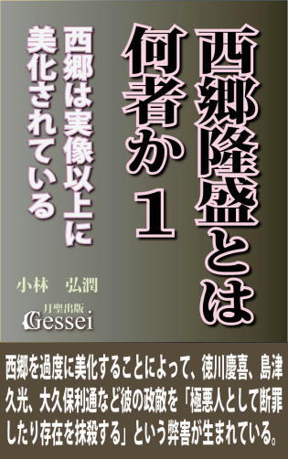
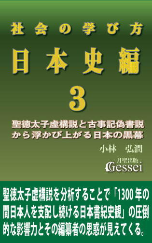
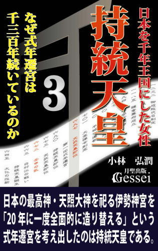
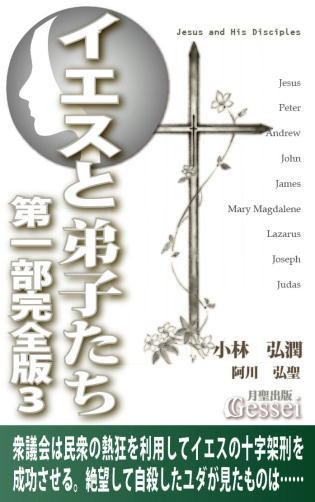
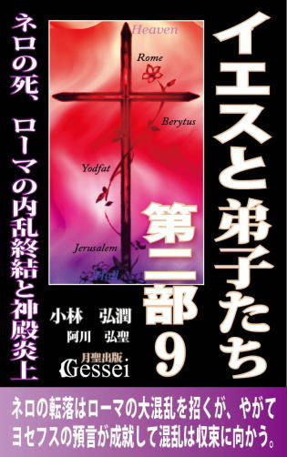
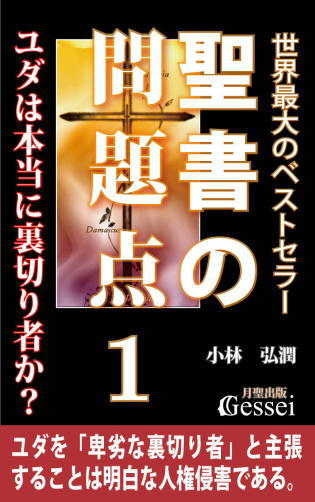
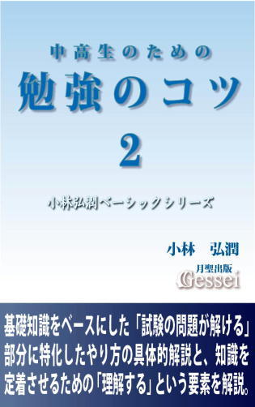
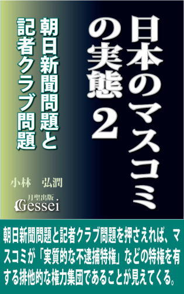

| 社会の学び方・日本史編１: 古代、飛鳥、奈良、平安、鎌倉時代（月聖出版） | |
| 小林弘潤 | |
| Gessei Shuppan (2014) | |
社会の学び方・日本史編１
古代、飛鳥、奈良、平安、鎌倉時代
小林弘潤
※更新履歴
2015/11/2 1.1版 ・Kindle用目次追加
※著者ツイッターで、「本の価格を上げる場合の時期」等の情報を発信しています。ご興味ある方はどうぞ（携帯からも読めます）。
まえがき
学校の勉強の「社会」という科目に対しては、よく「暗記科目」という言い方がなされます。
受験勉強の世界では「社会というのは暗記科目だから、とにかく知識を覚える勉強をすればテストでいい点数が取れる」と言われることもあります。もちろん、「学校の勉強、受験勉強としての社会」という狭い範囲で考えた場合はそれも一つのやり方と言えますが、こうした見方は誤解を招くことがあるので「社会は暗記科目」という言い方を聞いた時には次のことを意識した方がいいと思います。
それは「学校の勉強、受験勉強」と「一般的な意味での勉強」は違う、という視点です。月聖出版刊の紙の本『勉強のコツ』『情報処理のコツ』でも述べましたが、学校の勉強や受験勉強というものは特殊な勉強と考えた方がよく、学校や受験を通じてイメージされた「勉強」という概念は一般的な意味での勉強とは同じだとは思わない方がいいと言えます。その意味で「社会は暗記科目」という言い方も、「そこで言われている社会という勉強はあくまでも学校の勉強、受験勉強での社会であり、本来の社会の勉強というものはそんなものではない」という認識が必要だと思います。
そこで言いたいのは「本来の社会は暗記科目ではなく、面白い勉強である」ということです。こうした「勉強とは面白いものだ」という言い方は世間でも様々に言われていますが、この言い方はたいてい「勉強とは面白いものだと思いなさい」という意味の「上からの押しつけ」になっていることが多いと思います。
ただ、私は「勉強とは面白いものだから、勉強とは面白いものだ、面白いものだ、と毎日毎日自分に言い聞かせなさい」というような「形から入る発想」ではなく、自然な形で勉強とは面白いと思えるように持っていくという「内からの実感を重視する発想」をしていますので、これを読まれている方に対しては「社会は面白い勉強だ、などと無理して思う必要はない」と最初に言っておきたいと思います。
ただ、「本来の社会は面白い勉強だ」ということを無理をせずとも実感として感じてもらうことは、それほど難しいことではないと思います。それは学校で習う他の科目である国語、数学、理科、英語などに比べて社会という科目の場合、「学校の勉強、受験勉強」と「本来の勉強」の違いが明確に表れやすいと言えるからです。
「学校の勉強、受験勉強の社会」の方は「暗記ばかりでつまらない勉強」という認識が根強くあるため、ちょっと知識を加工して面白い要素を入れる作業をするだけで、「社会ってこんなに面白い勉強だったのか！」と思ってもらえる可能性が高いと思います。こうした知識の加工で大事になるのは「基礎知識を入れる」という作業なのですが、「どんな基礎知識が入れば、つまらなかった勉強が面白い勉強に一変するか」というところに注目してもらえればと思います。
私は、この「本来の社会は面白い勉強だ」ということを実感として感じてもらうために、徹底したやり方で臨もうと思っています。それはこの『社会の学び方』という話を一冊だけではなく最初からシリーズ化したものとして構想し、「理解しやすく面白い社会の知識を様々な角度から紹介していく」ことを考えているということです。
そうした「社会の学び方シリーズ」の第一弾がこの『日本史編』です。ここで紹介している日本史の話は教科書的な「現代までの出来事を網羅した日本史」ではなく、「明治時代以前までの日本史」でしかありませんが、その続きとしての『近現代史編』もいずれ刊行したいと思っています。姉妹編として既に刊行しています『世界史編』や『政治経済編』と合わせて（『世界史編』は紙の本だけでなく電子書籍も既に刊行）、社会という科目の面白さを存分に味わってもらえたらと思っています。
第一章 教科書には書かれていない社会の基礎知識
1 歴史が本当に理解でき、面白いと思えるためには「基礎知識」が必要
私は、学校の勉強での「社会」という科目には、本来必要であるはずの基礎知識の説明がほとんどなされていないという思いを持っています。
それは「歴史」という科目において特に強く感じます。中学以降で教えられる歴史は「日本や世界の政治権力や政治体制の変遷の歴史」がほとんどですが、それを学んでいくためには事前に「政治とは何か」「権力とは何か」「国家とは何なのか」についての、わかりやすい説明が必要だと思います。ところが、そうした説明は歴史の教科書には書かれていないので、「この時代ではこういう人が政治指導者になり、こういう政治が行われました」ということが無味乾燥な知識として続いているだけという気がするのです。
また、こうした「基礎知識の説明がない」という傾向は教科書だけではないということも思います。書店に行って「歴史とは何か」「政治とは何か」ということが基本的事柄から説明された本がないかと探してそれっぽい本を見つけても、どうも納得が行かない感じがするのです。
「政治がよくわかる本」というようなタイトルの本を読んでみても、「日本の戦後の政治はこうなっている」とか「各国の政治制度と比べた日本の政治制度はこうだ」というような話から始まっていて、これでは「そもそも政治とは何なのか」「政治は人々にどのように関わっているのか」ということがわからないじゃないか、という気がしてしまうのです。
歴史に関する「面白くてためになる本」はたくさん書店に並んでいますが、私の場合はそうした本を読んでも「根本的なところから説明されているので、深く理解できた」という感覚がなかなか得られなかったものです。そこで私としては「こうなったら自分で書くしかない」という思いになり、この『社会の学び方』という話の構想を始めたということです。
そこで、この「歴史の教科書にも本にも基礎知識の説明がなされていない」ことについて、具体的な話を述べてみたいと思います。
日本史（歴史）の教科書における「鎌倉時代」に関する説明の中には、「源頼朝が鎌倉幕府を開き、武士の政治が行われるようになった」という知識が書かれています。ここで私がこの本を読まれている方に「この知識に関して感じたことを述べて下さい」と質問したとしますと、様々な感想が出てくることが推測できます。
源頼朝や鎌倉幕府を教科書や学校の授業でしか知らない人からは「イイクニ作ろう鎌倉幕府は覚えやすかったけど、執権、侍所、政所、問注所という組織図は覚えにくかった」という感想が出るかもしれませんし、漫画やテレビドラマ等で鎌倉時代の物語を見たことがある人からは「強大だった平家をあっという間に滅ぼしたのは弟の義経だったのに、彼を殺した頼朝はひどい」というような感想を持たれるかもしれません。
私の場合、この「源頼朝が鎌倉幕府を開いた」という知識に対してまず思うのは、「すごい発想だな」ということです。何がすごいのかというと、「幕府」というものを「政府」に変えてしまったという発想です。
というのも、「幕府」とは元々「軍の前線基地」という意味で、国全体を統治する政府機構とは違ったものだからです。そして幕府を統括するのが「征夷大将軍」という役職ですが、この役職も本来は「政治の指導者」ではなく、「戦いの前線で兵士を指揮する司令官」にしか過ぎなかったと言えます。そうした「幕府」や「征夷大将軍」を頼朝とその部下たちは、「武士による政府」と「政治指導者」に変えてしまった、という言い方ができます（ただ、幕府の名称が武家政権の政庁を表すようになったのは江戸時代中期以降で、それ以前の時代の人々は鎌倉や室町の中央政庁のことを「幕府」とは呼ばなかったらしい）。
こうした「幕府による統治」という政治形態は世界史的にも珍しいと言われていますが、そうした珍しい政治形態が「鎌倉幕府が滅んだ後も室町幕府、江戸幕府に受け継がれ、数百年に渡って日本の統治のしくみとして続いた」という日本の歴史の流れには、感嘆の思いすら抱いてしまいます。
ここで言いたいのは、私が「源頼朝が鎌倉幕府を開いた」という知識に接して感心したり感嘆するような思いになれるのは、「幕府には本来政府の意味はなかった」という基礎知識を知っているからだ、ということです。このことは歴史に限らず、すべての勉強において言えることですが、知識や情報というものに対して「深い理解ができ、面白いと思える」ためには、このような基礎知識がどうしても必要なのです。
もう一つ、私が「源頼朝が鎌倉幕府を開いた」という知識について思うのは、「これほどの社会の変革がよく起こったものだな」ということです。こういう思いが出てくるためにもまた別の基礎知識が必要で、それは「社会の変革ということは、よほどの事情がないと起こらない」という知識です。
このことは個人の例で考えるとよくわかると思いますが、例えば誰かから「あなたは今から性格を変えなさい」と言われて、「はいわかりました。すぐに変えます」と言って実行する人はほとんどいないと思います。たいていの人は素直に実行するところか、「お前にそんなこと言われる筋合いはない」と反発するものです。
それは、人間にとって「変わる」とか「変革する」ことには大変な労力が伴うからです。「社会の変革」を言葉で言うのは簡単ですが、実行しようとすると多くの人が反発したり抵抗するので、そう簡単にできることではないのです。それを逆に考えますと、歴史の中で社会の変革が起こった時というのは「よほどの事情があった時」と言うことができるのです。
この場合のよほどの事情とは、「当時の武士たちにとって、武士の政府はどうしても必要だ」という切実な思いがあったこと、と言うことができます。
それは「平安時代の後半は政治が機能していなかった」という状況があり、当時の武士たちは「政治が機能してくれないと困るから、ちゃんとした政治をやってくれる政府が欲しい」と切実に思っていた、ということです。こうした状況を現代的に言いますと「世論が高まった」ということですが、これが大きなものになるとそれが巨大な力になり、それによって社会の変革が起こることがあります。結局、源頼朝はこうした武士たちの世論の高まりを力にしたことで、「幕府を武士の政府にしてしまう」という社会の大変革に成功したということが言えるのです。
ここで紹介した二つの基礎知識のうち、「幕府には本来政府の意味はなかった」という知識は、「日本の歴史で『幕府』というものが出てくる場合にのみ考えればいい」という類のものですが、もう一つの「社会の変革はよほどの事情がないと起こらない」という知識は、鎌倉時代だけでなくどの時代でも（現代にも）当てはまることですし、さらには「日本だけでなく世界中の社会の変化を見る際にもしっかり意識する必要がある」とも言っていいほど重要な知識だと思います。ところが不思議なことに、これほどの重要な知識が歴史教科書には書かれていないのです。
2 「政治とは何か」という知識がないと学校で習う歴史が本当にわかったとは言えない
私自身は中学や高校の頃、「歴史」は好きで得意科目でもありました。その影響で大学は西洋史（古代ローマ史や原始キリスト教史、中世ヨーロッパ史）を専攻していろいろ勉強してきたものです。ただ、現在振り返ってみてつくづく思うのは、「自分は中学、高校、大学と様々に歴史を学んできたつもりだったが、実際は歴史というものをまったくわかっていなかった」ということです。
現在学校で「学校の勉強、受験勉強の歴史」を習っている人の中には、歴史が得意で「自分は歴史がよくわかっている」という自信を持っている人もいると思います。ただ、「本当にわかっている」と言えるためには、この質問にしっかり答えられる必要があると思います。
それは「政治とは何か。何のためにあるのか」という質問です。これに対し、「人々が幸せに暮らせるため」というような一面的で抽象的な答えではなく、具体例を盛り込んだ現実的な答えができるかどうかです。
「なんで歴史に政治が関係あるんだ？」と思われるかもしれませんが、それは、中学以降で教えられる歴史のほとんどが「政治体制の変遷の歴史」だからです。中学で習う日本史であれば、人物名としてまず出てくるのは卑弥呼です。それ以降、重要なところでは聖徳太子、天智天皇、聖武天皇、桓武天皇、藤原道長、白河上皇、源頼朝......と続いていきますが、これらは皆「政治指導者の名前」です。
歴史教科書には、そうした人物名の後に「彼らがそれぞれどんな政治をしたか」という説明がされているわけですが、それらを読んで「なるほど。この時代ではこういう政治が行われ、日本の政治体制はこう変わってきたのか」ということが理解できるためには、事前に「政治とはこういうものだ」「政治体制の変遷にはこういうパターンがある」という知識が学習者の頭にインプットされている必要があるのです。
本来、こうした「政治とはこういうものだ」という基礎知識は教科書の冒頭にでも書いておくべきだと思うのですが、実際の教科書はそうはなっていないと思います。私のこうした思いは、「今までのものより面白く、わかりやすい」と評判になった歴史教科書（２０００年頃に話題になった「新しい歴史教科書をつくる会」が執筆した教科書）を読んでみても同じでした。世間でどんなに「わかりやすい」と言われている教科書であっても自分としては納得できなかった以上、「こうなったら自分で書くしかない」という気持ちになった、というわけです。
前節では、「源頼朝が鎌倉幕府を開いたのは社会の大変革だった」という話を紹介しましたが、私の中には「鎌倉幕府誕生」という出来事を本当に理解してもらうためには、この説明だけでは中途半端という思いがあります。それは、平安時代後半の「政治が機能していなかった」という状況がなぜ起きたのか、ということと、当時の武士たちの「政治が機能してくれないと困るから、ちゃんとした政治をやってくれる政府が欲しい」という思いを「本当に切実だったんだな」と理解してもらうためには、「政治とはこういうものだ」という基礎知識をインプットしてもらう必要があるからです（そうした知識を踏まえた「鎌倉幕府開設」の詳しい説明につきましては、第二章で改めて紹介しています）。
ではここから、「政治とは何か。何のためにあるのか」という質問についての、私なりの答えを述べてみたいと思います。こうした言い方をした以上は「ちゃんとした説明じゃないと納得しないぞ」という声も聞こえてきそうなので、根源的な観点からさかのぼって詳しく述べてみようと思います。
それは、あらゆる時代、あらゆる地域に共通したすべての人間が持つ「よりよく生きたい」という思いから始まっているのです。
3 人がよりよく生きるために必要な「共同で生きる発想」と「ルールやリーダーの存在」
まず確認しておきたいのは、すべての人間は「よりよく生きたい思い」を持ちながら生きている、ということです。もちろん、この「よりよく」の中身は時代や地域や個々人の性格などによって違いますが、少なくとも最初から「より悪く生きたい」と思って生きている人間は一人もいないと言えます。
そうした思いを持った人間が、太古の時代から考えて続けてきたこと（これからも考え続けていくこと）は、「よりよく生きるにはどうすればいいか」という観点です。そして、これを考える際にまず必要なのは「人間は肉体を持っている」という認識です。肉体というものは食物、酸素、水を定期的に与えないと維持できないため、人間がよりよく生きるためにはまず「食物、酸素、水を定期的に確保すること」が必要不可欠の課題になります。
ただ、こうした話は「物質的に豊かな現代の日本」に住んでいるとなかなか実感しにくいことなので、現代とは違った世界という状況を提示してみたいと思います。それは、人間がこの地上に生息し始めた「原始の時代」という状況です。
現代のような文明的な要素は何一つなく、テレビも車も冷蔵庫も暖房器具も時計もなく、お金という概念が存在せず、家というものもなく、ましてや携帯電話とかスマホなど影も形もなかった時代に、よりよく生きたい思いを持った人間がどんな考え方をするかです。
そこで最初に出てくるのは、「食物や水をいつも確保できるような環境を作ろう」という発想だと思います。よりよく生きたいという強い思いを持った一人の人間がいたとしたら、彼はまず食物を確保しようとして大自然の中をあちこち探し回ると思います。それによって「川に近く、木の実や小動物などが豊富にある場所」を見つけることができれば、最低限の環境は手に入ったと言えます。ただ、これで生きるための条件や環境が整ったわけではなく、次に「安全の確保」が必要になると言えます。
原始の大自然の中には様々な生き物が生息しており、中には人間よりもはるかに強い、狼や猪や熊などの猛獣が存在していたことが推測できます。猛獣たちも食物を探しているため、人間の食物になるような小動物が豊富にある場所では、猛獣に襲われる可能性が高いと言えます。
一人の人間が、素手で猛獣に立ち向かってもどうしようもありません。頭のいい人間なら武器を作って対抗することも考えるでしょうが、一人ではまず勝ち目はないというのが現実です。
そこで人間が考えたのは、「一人で生きるのではなく、人々が集まって共同で生きる」という発想です。猛獣に対しては、一人では無理でも仲間で力を合わせて対抗すれば撃退できると言えますし、一人でいた時には食物のある場所がわからなかった人間でも、仲間に教えてもらえることで彼らもよりよく生きたい思いをかなえることができるわけです。
ここに、「多くの人々が集まって共同で生きる」ことの原点があります。結局、人間は一人一人がバラバラで生きるよりも、多くの人が共同体を作って助け合って生きていく方が、一人一人のよりよく生きたい思いが実現しやすい、と言えるのです。
ただ、多くの人間が集まると便利なだけでなく様々な問題も生じます。仲間に食べ物の場所を教えたところ、その人が食欲旺盛でその場所の食べ物を全部食べてしまう、ということもあるものです。そこで必要になってくるのは「決まりやルール」というものです。
多くの人が共同体に参加している以上、特定の人間ではなく多くの人の「よりよく生きたい思い」を尊重する必要があります。その方向で「特定の人間に自分勝手な行動をさせない」という趣旨で生まれたのが、決まりやルールというものなのです。
また、「皆で猛獣を退治しよう」と考えた場合、皆がバラバラに動くよりも優れたリーダーが的確な指示を出した方が犠牲者を出すことなく退治することができます。ここに「リーダーの必要性」が生まれ、共同体の皆が優れたリーダーを求めるようになります。それは、リーダーが優れていればいるほど、自分たちのよりよく生きたい思いがかなえられるからなのです。こうして、しっかりした決まりやルールがあり、優れたリーダーがいる共同体が「いい社会」と呼ばれるようになるのです。
次に言えることは、こうした「いい社会」ができると人口が増え、その共同体が大きくなるということです。どんな人間にもよりよく生きたい思いがある以上、「いい社会に所属したい」と願う人がどんどん集まってくるからです。
共同体が大きくなると社会の組織化が進み、そこに所属する人間たちの役割が細かく分類される現象が見られるようになります。こうして大きくなった共同体のことを「国家」と呼び、ここに「政治」という概念が登場するのです。
4 共同体の巨大化で生じた人間の役割分化と「警察、裁判、外交、軍事」の誕生
ルールやリーダーというものは、どんな人の集まり（組織）でも存在します。例えば、学校という組織の中には学校内で守るべきルール（校則）がありますし、クラスの中では担任の先生がリーダーと言えるかもしれません。では、そうした組織と国家はどこが違うのかと言いますと、国家には「財産や安全を守るなど、人が生きるための根源的な部分を担う役割」があると言えると思います。
例えば「財産」ですが、これがないと人はよりよく生きることはできないので、誰でもそれを得ようと必死に努力します（お金が存在しなかった原始の時代では、食物や土地が財産になっていたと言える）。ただ、財産を「得る」のは一人一人がやることですが、「守る」ことは個人の力だけでは難しいと言えます。
社会の中に苦労して手に入れた財産でも誰かが簡単に奪ってしまうような風潮があると、財産を持っていても安心して生きることができません。そのために、共同体としては「その人が苦労して手に入れた財産を、他の人が勝手に奪ってはいけない」というルールを作ります。そして「それを破った人には罰を与える」というしくみも作ります。
こうした話を聞くと「罰を与えるなんてかわいそうだ」と感じる人もいるかもしれませんが、ルールを破った人に相応の罰を与えなかった場合は「また奪ってやろう」と考える人が出るかもしれず、そうなったらその共同体は「暴力などの力が強い人が、力のない人の財産を奪い続ける社会」になりやすくなります。
大事なことは、「ルールを決め、破った人には罰を与えるしくみ」を作ることで、そこに所属する人々に「ルールを破ったら後で大変だ」という意識になってもらうことです。すると、人々の中になるべくルールは守ろうという考え方が生まれ、それがその共同体の風潮になってきます。
共同体の中にそうした風潮や雰囲気ができると、後からそこに入ってきた人や、新しく生まれた子供であっても自然に「ここではルールは守らなければならないのだ」という考え方ができるようになります。すると、その共同体では各人の財産が誰かに勝手に奪われることが少なくなるので、そこに住む人たちが安心して暮らせるようになるのです（これは「罰という抑止力による犯罪軽減効果」という言い方ができる）。
こうした「ルールを決め、破った人には罰を与える」という行為は、原始の小さな共同体ではリーダーが一人で行っていたことが推測されます。ルールを破った人が出た場合、リーダーは共同体に所属する数十人の住民の前で、その人にこんな命令を出していたかもしれません。
「あなたはＡさんが一年かけて集めた食物を盗んで自分のものにしようとし、『人の食物を盗んではいけない』というルールを破った。罰として、誰もいない洞窟に入ることを命令する。これから絶対にやらないと反省するまでそこから出てはいけない」という感じでしょうか。
こうしたしくみがうまく機能して、共同体の中にルールを守ろうという雰囲気（遵法精神）が出てくると、「いい社会に所属したい」と願う人が集まってくるようになります。それによって人口が増え、共同体が大きくなっていくわけです。
ところが、こうして共同体が大きくなっていくと「リーダーが一人でルールを作り、守らせる」ことができなくなります。それは、クラスの人数が30人くらいなら、クラスのリーダーである先生は一人一人に声をかけることができますが、クラスの人数が数百人、数千人と増えてしまったらとても無理になることと同じです。そこで次に起こったのが「社会の組織化」という現象です。それは、共同体が小さなうちはリーダーが一人でやっていた仕事を、大きくなって一人ではできなくなったので多くの人に分担してやってもらうようにする、ということです。
その中で、まずはルールというものが、誰にでも通用するしっかりした形にした「法律」に進化していきます。さらに、犯罪を行った人を捕まえる「警察機構」ができ、そうした人の罪を確定して相応の罰を与える「裁判」という概念が独立するようになります。これによって、共同体の中に警察の役割、裁判の役割などを専門に行う人が現れるようになります。これが人間の役割の分化ということです。
人間の役割の分化が進んでいくと、人間がよりよく生きるために必要な仕事のあり方にも変化が生じます。共同体が小さかった頃、人々の仕事とは「食物を収穫する」「猛獣を退治する」等の、生きることに直接関わる作業の比重が高かったと言えます。この場合、人々は「あなたはこれだけ収穫したから、これだけもらっていいよ」という形で、自分たちの仕事の量に応じて食物を手に入れていたと推測できます。ところが、警察や裁判などの専門の仕事をする人は食物の収穫の仕事ができないので、そのままでは生きるために必要な食物が手に入らないことになります。
そこで考え出されたのが「税金」という概念です（原始の時代にはお金がなかったことを考えれば、〝税食物〟になるかもしれないが）。これは「そこに所属する人々が手に入れた収穫物の一部を共同体が集め、集めたものを専門の仕事に従事している人たちに分配する」という発想で、税金から分配された給料を得て生活している人たちのことを「役人」（官僚、公務員）と呼ぶわけです。
さらに言えることは、その共同体が「所属する人々の財産や安全を守る」という役割も持っていることで、所属する人々の中に「共同体そのものを守ろう」という考え方が出てくることです。
もし今いる共同体が、他の共同体から武力での侵略を受けるなどして滅んでしまったら、安心して暮らせる生活もなくなってしまうので、「共同体を守ろう」という発想とそれに関する役割が生まれたと言えます。そこで、他の共同体と共存していくための交渉などを行う「外交」という役割が発生し、さらに他の共同体からの脅しや侵略に対し、共同体とそこに所属する人々を守るための「軍事機構」ができるようになったのです。
結局、このようにして生まれた警察、裁判、外交、軍事などの役割を通じて、共同体（国家）とそこに所属する人々を守り、彼らがよりよく生きるために必要なことをする行為のことを、「政治」と呼ぶのです。
5 政治に必然的に付随する「権力」は、悪用されると凶器に変貌する
政治について考える際にまず押さえるべきことは、政治の本来の目的が「共同体に住む人々が持つよりよく生きたい思いをかなえるためにある」という点です。
ところが、過去の歴史の中の様々な政治機構（政府）がやったことを見てみますと、「そこに住む人々のためによい政治をした」という雰囲気の話よりも、「政府やその役人が、そこに住む人々の利益よりも自分たちの利益の方を優先させた」という話の方が目立つものです。それには明確な理由がありまして、それは政治が持っている宿命的な要素に関係するのです。その要素とは、政治に携わる政府というものには、必然的に「権力」というものが付随しているという点です。
ここで言う権力とは「国家権力、政治権力」のことですが（権力にはもっと広い意味もあり、詳細は紙の本『社会の学び方・政治経済編』第二章）、簡単に言いますと「その国に住む人たちに対し、命令して言うことを聞かせる力」ということです。こう言うと「命令して言うことを聞かせるのはよくない」というマイナスイメージが浮かんでくるかもしれませんが、権力というものは多くの人が集まってできている国家というものの性質上、なかったら困るものなのです。
それは例えば、原始の共同体において「人の食物を盗んではいけない」というルールを破った人に対し、リーダーが「罰として、誰もいない洞窟に入ることを命令します」と言ったのに、その人が「命令なんて聞きたくない」と言ってそれに従わなかったらどうなるかを想像すればわかると思います。そうした命令を拒否する人が出た場合、共同体の構成員の中から「ルールを破っても大丈夫みたいだから、もっと破ってやれ」と考える人が現れ、やがてその共同体は「暴力などの力の強い人が弱い人を支配する社会」になってしまう可能性が高いと言えます。
そうした社会にならないためには、リーダーや政府が「ルールや法律で決めたことを構成員に守らせ、こうしなさいと命令したことには従わせる力」を持っている必要があるのです。こうした「構成員に刑罰を強制できる権力」の中には、悪質な罪を犯した人を死刑にできる力も含まれており、これは言ってみれば「国家は人を殺す力も持っている」ということです（もっとも、最近では死刑を廃止している国も多くなり、国家はすべて合法的に人を殺す力を有していると一概には言えなくなってきているが）。
結局、こうした「刑罰を強制できる権力」が国家に認められている理由は、その国に住む人々の安全を確保するため、そして「社会の秩序を保つ」ために必要だからです。「国が人を殺す力を持っている」というのも、それが社会の秩序を保つという前提の上に成り立っているということです。
また、こうした権力を持つことが許されなくなってしまうと、政府は住民から税金を集めることができなくなります。税金というのは、住民から「今年は払いたくありません」という人がいた場合に「ああ、払いたくないならいいですよ」と言って済むようなことではないのです。政府に、住民から強制的に税金を取り立てる権限（租税徴収権）が許されているのは、それがなかったら政府が収入を得られないことになり、政治というものが成り立たなくなるからです。
ただ、「権力」というものは厄介な特性を持っているのもまた確かです。たとえて言いますと、権力は包丁や自動車に似ています。これらのものは、本来の目的に沿って「料理」とか「人やモノの移動手段」として使いこなせれば問題はありませんが、使い方を誤ったり、本来の目的が忘れられて悪用された場合はたちまち「凶器」に変貌してしまうからです。
それは例えば、権力者が自分が嫌いな人間に重い罰を与えるとか、「住民から重い税金を取り立て、権力者がそれをすべて自分の利益にしてしまう」というような事態です。共同体が大きくなって国家として数万、数十万、さらにそれ以上の規模になってくると、入ってくる税収も巨額なものになるために、「そういう権力を手中に収めたい」と考える人間が数多く出てくるようになります。
また、その国家の住民にとっては「政治指導者には常に立派な人であって欲しい」という思いがありますが、その時の指導者が立派な人であっても、年月がたてばやがてその人も引退し、次の指導者に道を譲らなければならなくなります。ここで大事になるのは「政治指導者や役人の地位をどのように継承するか」という観点で、ここから「自分の子孫に政治指導者（王や皇帝、天皇）を継がせる世襲制」や、「人間には生まれながらの身分や階級に違いがあるという身分制度」の考え方が出てきます。
こうした世襲制や身分制度を考える際に必要になるのは、人間が持つ価値や値打ちをどうとらえるか、という視点です。
6 人間の序列化の進展による上下の差の広がりと血統重視の発想について
この「人間の価値」ということを考える前に押さえておく必要があるのは、人間の序列化という観点です。共同体が大きくなり、人間が社会の中で様々な役割を分担し合う人間の役割の分化が進むと、やがて社会の中で「人間の序列化」が進展する状況が生まれます。
この序列化とは「人間を、命令する立場とそれを受ける立場に分けること」と言えますが、その出発点は「共同体がリーダーを決め、そこに所属する構成員はリーダーの指示に従う」というコンセンサス（同意）ができたところにあります。これによって「リーダーは、そこに所属する人々よりも立場が上になる」という、一つの序列化が生まれたことになりますが、まだこの段階では「リーダーが一つ上で、他の人々は対等の位置にある」という状態と言えます。
ところが、最初はリーダーが一人でやっていた政治の仕事を、共同体が大きくなったために警察、裁判などを担当する人間に分化することによって、そこに所属する構成員は、リーダーだけでなく警察担当の人や裁判担当の人の命令も聞かねばならない状態になります。
例えば、裁判担当の人はルールを破った人に対しては「罰として、洞窟に入りなさい」等のことを命令できますが、その裁判を担当する人が何か問題を起こした場合は、その上の立場にあるリーダーがその人に対して命令して罰を与えることができます。これは「序列化が一段進んだ」ことを意味し、共同体が大きくなるとこうした序列化はさらに進んでいきます。
やがて裁判担当の中でも、「裁判担当のリーダーと部下」という序列化が生まれます。さらに、共同体が国家になって広大な地域が一つの社会になってくると、「組織を本部と支部に分ける」という発想が生まれ、「支部は本部の命令を聞かないといけないが、支部の中でもリーダーと部下が存在する」という構造になります。このように「社会が大きくなるほど序列化が進む」と言えますが、それは「序列化が進むほど、人間の上と下の差が大きくなる」ということも意味します。
こうした「上と下の差が大きくなる」という話は一見、「最初は平等だった人間がだんだん不平等になっていく」という感じがするかもしれませんが、この「差」ということは本来、人間そのものの偉さの差という意味ではないのです。これはあくまでも「社会の中での役割の違い」ということであって、それは「社会の中で価値ある役割を担っているか」という観点で考えるべきことなのです。
ここで「価値」という言葉が出ましたが、こうした「社会の中での役割における価値の差」という認識が次第に変わっていき、「序列化とは、人間そのものの価値の差である」という考え方になっていきます。それによって「人間には生まれながらの価値の違いがある」という身分制度の発想が出てきたのです。
身分制度の考え方の背後には「人間の価値は血筋や血統によって決まり、価値の高い人から生まれた子孫も同じく価値が高い」という「血統重視」の発想があります。そして、この発想を元に「政治指導の後継者はその子孫が継ぐもの」という「世襲制」の考え方が生まれたのです。これによって、国の政治指導者の一族が王族（皇族）として「国家の身分の中での最高位」に位置づけられるようになり、さらに国家の中で価値ある役割を担っている一族を「貴族」「豪族」などと呼んで、一般の民衆とは区別する流れができていったのです。
こうした血統重視の考え方は、人間社会の中では世界中のあらゆる地域に存在しますし、過去だけでなく現在にもしっかり残っています。そして、この考え方と対になるのは「血筋に関係なく、各人の実力や能力に応じた人事配置をする」という「実力、能力重視」という考え方です。この「血統重視」と「実力重視」は一見正反対の発想に見えますが、ある意味で「人間の価値をどうとらえるか」を考える際のちょっとした見方の違いだけ、と言うことができます。
国家における政治指導者という地位には「巨大な権力」が伴っているので、政治指導者をどう継承するかという観点は非常に難しい問題として存在してきました。特に、「血統重視と実力重視のどちらを取るか」という観点をめぐっては、歴史の中でも様々な問題を生んできたと言えます。これについては第二章以降の日本史の具体的な話の中で、具体的な話を紹介してみたいと思っています。
7 一人一人の役割が見えにくくなったことによる「自分たちだけの利益の追求」という傾向
共同体が巨大化し、国家として広大な地域に数多くの人口を抱えるようになると、それに伴っていくつか弊害や問題が生じます。「権力の悪用」や「人間の序列化から生じた差別」もそうですが、さらに言えることは「人間の役割の分化が進んだことで、一人一人の人間が持つ役割が見えにくくなる」という問題です。
共同体や国家を運営する政府の機能は警察、裁判、外交、軍事など様々な組織に分化していますが、それらの組織はバラバラに行動していいわけではなく、その行動は一つのことに収斂されます。それは、政治の目的である「国家（社会）とそこに所属する人々を守り、彼らがよりよく生きるために必要なことをする」という一点です。これについて、人間の体の構造にたとえて述べてみようと思います。
人間の体というものは心臓、脳、肺、胃、小腸、肝臓、筋肉、骨格、血管など、様々な器官や組織から成り立っています。それらの器官や組織が果たしている役割は多種多様なものがありますが、そうした様々な役割は「その人間が生きるために必要なことをする」という一つのことを具体的に展開したもの、と言うことができます。
ここでもし、心臓や脳が「人間の世界では個性を大切にしましょう、とか言われているから、自分たちも個性を主張して生きたいように生きよう」という気を起こして、本来の役割を放棄してバラバラな行動を起こし始めた場合、大変なことになってしまいます。現実には、こうした器官には〝独立心〟のようなものは存在しないと思われますが（多分）、それに対して人間という生き物には「一人一人が自らの意志や独立心を持ち、各人それぞれのやり甲斐が得られないと行動したがらない傾向」があると言えます。
原始の共同体で「リーダーが警察、裁判、外交などの役割を一人ずつの人間に分化した」という段階では、それぞれの人には自分の役割がはっきり見えていたと思います。「自分は社会の中で心臓に当たるから、血管に血液をスムーズに送り出す仕事が担当だ」とか、「自分は肺に当たるから、酸素と二酸化炭素の交換の仕事をしっかりやらないと。手を抜いたら体中の細胞が死んでしまう」ということをことさら意識しなくても、役割がはっきり見えるのでやり甲斐は感じられたと思います。
ところが、共同体が巨大化することによって、一人一人の人間の役割が「心臓の中の筋肉の一つ」とか「肺の中の肺胞の一つ」などのように、全体の中では些細なものでしかなくなってしまったため、「自分の役割が見えにくくなり、やり甲斐が感じられなくなる」という状況が生じたと言えます。
人間には「狭い範囲しか見えない行動に陥りやすい」ところがあると言えますが、共同体の巨大化によって「社会や国家の中での役割を果たす」という本来の目的が忘れられ、「自分たちだけの利益の追求」という狭い範囲の行動に走ってしまう傾向が出てきたのです。身分制度によって生まれた、上級身分だけに認められる特別な利益や権利である「特権」や、役人や官僚が持つ権力や権限によって生じる利益としての「利権」というものが、自分たちだけの利益の追求で活用された場合は、社会に様々な弊害をもたらすことになるのです。
こうした「自分たちだけの利益の追求」がなぜいけないかと言いいますと、それが「社会全体の不利益になる」だけでなく、結局は自分自身をも滅ぼす道だからです。
人間の体の器官の中で、例えば小腸という器官が「自分たちだけの利益の追求」をして、「吸収した栄養分を自分たち小腸の細胞を活性化させるためだけに使い、人間の体に回さないようにする」という行動を起こした場合にどうなるかと言いますと、まず他の器官が必要な栄養分を確保できなくなります。それは一時的には「小腸だけが豊かになる状況」を生むかもしれませんが、他の器官が栄養を確保できずに死んでしまったら人間本体も死んでしまい、結局は「小腸自身も死ぬしかなくなる」ことは間違いありません。
8 不利益を受けた人々による社会の変革への動きと人間の行動における「正義」の必要性
こうした「自分たちだけの利益を追求する行為は、結局自分自身をも滅ぼす道だ」という視点は、ある意味「これを世界中の人が心がければ、人類社会の大半の問題は解決できる」と言えるくらい大事なことだと思います。ただ、もちろんそれを現実に実践するのは簡単ではなく、ここでも「共同体の巨大化で人間の役割の分化が進んだために、一人一人の人間が持つ役割が見えにくくなった」ことがネックになってくるのです。
それは、原始の小さな共同体で「社会の中の小腸の部分を一人で担当する」という状況であれば、「自分だけの利益の追求をしたら共同体が大変なことになり、結局自分のためにもならない」ことが想像しやすいので、「自分だけの利益の追求はよくない」という話が実感として受け止められるものですが、一人一人の人間の役割が「小腸の中の筋肉の一つ」などのように、全体の中で些細なものでしかなくなってしまうと、自分だけの利益の追求をしたら社会全体に影響を与えることの実感が持ちにくくなり、狭い範囲の発想に走ってしまう可能性が高くなる、と言えるのです。
こうして、一部の人間が「自分たちだけの利益の追求」に走ってしまうと、社会の中で「本来公平に分配されるべき権利や利益が一部の人間や組織に独占される」という事態が生じるため、それによって不利益を被る人々が出てきます。そうした不利益というものも、それが小さなうちは我慢や辛抱ができるものですが、働いても働いても自分たちが得るべき利益が一部の特権階級に渡ってしまうことが続いた場合、「社会の中でこんな不公平があるのはおかしい。社会のしくみを変革するべきだ」という声が出てくるのです。
ところが、人間は「状況に慣れて緊張感がなくなってしまうと、その状況に安住してそれが当たり前と思いやすい」という性質も持っているため、一度特権や利権を不当に使って得た利益に慣れてしまった人間は、「それを手放したくない」という意識を持つようになります。この本の１で触れました「社会の変革を実行しようとすると、多くの人が反発したり抵抗しようとする」ことの理由の一つが、この「一部の人間の特権や利権を手放したくない意識」にあるのです。
ここで言いたいことは、人間の行動における「正義」というものの必要性です。
人は、何か行動を起こす際には成功を目指します。そして成功のためには、他の人からの理解や支持が必要になります。どんなに「オレは一匹狼だ。誰の理解も必要ない」と言い張っている人でも、心の奥底では「他の人からの理解や支持を得たい」と思っているものです。ここで大事なことは、他の人から「この人のやっていることは間違っている。この人は悪だ」と思われてしまったら、理解や支持が得られなくなることです。
こうしたことは誰でも本能的にわかっているので、人が何か行動を起こす際には必ず「正義」を必要とするのです。特に、社会の変革のような大きなことを成功させるためには「世論の高まりによる、多くの人々の支持」が不可欠なので、誰もが正義だと判断できるような「大義名分」が必要になるのです。
そのため、不利益を受けた人々が社会のしくみを変えようと行動する際は、「一部の人間が不当に利益を独占しているから、他の人たちが本来受け取るべき利益を得られなくて苦しんでいるではないか。多くの人が苦しんでいる社会が正義であるはずがない。社会のしくみを変革することこそ正義だ」と主張します。
それに対して「利益を不当に独占している人々」の方は、「おっしゃる通り、自分たちは特権や利権から利益を不当に独占していました。だから自分たちは悪でした」とは普通言いません。ではどうするかというと「正当化」をするのです。「今の社会のしくみは先祖代々ずっと続いてきたもので、間違っているはずがない。これを保持することが正義であり、変革しようとするのは悪だ」ということを言って、「自分たちこそが正義だ」と主張するのです。
社会の中で争いが起こった場合は、当事者の双方が「自分たちこそ正義だ」と主張するので、「どちらが本当の正義で、どちらが正当化した偽の正義か」という判断は難しいものです。ここで「正義とは何か」という問題について突っ込んだ話をすることはできませんが、大事なことは「正義として多くの人々の支持を得るためには、それぞれの時代や地域、そして人々の考え方に合致した主張をする必要がある」ということです。
そこで浮かび上がってくるのが「思想」というものです。思想は人々の考え方に多大な影響を及ぼしており、そのため社会の変革におけるキーポイントになってくるのです。
9 社会に浸透した思想が持つ影響力の大きさと革命思想について
「思想」という言葉を改まった形で使うと、何か難しくて取っつきにくい印象があるかもしれませんので、まずは身近な話から始めたいと思います。
最近の世間でよく主張される考え方に「環境を大切にしよう」というものがあり、多くの人がこの考え方（思想）に賛同していると思います。ただ、この考え方を現代の多くの人が賛同している理由は「その思想が正しいから」だけではないのです。それ以上に、「その思想に巨大な権威が付随し、社会に浸透したことによって多くの人に正しいと認識されているから」という要素が大きいのです（権威に関する基礎的な話は紙の本『人間関係のコツ・パート２』第二章参照）。
ここで言いたいことは、権威が高まることによって生まれた「社会に浸透した思想」は大きな影響力を持っているということですが、さらに言えることは「実際はその思想が正しくなくても、社会に浸透してしまえば皆が正しいと思うこともある」という視点です。
例えば、昔は「天動説」という思想があったと言えます。「太陽が地球の周りを回っている」という考え方ですが、現代ではこの思想を正しいと思っている人はほとんどいないと思います。しかし、近代科学が発達して自然現象の解明が進むまでの時代では、ほとんどの人が「天動説が正しい」と考えていたと思います。
もし、現代の人がタイムマシンで平安時代や鎌倉時代の日本に行って、当時の人たちに「あなた方は太陽が地球の周りを回っていると思っているようだが、実はそうではないのだ。地球が太陽の周りを回っているのだ。未来の科学で実証されたことなのだから、こちらの方が正しいのだ」と言って回ったとして、「そうか。実は地球の方が回っていたのか」と即座に納得する人はほとんどいないと思います。
おそらく、大半の人は「何をバカなことを言っているんだ。現に太陽は動いているし、地球も止まっているじゃないか。もし地球が太陽の周りを回っていたら、俺たちはいつも乗り物に乗っているような感覚になるはずだ。そんなことあるわけないだろう」という印象を持つと思います。
このことは、地動説が持つ「正しさによる力」よりも、天動説が「社会に浸透していることによる力」の方が大きいことを意味します。こうしたことから、「ある思想がいったん社会に浸透してしまうと人々の考え方に影響を与え、その思想が国家や社会の情勢にも大きく関わっていく」と言えるのです（ちなみに、「環境を大切にする思想」は天動説と違って正しい方向性を含んでいると私も思います。念のため）。
このことを「国家の興亡」や「政治体制の変革」の話として紹介してみますと、分かりやすいのが18世紀末に起こったフランス革命の例です。
革命が起こる以前のフランスは「身分制と王政」という血統重視の発想から社会が成り立っていたと言えます。こうした血統重視の社会は、実力重視の発想に慣れた現代人から見ると「何か変だな」という感じがするものですが、この本の６で述べましたように、血統重視も実力重視も「人間の価値をどうとらえるかを考える際のちょっとした見方の違いだけ」と言うこともできるので、一度この血統重視の思想が社会に浸透すると、誰もが「それが当たり前」と思うようになるのです。
現代の政治思想では民主主義という概念が社会に浸透していますが、日本でこの民主主義に基づいた政治体制が始まったのは、たかだか百数十年ほど前でしかありません。それに対して、フランスの王政には千年近くの歴史があったのです。一度巨大な権威として社会に浸透し、長い時間の中で社会に強固に根を張った思想というものは、そう簡単に変わるものではないのです。
身分制というしくみの元では、一般の民衆は「政治というものは国王などの一部の人間がするもので、自分たちがやるものではない」という意識になってしまうため、そうした状況で社会の中で不利益を被った人々が「社会の変革を起こそう」と考えたとしても、普通思いつくのは「今の国王を何とかやめさせて、いい国王に交代させる」ぐらいのことと言えます。
ところがフランス革命で何が起こったかというと、それまでは政治に関わりを持たなかった平民出身の人間たちが「革命政府」を組織して統治の権利を国王から奪うことに成功し、その国王を処刑し、さらには王政を廃止して統治のしくみを「共和制」に変えてしまったのです。その後のフランスは、社会の急激な変革に対する反動もあって様々な紆余曲折を経ましたが、結局は国王のいない共和制の国になりました。
日本の場合、鎌倉幕府開設や明治維新が統治のしくみが大きく変革した例ですが、それでも「日本という国の統治の根本」である天皇制というしくみは残りました。その意味で、このフランス革命は「千年近く続いてきた王政という統治のしくみを根本から変えてしまった」という意味で、それ以上の大変革と言えるのです。
では、なぜこれだけの大変革が成功したのかと言いますと、革命直前のフランス社会に浸透した「思想」に大きな要因があるのです。それは、ジョン・ロックの「市民政府二論」、モンテスキューの「法の精神」、ルソーの「社会契約論」などに代表される啓蒙思想と呼ばれるものです。ここでは、フランス革命の経緯や啓蒙思想の詳細までには触れられませんが、ともあれ「社会に浸透した思想の力」のすさまじさを感じてもらえればと思った次第です。
「社会のしくみ、統治のしくみを根底から変える」ことを成功させるためには、それ相応の正義や大義名分が必要です。それがなければ、変革を起こした人間に「その国で過去からずっと続いてきた統治のしくみを抹殺した極悪人」というレッテルが貼られ、新しい政権の存立基盤がなくなるからです。こうした、社会のしくみを根本から変えるための大義名分を含んだ思想というものを、ここでは「革命思想」と呼んでみたいと思います。
フランス革命では「啓蒙思想」が革命思想の役割を果たしたと言えますし、中国には古代から「易性革命論」という革命思想があり、中国はこの思想に沿って王朝が様々な興亡を繰り返してきたのです。では日本ではどうか、ということですが、これに関しては第二章の鎌倉幕府開設のところで述べてみたいと思っています。
10 社会の変革の背景には社会の激動と人々の必死の思いがあったという認識を持つこと
ただ、革命思想というものはそれ自体が独立して存在するわけではなく、その国の政治指導者の選び方を定めた思想である「統治思想、建国思想」との兼ね合いで生まれると言えます。
統治思想の例としては、日本なら日本神道による「天孫降臨思想」、中国の場合は儒教による「天命思想、有徳者王思想」がそうですが、国家における政治体制は、こうした統治思想を元に作られているのです。こうした統治思想に基づいた政治体制は、時間の経過とともに社会に浸透して隅々にまで根を張り、それによって人々の意識が固定化するためにそれが巨大な力を持ち、簡単には変えられなくなるのです。
そうした状況において、「一部の人間による利益の独占と、それによって生じた不公平感」によって「変革の機運」が社会の中で高まっても、社会に浸透した思想や意識の力が壁になり、さらには特権や利権を放したくない人々の抵抗があるために、「社会の変革は容易ではない。よほどの事情がないと起こらない」ということが言えるのです。
さて、この第一章では様々な「政治や歴史の基礎知識」を紹介してきましたが、ここまで紹介してきました基礎知識は、「社会の変革の難しさについての知識のウェイトが高い」という状態になっていると思います。それには理由がありまして、学校で習う歴史（日本史）の勉強では「古代からの日本の歴史の流れ」を大まかに追うというやり方をしていますが、こうした学び方では「変革は当たり前のように起こるもの」という感じになり、本来「変革」というものが持つ大変さが理解できないまま終わってしまう、という感じがしたからです。
そこで、「社会の変革というのはこれだけ難しいことなんだ」ということを強調することで、「簡単には起こらない社会の変革が起こった背景には、社会の様々な激動や人々の必死の思いがあったんだ」ということを、歴史を見ていく際に意識してもらえると思った次第です。
ただ、「政治や歴史の基礎知識」と言ってもここまで紹介してきたものは「国家や社会の内部的な知識」に偏っていまして、これは「家族に関する知識」にたとえて言いますと、「家族のケンカや不和がなぜ起こるのか」「家の後継ぎ問題」というようなイメージの話だけに過ぎないと言えます。
実際はそれ以外にも「その家が隣近所とどうつき合っていくか」というような「対外関係」についての基礎知識も、国家の姿やその歴史を見ていく際には欠かせないものと言えます。さらには、「権力の要素」という知識や「経済や産業」についての知識も大事な視点になりますが、これらについてここで話を膨らませるとちょっと複雑になってしまうので、取りあえず第一章の内容はここで区切りをつけようと思います。
こうした「対外関係」「権力の要素」「経済や産業」などに関する基礎知識は、ここからの日本史の具体的な話の中で逐次紹介していくつもりです。
第二章 日本の政治体制の歴史を貫く一本の流れ ～古代、飛鳥、奈良、平安、鎌倉時代
1 国家が巨大化する過程で生じる権力の不安定さと古代日本の「天皇と豪族の関係」
第二章から第四章にかけては、第一章で紹介した基礎知識を様々に活用しながら、古代から明治時代以前までの日本史の流れを一望するような話を展開してみたいと思います。ただ、普通は長い歴史を持つ国の「通史」をもれなく紹介するためには本一冊という分量でも足りないものですので、内容的には日本史の中の「政治体制の変遷」という視点にしぼり、その中でもこちらで想定している流れに沿わないと判断したものは、かなり重要な出来事でも省略する形になることを最初に言っておきたいと思います。
この日本という国の政治体制の変遷の背景には、明らかな一本の流れがあります。古代から現代にかけての様々な出来事や事件は「その流れに沿って起こってきたものだ」ということを、ここからの話を通じて実感してもらえればと思っています。
では古代の日本の話から始めますが、具体的な話に入る前にまた新しい基礎知識を入れてみたいと思います。それは「国家の巨大化と権力との関係」についての知識です。
第一章では、小さな国が大きくなっていく原因として「いい社会に所属したいと願う人が集まってくるので、自然に大きくなる」という言い方をしましたが、こうした「自然に大きくなる」というのはまだ国家が小さな段階での話で、世界地図にはっきり記されるぐらいの大きな国ができるためには自然に大きくなったというより、「元々あった小さな国が統合されて大きな国になった」という場合がほとんどだと思います。
この「統合」という言葉には、「強大な勢力によって強制的にまとめられた」という意味と、「当事者の合意の元にまとまった」という両方の意味を含んでおりまして、前者の代表例が「侵略」、後者の代表例が「合併」と言えます。ここで言っておきたいのは、侵略や合併によってできた大きな国家の場合は、自然に人口が増えて大きくなった小規模な国家の場合に比べて、政治指導者の権力が絶対的にはならず不安定なものになりやすい、という点です。
例えばＡ国とＢ国の「王」同士が、何らかの事情があって「合併して一つの国にしよう」と決めたとしますと、一つの国であれば政治指導者は一人にする必要があるので、どちらかが新たな王になることになります。Ａ国の王が合併した国の王になったとして、Ｂ国の王はどうなるかと言いますと、普通は「新王の次に重要な家臣」の地位に就きます。家臣というのは君主（政治指導者）の命令を聞かなければなりませんが、Ｂ国の王には「自分は国王だった」というプライドがあるので、「新しい王の命令をすべて聞こう」という意識になかなかなれない状況が生まれやすいと言えます。
かつては世界のどこでも、地位の継承は「血統重視による世襲制」が行われていたので、子孫にその地位が譲られてもそうした「自分の先祖は王だった」というプライドは続いていくものです。その結果、その国は政治権力が一つにまとまりきらずに国が不安定になるという状況になってしまうと言えます（かなり強引な侵略の場合は抵抗勢力を力で押さえつけることもあるが、その場合もあまり長くは続かないと言える）。
古代の日本はあちこちに小さな国が点在していたようですが、やがてそれらの国が統合されて一つの国になったと言われています。そこで存在した大和朝廷という政府では、後に「天皇」と呼ばれる大王という存在が君主の地位にあったわけですが、その権力の大きさはかつての小国の王を出していた一族の「豪族」より少し上、という程度にしか過ぎなかったようです。
例えば、天皇（大王）は法律を破った豪族に対して制度上は刑罰を加えることができますが、権力の差があまりないと「罰を与えたら恨んで反乱でも起こすのではないか」という恐れを感じてしまい、その豪族が「自分たちだけの利益の追求」をして私腹を肥やしていたとしても、なかなか罰することができないことになってしまいます。
国の中にこうした「法律に違反したり、自分だけの利益の追求する人間に対する処罰ができない状況」が生まれると、そこに所属する民衆の中に「指導者の命令をきかずに勝手にやっていても罰されないのか。それなら自分たちもそうしよう」という傾向が生まれ、これでは国に秩序を保つことは難しくなります。
そこで、大和朝廷の中から「豪族の影響力を排除し、天皇に権力を集中した国家体制を作ろう」という動きが出てくるのです。それを最初に行ったのが、聖徳太子という人物と言えます。
2 権力の要素としての「人事権」「権威」と、中国に対する外交姿勢について
ここで「権力の要素」についての知識を入れておきたいと思います。それは、「何を持っていれば政治権力があると言えるのか」ということです。私の場合「権力には大きく分類すると４つか５つの要素がある」という解釈をしていますが、その中でまずあげられるのが「人事権」（組織の中の人を動かす力）という要素です。
古代の日本で、蘇我氏などの有力豪族が大きな権力を持っていたのは、大和朝廷の重要ポストを彼らが握っており、その地位は氏姓制度（役人の地位は世襲で決まることを定めたもの）によってその豪族に保証されていたからです。大和朝廷のように広い地域を支配する国家の場合、人間の序列化がかなり進んだ段階なので、政府の重要ポストに就くことは「多くの人間を動かせる」という立場に立つことを意味します。
ここで「天皇と豪族の力の差はあまりなく、天皇は豪族に無理な命令を出せなかった」という視点を考えた場合、重要ポストについていた豪族は「天皇の意向を尊重せず、自分たちに都合のいい人事を行っていた」ことが推測できます。
そうした豪族は、自分が役人に登用した人間に対して「俺がお前を役人にしてやったのだから、俺たち一族のために働けよ」と言うことができ、登用された役人としても「この人に逆らったらクビになるかもしれない」という意識になりやすいため、豪族はそうした役人を思いのままに動かすことができます。人事権を「自分たちだけの利益の追求」に使うことで、政治を自分たちの都合のいいようにねじ曲げる力を持つことになるのです。
こうした状況の中、「天皇に権力を集中した国家体制」を目指した聖徳太子（廐戸皇子）が行ったのが冠位十二階の制定と言えます。これは役人登用システムの改革で、これも簡単に言いますと「血縁ではなく実力がある人間を重要なポストにつけるしくみ」ということです。この制度によって役人になった人間は「一豪族ではなく、天皇・国家のために働こう」という意識を持ちやすくなるので、それによって豪族たちの権力を弱めることができる、と聖徳太子はねらったのだろうと思います。
ここまでは「人事権」についての話ですが、権力の要素として次にあげたいのは「権威」です。権力の要素としての「権威」という言葉は、紙の本『人間関係のコツ・パート２』などで紹介している「外見の立派さ、信用度の高さ、稀少価値」なども含めた「広い意味での権威」よりも少し狭い意味で使っていますが、この場合は「言うことを聞こうと思わせる威力や雰囲気」というようなイメージです。
天皇という地位の権威を高めるには、豪族たちを含めた民衆の間に「天皇の言うことを聞こうという意識」を浸透させる必要があります。聖徳太子はそうした意図を込めて、「天皇の命令は必ずつつしめ」という内容のある十七条憲法を作った、という見方ができます（ただ、有名な「十七条憲法」については聖徳太子が作ったわけではなく、これに関する記述は日本書紀の編纂者が創作したものという説がある。これは「聖徳太子虚構説」として最近は学界だけでなく一般の人にも知られるようになっているが、『社会の学び方・日本史編３』ではこの説の紹介をしてみたいと思っている）。
こうした冠位十二階や十七条憲法の制定は内政的な改革ですが、この聖徳太子という人物は様々な外交政策も行っています。そして、それらの政策は後々の日本に多大な影響を及ぼすものだったと言えます。
ではここで、「対外関係」についての基礎知識を少し述べてみたいと思います。政治というものを考える際、「自国だけをどうするか」という発想だけでは国家は生き延びることはできず、「他国との関係をどうするか」という視点が常に求められると言えます。
日本の場合、海を隔てた中国大陸にある中華帝国（王朝名は秦、漢、隋、唐などといろいろ変わっているが）への対処が古代からの外交課題だったと言えます。この国は一国で広大な領土を統治しているので税収も多く、それに伴って国家機構が高度に整備され、軍隊機構も日本のものと比べてはるかに大規模で、当時としては「日本とは比べものにならない超大国」だったようです。
一般的に、そうした大国の近隣に位置する「小国」としては、侵略を防ぐという意識を持っている必要があります。侵略を防ぐためにはその国を怒らせてはいけないので、「向こうが何か要求してきたらその通りに従う」ことが侵略を防ぐための基本的な対処法、と言うことができます。
ここで言っておきたいことは、中国という国に昔からある中華思想という考え方です。それは「中国は世界の中心であり、中国を統治する皇帝が世界で一番権威がある」という発想で、その周辺の国は中国におみやげを持ってあいさつ（朝貢）に行く必要があり、そうした国にはごほうびとして皇帝の家来に任じてもらう、という支配体制が続いていたようです。
歴史の教科書には「漢倭奴国王」という文字が入った金印の話が記載されていますが、これは「倭の奴国」の君主に宛てた「お前は中国（後漢）の皇帝の家来である」ということの証明書と言えます（ただ、江戸時代中期に福岡の志賀島で発見された「倭奴国王印」には贋作説があり、この金印が古代に後漢から下賜された本物とは限らないらしい。詳細は電子書籍『事実と解釈を区別することの大切さ』に記載）。そして「邪馬台国論争」で有名な卑弥呼も、中国（魏）に朝貢することで皇帝の家来としての「王」の称号をもらっていたようです。
こうした「中国に対する朝貢外交」というものは、現代の感覚では「日本が自分から中国の家来になって喜んでいたという感じだから、ちょっと情けないな」という気持ちになるのが普通だと思います。ただ、「言うことを聞くことで中国からの侵略を招かない」という方針は、大国に対する小国の外交姿勢としはやむを得ない面がありますし、さらには奴国王や卑弥呼の時代の日本の状況についても考える必要があります。
当時はまだ日本の中で小国同士が勢力争いを行っており、ライバルの小国に対して優位に立つためには「中国の皇帝という巨大な権威」から認めてもらうことが、自分たちの権威を高めるための立派な作戦だったのです。この頃はまだ日本全体が一つの国家ではなかったので、「日本全体の民族としての独立心を大事にしよう」という意識は薄かったとも言えます。それを考えればこうした朝貢外交は、当時としては立派な外交戦略という見方もできると思います。
ところが、聖徳太子が行った中国に対する外交はそれまでとはまったく違っていたと言えます。彼は当時の中華帝国・隋に対し、「主君と家来という上下関係ではなく、対等の国同士として付き合いましょう」という対等外交を行おうとしたのです。
3 天皇中心の政治体制確立のため超大国・中国をすら利用した「天才政治家」聖徳太子
聖徳太子は外交使節・小野妹子に国書を持たせ、隋帝国に派遣します。妹子を迎えた隋としては当然「日本（当時は倭国）からの朝貢だな」と考え、隋の皇帝・煬帝はその国書に書かれていることが、こんな内容だろうと想像したのではないかと思います。
「私どもは東の小国でございます。恐れながら、大中華帝国の天子様にお願いをさせていただきく思います。どうか私どもに対し、天子様の家来としての王の称号を賜りたく存じます。それがかないますれば、我が小国は大中華帝国の天子様に対し、絶対の臣従をお約束させていただく所存です」
ところがこの国書は出だしがこれでした。
「日出ずるところの天子、書を日を没するところの天子に致す。つつがなきや」（日が昇る国の天子が、日が沈む国の天子にあてて手紙を送ります。元気にやってますか）
これを読んだ隋の煬帝はおそらくあっけに取られ、やがて激怒したことが推測できます。中華思想には「近隣の野蛮人が無礼なふるまいをしたら、軍を派遣して征伐する」という考え方があったので、煬帝も「この無礼な国に軍を送って征伐してやる」と思った可能性もありますが、実際にはそうしたことは起こらなかったと言えます。
この辺りの状況が理解できるには「軍事的な基礎知識」が必要になるので少し述べておきますが、日本と中国大陸の間には海があり、大軍を派遣するにはかなりの船が必要なので、まずは一番近い「朝鮮半島ルート」を選ぶことになります。ところが、隋は朝鮮半島の北側にあった高句麗という国と抗争をしており、朝鮮半島に入ることができなかったのです。
その後も聖徳太子は隋に国書を送り、結局隋はこうした日本の姿勢を黙認し、この人の「中国との対等外交」の方針は見事に成功することになります。それまでの朝貢外交は、小国の分立時代はやむを得なかったとも言えますが、日本が統一国家への道を歩んでいく中でこれが継続してしまった場合、「この日本という国全体が中国の家来なんだ」という意識が日本に浸透してしまう可能性もあったと思います。こうした対等外交の成功によって、それ以降の日本の中に「この国は中国とは独立している」という意味での民族の独立心が確立した、と言えるのです。
聖徳太子はもう一つ、中国に対する姿勢として推進したことがあり、それは「学ぶところは学ぶ」という姿勢です（ただ、これは聖徳太子が始めたわけではなく、外国の宗教だった仏教や儒教、それに関連した文化を受け入れることはそれ以前から行われていた）。太子は遣隋使の派遣（国家レベルで中国へ留学生を派遣すること）を行って、中国の高度な国家機構を学び、日本の政治体制に生かそうとしたのです。
ここで指摘したいのは、こうした「民族の独立心の重視」と「他国のしくみや文化を学ぶ」ことのバランスは難しい、ということです。それは、独立心ということは「自分に自信がある」という意識があって初めて出てくるものですが、反対に他国から学ぶことは「他人に頭を下げて謙虚になる」という意識が必要だからです。
独立心にこだわると「自国に自信を持ちたいから他国に頭を下げたくない」という傾向になりがちですし、逆に「他国から学ぶ」という意識しか持てないと「自分を見失って国家としての求心力がなくなる」という方向に行きやすいと言えます。
それに対して聖徳太子は、このバランスが難しい二つの姿勢を見事に両立させたと言えます。こうした彼の外交によって、「強大な国に対して言いなりにはならないが、学ぶところは学ぶ」という日本の外交姿勢が確立するのです（こうした姿勢は、この時代から千数百年経った明治維新で見事に生かされることになる）。
さて、ここまで紹介してきました聖徳太子が行った二種類の政策（内政的な「天皇中心の政治体制の確立」のための政策と、外政的な「中国に対する外交政策」）は一見別々の内容に見えますが、見方によっては「外政の目的も内政のそれと同じだった」と言うことができます。
遣隋使の派遣は「中国の政治体制を学んで日本に生かす」という目的があったと言えますし、対等外交要求の国書も、「これを成功させて天皇の権威を高めたい」という意図もあった可能性があるからです。ここで対等外交が認められれば、天皇という地位に付属する権威は「中国の皇帝から王に任命されることで得られる権威」とは比べものにならないと言えるからです。
この対等外交要求は結果として成功しましたが、これに対しては「成功はたまたまの結果であって、国力が日本とはケタ違いの隋の恐ろしさを考えずに行った無謀な外交だ」という論評が出ることがあります。
実際、聖徳太子は「天皇の権威を高めることにこだわるあまり、冷静さを欠いた外交を行っただけ」という可能性もあります。しかしそうではなく、彼は「朝鮮半島は高句麗が押さえており、隋がそこ以外から攻めてくる可能性は低い」という状況を知っており、周到に計算した上での外交だった可能性も多いにあります。ただ、このどちらだったかを正確に判断できるほどの史料は現代には残っていないので、「真実はこっちだ」と断定することは専門家の方でも難しいと思います。
言えることは、「もし周到に計算した上での外交だったとしたら、この聖徳太子という人は大変な天才政治家だ」ということです。この日本に天皇中心の政治体制を確立させるために、普通に考えたら「恐怖の存在」でしかない超大国・中国をすら利用してしまったのですから。
4 律令体制の確立と天孫降臨思想によって「日本は天皇が治める国」という意識が浸透する
この聖徳太子の業績については、それより後の時代に生きる我々から見ると「大変な影響を与えてくれたものだな」という思いになりますが、同時代に生きている人たちにはなかなかその偉大性はわからないものです。
太子の革命的な政策には豪族たちが反発し、太子とその一族は幸福な生涯を送ることができなかったようです。それは第一章の８でも触れましたように、一度「特権や利権を不当に使って得た利益」に慣れてしまった人間は、それを手放したくないという意識になりやすく、太子の政策は有力豪族から見たら「自分たちの特権や利権が奪われるもの」でしかなかったからです。
太子の死後、「抵抗勢力」蘇我氏が権勢を拡大して朝廷への影響力を強めますが、中大兄皇子（後の天智天皇）や中臣鎌足が蘇我氏を武力で打ち倒すクーデター（乙巳の変）を成功させ、彼らによって天皇中心の政治体制作りを推進させるための大化の改新が行われます。
やがて、皇位継承争いである壬申の乱に勝利した大海人皇子が天武天皇として即位し、天武崩御後の持統天皇の時代も合わせた天武・持統期に天皇を頂点とした政治体制である「律令体制」の土台が整備されます。そうした律令体制を支えるのは「国家の根本法典（現代で言う憲法）」ですが、それが文武天皇の時代になって大宝律令として制定される、という流れになるのです。
ここに至って、聖徳太子が目指した「自分たち一族の利益を追求して国家を不安定にさせてきた豪族たちの影響力を排除し、天皇に権力を集中した国家体制を作る」という動きが、律令体制として現実のものになります。
ここで、この「律令体制という政治システム」についても何かにたとえて理解しやすい記述を入れたいと思ったのですが、なかなか難しいという思いになったものです。それは、この律令体制を何かにたとえようとしても、我々にとって身近な現代社会の中ではぴったり当てはまる事例がないからです。
一つの例として、全国チェーンの小売店、例えば「セブンイレブン」とか「ローソン」などのコンビニで考えてみたいのですが、それぞれの店には店長という地位があるものの、大きく見るとさらに序列の高い人たちがいます。それは東京などの本社にいる重役や社長と呼ばれる人たちで、こうした会社の組織体制は「社長を頂点として、重役、店長、店員などが序列化された体制」と言うことができます。
政治組織も基本的にはこれと同じなのですが、これでは今ひとつ「天皇中心の律令体制」の姿が伝わらない、という思いになります。それは「トップに位置する社長とその下の重役や社員」との間の関係と「天皇と臣下（貴族や平民）」との間の関係がちょっと違うからで、律令体制においては「天皇は臣下とは別格で、神聖視されている」という雰囲気があるからです。
これは強いて言えば、「大相撲の力士の番付」に少し近い雰囲気があるような気がします。大相撲の番付というものは、知らない人にとってはまったくピンと来ないでしょうが、「横綱」が頂点に位置し、その下に「大関」、以下「関脇」「小結」「前頭」と続く序列が明確に規定されています。そして、本場所の成績が良ければ番付上位に昇格し、悪ければ降格するというしくみになっています。
ここまでは「業績に応じて昇格や降格がある会社の組織体制」と同じとも言えますが、違うのは頂点に位置する横綱の位置づけです。横綱だけは降格がなく、「力がなくなったら引退しなければならず、それ以上相撲を取ることが許されない」と規定されており、これは会社組織での「社長を退いた人でも下の地位に就いて働くことができる」というあり方とは違うと言えます。横綱の場合は「神聖視されている」とまでは言えませんが、下の地位とは別格になっている意味で、律令体制のあり方に似ている、と言えると思います。
こうした、「天皇は臣下とは別格で、神聖視されている」というあり方は、飛鳥～奈良時代にかけて編纂された「神話の時代からの日本や天皇家の歴史を記した書」である「古事記」「日本書紀」の中で述べられた「天孫降臨思想」にその起源があります（ただ、この天孫降臨の話自体は、飛鳥時代ではなくもっと昔の時代から語り継がれたと言える）。
天孫降臨思想とは「日本の主宰神である天照大神が自らの孫を高天原（地上ではない神々の世界のこと）から地上に降臨させ、その子孫が天皇として日本の統治を司る」というものですが、この思想が様々な出来事を経て日本社会に浸透していくことによって、人々の中に「この国は天皇が治める国だ」という意識が固まっていったと言えます。
そしてそれ以降、「天皇が日本の政治体制の頂点に存在する」というあり方は、その後の日本史の様々な動乱や変革の波をことごとく退け、不変の体制として続いていくことになります。
ただ、律令体制そのものは続いていきますが、体制の内部では時間の流れに応じて質的な変化が起きていきます。東大寺の大仏などを建立した聖武天皇、平安京を建立して日本の首都を京都に定めた桓武天皇あたりまでの日本の政治は「天皇やそれに近い皇族が直接政治を行う」という天皇親政でしたが、その後は「権力と権威が分離する」という現象が起きていくからです。
5 摂関政治によって始まる権力と権威の分離現象と「権威と正当性の関係」について
聖徳太子という人が「天皇中心の政治体制を志向しながら、冠位十二階という実力重視の役人登用システムを導入した」ことをよく考えてみますと、この人は「天皇だけ血統重視にして別格に置き、その下の役職は血統に関係ない実力重視の政治体制を目指したのではないか」という感じがします。
しかしこうした体制は、「横綱だけ血統主義にして次の横綱はその息子。それに対しては大関以下は実力重視で」というものと言えるので、長くこの体制を続けるのが難しいことは容易に想像できます。天智天皇以降の改革や大宝律令の制定によって律令体制が確立したとは言っても、地方豪族たちはまだ勢力を持っており、彼らの特権意識は簡単には抜けないものだからです。
初期の段階から「天皇の言うことは絶対で、誰にも逆らえない」と言うほどの権威が天皇にあれば、無理にでも豪族の特権を取り上げることができたかもしれませんが、権威がそれほど高くなる前に荒療治をすると反発が避けられないので、天皇側としてはどこかで妥協するしかないと言えます。
思うに、天皇側としては朝廷の重要ポストの継承を冠位十二階的な「実力重視」ではなく、「血統による世襲制」をある程度容認せざるを得なかったのでは、と推測されます。結局、「大関、関脇、小結のような比較的上位にある地位の後継者は、実力よりも世襲で定める」というスタイルが律令体制の中に組み込まれてしまったのです。
そこに登場するのが、豪族に代わる新興血族集団である「貴族」です。豪族とは律令体制以前から存在し、様々な地方で勢力を持っていた一族のことですが、貴族とは「律令体制を作り上げるために天皇に力を尽くした人間から始まる一族集団」と言うことができます（例えば、蘇我氏を滅ぼすために中大兄皇子に力を尽くした中臣鎌足が藤原氏の始まり）。
以降、律令体制は貴族たちの中でも巨大な権勢を持った大貴族に翻弄されるようになります。こうした流れは「天皇が豪族の影響力を排除しようとしたら、いつの間にか別の血族集団・貴族が出てきてしまった」という感じかもしれません（この部分を書いたのは02年から03年にかけてだが、今では少し考えが変わって「冠位十二階的な実力重視は天皇側が強く望んでいたわけではないのでは」という印象を持っている。少なくとも天智、天武の後に改革を主導した持統天皇は「実力重視に対するこだわりがなかった」という雰囲気を感じるのだが、これについては電子書籍『日本を千年王国にした女性・持統天皇』に少し記載）。
やがて大貴族の中でも藤原氏が他の貴族を次々に没落させて権勢を拡大し、藤原氏は「本来天皇が持つはずの権力」をその手中に収めることに成功します。ここで大事なのは、藤原氏の権力奪取のやり方が「権力と権威を分離させて天皇が持つ権威はそのままにし、権力の他の要素を確保することで実権を握る」という形だったことです。
この具体的なやり方として藤原氏が行ったのが摂関政治と呼ばれるものですが、これは「藤原氏の有力者が自分の娘を天皇に嫁がせ、生まれた皇子を天皇にすることによって天皇の祖父（外戚）になる」「外戚は天皇を補佐する摂政、関白の位に就くことができるので、天皇に代わって政治を行う」というしくみで、早い話が「外見上は天皇を尊重しながら、実際は藤原氏が天皇を言いなりにするしくみ」ということです。これは結局「律令体制が藤原氏に乗っ取られた」ということを意味するのです。
こうした「権力と権威を分離し、実権は別の人間が握る政治形態」は他国でもたまに見られますが、日本の場合はそれが徹底していると言えます。というのも、他国では「実権を握った家来」がやがてクーデターを起こして自らが皇帝や王になり（これを「簒奪」と言う）、一度分離した権力と権威がまた一つに戻るというパターンが多いからです。
中国では、「以前の国の貴族など身分の高かった人間が新しい王朝を開く」というスタイルの簒奪だけでなく、「それまでまったく身分がなく、社会の最下層にいた人間が反乱を起こし、成功して新しい皇帝になる（それに伴ってその一族が皇族になる）」ということもあります。自国の民族である漢民族ではない、異民族が作った王朝（元や清）すら生まれることがその典型例です。
ただ、だからと言って「中国は血統重視ではなく完全な実力重視だ」とも言えません。なぜなら、新たにできた王朝の帝位継承は「新しい皇族の血統による世襲」と決まっているからです。
それに対して、日本という国の権力奪取は「実権を握った人間が天皇になる」というスタイルにはならなかったと言えます。そこに「社会に浸透した思想」の影響力を見ることができるのですが、ここで述べておきたいのが「権威と正当性の関係」ということです。
権威というものは、様々な出来事を経て高まっていくと、あるところで「正当性」に変化すると言えます。天皇制の場合、天孫降臨思想による「日本は天照大神の血統を受け継ぐ天皇が統治する国」という意識が日本中に浸透し、それによって天皇の権威が高まっていくと、それが次第に「日本は天皇が治めるのが正義」という認識になっていったと言えるのです。
ただ、これは少し補足を入れておきますが、ここで言いたいのは「どんな権威でも正当性になる」ということではありません。様々な事柄のうち「二つのうち一つしかない」という対立概念として認識された事柄の場合は、正義（正しい）と悪（間違い）が分別されるようになり、「権威の高い方が正義であり、そうでない方は悪と認識される」ということです。
例えば「天動説か地動説か」ということなら、「二つのうち一つしかない対立概念」と認識されることなので、「天動説が正しいという認識の元では、地動説は間違い」となるのです。
それに対し、「対立概念ではなく、共存が可能なもの」ではそうはなりません。例えば、現代の文学的権威としての「ノーベル文学賞」と「芥川賞・直木賞」について考えてみた場合、「ノーベル文学賞は芥川賞・直木賞よりも権威があるから、ノーベル文学賞が正義で芥川賞や直木賞は悪だ」とは当然なりません。それは人々の中に「文学的権威は共存可能な事柄だ」という認識があるからです。
ここで指摘したいのは、「一つの国家における政治指導者とは、共存は不可能で一人（一つの一族や勢力）しか許されない」という種類のものだということです。なぜなら、一国に同じ権力を持った政治指導者が二人いたら、その国は混乱してしまうからです。それは、もし一つの学校に二人の校長先生がいて「これから我が校は一日５時間授業にします」「いや、私は６時間のままがいいのでそうします」ということを言い合っていたら、その学校は混乱することと同じです。
そのため、「この国の政治指導者になれるのはどの人（どんな一族）か？」という観点は、人々から「二つのうちどちらか一つ」という対立概念として認識されることなのです。それによって「どちらが正義でどちらが悪か」ということが分別されるようになり、権威が高い方が「正義」と認識されることになるのです。こうした経緯の元で、「日本は天皇が治めるのが正義」という認識が社会に浸透することになったのです。
考えてもらいたいのは、こうした「天皇が日本を統治するのが正義」という認識が浸透した後で、藤原氏の誰かが天皇を廃して自らが「新しい天皇」として即位したらどうなるか、ということです。
藤原氏には天皇家に匹敵する権威はないと言えます。こうした状況で藤原氏が天皇を廃したら、藤原氏は「正義を滅ぼした悪」になってしまい、いくら人事権などの他の権力の要素を握っていても、どこかでその政権は破綻することが目に見えているのです。そこで藤原氏は「権力を手中にすると言っても実権を握るだけにとどめ、自らが天皇になろうとはしない」という道を選んだと言えるのです。
そしてこの摂関政治以降、日本の政治体制のあり方は「天皇以外の人間が実権を握り、天皇は権威だけの存在になる」という、権力と権威の分離状態が続いていくことになるのです。
「天皇の権力を乗っ取った政治」である摂関政治は、天皇側にとっては「臣下のぶんざいで何という罰当たりなことを！」という不満の声が頻繁に聞こえそうな事態と言えます。ただ、これは非常に面白い現象なのですが、藤原氏自身が天皇にならなかったために、後世の有力者の間に「あの強大な藤原一族でさえ......」という意識が生まれ、それによって「日本は天照大神の血統を受け継ぐ天皇が統治する国」という天皇の権威がさらに高まり、正当性が強化される結果を生んだと言えるのです。
摂関政治は二百年ほど続きますが、ここで藤原氏がいい政治をすれば「貴族の時代」はもっと長く続いていたかもしれません。ただ、実際藤原氏が行ったのはいい政治どころの話ではなく、平安時代末期には「政治が全く機能しない」という状態になります。それが象徴的に示されたのが土地制度の問題で、これが日本中に大混乱を引き起こし、それによって「ちゃんとした政治をやってくれる政府が欲しい」という人々の声が次第に大きくなっていくのです。
6 自分たちの権力保持と「経済力」増大のため国の租税徴収権を有名無実化させた藤原氏
現代では、多くの財産を持っている人のことを「お金持ち」と言います。これは「財産＝お金」というイメージによって生まれた言葉ですが、だからといっていつの時代も「財産＝お金」だったわけではなく、お金以外のものを持っていることを「財産を持っていること」と認識されていた時代もあると言えます。
歴史の中ではお金（貨幣）がなかった時代は長く存在しましたし、発行されてすぐに流通したわけでもないと言えます。日本最初の貨幣と言われている和同開珎（あるいは富本銭）が発行されたのは奈良時代ですが、発行されて間もない時期では流通量は少なかったことが推測できるので、平安時代になっても「財産＝お金」と思っていた人はほとんどいなかったと言えます。では、そうした時代で財産として誰もがイメージしていたものは何かと言いますと、それが「土地」なのです。
土地と言っても、自然なままの「荒れ地」などが財産になったわけではなく、そうした土地を「米や野菜など、食料が生産できる農地」にして初めて価値が生じます。土地を財産にするためには、荒れ地をクワなどで耕して開墾する必要があると言えますが、そうした「開墾した土地」をどれだけ持っているかが、当時の認識における財産を持っていることの指標だったのです。
律令体制で朝廷が定めた土地制度を公地公民制と呼びます。これは「土地を個人で所有するのは許さず、すべて国家のもの」という方針による制度ですが、それは「国が人民に土地を一時的に貸して耕作させ、いずれ国に返してもらう」ことを意味し、それを定めた法律が班田収授法です。そして当然、民衆がその土地で収穫を得たら、その一部を「税」として国に納め、国はそうした税を収入として政治を行っていたわけです。
制度や法律というものは、最初はうまく運用できて社会の便宜が図れたとしても、時代の変化に合わせた適切な対応ができるかどうかで明暗が分かれていきます。当時、国の人口が増加したことで「既に開墾されていた土地だけでは増えた人達に与える土地が足りない」という事態が生じます。ただ、開墾していない荒れ地は数多く残っていたため、開墾さえすれば財産としての土地はいくらでも増やせる状況だったのです。
しかし、荒れ地を開墾するには大変な労力がかかるので、ただ「国家の税収を増やすために荒れ地を開墾せよ」と命じても、民衆の中に「苦労して開墾しても、自分の土地になるわけじゃないからやる気にならない」という意識があったことが推測されます。
そこで朝廷としては「新たに開墾した土地を自分のものにしていいことにすれば開墾が進むのではないか。土地は国のものではなくなるが、税収が増えるならそれもやむを得ない」と考えたところがあります。そうした方針によって新たに制定された法律が「新たに開墾した土地は永遠に自分のものにしてもいい」ということを定めた墾田永年私財法と言えるのです。
この法律によって、民衆としては「開墾すればするほど自分の土地（＝財産）が増える状況」になったため、開墾は進んで私有地が増大したのですが、この後で大変な事態が生じます。
ここでまた「権力の要素」についての知識を入れておきます。「人事権」「権威」に続く権力の三番目の要素としてあげたいのは「経済力」（財産やお金）です。
藤原氏という一族は、摂関政治によって律令体制を乗っ取ってしまうほどの権力を手中にしたわけですが、このやり方は藤原氏（の誰か）が自分の孫を天皇に就けて初めて生まれる権力であったため、他の有力貴族が真似をすることも可能だったと言えます。
もし、藤原氏が自分の孫を天皇にすることに失敗し、他の貴族に摂関の権力を握られてしまったら、一族が滅びてしまう可能性もあったのです（それは、藤原氏自身が敵対する大貴族をことごとく滅ぼしてきたことから判断できる）。これは個人的な印象ですが、藤原一族は自分たちが獲得した権力を他の貴族に（天皇にも）奪われないようにするために、死に物狂いで何でもやったという雰囲気を感じます。
この「経済力」を増大させることは、権力のもう一つの要素「人事権」にも影響してきます。これは早い話が「お金のあるところに人は集まる」ということで、金にあかせて子分を数多く作ることは政府における影響力が増すことにつながるからです。そこで藤原氏は「経済力を増大させたい」という死に物狂いの執念を見せることになり、政治の本来の目的に照らして考えると常軌を逸したとしか思えない暴挙を行ったのです。
それは、国が持つ租税徴収権を有名無実化させて、「本来国に入るべき税収を横取りする」という行為です。藤原氏は法律の抜け穴を使い、墾田永年私財法によって新たに開墾してできた私有地を、国が税を取れない免税地（荘園）に変えてしまったのです。さらに藤原氏は、全国の豪族や土地所有者たちに対して「国へ払う税よりも安い手数料を払えば、お前たちの土地を免税地にしてやるぞ」という話を持ちかけたようです。「藤原氏に支払う手数料の方が安いのならぜひやってもらおう」ということで皆がこの話に飛び乗ることになり、これによって免税地がまたたく間に全国に広がってしまったのです。
免税地が広がることは、国に入る税収が減っていくことを意味します。当時、国の収入はほとんど土地からの税でまかなっていたので、免税地が広がるに連れて国には収入が入らなくなり、国は政治ができなくなっていったのです。
政治ができなくなるということは「警察や裁判などが機能しなくなる」ことを意味します。警察が機能しなくなる、というのはどういうことかわかるでしょうか。それは、犯罪を行う人がいても逮捕されることがないので、悪いことがやりたい放題になるということです。
7 治安の悪化による社会のニーズから生まれた「武士」と、権力の第四の要素「軍事力」
よく「最近の日本は、犯罪者の検挙率が下がって治安が悪化している」と言われることがあります。ただ、世間から警察に対して「何かあったら警察しか頼れないのだから、もっとしっかりして下さい」というような声が出るのを聞くと、私としては「日本人の一般的な感覚として、警察は信用できるという意識は十分に残っている」という思いになります。
こう言うと、「いや、そんなことはない。今の警察は不祥事続きだから信用できない」という印象を持たれるかもしれませんが、それは「今までと比べて信用度が下がった」という意味であって、本当の意味で信用できないと思っているのではないのです。なぜなら、本当に警察は信用できないと思っている人であれば、「犯罪に巻き込まれても警察は一切頼らず、自分たちで何とかするぞ」という発想をするはずだからです。
平安時代の中期から末期にかけての日本は、国への税収の横取りという暴挙を行った藤原氏の悪政の影響を受け、国中の警察機構が機能しないという状態になったと言えます。もし現代に生きる私たちが、本当の意味で国や警察が信用できない状況下に置かれた場合、生きるための正当な権利を守るためにどうすればいいかわかるでしょうか。
現実にこうした状況下に直面した平安時代の大多数の人々に許された選択肢は二つしかありませんでした。それは、「自分で守る」か「誰か守ってくれる人を探す」かのどちらかです。
「自分で守る」ためには心身を強靱にし、武器を持たなければなりません。「自分や家族、一族の生きる権利を守るために自分たちが武装する」という発想、これが武士の始まりと言えるのです。武士という存在は、警察が機能しなくなったために治安の悪化におびえる人々のニーズに応える存在として生まれ、やがて日本中に広がっていった、という見方ができます（ただ、武士の起源に関する説は他にもあり、ここで紹介した視点は「非常に単純化した見方」と受け止めてもらえれば）。
ただ、最初は「自分で武装して、自分の家族や一族を守るぞ」と思って武士となった人であっても、個人を超えた集団の力に対して個人の力で対抗することは不可能です。そこで、そうした武士たちが集まって力を結集する「武士団の結成」という現象が生まれたと言えます。当時は血統主義の社会なので、高貴な血統を持った人間をリーダー（棟梁）に選ぶようになりますが、武士団が全国的に組織化されていく中で、最終的に「平氏」と「源氏」の二つの勢力にまとまっていったのは、両者とも皇族の血統をひいている一族だったからです。
そうした「高貴な血統による権威」も備えることで武士たちは勢力を拡大させていき、それまでの日本にはなかった武士階級と呼ばれるものが出現します。これは、法律や制度によって定められたものではなく、当時の社会状況から自然発生的に生まれた階級と言うことができます。
ただ、いくら高貴な血統を持ったリーダーを備えているとは言え、貴族たちからは「見るからに野蛮な武士など身分が低い」と思われて差別されており、国家から正式にその存在価値と権利を認められたわけではありませんでした。
このことは、自分たちが苦労して得た「自分や一族の当面の安全」や「財産である土地の保持」等の生きるための正当な権利が、より大きな権力によって覆される可能性があることを意味します。そこで武士たちが共通して願ったことは、自分たちの代表が武士のための政府を作って、武士の権利を制度的に認めてもらうことだったのです。
その流れの中で起こったのが平将門の乱です。これは関東の武士たちによる「武士による独立政権を作りたい」という動きだったと言えます。しかし、この反乱はまだ藤原氏が圧倒的な権力を保持している時期だったこともあり、藤原氏の意を受けた武士によって鎮圧されます。これによって「独立政権によって自分たちの生きる権利を認めてもらいたい」という武士たちの念願は果たせなかったと言えますが、当時の平安政府には致命的な欠陥があったので、武士の勢力が中央政界に入り込む隙はいくらでもあったと言えます。
その欠陥とは「平安政府は政府軍をすでに廃止しており、政府直属の軍隊がなかった」ことです。そこで紹介したいのが、権力の第四の要素としての「軍事力」（武力）です。
国家にとっての軍事力の役割は様々にありますが、どんな状況であっても国家の秩序が乱れた時の治安維持機構（警察機構も含む）は社会にとって必要なものです。国家には普通「国家機構に位置づけられた政府軍」が存在するので、軍事力を欲する人々のニーズはそちらに行くものですが、平安政府が軍隊を廃止してしまったために、政府軍でも何でもない新興階級・武士が人々のニーズを担う存在になっていくのです。武士たちは治安の悪化におびえる人々から必要とされただけではなく、やがて「平安政府の権力者にとっても必要とされる存在」になっていったのです。
それは、いくら人事権、権威、経済力を備えた権力者であっても、軍事力がなければ他の勢力との権力争いに負けてしまうからです。軍事力というのは他の勢力を抑えつける「抑止力」や実際に争いが起こった時の「兵力」になるため、権力争いをしなければいけない人間にとっては不可欠の要素と言えます
そこで、軍事力を持った武士の有力な一族は、様々な状況を利用することで権力者に対して「要求ができる立場」になろうとしていきます。これによって武士が中央政界の権力を握るという可能性が現実のものになったのです。
武士が中央政界に進出したきっかけは、平安政府の政治体制の変化としての「院政」の開始にあります。院政とは、天皇側が藤原氏の摂関政治を抑えて実権を自分たちの元に取り戻そうとして起こった政治のしくみで、天皇が位を息子に譲って「上皇、法皇」になり、その地位にいながら天皇を抑えて実権を握るというやり方です。
これによって、それまで藤原氏が握っていた権力が二百年ぶりに天皇側（上皇側）に戻ったわけですが、藤原氏がいつ勢力を回復して実権を奪い返すかまったくわかりません。そこで上皇側としては、強大な軍事力を持つ有力武士に目をつけ、彼らを上皇直属の家来にしたのです。これは、上皇側にとって武士が持つ軍事力に利用価値があったということですが、それは同時に「武士にとってはその利用価値を生かすことで、自分たちの勢力を拡張するチャンスが与えられた」ことを意味するのです。
軍事力というものは「戦いに勝つこと」によって利用価値が高まりますが、その価値は戦いが大きければ大きいほど高まると言えます。権力者としては、同等の権力を持ったライバルとの戦いに負けたらすべての特権を失ってしまうため、戦いを勝利に導いた武士の存在価値と影響力は必然的に高まり、「乱世における軍事指導者」というのは平和時では考えられない出世や栄達を果たすことがあるのです。
院政という政治体制では、権力を握った上皇が傲慢な政治を行いがちだったので、それによって上皇と天皇、さらに権力回復をうかがう藤原氏との間で対立の機運が高まります。こうした状況は武士にとってはこの上ない出世のチャンスだったのです。
やがて、朝廷の中での主導権争いである「保元の乱」「平治の乱」が起こり、それによって平氏（平家）最大の実力者・平清盛が出世の階段をかけのぼり、武士の中でのライバル・源氏を追い落としただけでなく、上皇の力をしのぐほどの権力を手中に収めます。
清盛は院政を停止させて上皇の権力を抑え込んだので、「武士など身分が低い」と見ていた皇族や貴族からは不満の声が巻き起こります。ただ、この時点での平家は全国の武士の棟梁として最大の軍事力を確保し、日宋貿易の収入で莫大な富を得ていたので「経済力」も保持していました。そして上皇の力を抑えて中央政界の権力をすら握ったのですから、皇族や貴族の不満などは気にせずとも平家政権は運営できたはずです。ところが清盛は「ある致命的な失敗」を犯してしまったため、政権はあっという間に崩壊してしまうのです。
その失敗とは「武士たちの支持を失ってしまったこと」です。清盛の権力奪取のやり方は藤原摂関政治とまったく同じで、朝廷での高位（この場合は太政大臣）に昇って自分の娘を天皇に嫁がせ、その生まれた子供を新たに天皇に即位させて自らが実権を握るというやり方でした。これが全国の武士たちから「平家のやることは武士の権利を認めることではなくて、自分たちが貴族になることではないか」と思われて支持を失ってしまい、それがきっかけで平家は政権崩壊、一族滅亡という急転直下の結末を迎えることになるのです（清盛や平家政権の栄枯盛衰に関しては紙の本『小沢一郎と平清盛』で詳しい話を紹介しています）。
ここで登場するのが源頼朝で、彼の力によって日本の政治体制は大きな変革の時を迎え、それ以降数百年に渡って続く武家政治の時代が始まります。しかし、武士による政権の樹立はそう簡単なものではなかったと言えます。
8 武士の政権を目指す源頼朝の前に立ちはだかった「社会に浸透した思想」という巨大な壁
第一章の最初で「鎌倉幕府の誕生は、ちゃんとした政治をやってくれる政府が欲しいという武士たちの切実な思いがあったことで成功した社会の変革である」という話を述べました。その武士たちの「切実な思い」とは、当面の安全や財産である土地の保持などの「生きるための正当な権利」を制度的に認めて欲しい、ということです。
土地の保持への思いということを現代的に言いますと、「必死に働いて稼いだお金を銀行に預けたものの、制度では『お金は国家のものだから個人の私有は保証しない』となっていて政治家や官僚に奪われてしまう恐れがある。苦労して得たお金が自分のものになる（所有権を得る）ことを制度的に認めて欲しい」という感じになると言えます。
源頼朝が目指したものは、こうした武士たちの切実な思いをかなえるための政権の樹立だったと言えます。ただ、私としては「頼朝という人間が、自分の権力を得ることではなくひたすら武士たちのことを考えていた善意の人だった」と言いたいわけではなく、この人の中には「武士たちの思いを利用して、巨大な権力を自らの手中に収めたい」という野心もあったのでは、という雰囲気を感じます。
ただ、同時にこの人には「もし自分が作る政権が武士たちの権利を保障する方向でなく、自分と一族だけが権力を握って栄華を極める方向に向かったら、武士たちの支持はなくなって政権は崩壊する」ことがわかるだけの冷静な判断ができた人ではないか、という気がします（頼朝が武士の権利を守るために行ったのが「本領安堵」という政策で、これが頼朝の急激な勢力拡張の源泉だったと言える。これに関する話は電子書籍『たった2ヶ月で勢力を1000倍に拡張させた男・源頼朝』に詳しく記載）。
第一章では「社会の変革は容易ではない」という知識も紹介しましたが、この頼朝という人は「武士のための政権樹立を現実化させる際の困難さ」も十分に把握していた感じがします。彼にとって、この困難さはとてつもなく巨大な壁に見えたのでは、という気がします。それは「特権や利権を放したくない人々の抵抗」ということもそうですが、それ以上の巨大な壁は社会に浸透した思想や意識の力です。
ここで、当時の日本において「社会の変革を起こし、新しい政権や独立政権を作ろう」と志した場合のやり方について紹介してみたいと思います（実行するのはお勧めしませんが）。ここまでの日本史上で行われたやり方も含めまして、取りあえず４つほどあげてみます。
① 天皇家を滅ぼしてそれまでの律令制度とは違う新しい制度を作り、新しい支配者の地位に就いて日本全土を支配する。
② 律令制度はそのままにして、次の天皇に自らが即位して日本全土を支配する。
③ 律令制度も天皇もそのままに、日本の一部だけを独立国としてその新しい支配者になる。
④ 藤原氏のような大貴族になって朝廷の高い地位に就き、日本全土の実権だけを握る。
これらを一つ一つ解説してみたいと思います。まず①は「フランス革命」のやり方で、ここまで国のあり方が根本的に変わることを「革命」と呼びます。ところが、すでに「日本は天皇が治める国」という意識が日本社会の隅々にまで浸透し、天皇の権威が「正義」の域にまで達している状況では、これを覆して革命を起こすのは大変難しいと言えます。というより、日本は天皇が治めるのが正義という意識が社会に浸透している状況で、「新しい制度を作ろう」という発想は普通出てこないものです。
それは、例えば現代日本で「民主主義が正義」という意識が浸透した状況では、政治家になろうとする人が「今の民主主義という制度は甘っちょろいから、貴族制度を復活させて自分は天皇の摂政・関白になって実権を握るぞ」という発想はまず持てないのと同じことです。『人間関係のコツ・パート２』第二章でも述べましたが、社会に浸透した思想というものは「人間の発想力を制限する力」を持っているのです。
②の「自らが天皇になろう」という発想は、皇族でない人でも身分や実力が相当なものになった場合であれば持つこともあります（ここから後の時代でそれをやろうとした人物が二人ほどいる）。しかし、日本は天皇が治めるのが正義という意識が浸透した状況では、当時の頼朝が持っていた力だけでなく「武士全体が持っていた力」でもかなり難しい感じがしますので、彼としても「今の力ではとても不可能だ」という判断をしたのではないかと推測します。
次に③ですが、これを実際にやろうとしたのが平将門です。彼は自らを独立政権における親皇（新しい天皇という意味）と名乗ったようです。ところが「日本全国を支配したいというわけではなく、独立政権の支配者として認めてくれ」ということでも、「日本は天皇が治める国という正義」に反することになるのです。
なぜなら、この場合の「日本は」ということは「日本全体は」という意味であって、「一部が独立して天皇以外の人間が治める」ことすら正義とはみなされないからです。実際に将門の乱は失敗に終わったこともあり（もっと強い力を持った勢力がやっていればどうなったかわからないが）、頼朝としても「独立国を作ることすら難しい」と考えたのではないかと思います。
では④はどうか、ということですが、これはまさに「平清盛がやろうとしたが、武士たちの支持を失って失敗したやり方」です。頼朝が早い段階から「このやり方で政権を作っても崩壊する」ことに気づいていたとしても、実際に平家政権が崩壊する様子を見て「これは絶対にやってはいけない」という思いを強くしたのではないかという気がします。
いかかでしょうか。後世に生きる私たちは「源頼朝は鎌倉幕府を作って武家政治を始めた」という知識を覚えただけで「歴史がわかった」と思いがちになりますが、当時の武士にとって武士による独立政権を作ることはここまで大変なことだったのです。「天皇になる」ことは不可能、かといって「独立国」でも成功の可能性は低く、「貴族になって実権を握る」ことは絶対にできない。一体どうすればいいのか......。
頼朝としても一時はいい考えが見つからずに途方に暮れたのではないかという気がします。
彼がどのように苦悩し、どの時点で「このやり方なら武士の独立政権樹立は可能だ！」という思いになったのかはわかりませんが、結局頼朝は自らの道を選び、実行を決意します。それは、それまでの日本史上にはなかった彼自身の独創によるやり方だったと言えます。
彼が選んだ道は「朝廷に反旗をひるがえすことをせず、朝廷の実権を少しずつ奪っていく」ことと、「自らが貴族にはならず、全国の武士を実質統治できる朝廷の官職に就く」というやり方だったと言えます。
では、実際に頼朝がどうやって実権を奪っていったかを紹介していきます。それは、当時の最高権力者・後白河上皇との壮絶なかけ引きの末に手に入れたものでした。
9 鎌倉幕府は、院宣を使って源氏を共倒れさせようとする後白河法皇とのかけ引きの末に生まれた
この後白河上皇（出家して僧侶になった後は法皇と呼ばれる）は一度、軍事的勝利によって一気に出世した平清盛に権力を奪われ、その院政を停止させられます。おそらく「武士など身分が低い」と見ていた後白河の心中は穏やかではなく、「武士どもめ、我ら上皇が家来として取り立ててやった恩を仇で返したな！ 身分の高い貴族ならともかく、卑しい武士ごときにこの国の権力を握られるとは......」というような思いだったことが想像できます。しかし、平家に奪われた権力を奪還しようにも、天皇側には軍事力という実行力がありませんし、だからといって「武士に頼らず皇族たちに武装させる」というのも無理な話です。
ただ、天皇側にも武士側の軍事力に対抗できる武器があったと言えます。それは天皇の権威を活用し、「天皇が出す命令」を武器にするということです（天皇側の命令にはいろいろな名称があるが、その中で上皇が出す命令を「院宣」と呼ぶ）。
それは例えば、天皇や上皇が「武士の○○は朝廷に逆らう逆賊だから討て！」という命令を出せば、天皇の権威が正当性と認識されている状況では、誰かがこの通りに実行することが正義として認められるのです。武士たちにとっても、安易に反乱など起こしても成功する可能性は低いことがわかっており、「天皇の命令があれば自分たちの行動の大義名分が立つ」という意識があったので、これに乗ろうとします。つまり、後白河は自分が出す院宣を使って武士を動かし、それによって権力を奪還しようとしたのです。
とはいえ、これはどんな状況でも使える魔法のカードではない、とも言えます。下手に平家打倒の命令を出しても、権力の他の要素が圧倒的に相手にある場合は、相手から逆襲を食らって「取り消せ」と強要される恐れがあります。そうなったら権力奪還の道はさらに遠のいてしまうので、「いかに有利な状況、絶好のタイミングで命令を出すかが勝負になる」と言えます。
平家打倒のために天皇側が目をつけたのは、平家のライバルである源氏だったといえます。タイミングを見計らって源氏に平家打倒の院宣を出すことで源氏が平家を倒してくれれば、平家に奪われた権力を取り戻せると踏んだわけです。ただ、それは源氏にとっても自分たちの軍事行動の大義名分ができることになり、「平家打倒」と「自分たちの権力を拡大する」ためのチャンスにすることができたのです。それによってここから、天皇側と源氏側の様々なかけ引きが行われることになります。
天皇側にとって、平家が武士の支持を失ったことが、源氏を使った平家打倒の絶好のチャンスだったと言えます。まず、皇族の一人の以仁王が全国の源氏に平家打倒の令旨を出したことがきっかけになり、まずは木曽義仲が平家の軍を撃破し、平家を京都から追放させます。
これによって平家（この時点で清盛はすでに死亡）に抑えられていた後白河法皇が院政を復活させますが、後白河としてはせっかく平家から奪い返した権力を源氏に奪われては元も子もなかったため、彼はそれまでは自分と対立していた源頼朝に目をつけます。
頼朝は、鎌倉を本拠地として関東を中心とする東国の「武士による支配」を着々と進めていました。平家追討軍に大勝した富士川の戦いの後、一度は頼朝も京都に進撃しようとしますが、「まずは武士による東国支配を固める」という道を選んで鎌倉に戻ります。
そのため、最初に京都に進軍して支配権を握ったのは木曽義仲でしたが、後白河と義仲はすぐに対立し、後白河は今度は「義仲に権力を奪われてたまるか」と考えて手を打ちます。義仲の部下が京都で略奪や暴行を繰り返して民衆の支持を失ったことをチャンスととらえ、頼朝に義仲を討たせようと画策します。
これは頼朝にとっては渡りに船で、中央権力を手に入れようとする義仲を倒すための大義名分ができただけでなく、後白河と交渉して東国の支配を認めさせることに成功したのです。これによって「武士による独立政権」の第一歩が記されます。
後白河にとっては、義仲は頼朝側に討たれて排除できたものの、今度は頼朝の勢力を何とかしなければなりません。頼朝に東国の支配権を認めたことも後白河にとって一歩後退という結果になりましたが、すぐに次の機会が訪れます。それは、頼朝の弟・源義経が天才的な軍事能力を発揮して平家を滅亡させてしまったことです。
この章の７で、「平家は武士たちの支持を失ったことで政権崩壊、一族滅亡の道を歩んだ」という言い方をしましたが、武士たちの支持を失ったことがそのまま「一族滅亡」につながったわけではなく、それは単なるきっかけにしか過ぎませんでした。平家は京都を追われたものの、まだ強大な軍事力を確保しており（安徳天皇という権威も擁していた）、西国で体勢を立て直せば勢力を盛り返す可能性もあったのです。ところが、義経は平家の強大な軍勢を立て続けに破り、壇ノ浦で平家を一気に滅ぼしてしまったのです。
軍事的勝利をあげた武士は必然的に存在感、影響力が高まります。後白河は、頼朝の弟・義経が軍事的な大戦果をあげたことを利用して、次の策略をめぐらします。
こうした後白河と源氏側のかけ引きは、一見「権威」と「軍事力」のどちらが大きいかの勝負という印象があります。ところが実際は「強大な軍事力さえあれば勝てる」というわけではないのです。
強大な軍事力を持っていても、同程度の軍事力を持ったもう一つの勢力がある場合、片方が権威の力で「悪」と認定されればその力は低下し、場合によっては「共倒れになって両方が滅ぶ」こともありえるからです。後白河がねらったのは、まさにそこだったと言えます。
権力を奪還したいと考える後白河にとっては「源氏勢力や他の武士たちがみな頼朝の言うことを聞き、軍事力が一元化している」というのが一番やりにくいのです。そうではなく「頼朝と同じくらいの影響力を持った人間が現れ、両者の対立が深まる」という状況になれば、争いを起こさせて共倒れにできると考えたのです。「大戦果をあげ、影響力を増大させた義経の登場」は、まさに後白河が望んだ展開だったのです。
後白河は、頼朝と義経の結束を崩そうとして、義経に朝廷の官位を与えます。これがなぜ結束を崩すことになるのかと言いますと、それは権力の要素の一つ「人事権」に関わっているからです。
武士による独立政権を目指している頼朝としては、人事権は本来朝廷のものなので、これをいかに自分の元に集めるかということに神経を使っていたと言えます。武士たちが頼朝の許可なく朝廷から官位やほうびをもらったのでは、「武士の人事は武士が行う」ことができなくなり、武士たちの中でそうした動きが加速した場合、武士全体が朝廷の言いなりになる流れができてしまうのです。それがわからなかった義経は、まんまと後白河の策略に乗って頼朝の許可なく官位を受けてしまいます。
それを知った頼朝は激怒し、義経と絶縁します。義経は頼朝と戦うことを決意しますが、武士たちの支持が得られなかったため、源氏と並ぶ武士の一大勢力だった奥州藤原氏のところに亡命します。「義経と頼朝が戦って共倒れする」ことを望んでいた後白河にとってこれは大きな誤算だったと思いますが、この辺りが後白河の限界だったのかもしれません
そして頼朝は、この出来事をすら利用してしまいます。頼朝軍が後白河に圧力を加えて義経追討の院宣を出させ、さらに他の要求を認めさせます。それが、「謀反人になった義経を探して逮捕したい」という口実による「守護」（地方ごとの警察・治安管理者）「地頭」（地方ごとの土地の管理人）を全国に設置することです。そして、奥州藤原氏が義経をかくまったことを利用し、奥州藤原氏を征服する大義名分をすら得ます。これによって奥州藤原氏を滅亡させ、頼朝は東日本の武士勢力をすべて自らの支配下に置くことに成功するのです。
頼朝は「守護、地頭設置の承認」によって武士の人事権を手中に収め、さらに「全国の武士を実質統治できる朝廷の官職」としての征夷大将軍という地位に就くことにも成功します。これによって頼朝は、律令体制の中で正式に軍政を委ねられた官職を持つ人間となり、朝廷の（形式的）公認の元に「武士による独立政権・鎌倉幕府」を運営できるようになったと言えます。
10 天皇側と幕府側の一大決戦・承久の乱と北条政子の「歴史を変えた演説」
鎌倉幕府の誕生によって武士による独立政権ができたと言っても、摂関政治以来の荘園領主は地方ではまだ残っており、この時点ではまだ武士が日本全国を支配したとは言えない状況でした。本格的な「武士が日本全国を支配する、武士が主役の時代」の到来には、まだまだ時間がかかることになります。
このことは同時に「幕府による支配も絶対的なものではない」という意味で、幕府誕生当初は「天皇側の力よりも幕府側の力が少し上回っていた」という程度に過ぎなかったと言えます。この両者の力関係に変化が生じた時、次の変革への動きが起こります。それが承久の乱という名で呼ばれている、天皇側と幕府側の一大決戦なのです。
承久の乱のきっかけは、幕府側の内紛にあったと言えます。頼朝直系の源氏の子孫が頼朝も含めて三代で絶えてしまったことに乗じ、幕府の有力武士（御家人）である北条氏が将軍の補佐役である執権という地位に就き、将軍を「権威だけの存在」にして実権を握る、という政治体制を作ります。
北条氏が将軍を抑えて実権を握ろうとする動きは、朝廷の正式な官職である征夷大将軍への謀反と言ってもいい状況だったため、天皇側としてはこうした幕府側の内紛を「権力奪還のチャンス」ととらえます。
というのも、北条氏という一族は皇族の血統を持つ源氏に比べれば「血統においてはるかに劣る地方の田舎武士」でしかなかったからです。当時の朝廷における最高権力者・後鳥羽上皇は、祖父の後白河と同じように権力奪還をねらっていましたが、この状況を見て「これは血統で劣る北条氏の横暴だから、頼朝や源氏を慕っていた武士たちは絶対に反発するはずだ。これで武士たちを味方につけられる」と考えたのは、ある意味当然だったと言えます。以前から倒幕の動きを進めていた後鳥羽は、ついに「北条義時（第二代執権）は朝廷の意向に反逆する敵である。義時を追討せよ」という院宣を全国の武士に発します。
この事態を知った幕府の御家人たちは鎌倉に集まります。北条氏だけでなく幕府の要職にある御家人たちにとっても「義時が朝敵とされた」ことの動揺は小さなものではなかったようです。
というのも、頼朝が朝廷から実権を奪っていく過程では、常に「朝廷の命令の元に行動を起こす」というスタイルを取っており、「朝廷の命令に背く」とか「朝廷から明確に独立宣言をする」ということはなかったと言えるからです。それほど頼朝は「天皇の権威」を慎重に扱ったわけですが、その理由の一つとしてあげたいのは、「軍事力というものが権威に伴う正義の要素に左右される」という点です。
ここで、「軍事的な戦いにおける勝つための要素」をあげてみたいと思います。大まかには「兵士の数」「兵器の質」「将の采配」があげられますが、同時に「兵士たちの士気」という要素も大きいと言えます。
そしてこの士気を決めるものは、「この戦いは勝てるという雰囲気」と、兵士たちの「自分たちは正義である」という信念にあります。ここで兵士たちが「自分たちは正義に逆らう悪だ」という思いを抱いたまま戦いに入ったら、いくら「数」「兵器」「采配」で勝っていても、ここ一番の力が出ないので負けることがあるのです。
戦いというのは「下手をすれば死ぬ」という極限状況でなされるので「互いに本気でやり合う」ものですが、「自分たちは正義ではない」という思いがあったら本気を出すことができないからです。
そうした状況の中で、頼朝の未亡人で北条氏の陰の実力者でもあった北条政子が、鎌倉に集まった御家人たちの前で演説を行います。これは非常に重要な演説なのですが、ここでは要点だけを紹介しておきます。
「頼朝殿が東国武士政治を始めて以来、頼朝殿から受けた恩義は山よりも高く海よりも深いはずです。しかるに、今私たちは逆臣の讒言によって不正の命令を下されました。名誉を重んじるなら、ただちに逆臣の三浦胤義らを討つべきです」（『吾妻鏡』の内容を意訳）
この演説について、学校の教科書では「頼朝の恩を忘れたか」という部分が強調されて、「武士たちはこの演説を聴いて気合いが入り、上皇の命令に逆らってでも戦おうという気持ちになった」という解釈をされることがありますが、そうではないのです。
この中で大事なのは「不正の命令」という言葉です。政子は「義時は朝敵である」という命令を「逆臣の三浦胤義らが上皇をそそのかして出されたものであり、上皇の本意ではない」と解釈し、それによって「自分たちは朝敵ではなく、上皇をそそのかした逆臣こそ本当の朝敵だ」と言おうとしたのです。
ここでもし彼女が「私たちは朝敵になってしまいました。それでも頼朝殿の恩がある以上戦いましょう」という言い方をしていたら、御家人や武士たちは表面上は「頼朝公のためにがんばろう」と思ったとしても、「やっぱり自分たちは悪なんだ」という思いを残したまま戦うことになっていたと思います。この「逆臣の讒言による不正の命令」という言い方があったことで、武士たちの中に「自分たちは正義に逆らうわけではないんだ」という意識が生まれ、そのことが承久の乱の勝敗に大きく左右した感じがします。
もしこの戦いが天皇側の勝利に終わっていたら、鎌倉幕府は崩壊していたと思います。それによって「武士が政治の実権を握る」という流れは断ち切られ、武家政治の時代はここで終わっていたかもしれません。その意味で、この北条政子の演説は「歴史を変えた演説」と言えると思います（個人的に承久の乱という戦いは「日本史上最も重要な内乱」と思っているが、さらに言うとこの戦いは「北条氏にとっては勝算のない戦いだった」という言い方もできる。詳細は電子書籍『日本を千年王国にした女性・持統天皇２』に記載）。
11 権力の要素の獲得以上に重要な政権存続のための要素......民衆の支持を得る
結局、幕府軍は天皇側の軍に対して勝利を収めますが（しかも短期間で勝負がつく圧勝）、ここで大事なのは「戦後処理として北条氏は天皇側をどう扱ったか」ということです。北条氏は戦いの首謀者である後鳥羽上皇から最高権力者の地位を剥奪し、当時の刑罰としてはかなり重い島流しの刑に処します。
これは「天皇や上皇を誰にするかを任命する人事権が北条氏の手中に入った」ということであり、それによって「北条氏（幕府）が天皇よりも立場が上になった」ことを意味するのです。
「地方の田舎武士」に過ぎない北条氏が、あの頼朝でさえできなかった（やるだけの状況にはなかったとも言えるが）天皇に対する人事権を奪ってしまったのですから、私などは「すごい度胸だな」と思ってしまいます。ただ、そうした度胸もそれほど無謀なものではなく、冷静に計算されたものだったという見方もできます。それは「北条氏の中に、ここまでやっても武士たちの支持は得られるという計算があったのではないか」という気がするからです。
これについては、平家を滅亡させた後の義経と頼朝についてのケースと同じことが言えます。
「人事権」をめぐって頼朝に冷たい仕打ちを受けた義経は頼朝と戦うことを決断し、「頼朝追討」のために兵を集めようとします。当時の義経は「平家滅亡という大戦果をあげた軍事指導者」という立場にあり、後世の日本人に「判官贔屓」という感情があることも考えると、「頼朝にひどい扱いを受けた義経のために戦おう」という思いを持った武士たちが多数集まっても不思議はない気がします。ところがこの時、兵はほとんど集まらなかったのです。
このことは武士たちにとっての、義経が持つ「巨大な戦果と軍事的才能による影響力」と、頼朝が持つ「武士の権利を守る政権を作るという姿勢」のどちらを支持するかという選択だったと思います。つまり、武士たちは「自分たちが欲しいのは武士の権利を守ってくれる政府であり、義経にはそれはできない気がするから頼朝につく」という選択をしたということです。
頼朝にしても北条氏にしても、「武士の権利を守る姿勢」を非常に大事にしている印象があります。それは彼らの中に「武士たちの支持が得られなければ、自分たちの政権は維持できない」という意識があったからではないかと推測しますが、それは同時に「武士たちの支持さえ得られれば、朝廷に多少は弾圧を加えても大丈夫」という思いにもつながった、という気がするのです。
北条氏の「天皇や上皇に対する厳罰主義」というのは、身分がはるかに下の人間が天皇にそこまでやるのは日本史上例がなかったこともあり、一見「感情を激発させただけの無謀な行為」のようにも見えます。ただ、北条氏としては「天皇家を倒して自分たちが新たな君主になる」ということならともかく、「この程度なら武士たちの支持は得られる」という判断の上での行動だったのでは、という気がします。
その後の歴史の展開を見ると、北条氏のこの判断は正しかったと言えます。血統による権威を持たない北条氏による「将軍は権威だけの存在にして幕府の実権を握る」という執権政治は百年以上も続いたのです。
このように考えてみますと、この「民衆（武士）の支持を得る」ということは、政権を樹立して長く存続させるためには極めて重要な条件、と言えると思います。これは「権力の要素」とは少し違うものですが、「人事権」「権威」「経済力」「軍事力」といった権力の要素と同じくらいの「政権存続の鍵を握る要素」なのです。平清盛は「武士の支持を得る」ことを見誤ったのがきっかけで失敗し、源頼朝や北条氏はその部分を押さえることで成功した、と言えるからです。
ただ、この「民衆の支持を得る」ためには、当時の民衆の代表である武士たちの権利を保障するだけで済む問題ではない、とも言えます。
もし北条氏が「武士たちの権利を守ることさえ押さえておけば、後は何をしても構わない」という意識になり、「天皇家を倒して自分たちが新たな君主になる」という行動を取っていた場合、その政権は長く続く結果になっただろうかという気持ちになります。
これはもちろん想像するしかありませんが、その場合はおそらく他の武士が北条氏に反乱を起こして「北条王朝」はあっという間に滅び、その武士が天皇家を復活させて別の幕府を作るのでは、という気がします。その武士が「武士の権利を守る政策」と「天皇家の復活」を同時にかかげたら、民衆の支持が圧倒的にそちらに集まるのは間違いないからです。
なぜなら、当時の日本には「血統重視」と「日本は天皇が治める国が正義」という社会に浸透した思想や意識があり、それを公然と踏みにじったら「民衆の支持を得る」ことは困難になるからです。
ところが面白いことに、日本以外の他の国ではこうはならないのです。他の国で「天下分け目の一大決戦」が起こるとそれに勝利した側が「それまでの君主を倒して自分たちが新たな君主になる」ことは別に珍しくありませんし、それをやっても民衆の支持を得ることは十分に可能なのです。そうした国と日本とは一体どこが違うのかと言いますと、それは「革命思想の有無」にあるのです。
12 日本で王朝交代が起こらないのは「革命思想が成り立ちにくい」という事情があるから
中国やヨーロッパの歴史を見てみますと、「ある王朝に反乱を起こした首謀者が、それまでの皇帝一家や王家を倒し、自らが皇帝や王（あるいは共和国の元首）になる」ことは頻繁にあります。
政治体制すら根こそぎ変革する「革命」と呼ばれるものは世界の中でもそう簡単には起こりませんが、王朝交代という現象は日本以外の国ではいくらでもあります。王朝交代とは「帝政や王政と言った根本の政治体制はそのままで、その国のトップに位置する皇帝一家や王家が別の一族に代わる」ということで、それについては中国の例がわかりやすいと思います（中国の場合は、国の名称がそのまま王朝名になっているため）。
中国における古代からの王朝の変遷は「殷、周、秦、漢、（三国）、晋、（南北朝）、隋、唐、（五代十国）、宋、元、明、清」となっていますが、それまでの王朝に代わって建国された新たな王朝というのは「前王朝の頂点である皇帝一族を倒し、新たな一族が皇帝の地位に就く」というパターンでできています。
さらにヨーロッパの場合は、同じ「フランス王国」でも「カペー朝」「バロア朝」「ブルボン朝」などの変遷があり、王朝名が代わったということは「前の王の一族が倒され、新たな一族が王家になった」という意味なのです。こうした国々では、「前の皇帝や王に反乱を起こした人間が次の皇帝や王になる」という行為をしても、民衆の支持が得られる場合があるのです（とはいえ、いつもそうだというわけではないし、当然ながら反乱が失敗に終わることもある）。こうした国々と日本との違いは、「革命思想の有無にある」と言えるのです。
この革命思想の有無という言い方は大ざっぱなので厳密に言いますと、このことは「その国の統治思想の性質による、革命思想が立ちやすいか立ちにくいかの違い」ということになります。結局、日本で王朝交代が起こりにくいのは、日本の統治思想が、ヨーロッパや中国の統治思想と違って「革命思想が入り込む余地がほとんどない性質のものだから」と言えるのです。
では、その「統治思想の性質の違い」がどこにあるのかと言いますと、「神と人間の距離の置き方」にあります。それは、ヨーロッパのキリスト教国や中国では「神と人間の距離が大きい」のに対し、日本では「神と人間の距離が小さい」という違いがあるということです。
神と人間の距離が大きいことについて、ヨーロッパの国々の統治思想を作っているキリスト教の思想を元に紹介してみますと、それは結局「神が存在するのは天であって地上ではなく、この世に存在するのはすべて人間」という発想だということです（キリスト教の始祖であるイエス・キリストですら、「神そのもの」ではなく「神の子」という解釈をされるのが一般的）。これによって「この世を統治する者は神ではなく人間である」という考え方が統治思想になり、ヨーロッパの国々はこの思想を元に作られているのです。
市民革命時代以前のヨーロッパには絶対王政と呼ばれる「王の権力が高まった時代」が存在し、この体制を王権神授説という思想が支えていたと言えます。しかし、この思想は「国王は神である」とまで言うことはできず、「国王は神の代理人である（すなわち人間であることは変わらない）」という考え方にしか過ぎなかったのです。
こうした「この世を統治するのは人間」という統治思想を持つ国の元では、革命思想が成り立ちやすいと言えます。それは、いくら長い歴史と伝統を持つ政治体制であっても、民衆の中に「神ではない人間が作ったものだ」という意識がある以上、「人間が作ったものだから場合によっては倒しても構わない」という意識が生まれる（誰かがそれをしても民衆の支持は得られる）と言えるからです。
こうした状況の中、ヨーロッパで啓蒙思想というものが起こり、社会に浸透し始めたのです。啓蒙思想の根本には「古くて迷信的な考え方や社会のしくみを新しく理性的なものに変える」という発想がありますが、この中には「王や政府が民衆の人権を損なう行為に出たのなら、そうした王や政府を倒して新しい政治体制を作ってもいい」という革命思想的な発想も含まれています。それによって啓蒙思想が「革命思想」として成り立ち、フランス革命のような社会の大変革を可能にしたと言うことができるのです。
それに対して日本の統治思想には、ヨーロッパのキリスト教的統治思想や、中国の儒教的統治思想に比べて、「神と人間の距離が小さい」という特徴があるのです。
日本の統治思想である天孫降臨思想とは「日本の主宰神・天照大神がその孫を地上に降臨させ、その子孫が天皇として日本を治める」というものですが、結局「天皇」という存在が「地上に存在する神」という位置づけになっているのです（ただ、キリスト教や儒教と違って日本神道における神は「一人ではない」ので、「神」という概念の重みは違うが）。
この思想が社会に広まり、「日本を統治するのは、天皇家の正統な血筋をひく者しか許されない」という意識が日本中に浸透した後では、正統な皇族でない人間が天皇制を倒して君主になることは「人間が神に逆らうことになってしまう」のです（言っておきたいのは「天孫降臨」という出来事が事実であるかどうかは関係がないということ。この思想が社会に浸透して「正義」となったことが大事と言える）。
つまり、日本で革命思想が成り立ちにくいのは、日本の統治思想が「この国を治めるのは人間ではなく神である」という性質のものであり、それと同時に「人間は神に逆らうことは許されない」という不文律があるから、と言うことができるのです。
日本という国には、こうした「革命思想が成り立ちにくい」という事情があるために、日本において社会の変革が行われる際には、「天皇が頂点に存在する」という政治体制はそのままに、その下の機関が実権を握るという「権力と権威の分離」というやり方が発明されたのです。それはまず摂関政治や院政という形で行われ、それを発展させて「日本の政治を、皇族や中央貴族ではない人間が行う」という形を明確にうち立てたのが源頼朝ですが、その後の日本における統治のやり方はすべてこの流れの中にあります。
「天皇が担う権力と権威の比重」は時代によって様々に変わりますが、鎌倉時代、室町時代、戦国時代、江戸時代の「武士政権の時代」を経て、さらにそれが終わった後にできた明治新政府においても、さらに太平洋戦争の敗戦によるアメリカ軍占領によってできた「日本国憲法を中心とする統治システム」すらも、「権力と権威を分離し、天皇は権威を体現する存在」という流れの中にあるのです。
つまり、この「天皇が頂点に存在する」という日本の政治体制は、太古の昔から現代にかけて気が遠くなるような長い時間の中、一貫して続いてきたと言うことができるのです。
※『社会の学び方・日本史編２』に続きます。
『社会の学び方・日本史編２』目次
まえがき ～室町から江戸時代にかけての日本史は「絶対権力の確立によって混乱が収拾され、平和が到来する時代」と言える
第三章 混乱期から絶対権力の確立へと向かう時代 ～室町、戦国、安土桃山時代
1 全国支配ができる統制力がなかった室町幕府と、室町時代～戦国時代の混乱について
2 昔の時代に戦乱が多かったのは「コントロールされない軍事力」の暴走が頻発したため
3 法治主義が浸透していない昔の時代は社会の秩序のため「絶対権力の確立」が必要だった
4 戦国時代の「実力重視」への動きと、織田信長を天下統一に向かわせた自由な発想
5 天下統一のための巨大な経済力をもたらした信長の政策「関所の廃止」と「楽市・楽座」
6 統一目前まで行った天才・信長にも見えなかった「安定は人間の根源的欲求」という視点
7 「日本史上空前の出世劇」を演じた豊臣秀吉が持っていた人間関係を読み取るセンス
8 すべてを捨てられる覚悟が秀吉に運を呼ぶ力となり「信長の後継者」と「関白」を得る
9 絶対権力の確立によるマイナス面......その人物が豹変して権力が大変な凶器と化すこと
10 「世界はすべて思い通りになる」意識に支配された権力者は不満と苦しみの生涯を送る
第四章 日本に秩序をもたらした政治体制と社会システムの姿 ～江戸時代
1 時間を待つ能力を持っていた徳川家康が目指したものは、争いのない世の中を作ること
2 「大名鉢植」「征夷大将軍獲得」「豊臣家を滅ぼす決断」によって徳川家が絶対権力を握る
3 国家意識が浸透していなかった時代に長期の平和を現出させた幕府の大名統制政策
4 将軍選びを年功序列にして後継者争いをなくし、権力を集中せず分散させる体制を作る
5 権力の第五の要素「情報」と、人々の意識を変えるための朱子学思想を広める政策
6 徳川綱吉の生命尊重の政策「生類憐みの令」と忠義のための仇討ち物語「忠臣蔵」の関係
7 間接的な治安維持対策でもある経済政策は、綱吉以降の幕府政治の中心課題だった
8 田沼意次と松平定信の例に見られる「史料検討で人物評価が１８０度変わる」様子
9 現代日本の農業軽視と正反対の「当時の商業軽視の風潮」が田沼の悪評を招いている
10 松平の政策の背景に「農業離れの加速による食糧生産の低下」という時代状況があった
11 「黒船来航」は政治体制変革への危機感を起こし、その後の日本史の流れすら変えた
※関連する電子書籍（Kindleストアで購入できます）
社会の学び方・日本史編２、３
社会の学び方・世界史編１～３
日本を千年王国にした女性・持統天皇１、２
たった2ヶ月で勢力を1000倍に拡張させた男・源頼朝
事実と解釈を区別することの大切さ
※関連する紙の本（月聖出版ＨＰから購入できます）
社会の学び方・日本史編 1200円＋税
社会の学び方・世界史編 1600円＋税
社会の学び方・政治経済編 2400円＋税
人間関係のコツ・パート２ 1000円＋税
日本を千年王国にした女性・持統天皇 1400円＋税
著者紹介と出版社紹介（17/2/8更新）
小林弘潤
横浜国立大学教育学部卒。小学校教諭、専任家庭教師を経て2004年４月に月聖出版を設立。
同年９月から紙の本『勉強のコツ』『人間関係のコツ』『情報処理のコツ』『社会の学び方・日本史編』『世界史編』『政治経済編』『精神的価値とは何か』『イエスと弟子たち』『小沢一郎と平清盛』『日本を千年王国にした女性・持統天皇』等の本を刊行。
2014年からは電子書籍の刊行も始め、アマゾンKindleストアで『日本のマスコミの実態』『日本の官僚支配の実態』『橋下市長・大阪都構想敗北の分析』『善光寺』『勉強のコツ３ 秘伝編』『西郷隆盛とは何者か』『日本国憲法の実態』『月聖出版とは何か』等、70タイトル程の電子本を刊行。
「イエスと弟子たちシリーズ」では阿川弘聖氏の構想を受けて執筆を担当（非キリスト教徒）。
月聖出版
2004年4月設立の出版社で、学習参考書、人間心理系、自己啓発系、ビジネス関係、日本史、世界史、政治経済、宗教、歴史小説等の多彩なジャンルの本を紙の本16タイトル、電子書籍で約70タイトル刊行しています（2016年までの売上は紙の本約3000部、電子書籍約3000部。販売事例『社会の学び方・日本史編１』約250部、『日本を千年王国にした女性・持統天皇１』約220部）。一時的な流行にとらわれず、多くの人の協力を得ることで後世に残る本の刊行を目指しています。
※月聖出版刊の電子書籍では「広がってメジャーになってはいけないと思われる内容を持った本（「不健全な内容」という意味ではなく「物事の核心部分に踏み込んでいるため秘密にする必要がある内容」という意味）」を「非メジャー系の本」と位置づけ、安易な購入を防ぐために1250円～5000円という高額の値段をつけています。そうした非メジャー系の本は他の一般向けの本と区別するため、表紙に大きなロゴマーク（色が濃いほど秘密度が増していく）を入れています（詳細は電子書籍『月聖出版とは何か』本論５節）。
・ホームページアドレス→http://www7.plala.or.jp/koujun
付録：13年前に既存の出版社に認められなかった悔しさが今の「人材発掘に力を入れる行動」につながっている (17/1/17)
～月聖出版ホームページ「舞台裏288」より
年が変わって2017年になっても「昨年６月から始まった副業先の問題にかかりきりの状態が続き、本業の執筆活動にかけられる時間がまったくと言っていいほど取れない」という感じで、現時点では「もう数ヶ月は新刊の刊行ができないだろうなあ」という思いです（おそらく次の新刊は「仕事術に関する本」になると思うが、４月か５月あたりに刊行できればと思っている）。
実は、昨年11月の段階で「こうなったら今の副業先の店を辞めるしかない」という気持ちになり、店のオーナーにも話して12月15日付か１月15日付のどちらかで辞めるつもりでいたのですが、様々な人から引き留め工作などがあって次第に「これはもう少し続ける必要がある」という気持ちになっていっただけでなく、最後に「どんでん返し」のようなことが起こって「もう少し続けることが決まる」という結果になったものです（それが決まったのが１月４日で、月聖出版を作る決断をした時と同じように「決めた」ではなく「自然に決まった」という感じだった）。
ただ、前回の舞台裏でも少し触れましたが、私としては副業先の問題を「本業の執筆活動や出版活動とは違う別の世界の出来事として認識している」わけではなく、「副業先で様々にやっていることが将来的に見て本業に役に立つ結果になることは間違いない」と思っています（本の執筆は滞っているものの、その代わりに「今後の執筆や出版の力になる環境作りや基礎研究」に力を入れているというイメージ）。
副業先で主にやっている活動というのが「人材発掘」と「ある特殊能力の研究」ですが、前回の舞台裏でも触れましたようにそれに関する具体的な話を「非メジャー系の本を熱心に読んでくれているコアな読者の方を対象にしたメール」という形でまとめて送信していまして、「関心のある方は連絡していただければ」と思っています（ただ、「人材発掘」はともかく「ある特殊能力の研究」というのは相当ヤバイ話なので、そのメールの中でも核心部分の話は書いていない）。
そのメールは「副業先の問題の報告」というタイトルで昨年の12月２日までに３回ほど送信したのですが（続きもきっかけがあれば書くつもりだが、優先度はそれほど高くないので３回で終わってしまう可能性もある）、その中の「第２回」で「副業先の店で私がやっている人材発掘とスカウト活動の話」に関して触れたものです。
これはその第２回の分を読まれた方に対する補足説明になりますが、私自身が「人材として高く評価している」のは自分の職場で見つけた３人（その後さらに増えているが）だけでなく、そのメールを送信している方々に対しても「相当な素質と能力を持った有望な人材として高く評価している」ことを言っておきたいと思います（そうでなければそうしたメールを送る判断はしていないので）。
現時点でそのメールを送信しているのは３人ですが、この３人の方はいずれも「電子書籍『善光寺２』『月聖出版とは何か』などの非メジャー系の本を熱心に読んでいる」ことと「こちらに連絡をしてくれている」という条件を満たしており、私としては「この条件を満たしているだけで十分評価できる」と思っています。
非メジャー系の本の中でも私が「必読書」という位置づけをしているのが3000円の値段をつけた『善光寺２』と『月聖出版とは何か』ですが（ただ、「この２冊は必ず読んでくれないと条件は満たされない」と思っているわけでもなく、臨機応変に判断しているつもり）、現時点での販売状況は『善光寺２』が９部、『月聖出版とは何か』が７部なので、私としては「もう数人は候補がいると思うけど、こちらに連絡をしてくれれば相応の評価ができる可能性もあるんだけどな......」という思いです。
特に『月聖出版とは何か』の場合、タイトルから「私や月聖出版という出版社に関心がある人でないとまず購入しようとは思わない」と言えるので（何せ値段が3000円で、現時点でこの本は「無料読み放題のKindle Unlimited」には登録していないので、それまで月聖出版の本を知らなかった方が「ちょっと読んでみるか」程度の軽い気持ちで購入することはまずないと思う）、「この本を購入して読んでくれただけで相応の評価はできる」という気持ちになれるのですが、「連絡をしてくれない以上はどうしようもない」という気持ちです（さらにこの本は「６月の段階でアメリカとカナダでも売れていた」のでそれも驚きで、著者としては「どういう方がどういう経緯で購入されたのか、是非事情が知りたいなあ」と思ってしまう）。
『月聖出版とは何か』本論14節では「この〝私塾〟（チーム孫悟空）に入門するためのハードルはかなり高く、相当な人を門前払いしている「狭き門」という雰囲気がある」という言い方をしていますが、私としては以前から「本を熱心に読んでくれる方であっても、こちらに連絡することに対して抵抗を感じてしまう傾向があるのではないだろうか？」という疑問（ある意味不安）を感じてきたところがあります。
それに関して、「以前から交流を持っていただけでなく、こちらの本を熱心に読んでくれた読者の方」から聞いた話を紹介したいと思います。その人は月聖出版の本を「自分で読む」だけでなく、「知り合いの人に本を勧めてくれて大量の注文を取ってくれる」という行動をしてくれたところがあり、紙の本の刊行に力を入れていた2010年頃までに合計110部ほどの注文を取ってくれたものです（この人の行動力と実績はダントツで、今思い出しても「本当にすごいな」という気持ちになる）。
これは酒席の場でその人から聞いた話ですが（たぶん2007年か08年頃だったと思う）、その人が「自分のところに、小林さんの本を読んでくれた人から本に対する感想が届くことがある。最近はこういう好意的な感想があった」という話があったのですが、そうした感想はこちらには一切届いていなかったので「そうなの？」という思いになり、その人に「そういう感想が聞かれることは嬉しいけど、なんで自分に直接来ないんだろう？ 直接そうした話を聞けた方が嬉しいし、返事も書けるのに」という話をしたものです。するとその人から「どうも小林さんに直接感想を伝えることには抵抗を感じるようです」という話があったので「ええ？ どうして？」という気持ちになったものです。
その後はその人に何度も「本を読んでくれた方々に「小林さんが直接感想を聞きたがっているので、もしよかったらどうですか？」という話をしてもらえないか」と頼んだのですが、結局「その人の知り合いの読者の方」からはほとんど感想が来なかったので、「なんでそうなるんだろう？」という思いになったものです。
ちなみに、その話をしてくれた読者の方とは、08年４月刊行の紙の本『社会の学び方・政治経済編』の「あとがき」に名前を紹介することになった人で（この本を持っている人なら名前を確認できると思う）、私は以前から「この人は将来の日本を抜本的に変えるほどの大政治家になる」と思っていたものです（今は「雌伏の時」という感じで苦労しているが、どこかで必ず道が拓けて「日本を変える有能な政治家として全国各地にその名が知れ渡る」ことになると思う。個人的には「安倍首相とか橋下前大阪市長以上の大変な力を持っている」と高く評価している）。
ただ、最近はその人からも連絡が来なくなったところがあり、「こちらから連絡をしてもなしのつぶて」という状態なので、「なんでだろう？」という気持ちです（以前は頻繁に連絡を取ったりサシで酒を飲んだりもしていたのに、「突然連絡が来なくなった」という感じ。「こちらで何か彼を怒らせるようなことでもしたのかな」とも思っているが）。
こうした現象についてはこちらから検証することは難しいので「そう簡単に結論は出ないだろう」とも思っていますが、仮に「熱心な読者の方でもこちらに連絡することに抵抗を感じてしまう傾向がある」（何者かが意図的にそうした処置を施しており、相当高いハードルができている）ことが事実だった場合、「連絡しようという思いになってくれただけでなく、それがこちらに届いて返事なども受け取っている方はそうしたハードルを乗り越えた方だ」と思えるので、その結果「十分評価できる」という気持ちになれるということです。
これから本が売れて収入が増えれば「従業員を雇う」ことも真剣に考えたいと思っていまして、現時点では「せめて１人や２人は雇ってちゃんとした給料を払うところまで持って行きたい」「とにかく出版社に関連した雑務とか情報集めなどをやってくれる秘書が欲しい」という気持ちを持っています（そうした従業員になるためには「相応の素質がある」「本を読んで月聖出版の思想をある程度理解している」等の条件を満たす必要があり、一般的な「情報誌などで募集をかけて人を集める」というようなやり方はまったく考えていないことを言っておきたい）。
「副業先の問題の報告」のメールの第２回では「副業先の職場で「この人は相当な素質がある」と思えた人をスカウト活動している」という話をしましたが、現時点では「副業先にいる方々は月聖出版の本をほとんど読めていない」（中には「本そのものが読めない」という変な人もいる）ので、「月聖出版の思想をどれだけ理解しているか」に関しては基本的に「副業先で見つけた人材よりも、そのメールを送信している３人の方が上だろうな」と思っています。
ただ、それでいて私としては「今メールを送信している３人」に対しては「出版社に入ってもらいたい」という気持ちではなく、「各人の持ち場で頑張ってもらいたい」と思っていることを言っておきたいと思います。
この辺は電子書籍『人間関係のコツ１』第四章４で少し触れました「適度な距離を取ることの重要性」という発想に関連するのですが、人間関係においては「深く理解し合えた者同士が距離を近くするといい結果が出る（例えば、「深く愛し合った男女が結婚すれば必ず幸せになれる）」とは限らず、「相当な信頼関係ができた人とは少し距離を離した方がいい」こともあるものです。
最近はこの「人間同士の距離の取り方」についてよく考えるのですが、痛感するのは「家族として生活を共にしている人や、職場で日常的に会うような人とはあえて距離を離した方がよく、できるだけ本音を言わない方が良好な関係が保てる」ということです。
この「適度な距離を取ることの重要性」という発想は世間ではまったくと言っていいほど言われないため、私が見る限り99％以上の人が「人間というのは距離を近くすればするほどいい関係になれる」とか「深く愛し合った男女が結婚すれば必ず幸せになれる」というような認識を持っていると思います。その意味で、「良好な関係を保つためには距離を離した方がいい」と言われても「何を言っているんだ？」という感じでピンと来ない人が多いと思いますが（『人間関係のコツ１』第四章にも書いたが、この発想を聞いた大半の人が反射的に「冷たい」という印象を持つと思う）、この辺の理論はいずれ本としてまとめたいと思っています。
この「人材発掘」の話に関連して紹介したいのが、最近世間で話題になった「講談社編集次長が妻を殺害した容疑で逮捕された事件」に関するニュースです。
この事件を最初に報道したのは週刊文春のようですが、文春が報道した「「進撃の巨人」産みの親 別冊少年マガジン元編集長の妻が怪死」というタイトルの記事の一部を引用してみたいと思います。
「大ベストセラー漫画「進撃の巨人」(講談社)を立ち上げたカリスマ編集長A氏(41)の妻が、変死を遂げていたことが「週刊文春」の取材により明らかになった。A氏は警察の事情聴取を受けているという。
「進撃の巨人」は2009年、A氏が編集長として立ち上げた「別冊少年マガジン」で、創刊と同時にスタートした作品。昨年12月に刊行された同作の最新単行本は初版202万部で、累計発行部数は6千万部を突破した。講談社関係者は「いまや社の業績を支える屋台骨。無名の若手で実績の無かった諫山創さんの起用を決断し、『進撃の巨人』を世に送り出したAさんのセンスは並外れていると言わざるを得ません。社内では畏敬の念を込めて"鬼才"と呼ぶ人もいるくらいです」と話す」（週刊文春2017年1月19日号『スクープ速報』より。その後、警察はこの「A氏」である朴鐘顕容疑者が妻の死亡に関与した疑いが強いと判断して１月10日に逮捕に踏み切り、講談社の朴容疑者の机などを家宅捜索したらしい）
文春がこの記事に「「進撃の巨人」産みの親 別冊少年マガジン元編集長の妻が怪死」というタイトルをつけ、人気漫画「進撃の巨人」と関連づけた報道をしていたことに対し、「進撃」のファンの方からは「進撃の巨人は関係ないから結びつけるな」とか「編集者は産みの親ではない」という批判も出ていたものです。ただ、個人的にはそうした批判に対して「進撃の巨人の産みの親は作者であり、編集者は関係ないという論法は極端ではないか」という思いになったものです（ちなみに私は「進撃」の大ファンです）。
というのも、先に引用した記事の中にある「無名の若手で実績の無かった諫山創さんの起用を決断」という話が事実なら、「この作品が世に出たのは元編集長の功績が大きい」ことは間違いなく、おそらく作者の諫山氏もこの元編集長には多大な恩を感じているという感じがするからです（そうである以上、「妻殺害を擁護する気はさらさらないが、それとこれとは話が別という発想が必要で、作品にこの人が果たした功績は認めるべき」というのが私の立場）。
この事件に対して私がこう感じてしまうことには理由がありまして、というのも私自身が月聖出版という出版社を作った理由が「既存の出版社や編集者から、自分の本（さらに言うと自分の能力）を認められなかった」ことにあるからです。
出版社を作る決断をした2004年３月当時の私も「無名の若手で実績の無かった作家」ですが（というか今でもそうだが）、もし私がこの時期に「諫山氏の起用を決断した元編集長」のような編集者と出逢って自分の作品を世に送り出させてもらっていた場合（そしてそのおかげで社会に認められていた場合）、その編集者の人に対して「一生かけても返したくなるような多大な恩を感じていた」ことは間違いないと思っています。
私の場合「既存の出版社や編集者からは認められなかった」と言えますが、それでいて「早くから自分の素質や能力を認めてくれた人」は存在するため、「そういう人がいてくれただけでも本当にありがたい」と思っています（その人に対してはそれこそ「一生かけても返したくなるような多大な恩」を毎日のように感じているところがある）。
その意味で、今の私が「人材発掘」に力を入れている理由は「13年前に既存の出版社や編集者から認められなかった悔しさ」（とはいえ、今では「既存の出版社が自分の素質を見抜くなど、最初から無理な話だから仕方がない」と開き直っているが）と「自分がある人から素質を認められたことの恩返しとして、何とかして自分の周囲にいる素質のある人材を見つけ出したい」という気持ちの表れなのかもしれないな、という思いになります。
今の私としては「副業先の店に勤務している従業員」だけでなく、本を読んでくれる読者の方の中からも「一人でも多く素質や能力のある人を見つけたい」と思っていますので、是非そうした機会を生かしてもらいたいという気持ちです。
※「舞台裏」の他の文章は、月聖出版ＨＰから閲覧できます。
月聖出版刊の電子本の紹介（17/3/7更新）
※イエス本シリーズは「小林弘潤・阿川弘聖」著で、他は小林弘潤著です
※アマゾンのトップ画面やKindleストア画面から「小林弘潤」で検索すればタイトル一覧が表示されます。
※本の価格は変更する場合があります。予めご了承下さい。
・善光寺４ 家庭や職場など身近な生活空間から「天才」を発掘する方法 2017年５月刊行予定 予価1250円
・イエスと弟子たち第二部上廉価版 250円
・イエスと弟子たち第一部廉価版 250円
・月聖出版とは何か・序論 250円
・日本国憲法の実態１～３ 100円～2500円
・西郷隆盛とは何者か１～２ 250～350円
・社会の学び方・日本史編１～３ 250円
・社会の学び方・世界史編１～３ 250円
・日本を千年王国にした女性・持統天皇１～３ 250円
・たった2ヶ月で勢力を1000倍に拡張させた男・源頼朝 350円
・善光寺１～３ 250円～3000円
・社会の学び方・政治経済編１～４ 250円
・イエスと弟子たち第一部完全版１～３ 1250円
・イエスと弟子たち第二部上完全版１～３ 中完全版１～３ 下完全版１～４ 1250円
・なぜ戦争は起こるのか 100円
・世界最大のベストセラー・聖書の問題点１ 250円
・中高生のための勉強のコツ１～３ 100～350円
・精神的価値とは何か１～３ 100～2500円
・人間関係のコツ１～５ 250円
・情報処理のコツ１～７ 250円～350円
・日本のマスコミの実態１～２ 100～250円
・橋下徹論序論２ 橋下市長・大阪都構想敗北の分析 350円
・橋下徹論序論１ 上西議員除名問題の考察 250円
・八紘一宇発言問題の考察 250円
・運転免許取得に30万円かかる日本のシステムはおかしい 1250円
・小沢一郎と平清盛 350円
・小沢一郎の政治とカネの疑惑と裁判を解明する 250円
・日本の官僚支配の実態１ 250円
・サッカー日本代表を惨敗させた「信じれば奇跡が起こる」の弊害 250円
・Jesus and his Disciples: beta version100円
※月聖出版刊の電子書籍では「広がってメジャーになってはいけないと思われる内容を持った本（「不健全な内容」という意味ではなく「物事の核心部分に踏み込んでいるため秘密にする必要がある内容」という意味）」を「非メジャー系の本」と位置づけ、安易な購入を防ぐために1250円～5000円という高額の値段をつけています。そうした非メジャー系の本は他の一般向けの本と区別するため、表紙に大きなロゴマーク（色が濃いほど秘密度が増していく）を入れています（詳細は電子書籍『月聖出版とは何か』本論５節）。
善光寺４ 家庭や職場など身近な生活空間から「天才」を発掘する方法
 「天才」という言葉は「あの人は天才だ」とか「天才とは１％の閃きと99％の努力」というような用法で世間でもよく使われますが、この言葉には「普通の人とは違った特別な人で、探しても滅多にいないレアケース」（偉人や英雄とほぼ同義語）というイメージが付随しているために、「そういう人は今の自分がいるような世界とは全然違った社交界のような場所（例えば若い人があこがれる「芸能界」とか「マスコミが注目する名の売れた政治家とか著名人とか知識人などの社会的影響力を持った人たちの集まり」など）にいるのだろうから、自分には関係がない」という印象になってしまう人が大半だろうと思います。
「天才」という言葉は「あの人は天才だ」とか「天才とは１％の閃きと99％の努力」というような用法で世間でもよく使われますが、この言葉には「普通の人とは違った特別な人で、探しても滅多にいないレアケース」（偉人や英雄とほぼ同義語）というイメージが付随しているために、「そういう人は今の自分がいるような世界とは全然違った社交界のような場所（例えば若い人があこがれる「芸能界」とか「マスコミが注目する名の売れた政治家とか著名人とか知識人などの社会的影響力を持った人たちの集まり」など）にいるのだろうから、自分には関係がない」という印象になってしまう人が大半だろうと思います。
私も以前はそう思っていましたが、2015年９月に刊行した電子書籍『善光寺３』で紹介したある知識を「人材発掘」という概念に応用しながら自分の周囲の人々の様子を見るようになってからは「本当にすごい人というのは自分の家庭や職場など身近な生活空間にも結構いるものだ」とか「それが実態であることを考えた場合、わざわざ社交界のような場所に行く必要はない（行っても「なんだこのレベルの低さは......」と幻滅するだけ）」と思えるようになったものです。
世間で相応の社会的影響力を持った「知識人」と呼ばれる方々は、ともすれば「自分たちはいつも勉強しているから偉いが何も勉強していない一般庶民はダメだ」と言いたがるところがあり、例えば、『ゴーマニズム宣言』等で政治に関しても様々な問題提起をしている漫画家の小林よしのり氏はブログで「馬鹿な愚民ども」とか「庶民は無知」という露骨な言い方をしていていたものです。
この人は「知識人がしっかりエセ知識人や権力の横暴を食い止めなければならない」とか「知識人やジャーナリストはその役割を果たしているだろうか？ 暗澹たる状況と言うしかない」という言い方もしていたのですが、私にはこうした言い方が「現実を知らない理想主義的な愚痴」に見えたので、「こんな理想主義的で簡単に絶望してしまう底の浅い知識人よりも、自分の職場にいる人物（よしのり氏の言う「無知な庶民」）の方がよっぽど大人物に見えるんだけどな......」という思いになったところがあります。
「馬鹿な愚民ども」とか「庶民は無知」とか言っているよしのり氏に対しては「あなたの周りにいる一般庶民の方の中に「安倍首相以上の大人物」がひょっこりいる可能性もあると思いますよ。「庶民は無知」などと決めつけず、まずはそうした人がいないか探してみたらどうですか？」と言いたくなったのですが、おそらくよしのり氏をはじめとする「自分は社交界の人間（貴族）だから一般庶民とは違う」というエリート主義に凝り固まった人たちというのは「自分の身近にいる人の中から大人物を発掘するやり方を知らない（というか、そういう発想すら思い浮かばない）」のだろうと思います。
私がこうした「人材発掘」の仕事を本格的に始めるようになったのは2016年６月ですが、中には「この人はまぎれもない天才で、今は素質の段階でしかないが将来的には日本や世界を変えるような大人物になる！」と心底思えた人もいるもので、その職場内において2017年３月までにそうした人物を２人ほど見つけています（他にも「天才的な素質を持った人」であれば５人ほど発掘している。私がその職場で出会った人の数はせいぜい20～30人なので、かなりの高確率で人材の発掘ができていると思っている）。
ちなみに、私はこの「天才」という概念を「努力だけでは到達できない特殊な才能や運を持った人」と定義していまして、「学校の勉強ができる」という意味での頭の良さ（記憶力の良さ）はほとんど関係がないと思っています。普通「天才」と言いますと「東大とか早大とかを最優秀の成績で卒業するような頭のいい人」とか「野球のイチロー選手のようなスバ抜けた能力を持った人」というようなイメージが先に立ってしまうと思うので、実際には素質はありながら「自分でその素質に気づかないだけでなく、他の人からも指摘されたことがない」という人がかなり多いと思います。
私は自分の職場で出会った「天才」たちに対して「あなたには努力だけでは到達できないすごい才能がある」という話をした後、「今までに他の人から、あなたはすごい能力を持った天才だと言われたことがあるか？」と聞いてみたのですが、全員がきょとんとした表情で「自分にそんな才能があるとはとても思えない」とか「そんなこと今まで一度も言われたことがなかった......」という答えを返してきたものです。私としてはその度に「やはり自分にしかわからないんだろうな」と思いになったと同時に、「世間では人材発掘のノウハウ（ましてや「天才」を発掘する方法論）なんてまったく言われないから、こういう反応になってしまうのも無理もない......」と苦笑いしてしまったものです。
この本では「身近な生活空間から天才を発掘する」ことに関して様々な角度から論じていきたいと思っていますが、たいていの方（特に今までの『善光寺』シリーズを読まれてきた方）は『善光寺４』というこの本のタイトルを見て「なんで善光寺がこのテーマに関係あるんだ？」という疑問を持たれたのではないかと思います。
この「天才を発掘する方法」と「善光寺」という２つの概念は最初はまったく結びつかなくて困惑するだろうと思いますが、この両者がどう結びつくのかは本を読まれていく中で徐々にわかっていくと思います。それは私自身が「2015年５月に本格的に善光寺に関心を持ったこと」に関連しているのですが、最後の結論を読んだ段階で「確かに、この人にとって人材（天才）発掘という概念は善光寺と密接に結びついているんだな」と納得してもらえると思っています。
あと、『善光寺』シリーズ（２巻と３巻）は妙に漫画と縁がある（『カードキャプターさくら』『ジョジョの奇妙な冒険』等、かなりの漫画を紹介している）ことも大きく、私が「人材発掘に関する本は『善光寺』シリーズの続編である４巻の中で論じよう」という思いになったきっかけは、2016年12月に刊行されたある漫画の新刊（少女漫画です）を読んだことにあったものです。その際、「この漫画で展開されているテーマは善光寺シリーズのコンセプトに見事につながる以上、これなら善光寺シリーズの中に組み込める」という思いになったものです。
この本のキーワードとして最重要なのが「天才」という概念ですが、他のキーワードとして意識して欲しいのが「タイミングがいい」「持っている人」「運がいい人」「閃きやインスピレーション」という概念で、これらの概念と「ある漫画で紹介されているテーマ」が結びついた時に「世間で言われる「天才」とはこういう人のことを言うのか......」ということが理解できるのではないかと思っています。
ちなみに、この本で論じているのは「教育（世間でたまに言われる「わが子を天才にする教育法」のようなもの）」とは違いますのでご注意願います。ここで言っている「人材発掘」とは「誰でも教育によって天才にしてしまうノウハウ」ではなく「本人も気づかない天才的な素質を発掘するためのノウハウ」でしかないので、誤解なきようお願いいたします。
私としては、この本を読まれた方々が「ひょっとしたら自分の周囲にも「天才」は存在するかもしれない」と思ってもらえればそれで十分だと思っています。参考になれば幸いです。
イエスと弟子たち第二部上廉価版
 現代の人口の３分の１に相当する20億人以上の信者を擁する世界一の巨大組織・キリスト教は「絶対的リーダーだったイエスが十字架で処刑される」という衝撃的な出来事をきっかけに始まった。しかもそれを始めたイエスの弟子たちは、当時の社会において何の力も持っていない人々だった......。
現代の人口の３分の１に相当する20億人以上の信者を擁する世界一の巨大組織・キリスト教は「絶対的リーダーだったイエスが十字架で処刑される」という衝撃的な出来事をきっかけに始まった。しかもそれを始めたイエスの弟子たちは、当時の社会において何の力も持っていない人々だった......。
なぜ何の力もなかったイエスの弟子たちが、過酷な迫害に耐え抜いて教えを広めることができたのか？
一時は消滅寸前だったイエスの教団が、なぜ次々と外の世界に拡張していくようになったのか？
現代のキリスト教が「世界一の宗教」であることは世界中の誰もが認める事実だと思いますが、不思議なことに一般の人だけでなく教会関係者の方でさえ「イエスの死後に弟子たちが教えを広め、キリスト教が世界宗教になる基盤を作ったこと」がごく当たり前の話として認識されている感じがします。
ただ、聖書に書かれた記述を元に当時の状況を冷静に考えた場合、絶対的リーダーだったイエスに頼り切っていた弟子たちにとってイエスの処刑による衝撃と失望は計り知れないものがあったと思うので、そのショックで彼らは散り散りになり、教団は消滅して終わるのが普通の流れだと思います。
ところが、弟子たちはその後結束してイエスの教えを各地に広める行動を起こし、やがて教団はローマ帝国の隅々にまで広がって国教となり、徐々に世界各地に浸透していって最終的に「全世界に数十億の信者を持つ世界一の宗教」になってしまいます。このことは私たちが認識している世界史の中では「史上最大の大逆転劇」ではないかと思います。
なぜイエスと比べて何の力もなかった弟子たちが結束し、過酷な迫害に耐え抜いて教えを広めることができたのか。そして、なぜ一時は消滅寸前だったイエスの教団が勢力を蓄えて外の世界に拡張していくようになったのか。この『イエスと弟子たち第二部』ではそうした過程を描いていきたいと思っています。
今までの電子書籍版では「注と解説をつけたものを分割して刊行する」という方針でやっていましたが、その後「注と解説を切り離したものを廉価版として刊行した方がいい」という思いになりまして（詳細は電子書籍『月聖出版とは何か』本論16節に記載）、第二部一～六章（紙の本の『第二部上』と同じ）を一冊にまとめた形で刊行することにした次第です。
「注と解説」（執筆する際に聖書や資料のどこを引用したのかを明記した注と、小説で描いたエピソードが実際にあった可能性の検討などの解説）は「完全版」の方に収録していますが、これを読めば「小説で描いた話が現実にあったかもしれないリアリティー」が感じられると思うので、この『イエスと弟子たち』を一層楽しんでもらえると思っています。
ローマ帝国の支配下にあったイスラエルの地で独自の教えを説き始めたイエスは、伝統あるユダヤ教を冒涜し民衆を扇動する危険人物としてユダヤを統治するエルサレム衆議会に敵視され、様々な妨害を受ける。そして「奇跡を起こしてイスラエルを解放する王」であることをイエスに期待した民衆たちも、期待に応えないイエスの姿を見て失望する。
過越の祭りにおいて民衆は再びイエスを熱狂的に支持するが、策謀によってヘロデ・アンティパスを操り、洗礼者ヨハネを葬ったアンナスがユダを利用してイエスを逮捕する。そしてピラトの公開裁判で民衆を扇動して十字架刑の判決を出させ、最大の敵を処刑することに成功する。
ペテロは追いつめられた恐怖のあまりイエスを知らないと言ってしまったことを後悔し、自信喪失状態に陥ってしまう。そして、イエスの弟子たちは誰もが精神的支柱を失って虚脱状態となり、教団はいつ分裂してもおかしくない瀬戸際に立たされていた。
『イエスと弟子たち第二部上』目次
第一章 復活
第二章 始動
第三章 殉教
第四章 回心
第五章 離脱
第六章 懇願
イエスと弟子たち第一部廉価版
 ユダはなぜイエスを裏切ったのか？
ユダはなぜイエスを裏切ったのか？
民衆の支持を集めたイエスがなぜ十字架にかけられたのか？
『イエスと弟子たち』は2006年12月に刊行した小説で（聖書の研究書とか、学術的な論考ではありません）、キリスト教の始祖イエス・キリストの生涯のドラマ性と「裏切り」を行うユダの心中を詳細に描いた物語です。聖書研究の成果を踏まえて聖書に描かれたイエスの生涯の枠内はしっかり守りながら、物語としての面白さを十分に取り入れたつもりなので、普通の物語として読んでも面白いという印象を持ってもらえると思います。
刊行部数が少なくまだ世間的には認知されていませんが、この本を最後まで読まれた方からはかなりの高評価をいただいており、「とにかく面白い」「最初から止まらなかった」「２日で読み終えた」「今４回目に入っている」「非常に惚れ込んだ」「名著と言っても過言ではない」「続編が読みたい」などの声が届いたり、「面白くてどこにでも持っていって暇さえあれば読んでいるので、本が傷んでしまった」という理由で２冊目の注文（2940円の本）をしてくれた方すらいたものです。
今までの電子書籍版では「注と解説をつけたものを分割して刊行する」という方針でやっていましたが、その後「注と解説を切り離したものを廉価版として刊行した方がいい」という思いになりまして（詳細は電子書籍『月聖出版とは何か』本論16節に記載）、第一部全十二章を一冊にまとめた形で刊行することにした次第です。
「注と解説」（執筆する際に聖書や資料のどこを引用したのかを明記した注と、小説で描いたエピソードが実際にあった可能性の検討などの解説）は「完全版」の方に収録していますが、これを読めば「小説で描いた話が現実にあったかもしれないリアリティー」が感じられると思うので、この『イエスと弟子たち』を一層楽しんでもらえると思っています。
洗礼者ヨハネの後継者として独自の活動を開始したイエスの周囲にユダ、ペテロ、ヨハネらの弟子たちが集うが、「救世主宣言」によってエルサレム衆議会に敵視され、パリサイ派や祭司から執拗な妨害を受けるようになる。愛の教えが民衆に受け入れられず失意のイエスの前に現れるマグダラのマリア、保身からイエスを逮捕しようとする大祭司カヤパ、必死の思いで論戦を挑む祭司ボアズ、そして敵たちを背後から操る黒幕の存在......。
「ラザロの復活」によって民衆は再びイエスを熱狂的に支持するが、衆議会はユダを利用してイエスの逮捕に成功し、ピラトの公開裁判で民衆を扇動して十字架刑の判決を出させる。「裏切り」を行ったユダの心中には「過去の体験で刻まれた強い決意」があった。
二千年来の「謎」である、「ユダはなぜイエスを裏切ったのか」「民衆の支持を集めたイエスがなぜ十字架にかけられたのか」という問いに対する一つの答えがここにある。
序 章
第一章 洗礼
第二章 説法
第三章 宣言
第四章 捕縛
第五章 論戦
第六章 失墜
第七章 涙
第八章 過去
第九章 エルサレム
第十章 裁判
第十一章 十字架
第十二章 イエスとユダ
月聖出版とは何か・序論
 私（小林弘潤）は自分の著作を世に出そうと志して2004年４月に独自の出版社である「月聖出版」という出版社を作り、2014年からは電子書籍に軸足を移して現在までに「16タイトルの紙の本と70タイトル程の電子書籍」を刊行してきましたが、12年が経過した2016年４月になっても「本が売れない状態」が続いているため（販売実績は紙の本3000部と電子書籍2500部程度で、年平均になると500部弱しか売れていないことになる）、今の私の立場（社会的地位）は「社会に何の力も持たない無名の一作家」になると思います。
私（小林弘潤）は自分の著作を世に出そうと志して2004年４月に独自の出版社である「月聖出版」という出版社を作り、2014年からは電子書籍に軸足を移して現在までに「16タイトルの紙の本と70タイトル程の電子書籍」を刊行してきましたが、12年が経過した2016年４月になっても「本が売れない状態」が続いているため（販売実績は紙の本3000部と電子書籍2500部程度で、年平均になると500部弱しか売れていないことになる）、今の私の立場（社会的地位）は「社会に何の力も持たない無名の一作家」になると思います。
おそらく、私が刊行してきた「月聖出版の本」を読まれた方の多くは本に対して「世間に無数に存在する作家の一人が書いた本で、読んでみて何か参考になったり面白いと感じられるところがあれば十分」という認識を持ってこられたと思います。私としては「本をどう読むかは著者ではなく読者が決めることなのだから、そうした見方で一向に構わない」という気持ちをずっと持ってきたのですが、最近になって見方が変わってきまして、もっと「月聖出版の本を読むことがどういう意味を持つのか」とか「本を読むことで何が得られるのか」を読者の方に積極的にアピールした方がいいのかもしれない、という思いになってきたものです。
私がそれを感じるようになったのは、2016年２月に電子書籍『日本国憲法の実態２』を書いていく中で「本質と表面の違いを見分けることの大切さ」に気づいたことにあります（20節に記載）。この本では「憲法改正問題を考える際は「日本の憲法の特殊性」とか「（様々な団体の新憲法草案の中によく出てくる）元首規定の危険性」について真剣に検討した方がいい」という主張をしているのですが、私はずっと以前から「この「日本の憲法の特殊性」とか「元首規定の危険性」なんて話は、自分の中ではとっくの昔に〝当たり前〟になっている話なのに、なぜ世間の人はこれらの話の重要性に気づかないのだろう？」という疑問を持っていたものです。
それに関して思ったのは「これは認識の仕方に大きな要因があり、世間の人の多くは本質からさかのぼった認識ができておらず、表面的な事象をバラバラの状態で認識しているからだ」ということです。例えば「元首規定の危険性」の場合、私の場合は「元首規定と統帥権規定は本質が同じもの」として認識しているものの（統帥権規定とは「戦前の日本を悲惨な戦争に導いた軍部の暴走の元凶」とさえ言える明治憲法第11条のこと）、世間の多くの人は「元首規定と統帥権規定は何の関連もないバラバラのもの」として認識していることで、「元首規定の危険性に気づかない」という現象が起こっているのだと思います。
さらに考えていく中で思ったのは「あるいは〝国民的作家〟と呼ばれて今でも絶大な社会的影響力を持っている司馬遼太郎であっても、軍部の暴走の本質や統帥権規定がなぜ問題なのかということに気づいていなかったのではないか」ということです（これに関しては司馬が昭和前期の日本を論評する際に「魔法の森」とか「魔の季節」というようなオカルト的な表現を使っていることに出ていると思う。詳細は『日本国憲法の実態２』21節）。これは決して「自分は司馬より偉い特別な人間だからこの人が気づかなかったことに気づいた」という意味ではなく、「自分の場合、常に物事の本質と表面の違いについて徹底的に考え、本質からさかのぼって人間や世界を認識しようとする考え方をしているから気づいただけ」ということです。
私自身は自分のことを「普通の人とは違う特別な人間」とは思っていませんし（というか「思いたくない」というのが本音）、「エリート主義」とか「選民思想」というような「自分たちを特殊な人間とみなして他の人と差別化する発想」が大嫌いなところがあります。大事なことは、こうした「本質からさかのぼった認識を心がけ、常に訓練を積み重ねた人であれば、こうした発見をすることは誰でもできる」ということですが、私としては「月聖出版の本には様々なところで、こうした本質からさかのぼった発想の重要性を盛り込んでいるから、本を読むことでそうした発見ができる人が増えていくのではないか」（そうである以上、もっと月聖出版の本の〝効用〟のような話を積極的にアピールした方がいい）という思いになった、ということです。
電子書籍『勉強のコツ３ 秘伝編』14節では、受験勉強を経て晴れて大学に入学した方を対象に「大学の勉強など最低限の時間と労力で済ませ、浮いた時間をアルバイトや「月聖出版の本の内容の分析や解読」に使ってもらえれば」という言い方をしましたが、私は月聖出版から出ている様々なジャンルの本を読みこなせば「大学の勉強以上に様々な知識が身につく可能性も大いにある」と思っているところがあり（それでいて「授業料」などほとんどかからないと言える）、ある意味月聖出版の本を「一種の天才教育の場」とさえ思っているところがあります（例えば月聖出版から出している歴史系や政治系の本を読み込んで相当な理解をした人であれば「司馬遼太郎の〝司馬史観〟に匹敵するような歴史観を打ち出す」ことも十分可能だと思う）。
こうした話から「月聖出版とは単なる出版社ではなく、様々な可能性が秘められている」ことを感じてもらえればと思いますが、私としては「月聖出版の本を読んだ人の中から今後の日本や世界を変える人が出てくる」と本気で思っているところがあります。参考になれば幸いです。
日本国憲法の実態１ なぜ憲法は改正できないのか
 自民党の安倍晋三政権が安定した政権運営を続けている中（2016年１月現在）、「憲法改正の気運が高まっている」と言えます。
自民党の安倍晋三政権が安定した政権運営を続けている中（2016年１月現在）、「憲法改正の気運が高まっている」と言えます。
戦後日本の最高法規である「日本国憲法」を改正するためには「国会発議のための衆参両院それぞれで総議員の３分の２以上の賛成」と「その後国民投票で過半数の賛成」が必要という厳しい条件が課せられており、今まではどの政権であっても「国会発議のための改憲勢力による３分の２以上の議席」がクリアーできずに「憲法改正の必要性を痛感する政治家や政党であってもことごとく断念してきた」と言えますが、2012年12月に発足した第二次安倍政権ではまず衆院の３分の２の（自民と公明の連立与党による）議席確保をクリアーし、2016年７月に行われる参院選によって自公合わせて３分の２の議席が確保できれば（さらに改憲派であるおおさか維新の会などと連携すれば）「安倍首相の悲願だった憲法改正のための国会発議の条件が満たされる」ことになると言えます。
安倍氏も2016年初頭のテレビ討論の場で「与党だけで３分の２の確保は大変難しい。改憲に前向きな人たちと３分の２を構成していきたい」と語ったようですが、メディアからは「改憲勢力による３分の２の確保は十分可能」という事前予測も出ているため、長年憲法改正の必要性を訴えてきた改憲派の中には「ついに我々の悲願だった憲法改正が実現する時が来た。この機会を生かして何としても改憲を実現させなければ！」という気持ちになっている方々も少なくないのではないかと思います。
そうした改憲派の方々にとっては水を差すような言い方になると思いますが、私としては改憲の必要性を感じている人間でありながら、「現実的に考えるとこの時期の憲法改正は不可能に近く、安倍政権のみならず今後10年や20年の間の改憲は無理だ」と思っています。
念のために言っておきますが、私は「９条改正絶対反対！」を叫ぶ護憲派ではなく、改憲派が言われる「９条をはじめとする現憲法の内容には時代に合わない部分が数多く出てきている」という主張はその通りだと思っており、「憲法改正の必要性」を訴える改憲派の方々の気持ちもよくわかるという気持ちを持っている人間です（私も2010年３月までは「バリバリの改憲派」だったので）。
ただ、それでも私は「今の時期の憲法改正は不可能」と思っており、改憲派の方々に言いたいことは「まずはそうした現実を逃げずに受け止めるべきだ」ということです。なぜ私が「今の時期の改憲は不可能」と思っているのかと言いますと、まずは「改正条項という条件さえ満たせば改憲はできる」という認識を持っている改憲派のほとんどの方が「日本の憲法の特殊性に気づいていない」という気がしてならないことにあります。
改憲派がよく使う論法に「日本以外の他国では何度も改憲を行っている。だから日本も改憲するのは当然だ」というものがありますが、この論法は「日本の憲法と他国の憲法は同じようなものだ」という発想から生まれていると言えます。私はこういう意見を聞く度に「日本の憲法の特殊性について本当に知らないんだな」という思いになりますが、まずは「日本の憲法は他国の憲法（特にアメリカやフランスやドイツなどの憲法）とは根本から違う」ということをしっかり押さえる必要があると思います。
改憲論者からはよく「憲法は〝不磨の大典〟ではない。改正をタブー視してはいけない」という意見が出ます。例えば、民主党の前原誠司議員は2013年に「96条先行改正の動き」が話題になった際の新聞インタビューで「同じ第二次大戦敗戦国のドイツは何十回も憲法を改正しているのに、日本は60年あまり何も変わっていない。憲法96条が規定する改正手続きが憲法を「不磨の大典」にしている要因となっています」と言っていたのですが、こんな意見などピント外れもいいところだと思います。なぜなら、「不磨の大典」と呼ばれたのは現憲法だけでなく明治憲法も同じであり、「両方の憲法が同じように「不磨の大典」と呼ばれて手をつけられなかったのは、(96条の問題ではなく）日本の憲法にはそうなってしまう特性があると考えるのが自然」だからです。
もう一つ、改憲派が改憲の必要性を訴える際の論法としてよく「現憲法は占領下でGHQが作ったものだ。だから日本人の手で作り直すべきだ」というものがあります。私としてはこうした主張をする人たちに「もし現憲法が本当にGHQが作った〝占領憲法〟なら、そうした憲法が70年近くも存続しているのはおかしいと思いませんか？」と言いたくなります。
〝バリバリの改憲派〟と言える石原慎太郎元東京都知事は「思い返してみるがいい。敗戦の後占領された国家で、占領支配による有効な国家解体の手立てとして一方的に押しつけられた憲法なるものが独立を取り戻した後にも正統性を持つ訳がどこにあるのだろうか。前文からして醜く誤った日本語でつづられた法律が、自主性を取り戻した国家において通用するといった事例は人間の歴史の中でどこにも見当たらない」と言っていたことがありましたが（産経新聞2012年３月５日付）、私はこれを読んだ時に石原氏に対して「占領下にアメリカ人の手によって作られた占領憲法が、70年近くもまったく改正されないなんて、おかしいとは思いませんか？」と言いたくなったものです。
これが「憲法ができて10年や20年の話」ならわかります。しかし現実は、「憲法ができてから70年近くが経っている」のです。現憲法が本当に「アメリカ人が軽い気持ちで作った占領憲法」なら96条に書かれた条件など関係なく、有事など何らかの危機をきっかけにして「何としても日本人の手による自主憲法を！」という声が出てとっくの昔に改正されるのが自然だと思います（仮に日本人が「外国人が軽い気持ちで作った憲法を後生大事にし続けるほど、愛国心のない薄情な民族」であればそうなるのもわかるが、私には日本人がそこまで薄情な民族だとは思えない）。
石原氏はよく「歴史を勉強しておらず、歴史認識ができていない政治家が多いのには困ったものだ」という愚痴を言っていましたが、「憲法に関してはあなたも同じだ！」と言わせていただきます。
私がこの『日本国憲法の実態１ なぜ憲法は改正できないのか』を通じて改憲派の方々に言いたいことは「なぜ憲法は改正できないのか」ということに対する問題意識がなさすぎる、ということです。本当に憲法を改正したいのなら、まずはこのことに対する問題意識を持つべきで、「この問題を徹底的に考えない限り憲法改正など未来永劫できない」と断言させていただきます。
日本国憲法の実態２ 憲法と天皇はどちらが上か？
 現代においては世界中のどの国でも「憲法」というものを持っていると言えるため、「国家であれば憲法を持つのは当たり前だ」という認識が世界中で浸透していると言えますが、実際にはそうした政治体制は「世界における文明国家が誕生した当初から存在した絶対普遍の真理」でもなんでもなく「18世紀末のフランス革命以降に生まれた、ここ200年あまりの現象にしか過ぎない」と言えます（一時的な流行、という言い方もできる）。
現代においては世界中のどの国でも「憲法」というものを持っていると言えるため、「国家であれば憲法を持つのは当たり前だ」という認識が世界中で浸透していると言えますが、実際にはそうした政治体制は「世界における文明国家が誕生した当初から存在した絶対普遍の真理」でもなんでもなく「18世紀末のフランス革命以降に生まれた、ここ200年あまりの現象にしか過ぎない」と言えます（一時的な流行、という言い方もできる）。
憲法（近代憲法）に対しては「フランスで生まれ、アメリカで花開いた」という言い方がされることもありますが、この「憲法に基づいた政治体制」が近現代の世界を席巻した理由は単純で、それは「憲法を整備した国が（大まかには）国力を増大させ、その国の国民が幸福を享受するようになったから」と言えます。幕末期の日本が「黒船来航」を象徴とする欧米列強の脅威を痛感して明治維新という社会変革を起こし、その後「明治憲法（大日本帝国憲法）に基づく国家作り」という道を選んだのも「当時の列強国であるアメリカ、フランス、イギリス、ドイツなどの国が憲法に基づいた政治体制の国であり（イギリスは多少違うが、「立憲主義に基づいた国」であることは間違いない）、彼らに倣って憲法に基づいた政治体制を作れば独立が確保できるだけでなく、国力が増大する可能性が高い」という算段をしたから、という言い方ができると思います。
憲法という概念を一言で定義しますと「国家の枠組みを定めた法律」という言い方ができますが、運用が軌道に乗ってその国に定着した場合は「全国民だけでなく為政者や君主の行動や判断すらも縛る圧倒的な権力を持った存在」と化すため、憲法とはある意味「専制君主や独裁者よりも強大な力を持つ、権力の塊」という言い方すらできます。
フランスと並んで「近代憲法発祥の国」と言えるアメリカの場合、20世紀前半から世界のトップとして君臨し続けたと言えますが、そのアメリカの発展と繁栄の背後に「合衆国憲法」の存在が大きく影響している（それをアメリカ人の圧倒的多数が認めている）ことは「1787年に制定された合衆国憲法が230年近くが経過した現在でも生き残っている」（もちろん、日本の憲法と違って何度も部分改正はしているが）ことが如実に示していると思います。世界における憲法の平均寿命は約20年と言われているため、この「合衆国憲法が230年もの長寿を保っている」ことは「合衆国憲法が（他国の憲法の中でも突出して）権力の塊となり、絶対的な存在として世界で君臨している」という意味になるのではないかと思います。
ただ、この「合衆国憲法が230年もの長寿を保っている」ことは憲法の歴史から考えると「異例であり特殊」という言い方ができ、というのも他国の憲法は一般的にもっと寿命が短いと言えるからです（ジェファーソンは大体の憲法の寿命を19年と見積もっていたようだが、大まかにはその程度と言える）。
基本的に、憲法が廃止されたり全面改正（部分改正ではなく根本的に入れ替わる事態）される時というのは「国内におけるクーデターとか対外戦争の敗戦や侵略によって、政治体制がひっくり返された時」という言い方ができます。日本の場合も、1945年の太平洋戦争の敗戦で「それまでの体制がひっくり返された」ことによって「明治憲法が廃止されて現憲法が制定された」と言えますが、それでも56年という年月の間継続したので「明治憲法は世界的に見ると〝長寿〟の部類に入る」と言えると思います。
そして現憲法も「占領期にアメリカ人の手で作られた〝占領憲法〟」などと散々に言われながら、悠々と70年近い長寿を保っていると言えますが、それでいて日本の憲法（現憲法だけでなく明治憲法も含む）は「230年の長寿を保っている合衆国憲法以上に異例であり特殊な憲法」という言い方ができると思います。
それが言わずと知れた「制定以来一度も改正（部分改正）がされていない」という要素で、前作『日本国憲法の実態１ なぜ憲法は改正できないのか』でも触れましたが、合衆国憲法は1992年５月までに18回改正してこの間27ヶ条を追補、ドイツは09年７月までに57回、フランスも08年７月までに24回改正しているのに対し、現憲法は施行から69年の年月が経っていながら「ただの一度も改正されていない」と言えます。
第１巻では「現憲法が70年近く一度も改正されない理由についてもっと問題意識を持つ必要がある」という主張をしましたが、そこで続編である『日本国憲法の実態２ 憲法と天皇はどちらが上か？』では、その「理由」の一つとして私が考えている「日本の憲法が持つ、他国の憲法にはない特殊性」という視点について詳しく述べてみたいと思います。
第１巻の最後では「それに関する踏み込んだ話は改憲派の方々に衝撃を与えてしまうため、自分としても公開するかどうかを慎重に考えてきた」という言い方をしましたが、この部分を読まれて「何を偉そうに......」とか「衝撃を与える？ できるものならやってみな」というような気持ちになられた改憲派の方々も少なくないと思います。
私としては、「こういう挑発的な言い方をした方が改憲派の方々の注意を喚起するのではないか」と思ってあえてこうした言い方をしてみたのですが、取りあえず本書を読まれる前にこの本の副題にしました「憲法と天皇はどちらが上か？」という問題を考えていただければ、と思っています。
言っておきますが、この質問に対する答えは一つしかなく、「もう一つの答えが成り立つ余地はない」と言えます（個人的にこの６年ほど「もう一つの答えが成り立つ余地があるか」を徹底的に考えてきたつもりだが、「どう考えても成り立つ余地はない」という結論に達したところがある）。この時点でも「この質問が意味する恐ろしさ」を多少なりとも感じられた方がいらっしゃるのではないかと思いますが、この質問に対する答え（それに付随する恐ろしい現実）を突きつけられても動揺せずに耐えられるという覚悟を決められた方のみ、本書を読む資格があると思います。改憲派の方々は、どうか安易な気持ちで本書を読むことのないよう、お願いいたします。
日本国憲法の実態３ 現憲法を作ったのはマッカーサーではない
 1947年５月に施行された日本国憲法に対しては「敗戦後の占領下でアメリカ人に押しつけられた憲法で、日本人が自主的に作ったものではない」という意見が根強く、例えば安倍首相は2013年４月の新聞インタビューで「憲法を戦後、新しい時代を切り開くために自分たちでつくったというのは幻想だ。昭和21年に連合国軍総司令部（GHQ）の憲法も国際法も全く素人の人たちが、たった８日間でつくり上げた代物だ」という言い方をしています。
1947年５月に施行された日本国憲法に対しては「敗戦後の占領下でアメリカ人に押しつけられた憲法で、日本人が自主的に作ったものではない」という意見が根強く、例えば安倍首相は2013年４月の新聞インタビューで「憲法を戦後、新しい時代を切り開くために自分たちでつくったというのは幻想だ。昭和21年に連合国軍総司令部（GHQ）の憲法も国際法も全く素人の人たちが、たった８日間でつくり上げた代物だ」という言い方をしています。
安倍氏が総裁を務め自民党は1955年の結党以来、60年にわたって憲法改正を党是に掲げ続けていますが、自民党が結党以来「憲法改正、自主憲法制定を悲願にしてきた」一因に「現憲法は日本人が作ったわけではなくアメリカ人によって押しつけられたものだから、日本人が独立の精神を取り戻すためにも日本人の手による改憲は必要であり当然」という意識があることが推測できます。
安倍首相だけでなく自民党の政治家の中にも「現憲法が実質的にはGHQ（その総司令官であるマッカーサー）が作ったものであることは事実」という認識を持っている方々が少なくない雰囲気があり、例えば自民党の礒崎陽輔議員は「GHQが作った憲法で日本は良いのか。だから自主憲法を制定するというのが党是だ。多くの国民は憲法制定の経緯を知らない。善しあしではなく、英文で米軍が書いた憲法を訳せと言われたことを歴史の事実として知って欲しい」という言い方をしています。
ただ、私としてはこの「現憲法はGHQやマッカーサーが作った」という説が事実とは限らないという認識を持っており、関係者の方々に対して「現憲法はマッカーサーが作ったという前提に立つといろいろ違和感や不審な点が出てくるところがあるから、そうした前提をもう一度考えてみる必要があるのではないでしょうか？」と言いたくなることがあります。
その「違和感や不審な点」の象徴が、このシリーズの第１巻でも指摘しました「そうした〝外国人が作った占領憲法〟が70年近く一度も改正されない（他国の憲法は頻繁に改正しているのに、現憲法は70年近く一度も改正したことがない）」「しかも憲法草案を作った当時のGHQのスタッフであっても、そうした事態を夢にも思っていなかった」ことだと思います。この『日本国憲法の実態』シリーズの第１巻では「改憲派の方々は、〝占領憲法〟が70年近く一度も改正されないことにもっと問題意識を持つべきだ」という主張をしましたが、私はこの「なぜ外国人が作った憲法なのに一度も改正されないのか？」という〝謎〟に対する納得の行く答えを出すことはそれほど難しくないと思っており、それは「外国人ではなく、日本人が作った（そしてその日本人が「この憲法はそう簡単には改正させないぞ」という強烈な意志を込めた）」と考えれば辻褄は合う、と言えるからです。
実は私は「現憲法を作ったのはマッカーサーではなく、正真正銘の日本人だ」という認識を持っています（2010年３月に気づいて以来様々な検討を重ねた結果「どう考えても間違いない」という結論に達したところがある）。私としては「仮にこの説が世間で認められて定説になったらどうなるかな」と想像してしまうこともあるのですが、「現憲法や憲法改正に対する多くの人の認識が根本からひっくり返ってしまう」ことになるだけでなく、自民党の結党以来の党是と言える「自主憲法制定」という概念の前提がなくなってしまうことになるため（自主憲法制定という概念は「現憲法は外国人が作った」という前提で成り立っているため、「日本人が作った」となると必要性が一気に低下してしまうと言える）、「安倍首相をはじめとする改憲派がショックを受けてやる気をなくすだけでなく、自民党の存立基盤にまで影響するだろうな」という思いになってしまうところがあります。
この「現憲法は押しつけ憲法ではなく日本人が作った」という説は世間でも出ることがあり、それは「現憲法のベースとなっているマッカーサー草案は鈴木安蔵などが作った「憲法草案要綱」をモデルにしている以上、鈴木をはじめとする憲法研究会が作ったと言っても過言ではない」という意見です。私もこの説は検討してみたのですが、「もちろんマッカーサー草案が憲法草案要綱に影響を受けている可能性はあるだろうけど、この説に立った場合は「現憲法が70年近く一度も改正されずに続いている」ことの説明がまったくできないだろうな」という思いになったものです（この草案には「遅くても10年以内に国民投票による新憲法を制定すべき」という条項があり、この草案を作った人々の中に「暫定憲法という意識しかなかった」ことが明らかだから）。
その意味で、この本で私が紹介したい「現憲法を作った日本人」というのは鈴木安蔵や憲法研究会ではなく、別の人物だと言っておきたいと思います。もちろんそれは「当時の日本人の総意」というような抽象的な概念ではなく「ある特定の人物」で、少なくとも個人的には「この人が作ったと考えれば、現憲法が70年近く一度も改正されない理由が全部納得できる」という思いを持っています（ちなみに、この人は鈴木安蔵よりもずっと名前が知られている）。
ただ、私が提示する「現憲法を作ったのはマッカーサーではなくこの人だ」という説については、「確実な証拠」まで出せるわけではなく、「傍証（間接証拠）の積み重ねしかできない」ことを言っておきたいと思います。それは「この説については自分でも半信半疑」という意味ではなく、個人レベルでは「100％の確信」は得ているのですが、「その確信（証明）というのは自分自身の中でしかできず、客観的な証明ができる段階には行っていない」ということです。
ですから、この第３巻を最後まで読み終えた方でも「現憲法を作ったのがこの人であることに対する確信が持てる」という段階に行かないと思います（というより、「そう簡単に納得してもらっては困る」という気持ちがある）。さらに言いますと、私は宗教的な発想はしない人間なので、自分が確信できたこと（自分にとっての事実）に対して「これは事実なのだから皆さんも信じるべきだ」という言い方を一切しません。それは「自分にとっては事実でも、他の人にとっては事実にならない」ことが最初からわかっており、「そうした場合は世間で様々な議論をする中で各人の判断を大事にしてくれればいい」と思っているからです。
ただ、「現憲法を作ったのはマッカーサーではなくこの人だ」という説が「解釈として成り立つ」という段階に行くことは間違いなく、あとは「この本で書いた話を参考意見として、各人が判断するなり世間の中で議論して決めてくれれば」という気持ちです。
おそらく、今まで「現憲法を作ったのはマッカーサー」という認識を長年抱いてきた方々にとっては第２巻だけでなくこの第３巻も相当な衝撃をもたらすと思いますが、私としては「一時的な産みの苦しみは仕方がない」という覚悟を決めているところがあります。そうした衝撃を耐え抜いた人にはおそらく「未来への希望」が見えてくると思いますので、この本が「未来の日本の針路を指し示すための一里塚の役割」を果たせればという気持ちです。
西郷隆盛とは何者か１ 西郷は実像以上に美化されている
 幕末維新史上最大の英雄とも言われる西郷隆盛という人物に対しては、当時の時代から現代にかけて（戦場指揮官としても政治家としても、そして人間としても）一貫して高い評価が続いている」という言い方ができます。
西郷という人に対しては「江戸城無血開城の交渉では敵となった勝海舟が「100万の市民が殺されもせずにすんだのは実に西郷の力だ」と西郷を絶賛し、その後は西南戦争で朝敵となった西郷の名誉回復のために奔走した」とか「西郷が戊辰戦争で賊軍として敗れた庄内藩に寛大な処分を下したことで、その後の庄内藩は大の西郷びいきになった」というような「西郷と敵対した陣営すらも感服してファンになってしまうほどの寛容さや徳の高さ」がよく語られるため、「凡人には想像もつかないほどの巨大な器と人間的魅力を持った人格者」として認識されることが多いと言えます（西郷に会った人が次々とこの人に魅了されてしまう様子について、司馬遼太郎は「大磁石」、高橋英樹氏は「人間ブラックホール」と言っていたもの）。
ただ、その一方でこの人のことを詳しく調べてみると、この人が「自分に敵対する勢力に対して情け容赦なく叩きつぶそうとする非情さ」や「そうした相手に対しては陰険姑息な策謀すらも躊躇しない策略家」という側面も持っていることがわかります。
こう言いますと熱心な西郷ファンの方から「西郷さんはそんな人じゃない！ 敵だった勝海舟や庄内藩が西郷を絶賛したのはこの人の器の大きさや徳の高さに感服したからだ」という反論の声が聞こえてきそうですが、実際には現代で西郷を研究する人の多くは「西郷には人格者の側面だけでなく策略家という側面もある」ことを認めている雰囲気があり、例えばNHKBSで放送された「ＢＳ歴史館」で西郷を扱った回（2012年4月22日）に出演した３人の西郷研究者の全員（高橋英樹氏、加来耕三氏、青山忠正氏）が「西郷は相当な策略家だ」というトーンの話をしていたものです（一番印象的だったのが、ドラマで西郷を演じた経験がある俳優の高橋英樹氏が「江戸開城すらも西郷の策略ではないか」という趣旨の話をしていたこと）。
このことは「一般の人と（西郷を詳しく調べた）研究者の間には、西郷という人物に対する認識にギャップがある」ことを意味すると思いますが、そうしたギャップの象徴として紹介したいのが、「ＢＳ歴史館」において司会の渡辺真理氏と加来耕三氏の間であったこのやり取りです。
渡辺「西郷さんと駆け引きというのが（結びつかないのですけど）」
加来「すでに西郷マジックにかかっているわけです」
私自身は従来からの西郷研究者でも何でもなく、西郷という人物に関して本格的に調べてみようという思いになったのはごく最近なのですが（その意味で「素人が偉そうなことを言うな！」という批判を浴びるのは承知の上です）、調べていく中で「当時の関係者（例えば勝海舟や庄内藩）だけでなく現代の研究者であっても〝西郷マジック〟にかかっている人は想像以上に多いのではないか」という思いになったところがあります。
私がそう思ったきっかけは、番組で渡辺氏に対して「すでに西郷マジックにかかっているわけです」と指摘した加来氏本人が「西郷マジックにかかっていながらそれに気づいていないのではないか」と感じたことにありまして、というのも加来氏は「策略家としての西郷」を冷静に論評していながら、一方で「人格者としての西郷」を無条件に絶賛している雰囲気があり、「西郷さんを捨てたとき、日本人は最も大切なものをなくしてしまったのではないか」という主張を全面に出した著書まで書いているからです（そしてそうした雰囲気は、高橋氏、青山氏の論評を聞いていても感じたもの）。
加来氏らが「日本人は人格者のお手本として西郷を見習うべきだ」という心理になってしまった一因に、西郷が後世に残した有名な「命もいらず、名もいらず、官位も金もいらぬ人は、仕末に困るもの也」という言葉があると思います。この言葉に対して加来氏は「欲も何もかも捨てて国のために、人のために生きていく、そういう人間が政治をしなければならないとはっきり言っている。そういうリーダーが日本の歴史にいたのかなと思いますね」という論評をしていたのですが（高橋氏がこれに応えて「いないでしょうね。ほとんどが欲の中での戦いでしょうからね」と言っていたもの）、私はこの「人格者としての西郷を絶賛するやり取り」を聞いていて「この言葉には「策略家としての西郷を冷静に論評できる研究者」さえも魅了してしまう魔力のようなものが込められているな」という思いにさせられたところがあります。
個人的には西郷という人を徹底的に考えていく中で「以前かけられていた西郷マジックはかなり解けたのではないか」という感触が持てるようになったのですが（まだ完全ではないとも思うが）、そうした「マジックが解けた状態」で改めて世間に出ている西郷に対する論評に接してみると「西郷に対する美化や誤解に基づくものが多いんだな......」と痛感したものです。
例えば「西郷隆盛は、薩長同盟、あるいは江戸城の無血開城など、戦わずして勝つことを目指していた」という論評などは「すごい誤解だな」という気持ちになりますし、江戸開城を受け入れた西郷の判断に対して「慶喜を切腹させるなんてのは目的じゃないわけです。内戦を早く終わらせるんだと。そこからお互いの誠実さを付き合わせて、なるべく平和的に早く戦争を終わらせる道はないかと」という研究者の論評に対しては、「美化や誤解という問題に留まらず、本末転倒とさえ言えるな......」という思いになったところがあります。
私が西郷という人を考える中で思ったのは「今の時代に必要なのは、かつてのように「人格者としての西郷を絶対化して聖人のように崇拝・信奉すること」ではなく、タブーを排して冷静で建設的な分析と批判をすることではないか」ということです。個人的に検討する中で「これはどうしても批判的な指摘をする必要がある」という思いになったことの一つに「西郷に敵対することになった人や組織がことごとく（というのは大げさかもしれないが）悪人のレッテルを貼られていること」があり、例えば西郷が執念深く討伐にこだわった徳川慶喜、薩摩藩の実質的な君主でありながら西郷がとことん嫌った島津久光、西南戦争までは西郷の盟友だった大久保利通、そして新政府に逆らった「朝敵」「賊軍」として悲惨な運命を辿ることになった会津藩はいずれも「西郷に敵対することになったことで悪のレッテルを貼られた」という言い方ができると思います。
そうした「彼らに対する悪のレッテル」が、その後の多くの日本人の認識に影響したことで彼らは不当な評価をされ続け、「現代に至るまで彼らの名誉回復はなされていない」と言えますが（一度は会津藩と同様に「朝敵」とされた西郷が、勝海舟などの力によってすぐに名誉回復がなされたことと比べると、不公平としか言いようがない）、私は「この問題はいずれ日本人は直視しなければならない。こうした現実から目を背け続けた場合、どこかで必ずしっぺ返しが来る」と思っています。
私としては西郷という人をことさら貶めるつもりはなく、「評価できるところももちろんある」と思っています。それでいて「これはどうしても指摘しておかないと、今後の日本の命運にも影響してしまうのではないか」という危機感を覚えたため、あえてこの本では「西郷という人（さらに、西郷を信奉する方々）に対するかなり辛辣な批判」もしているところがあります。
そうしたこともあり、この本は熱心な西郷ファンの方にとっては「ショッキングな内容」になっているかもしれず、正直「そうした方にはお勧めできない」という気持ちがあります。ただ、西郷という人に対してそれほど思い入れのない方であればこの本は「ハラハラドキドキのサスペンス」という感じで面白く読めると思います。多くの方にとって「それまで各人が抱いていた西郷像がひっくり返るような内容」になっていると思いますので、そうした「自分の認識が転換する様子」も味わってもらえればと思っています。
西郷隆盛とは何者か２ 西郷が敢行した「東征」に込められた意味
 1868年（慶応４年）１月、西郷隆盛が主導する薩長軍は旧幕府軍との間で行われた鳥羽伏見の戦いで奇跡的勝利を収めると、勢いに乗った薩長は「官軍」を名乗って天皇の権威を背景にした全国支配を画策し、「新政府」に降伏しない佐幕派勢力が多数存在する東日本の諸藩を武力で降伏させるための「東征」を敢行します。
1868年（慶応４年）１月、西郷隆盛が主導する薩長軍は旧幕府軍との間で行われた鳥羽伏見の戦いで奇跡的勝利を収めると、勢いに乗った薩長は「官軍」を名乗って天皇の権威を背景にした全国支配を画策し、「新政府」に降伏しない佐幕派勢力が多数存在する東日本の諸藩を武力で降伏させるための「東征」を敢行します。
（薩長同盟以降の）幕末維新史の流れが大まかに紹介される際は「薩長同盟、第二次長州征討、大政奉還、龍馬暗殺、王政復古クーデター、鳥羽伏見の戦い、江戸城無血開城」という展開になることが多く、これらの出来事は「それぞれが本になるほど様々な議論が繰り広げられている」と言えますが、それに対して「鳥羽伏見の戦い」の後で新政府が決めた「東征」という判断についてはほとんど議論になることがなく、「この出来事は幕末維新における重要なポイントだ」と指摘する研究者や識者など皆無という言い方ができます。
私は「この東征の判断というのは幕末維新における重要なポイントで、ある意味で王政復古クーデターや鳥羽伏見、さらには江戸開城よりも重要な、幕末維新史の中でも一番のターニングポイントなのではないか」と思っているのですが、こう言われても「はあ？」という感じでピンと来ない人が多いと思います。
なぜ私が「東征は幕末維新における重要なポイントだ」と考えているのかと言いますと、「いくら鳥羽伏見の勝利があったと言っても、この状況でこんな判断をするのは正気の沙汰ではなく、常識的に考えてあり得ない」と思っているからです。
というのも、いくら鳥羽伏見で勝ったと言っても当時の新政府というのは「大規模な軍を長距離遠征させられるような予算」など一切なく、しかも「敵である慶喜が恭順なり講和なりの姿勢を見せている」という状況であるからです（これが「慶喜が徹底抗戦の構えを表明して江戸城にでも籠城した状況」であれば無理をしてでも遠征軍を派遣する必要も生じるが、私などは「なぜ慶喜が降伏した状況で大規模な遠征軍など派遣するんだ？」という気持ちになってしまう）。
さらに言いますと、新政府がこの「東征」という判断をする際に「遠征のために必要な財源を確保する」とか「勝算がどれだけあるかを徹底検討する」という作業をまったくと言っていいほどしていない「見切り発車であり一か八かのギャンブル」という性質のものであることは明らかで（この時の新政府が見切り発車で東征を決めていたことは「赤報隊の悲劇」を見るだけで明らか）、私などは「冷静で常識的な発想をする人間であれば、こんないい加減で無謀な判断はまずしないだろうな」という思いになってしまうところがあります。
こう言われてもピンと来ない人が多いと思うので「最近あった政治の話」に絡めて言いますと、「この時の新政府の発想というのは、「政権を取れば財源が出てくるはずだ」という見切り発車で「子ども手当」などの大甘の公約を掲げ、それによって2009年から３年３ヶ月の間政権を担った民主党政権の発想と同じ」（あるいはそれ以下かもしれない）ということです。
ある意味「同じ発想をしていながら、民主党政権は酷評され、明治政府は称賛されている」と言えますが、これは「民主党政権は失敗し、明治政府は（奇跡的に）成功したから」というだけの話だと思います。
私が言いたいのは、「この時の新政府（私はこれを決めたのは西郷だと思っているが）が決めた東征という判断は常識的に考えるとあり得ないぶっ飛んだ発想であり、そこにもっと問題意識を持つべきだ。それができなければ幕末維新の本質は決してわからない」ということです。
ところが、この「東征は幕末維新における重要なポイントだ」という主張が世間で聞かれることなど皆無で、幕末維新の研究者や識者の中で指摘する人が誰もいないだけでなく（その影響で、幕末の大まかな流れが紹介される際は「鳥羽伏見の戦い」の後で即「江戸城無血開城」という展開になるものが多く、「新政府、東征決定」という出来事はたいていすっ飛ばされてしまうと思う）、テレビの歴史番組とか小説やドラマなどでもテーマとして取り上げられることなどまずないと言えるので、私としては「なんで皆さんこの出来事の重要性に気づかないんだろう？」と不思議で仕方がない思いになります。
「幕末維新史上最大の事件は江戸開城」という声はよく聞かれますが、「東征という判断がなければ江戸開城もなかった」という言い方ができます。江戸開城が幕末最大の事件と言うなら、その前提である東征という出来事に対して「この判断は常識的に考えると理解できるものではないので、その裏には相当な秘密が隠されているのではないか」という問題意識を持つべきではないか、というのが私の意見です。
電子書籍『西郷隆盛とは何者か１ 西郷は実像以上に美化されている』では、「西郷を人格者や聖人としか認識できず、この人が〝世界史上屈指の策士〟であることがわからなければ、幕末維新の流れや本質は決してわからない」という主張をしてみましたが、私は明治維新が成功した秘訣はこの「東征」と、その後に行われる「東京遷都」の成功にあると思っています。
私がそういう判断をしている理由は「この東征と東京遷都が、日本のはるか昔にあった出来事と重なって見える」ようになったことにあります。そこでこの『西郷隆盛とは何者か２ 西郷が敢行した「東征」に込められた意味』では、その「日本のはるか昔にあった出来事」と、そこで浮かび上がってくる「西郷とある人物との類似」という視点について論じてみたいと思っています。この本は前作以上に「西郷という人物の秘密に深く切り込んだ内容」になっていると思いますので、楽しんでいただければと思っています。
社会の学び方・日本史編１ 古代、飛鳥、奈良、平安、鎌倉時代
 歴史好きの人はともかく、学校で教えられる「社会」や「歴史」という科目に対して「意味がわからない人名や用語を暗記するだけのつまらない勉強」という印象を持っている人は少なくないと思います。
歴史好きの人はともかく、学校で教えられる「社会」や「歴史」という科目に対して「意味がわからない人名や用語を暗記するだけのつまらない勉強」という印象を持っている人は少なくないと思います。
私がこの『社会の学び方・日本史編』で主張しているのは「本来の歴史とは面白い勉強であり、ちょっとした基礎知識を入れるだけで印象はまったく変わる」ということですが、同時にこの本では「人間社会の成り立ちや政治という概念を根本的なところから説き明かし、それを古代からの日本史の話につなげている」という要素もあるため、元々歴史が好きで様々な歴史物語や解説書を読まれてきた方であっても「こんな見方は今まで聞いたことがなかった」という思いになることもあると思います。
日本の政治体制の歴史には「古代から現代にかけて一貫して続いている一本の流れ」があります。この視点を考慮することなく各時代ごとの人物や出来事に関心を持つだけでは「日本の歴史が理解できた」とは言えないと思いますし、「日本を知った」ことにもならないと思います（この「一本の流れ」とは、世界の様々な国の中で日本という国だけが持つ特殊性と言えるから）。
この本で紹介している様々な視点が「日本という国を理解する」ための参考になれば幸いです。
日本という国には革命思想が成り立ちにくいという事情があるために、日本において社会の変革が行われる際には、「天皇が頂点に存在する」という政治体制はそのままに、その下の機関が実権を握るという「権力と権威の分離」というやり方が発明されたのです。それはまず摂関政治や院政という形で行われ、それを発展させて「日本の政治を、皇族や中央貴族ではない人間が行う」という形を明確にうち立てたのが源頼朝ですが、その後の日本における統治のやり方はすべてこの流れの中にあります。
「天皇が担う権力と権威の比重」は時代によって様々に変わりますが、鎌倉時代、室町時代、戦国時代、江戸時代の「武士政権の時代」を経て、さらにそれが終わった後にできた明治新政府においても、さらに太平洋戦争の敗戦によるアメリカ軍占領によってできた「日本国憲法を中心とする統治システム」すらも、「権力と権威を分離し、天皇は権威を体現する存在」という流れの中にあるのです。
つまり、この「天皇が頂点に存在する」という日本の政治体制は、太古の昔から現代にかけて気が遠くなるような長い時間の中、一貫して続いてきたと言うことができるのです。
～「第二章12 日本史で王朝交代が起こらないのは「革命思想が成り立ちにくい」という事情があるから」より
社会の学び方・日本史編２ 室町、戦国、安土桃山、江戸時代
 この『社会の学び方・日本史編』シリーズ（全３巻）は、古代から江戸時代までの日本史の大まかな出来事を概観する中で「日本史の背後に流れる一本の筋と様々な出来事のつながりを解き明かす」という内容で、第１巻では鎌倉時代までの主要な出来事を取り扱っているのに対し、この第２巻では室町時代から江戸時代後期までの大きな流れを論じた内容になっています。
この『社会の学び方・日本史編』シリーズ（全３巻）は、古代から江戸時代までの日本史の大まかな出来事を概観する中で「日本史の背後に流れる一本の筋と様々な出来事のつながりを解き明かす」という内容で、第１巻では鎌倉時代までの主要な出来事を取り扱っているのに対し、この第２巻では室町時代から江戸時代後期までの大きな流れを論じた内容になっています。
現代の日本では、根本法である憲法を基軸にした法治主義と、「自分たちは日本という国家に所属する日本人」という国家意識が社会の隅々にまで浸透していますが、昔の日本はそうではなかったと言えます。
古代の飛鳥時代に聖徳太子、天武天皇、持統天皇らによって天皇を頂点にした国家のしくみ（この中には律令を基軸にした法治主義の要素も含まれていた）ができたと言えますが、その後の日本は次第に国家としてのまとまりを欠き、各地の様々な勢力が独立意識を持つ分裂国家のようになってしまったと言えます（鎌倉幕府の支配力と統制力が増した時期であっても、全国には幕府の統制下に服さない独立勢力が多数存在した）。
そうした分裂状況は室町時代になるとさらに加速し、「日本史上最弱の幕府」と言える室町幕府の権威と統制力が地に墜ちた後は、戦国時代と呼ばれる「地域の実力者が大名となってそれぞれの領土を支配し、そうした戦国大名たちが覇を競う群雄割拠の時代」に突入していくことになります。
長く続いた分裂状況を解消して「統一による平和」を実現するためには「絶対権力の確立」が必要だったと言えますが、それを最初に推し進めてあと一歩という段階まで達したのが織田信長と言えます。信長の死後、彼の後継者である豊臣秀吉が天下統一を実現し、さらに徳川家康が徳川家を中心にした絶対権力の確立に成功したため、その後の日本は２６０年ほど大きな戦乱がない平和な時代（江戸時代は古代ローマ帝国の「パクス・ロマーナ」になぞらえて「パクス・トクガワーナ」と呼ばれることもある）となります。
ただ、この「平和を実現するためには絶対権力の確立が必要だった」という言い方には違和感を覚えた方も多いと思います。それは「絶対権力」という言葉には悪いイメージがあり、それが「平和」という言葉から生じるイメージと合わないからだと思いますが、そうした違和感は「現代では憲法を基軸にした法治主義と、民主主義的政治体制が絶対権力となっており、それが現代の社会秩序を根本から支えている」という現実に気づいていないことで出てくる感覚だと思います。
その意味で、室町から江戸時代にかけての日本史は「最初は混乱していたものの、絶対権力が確立されたことで混乱が収まって平和になっていった時代」という言い方ができますが、この『社会の学び方・日本史編２』ではそうした「混乱期から絶対権力の確立へと向かう歴史の流れ」を概観してみたいと思います。
社会の学び方・日本史編３ 聖徳太子虚構説と古事記偽書説から浮かび上がる日本の黒幕
「聖徳太子はいなかった」
十七条憲法や冠位十二階を制定し、「和を以て貴しと為す」の精神はその後の日本の〝国是〟となるなど、日本史に大変な影響を与えた聖徳太子という人物に対する「虚構説」が、21世紀に入って専門研究の世界だけでなく世間でも話題になり、 新聞の社説に「近代の実証的歴史学の結論は『聖徳太子はいなかった』で、どうやら決定的らしい」という論評が載ったり、歴史教科書にもこの説が記載されるなど、大変な反響を巻き起こしたと言えます。
個人的には「聖徳太子虚構説」に対しては「どこかピントがずれている」という印象を感じているのですが、それに関連した「十七条憲法は太子作ではなく、『日本書紀』の編纂者による創作である」という説には相当な説得力を感じています。もちろん、この説に対しても世間では賛否両論あると言えますが、この問題を考える際のポイントは「もしこの説が事実だった場合、なぜ日本書紀の編纂者はそうした創作をしたのか」という部分だと思います。
もう一つ、これは世間ではまったく話題になっていませんが、「日本最古の歴史書」として日本書紀よりも人気がある『古事記』という書物に対して「序は８世紀に書かれたわけではなく、後世の人間が書いたニセモノである」という「偽書説」があり、私はこの説にも説得力を感じています。ただ、この「古事記偽書説」は「聖徳太子虚構説」に比べると不思議なほど世間で認知されていないため、私としてはずっと「なぜだろう？」という違和感を抱いていたものです。
私は最近まで「十七条憲法が日本書紀の編纂者の創作である可能性」と「古事記偽書説が世間で認知されない理由」を別々の問題として考えていたのですが、やがてこの二つの問題が「一人の人物を介して一つにリンクする」ことに気づいたものです。その人物とは「1300年の間埋もれていたものの、近年になって徐々に研究者の間で注目を浴びるようになった古代の大物政治家」で、私は「この人が日本史に与えた影響は凄まじいものがあり、聖徳太子よりもはるかに重要な人物と言えるのでは」という思いになったところがあります（ちなみに、その人物とは私が『日本を千年王国にした女性・持統天皇』の中で「日本史における最重要人物」と指摘した持統天皇ではありません）。
古代から鎌倉時代までの日本史の流れを概括した『社会の学び方・日本史編１』では、「日本の政治体制の歴史には、古代から現代にかけて一貫して続いている一本の流れがあり、それは日本という国の頂点に天皇がいる天皇制である」という指摘をしていますが、私は「天皇制が現代でも続いているのは持統天皇の意志とこの人物の実行力にある」と思っています。
『日本史編１』では「天皇制を理解しなければ日本という国を理解したとは言えない」という指摘もしていますが、この『日本史編３』で紹介しています「古代の大物政治家」がどんな人物かを知ることは「日本という国を理解する」ためにも重要になると思います。参考になれば幸いです。
社会の学び方・世界史編１ 世界史の基礎知識「根本思想とその権威化」について
 2001年にアメリカで「9・11テロ事件」が起こった際、イスラム教の過激派が何千人もの民間人を残酷に殺すという事件を起こしたことに対して「イスラム教そのものにテロの温床がある」という意見が聞かれたものです（特に欧米で多いと思う）。こうした意見に対しては「イスラム教の経典であるコーランに戦争を奨励するような記述がある」という事情を考えれば当たっていると言えますが、それによって「イスラム教だけに問題があり、キリスト教など他の宗教には何の問題もない」という考え方になってしまった場合、的外れもいいところになると思います。
2001年にアメリカで「9・11テロ事件」が起こった際、イスラム教の過激派が何千人もの民間人を残酷に殺すという事件を起こしたことに対して「イスラム教そのものにテロの温床がある」という意見が聞かれたものです（特に欧米で多いと思う）。こうした意見に対しては「イスラム教の経典であるコーランに戦争を奨励するような記述がある」という事情を考えれば当たっていると言えますが、それによって「イスラム教だけに問題があり、キリスト教など他の宗教には何の問題もない」という考え方になってしまった場合、的外れもいいところになると思います。
キリスト教を擁護する人からは「聖書には平和や隣人愛を奨励する素晴らしい話が数多く書かれている以上、キリスト教は（イスラム教と違って）世界平和に貢献する正しい宗教なのだ」という論法が出ることがありますが、そうした論法に反論するために聖書に書かれた一つの文章を引用してみたいと思います。
それは新約聖書のヨハネ福音書8・44にイエスが語った言葉として書かれている「あなたたちは悪魔である父から出た者であって、その父の欲望を満たしたいと思っている」という文章です。
この「あなたたち」というのはユダヤ人を指します（この箇所はイエスがユダヤ人を相手に語っている状況であるため）。これは「ユダヤ人は悪魔から出た者だ」という、ある意味最低のユダヤ人批判と言えますが、このヨハネ伝の文章が「ナチスドイツが行ったホロコーストという残虐行為を正当化する理論になった」という指摘があります。
これは大澤武男『ユダヤ人とローマ帝国』に書かれていた話ですが、ドイツでユダヤ人の強制輸送が始まった頃の1941年12月の反ユダヤ宣伝紙に「この神に呪われたユダヤ人の血統繁殖の危機に本当の終止符が打たれるべきであるなら、その道はただ一つ、つまりこの民族を絶滅する他はない。なぜなら彼らの父は悪魔だからである」という記述があるようです。
この中にある「彼らの父は悪魔だからである」という表現がヨハネ8・44のそれを指していることは明らかである以上、「聖書の文章がホロコーストという残虐行為を正当化する結果になった」という可能性は高いと思います。
ただ、私がここで言いたいのは「実際の聖書には平和に反した悪辣で差別的な記述が様々にあり、キリスト教そのものに問題がある」とか「聖書にこうした記述を入れた作者の責任は重い」ということではありません。
なぜかと言いますと、新約聖書というのは二千年も前に書かれた書物であり、「後世のキリスト教徒が聖書に書かれた辛辣なユダヤ人批判の記述を削除していれば問題はなかった」と言えるからです。
しかし、現実問題として歴史と伝統がある宗教が「経典の編集や削除をする」のは非常に難しいと言えます。というのも、そうした宗教の関係者は経典の内容を「神の言葉」と認識しており、そうした「神の権威の力」に逆らうことは容易ではないからです。
この『社会の学び方・世界史編１』では、世界史の流れを知るために必要な基礎知識を紹介していますが、その中でも「根本思想（宗教思想）とその権威化」という視点は、世界史を本質的なところから理解するためには避けて通れない知識だと思います。世界史に関心のある方だけでなく、「歴史上、なぜ宗教が様々な問題を起こしてきただろう？」という疑問を持たれている方にも参考になるところがあると思います。
旅客機ごと高層ビルに突っ込み、何千人もの民間人を残酷に殺すという９・11テロ事件を実行した犯人たちは、「自分たちは悪いことをやっている」とはまったく思っていなかったと思います。なぜなら「すべては神の言葉であり絶対的な権威」である『コーラン』に、このような「戦争を肯定して敵を殺すことを奨励するように解釈できる記述」が存在するからです。
こうした残虐な事件を起こした人たちが「自分たちは悪ではなく正義だ」と思ってしまう原因は、ひとえに「権威の悪用」にあります。歴史上だけでなく現代の世界でも頻繁に起こる「宗教に関係した犯罪や戦争や残虐行為」を行う人はほとんどすべてが、この「権威の悪用」をしています。ここで紹介した内容を元に様々な事件が起こった過程を見ていけば、すべてがこのパターンに当てはまっていることがよくわかると思います。
人は何の拠り所もなく「悪」を行うことはできないものです。自分一人の判断で「大変な悪」「残虐な行為」というものをすれば、どんな人間であっても「自分は大変なことをしてしまった」という罪悪感で苦しむことになるからです。しかし、「権威の悪用」をして「残虐な行為であっても、権威によって正しいと認められているのだから、自分に罪はない。自分がやっていることは正しい」という発想をしてしまった場合、「罪悪感を抱くことなく平気で」残虐な行為ができてしまうのです。これが権威の悪用の恐ろしいところだと思います。
～「5 権威化の弊害における最大の問題点は「権威の悪用をして悪を正当化すること」にある」より
社会の学び方・世界史編２ 儒教国家中国とイスラム教国家の興亡
 学校の授業に「道徳」という科目があるように、日本では昔から「徳」という概念が重要視され、理想的人間や目標とすべき人間像に対して「徳ある人」という言い方がされてきたと言えます。
学校の授業に「道徳」という科目があるように、日本では昔から「徳」という概念が重要視され、理想的人間や目標とすべき人間像に対して「徳ある人」という言い方がされてきたと言えます。
この「徳」という概念の出所は古代中国の思想（キリスト教、仏教、イスラム教と並ぶ根本思想の一つ）である儒教にあると言えますが、中国の歴史を作ってきた漢、魏、隋、唐、宋、元、明、清などの歴代王朝はこの「徳ある人（その一族）が天命を受けて中国を統治できる」という儒教的な有徳者王思想をベースに政権を握ってきたという言い方ができます。
有徳者王思想というのは「中国という広大な領土を統治する一番の条件は徳があることで、徳のない人（一族）は皇帝になれず中国を統治できない」という考え方と言えますが、私は学校の授業や中国史について書かれた文献などでこうした知識を学んだ際「何か違うのではないか......」という違和感を覚えていたものです。
というのも、中国の王朝や皇帝の中には「徳ある人」には見えない人が多いからです。歴代皇帝の中には人民に過酷な徴税義務を負わせたり部下の大量粛清をするなど、相当ひどいことをやっている人物も少なくないため、中国史を知れば知るほど「中国の統治原理は『徳ある人が皇帝になれる』という有徳者王思想にあるというが、なぜ中国では、こんな理想と現実が乖離した状況が延々と続いてきたのだろう？」という疑問を持っていたものです。
そうした疑問が解決したのは『社会の学び方・世界史編１』で紹介した「思想の権威化」という視点に気づき、「儒教が権威化したことでその中にある有徳者王思想が悪用され、新興勢力に前王朝を倒すための大義名分として使われたのだ」という思いになったことにあります。
あと、現代の「ヨーロッパやアメリカという欧米諸国が世界のトップに立つ国際秩序」の中に生きている私たちはつい「世界の中心はいつも欧米だったのだろう」と思いがちになりますが、現実には欧米諸国が世界をリードしたのはここ2～300年の間だけで、それ以前の1000年ほどの時代で世界のトップの地位を争っていたのは「中国とイスラム教諸国だった」と言えます（当時のヨーロッパなど、中国やイスラム諸国と比べると文明が発達していない辺境の田舎でしかなかった）。
こう言いますと「なぜ中国とイスラム諸国が世界のトップでいられたのか？」という疑問が出てくると言えますが、同時に「なぜ以前は世界のトップだった中国とイスラム諸国が、勢力を衰退させて欧米に支配されるようになってしまったのか？」ということも興味深いテーマになると思います。
この『社会の学び方・世界史編２』では、そうした「かつての世界のトップ」であり、欧米などよりもはるかに「先進国」として高度な文明を誇っていた中国とイスラム教国家の興亡を概括してみたいと思います。高校の世界史で習う知識や用語をベースにしながら、様々な出来事のつながりがわかる記述を心がけてみましたので、読んでいく中で「歴史の流れが生き物のように見えてくる」という感覚が味わえると思います。
社会の学び方・世界史編３ キリスト教国家の発展と世界征服への道
 この『社会の学び方・世界史編３』は、古代のギリシャ・ローマ時代から19世紀末までのヨーロッパ史（欧米史）を時代順に概説した内容で、古代からの大まかなヨーロッパ史を把握したい方にとっては気軽な入門書になっていると思います。
この『社会の学び方・世界史編３』は、古代のギリシャ・ローマ時代から19世紀末までのヨーロッパ史（欧米史）を時代順に概説した内容で、古代からの大まかなヨーロッパ史を把握したい方にとっては気軽な入門書になっていると思います。
中学や高校で習うヨーロッパ史に出てくる用語や知識をベースにしていますので、「世界史の勉強とはひたすら用語を暗記し、無味乾燥な知識を頭に詰めこむしかない」という認識を持ってきた方にとっては「断片的だと思っていた知識が様々につながっていくことによる面白さ」を味わえると思います（世界史を専攻する受験生だけでなく、既に学校で世界史を学び終えた社会人の方にとっても「歴史ってこんなに面白いものだったのか」という思いを持ってもらえると思う）。
ヨーロッパ史は中国史やイスラム史と違って「小国の動きが様々に絡み合って全体の歴史を作っている」ところがあって非常に複雑で、時代ごとのつながりを理解することは容易ではありません。それに対し、この本ではヨーロッパ史の流れが理解しやすくなるために様々な工夫をしてみましたので、世界史を理解するための基礎知識を紹介した『社会の学び方・世界史編１』の内容も参考にすると、様々な場面で「そういうことだったのか」という手応えがつかめると思います。
「人類史上最大の文明国家」ローマ帝国の体制変革に成功したオクタヴィアヌスの手法、十字軍という侵略行為の背後にある「キリスト教の地獄観による人々の罪悪感」の影響、大航海時代の先駆けとなったポルトガルの未知の世界の開拓は「生き延びるための必死の努力」だったこと、宗教改革によるキリスト教思想の変化がその後のヨーロッパの発展の土台になったこと、世界の覇権国がポルトガル・スペイン・オランダ・イギリスと変遷する様子、ピューリタン革命・アメリカ独立革命・フランス革命が起こった経緯とその後の歴史への影響、フランス革命後に登場したナポレオンが民衆の支持を確固たるものにしたのは「所有権の不可侵」にあったこと、当初は綿織物工業という一分野から始まった技術の進歩が「産業革命」として社会全体を変えていった様子、南北戦争でリンカーンがこだわった「連邦維持」の方針がアメリカを世界の覇権国にする結果になったこと、そして国民国家体制によって「列強国」となった欧米諸国が植民地獲得競争をする帝国主義の時代が到来し、それが「かつて世界一の国力を誇った中国」を屈服させ、幕末の日本にもその波が押し寄せてそれ以降の日本史が変わっていく様子。そうした「19世紀末までのヨーロッパ史や世界史の流れ」が一望できる本になっていると思います。
日本を千年王国にした女性・持統天皇１ 天皇家存続の背後にある持統の強烈な意志
 「千年王国」という言葉があります。
「千年王国」という言葉があります。
これはキリスト教の新約聖書に出てくることで欧米のキリスト教国で有名になった概念で、ここから「千年という時間を一区切りとして考え、千年続いたものには特別の価値が付与されている」という考え方が生まれていると言えます。
日本で「千年以上続いたもの」として「天皇」という存在があることは、大半の日本人が知っていると思います。多くの日本人から「天皇家が千年以上存続してきたのは大変なことだ」とか「なぜ天皇家や天皇制はここまで末永く続いてきたのだろう？」という問題提起がなされていると言えますが、個人的にも2005年に刊行した紙の本『社会の学び方・日本史編』の中で、古代から鎌倉時代までの歴史の描き方として「天皇制をベースとした描き方」を心がけてみたところがあります。
これは05年当時の私も意識していなかったことですが、日本には他にも「国家規模で千年続いたもの」がいくつか存在します。それは「律令」という名の根本法、「日本書紀」に基づく歴史観、そして「平安京」という都です。
日本には「天皇」「律令」「日本書紀」「平安京」という４つの〝千年物〟が存在すると言えますが、注目していただきたいのが「この４つが始まった時期」です。
「天皇」の場合、この名称が成立したのは天武・持統期という説が有力と言えますが、律令も日本書紀も同じ時期に編纂が始まっているため、「天皇」「律令」「日本書紀」「平安京」という４つの〝千年物〟のうち３つまでが「天武・持統期という時代（飛鳥時代後半）に起源がある」という言い方ができます。
「日本史の中で最も重要な時代は何時代だと思いますか？」という質問をした場合、「戦国から安土桃山時代（織豊政権から江戸幕府成立まで）」とか「幕末から明治維新の時代」という答えはよく出ると思いますが、「飛鳥時代」と答える人はほとんどいないと思います。ただ、私としては「天皇、律令、日本書紀という３つの〝千年物〟がこの時代に集中して生まれている」ことを考えた場合、「飛鳥時代が最も重要な時代としか思えない」という気持ちになります。
ただ、一方でこの「飛鳥時代」に対しても偏った見方が蔓延している雰囲気があり、それは「飛鳥時代と聞いて真っ先に思い浮かべる人物は誰ですか？」という問いかけをすれば見えてくると思います。大半の人はこの問いに対して「聖徳太子」という人物を意識すると思いますが、私はこれは「日本書紀史観から生まれた偏った見方」だと思っています。
個人的に、日本書紀史観から多少なりとも自由になれた現在では「飛鳥時代で最も重要な人物は誰か」と問われた場合、迷わず（聖徳太子以外の）一人の人物の名前を出せるようになれたものです。
その人物とは、天武天皇の皇后として日本の大改革に邁進した後、自ら皇位に就いた持統天皇という「女帝」です。
私が「日本史で最も重要な時代は飛鳥時代」「飛鳥時代で最も重要な人物は持統天皇」と思っているということは、「日本史における最重要人物は持統天皇」という認識を持っていることを意味しますが、実を言いますと私がこうした認識が持てるようになったのはごく最近で、2013年に入って飛鳥時代のことに関心を持ち、様々に調べていく中で「飛鳥時代こそが日本史における最も重要な時代で、さらにこの時代を引っ張っていたのは持統天皇じゃないか」ということに気づいたものです。
現代人に人気のある日本史上の人物と言えば、聖徳太子、源義経、織田信長、豊臣秀吉、徳川家康、坂本龍馬、西郷隆盛などがあげられますが、私は彼らよりも持統天皇の方が日本史に与えた影響ははるかに大きいという認識を持っています。現代の「戦国時代と幕末に関心が集中した偏った歴史観」（例えば「ＮＨＫの大河ドラマでは、戦国と幕末以外の時代の話はなかなか視聴率が取れない」というような状況）ではこうした話はなかなかピンと来ないと思いますが、本書の内容がそうした認識を激変させるきっかけになればと思っています。
日本を千年王国にした女性・持統天皇２ 古代最大の内乱・壬申の乱勃発の真相
 「日本史における天下分け目の決戦」と言いますと、現代日本人の大半の人は「豊臣秀吉亡き後に徳川家康と石田三成が戦った関ヶ原の戦い」を思い浮かべると思いますが、個人的には「関ヶ原の戦いより、古代日本で起こった壬申の乱の方がはるかに重要な事件だ」という認識を持っています。
「日本史における天下分け目の決戦」と言いますと、現代日本人の大半の人は「豊臣秀吉亡き後に徳川家康と石田三成が戦った関ヶ原の戦い」を思い浮かべると思いますが、個人的には「関ヶ原の戦いより、古代日本で起こった壬申の乱の方がはるかに重要な事件だ」という認識を持っています。
というのも、壬申の乱の前と後では「歴史が完全に分断している」という可能性があるからです。その雰囲気が多少はわかるのが「日本号と天皇号が成立したのが壬申の乱後の天武・持統期である（その可能性が高い）」ことで、例えば「日本」という国号は紀元689年の飛鳥浄御原令から701年の大宝律令の制定へと至る過程で生まれたという説が有力なようですが、これは「天武・持統期にそれまでの『倭』という国号を『日本』に変更した」ことを意味します。
この「国号を変更する」ことは余程のことがないと起こらないと言うことができ、それは「天武・持統期から現代にかけての1300年の間、一度も『日本』という国号が変更されていない」ことから判断できます。関ヶ原の戦いに勝った家康だけでなく、様々な抜本的改革を成功させた織田信長でさえ「日本」という国号には手をつけていないと言えますが、さらに言いますと「日本史上最大の構造改革」と言われる明治維新の諸改革を成功させた明治政府であっても「日本」という国号を変えることはできなかったと言えます。
仮に現代の日本に「カリスマ的能力のある政治家」が現れて様々な抜本的改革を成功させたとして、その後で「日本という国号は古いしいろいろ問題もあるから、抜本的改革の象徴として国号を変更しよう」という動きを起こしたとしても、成功するのはまず無理だと思います。
さらに「天皇号」が成立したのも天武・持統期という説が有力なようですが、このことから「天武・持統期にそれまで『大王』だったこの国の君主の称号が『天皇』に変更された」「この時期に国号変更と君主の称号の変更が同時に行われた」ことがわかると思います。
この「国号と君主の称号の変更を同時に行う」というとてつもない大改革が成功した背景に、「壬申の乱で〝反乱者〟だった大海人皇子が勝って近江朝廷を滅ぼしたことで、それまでの秩序が根本からひっくり返って大改革がやりやすくなった」という事情が考えられると思います。
こうしたことが私の「壬申の乱の前と後では歴史が完全に分断している」という印象につながっているのですが、そこでこの『日本を千年王国にした女性・持統天皇２』では、「古代最大の内乱」であり「歴史を完全に分断した（その可能性がある）戦い」でもある壬申の乱勃発の真相に迫ってみたいと思います。
日本を千年王国にした女性・持統天皇３ なぜ式年遷宮は1300年続いているのか
 2013年、三重県伊勢市にある伊勢神宮はこの年に行われた「式年遷宮」と昨今のパワースポットブームの影響もあり、参拝者数が激増したそうです。
記録が残る1895（明治28）年以降、参拝者数が最も多かったのは2010年の約883万人だったようですが、13年の参拝者数はこの数を500万人以上も上回る1420万にのぼったようです。式年遷宮が行われる年は参拝者数が増えると言えますが、それでも戦後に３回あった遷宮の年の参拝者数は、1953年が約482万人、73年が約859万人、93年が約839万人だったようなので、いかに13年の参拝者数が突出しているかがわかると思います。
この年に伊勢神宮への参拝者が激増した一因に、伊勢神宮という存在が「行けば元気をもらえるパワースポットとして注目され、リピーターが増えた」という事情があるようです。
式年遷宮の報道の中では「週末のバスツアーを使って関東から何度も伊勢神宮を参拝している熱心な神宮ファン」の人の話があったのですが、その人は「いつもと違う空間にいた感じで、癒されたり不思議な力が得られる」「日常生活に戻った後も、ここでの雰囲気がしばらく持続する。前向きな気分で働けたり生活が送れる」と語っていたものです。
この「平成のお伊勢ブーム」の影響もあり、13年10月に行われた「第62回式年遷宮」は新聞やテレビをはじめとするメディアの関心もかなり高く、「内宮の遷御の儀が行われる10月２日」を中心に様々な報道で取り上げられていたものです。
ただ、私は式年遷宮に関する一連の報道に接していて「肝心なことが語られていないのでは」という違和感が拭えなかったものです。式年遷宮に関しては「伊勢神宮の内宮と外宮で20年に一度行われる御神体を新しい神殿に遷すための一連の儀式で、それに伴ってすべての社殿を新しく造り替えるだけでなく、社殿の中の宝物などもすべて新しいものと入れ替える」とか「飛鳥時代の690年に第１回が挙行されて以来、途中で中断期間はあったものの1300年以上続けられて現在に至っている」という話は頻繁に報道されたのでご存じの方も多いと思いますが、「神宮や式年遷宮に詳しい人であってもこの問いかけには即答できないんじゃないかなあ」と思ってしまう話があります。
それは「式年遷宮という発想を考えて実行した人物は誰か？」という問いかけです。この「誰が式年遷宮を考え、実行したのか」という視点はメディアの報道ではほとんど取り上げられていなかったので、遠距離から神宮に何度も参拝するような熱心な神宮ファンの人でも知らない人が多いと思いますし、神宮や式年遷宮に詳しい人であっても「天武天皇か持統天皇のどちらか」という歯切れの悪い答えしか出せないのではないかと思います（当時の史料を分析するとどちらの解釈も成り立つため）。
ただ、私はこの問いかけに対して躊躇なく「それは持統天皇だ」という答えを出すことができます。それは、式年遷宮というものが「20年に一度、莫大な費用がかかることを承知の上ですべての社殿を新しく造り替える」という常識外れのぶっ飛んだ発想から始まっていることを考えた場合、「こういうとんでもない発想を思いついて実行に移せるのは持統以外に考えられない（常識的で慎重な性格の天武では無理）」と言えるからです。
そこでこの『日本を千年王国にした女性・持統天皇３』では、「持統天皇が式年遷宮という発想を思いついて制度化した理由」や「常識的に考えたらぶっ飛んだ発想である式年遷宮が1300年以上も続いている理由」に関する話を述べてみたいと思っています。
伊勢神宮ブームは式年遷宮があった年だけでなく翌年（「おかげ年」と言うらしい）にも続くという話があり、「おかげ年にお伊勢さんに参拝するのが一番御利益がある」という伝承もあるようです。私は「この本は神宮に参拝したことのある人や、これからしようと思っている人にとってのガイドブックとして役に立つのでは」と思っているところがあります。参考になれば幸いです。
たった2ヶ月で勢力を1000倍に拡張させた男・源頼朝
 源頼朝という人物に対しては「鎌倉幕府の創始者」「その後700年に及ぶ武家政治を始めた人物」として知らない人はいないと言えますが、それでいて多くの人が持っているこの人のイメージはいいとは言えず、たいていは「弟であり、しかも平家滅亡に多大な功績があった源義経を追放した」という出来事に象徴される「部下を冷酷に粛清する非情な人物」というものだと思います。
源頼朝という人物に対しては「鎌倉幕府の創始者」「その後700年に及ぶ武家政治を始めた人物」として知らない人はいないと言えますが、それでいて多くの人が持っているこの人のイメージはいいとは言えず、たいていは「弟であり、しかも平家滅亡に多大な功績があった源義経を追放した」という出来事に象徴される「部下を冷酷に粛清する非情な人物」というものだと思います。
これはあまり知られていないと思いますが、2000年にアメリカの雑誌「ＴＩＭＥ」が「この1000年間の世界史で、世紀ごとに偉大な業績を残した人物を選ぶ」という特集を行ったところ、日本人でただ一人選ばれたのが頼朝だったようです。私はこれを知った時に「我が意を得たり」という思いになったのと同時に、「案外日本人より外国の人の方が、頼朝の実態をよくわかっているのかもしれないな」という思いになったものです。
というのも、日本人に同じ質問をした際に「頼朝」を選ぶ人はほとんどいないことが推測できるからです。この話に対しては「え？ なんで頼朝が選ばれるんだ。ここ1000年の日本史なら信長とか家康が選ばれる方が自然じゃないのか？」という思いになられた方も多いと思いますが、そこでこの本ではそうした「頼朝に対するイメージ」が多少なりとも変わるような話をしてみたいと思います。
この本では頼朝という人物が持っている「普通の人には考えつかないような常識外れのぶっ飛んだ発想をする人物」という側面と、「世界史的にも類例のない、たった２ヶ月で1000倍という空前絶後の勢力拡張を成功させた人物」という側面を紹介していますが、特に後者の話に関しては「そんな話、一度も聞いたことがない」とか「ホントかよ？」と思われる方も多いと思います。
重要なのは「こういう常識外れの現象が起こった原因や理由を突き止めること」ですが、私としては考えていく中で「冷静に考えてみるとそれなりに合理的な説明はできる」という思いになっていったところがあります。合理的な説明ができるということは「条件さえ整えば他の人であっても再現ができる」ことを意味するので、私としては次第に「こうした現象が現代でも起こる可能性は大いにある」という気持ちになっていったところがあります（もちろん「条件さえ整えば」の話ですが）。
「なぜ２ヶ月で1000倍の勢力拡張が可能になったのか？」の話は、組織拡張を志している経営者や組織の長の方にとっても参考になると思いますが、個人的には「未だ世に出ず埋もれている有望な政治家や、組織拡張ができずに悩んでいる政党の方々に飛躍のヒントを与えられれば」という気持ちを持っています。
善光寺１ 頼朝、信玄、信長、秀吉を翻弄した独立不羈の地方寺院
 2015年の４月から５月にかけて「数え年で７年に一度の御開帳」が実施された善光寺では全国から多くの参拝者が訪れ、たった２ヶ月で約700万人の参拝者が長野の地を訪れたようです。
2015年の４月から５月にかけて「数え年で７年に一度の御開帳」が実施された善光寺では全国から多くの参拝者が訪れ、たった２ヶ月で約700万人の参拝者が長野の地を訪れたようです。
善光寺という寺院は現代において「全国有数の集客力のある観光スポット」であるだけでなく、昔の時代から「牛に引かれて善光寺参り」「一生に一度は善光寺参り」等の宣伝文句が有名になるほどの「全国から数多くの参拝者を集める寺院」と言えますが、それでいて「中央（関東だけでなく、古代の中央である近畿という意味でも）から遠く離れた長野（信濃）の地にある一地方寺院」という地味な印象もあるため、善光寺については「よく知らない」「なぜそんなに人気があるのかピンと来ない」という印象を持たれている方も多いと思います。
かく言う私も善光寺に対してそうした思いを持ってきたところがあり、善光寺がある長野市で生まれ育った人間（善光寺には車で20分で行ける距離に在住）でありながら、「善光寺についてはよくわからないし、ピンと来ない」という印象を持ち続けてきたものです。
そうした（ある意味罰当たりな）人間でありながら、御開帳が終わる寸前の５月下旬になって「これは善光寺について本格的に調べないといけない」という気持ちになったので調べてみたのですが、とにかく「40年ほど善光寺の近くで生活していながら、初めて知ることばかり」という感じで驚かされたものです。
特に驚いたのが「様々な時代の数多くの〝ビッグネーム〟が善光寺を熱心に信仰し、時には争奪戦さえあった」という話で、例えば「源頼朝と北条政子が善光寺如来を熱心に信仰し、善光寺では頼朝の彫像まで造られた」こともまったく知りませんでしたし、「戦国時代には上杉謙信、武田信玄、織田信長、徳川家康、豊臣秀吉というビッグネームの戦国武将が善光寺如来の争奪戦を繰り返し、信濃の地から離れて各地を転々としていた」という話にも「まさか、そんなことがあったとは......」という思いだったものです。
そうした話の中でも私が一番驚いたのが「秀吉が地震で倒壊した方広寺の大仏に代わる本尊として善光寺如来を京都に迎えたものの、夢のお告げがあったことで信濃の地に戻した」という話です。
前後の事情から推測するに、善光寺如来は秀吉が「混乱した仏教界統合の象徴」として京都に迎えたシンボルだったと言えます。しかも秀吉は一度「方広寺大仏の倒壊」という大失敗による屈辱を味わっており、善光寺如来を京都に迎えた際は「大仏倒壊で失われた豊臣家の威信を上げるためにも今度こそ成功させてやる！」という並々ならぬ思いがあったと思います。それなのに秀吉はそのシンボルを「すぐに信濃に戻す」という判断をしたわけですが、当時の秀吉は〝絶対権力者〟だったことで、部下とか近親者が「善光寺如来は信濃に戻した方がいいのではないですか」という進言をしたことでそうなった可能性はまずないと言えますし、秀吉が自発的にそうしようという気持ちになったことも考えられません。
当時の史料には「秀吉が善光寺如来から、信濃に帰るという夢のお告げを受け、秀吉がそれに従った」という話があるようですが、それ以外に考えられないと思います。つまり、信濃に戻ることは善光寺如来の意思で、絶対権力者の秀吉であってもその意向には従わざるを得なかった、ということだと思います（さらに言うと、善光寺如来を送り返した翌日に秀吉は亡くなっている）。
このことは「当時の日本の中では誰一人逆らえなかった絶対権力者の秀吉」を善光寺如来が手玉に取ったことを意味すると思います。個人的に、善光寺如来が戦国武将の元を転々としながら最後に秀吉の手によって信濃に戻ったことに対して「最初から、信玄、信長、家康、秀吉という権力者の所有欲を利用して計画した軽い旅行のつもりだったんじゃないか」という気持ちになったところがあります（本尊が「絶対秘仏」であるだけに「たまには浮き世を見に外に出てみるか」と思っても不思議はないと思う）。
世間に出ている善光寺関連の文献の多くは「善光寺のありがたさ」を論じていると思いますが、それに対してこの本では「善光寺のすごさ」に焦点をしぼった内容になっていると思います。私がこの本を書く際に一番悩んだことは「どうすれば自分が体験した驚きを読者の方にわかってもらえるだろう......」ということにありまして、おそらく、読まれた方の大半は「善光寺とはこんなすごい寺院だったのか」と驚かれると思います。参考になれば幸いです。
善光寺２ 絶対権力者さえ思い通りに操れる善光寺の特殊能力
 『善光寺１』では「上杉謙信と武田信玄による川中島の戦いの本質は善光寺如来争奪戦である」「豊臣秀吉が死の前日に善光寺如来を信濃に送り返したことを考えると、善光寺如来は絶対権力者の秀吉を手玉に取ったと言っても過言ではない」等の「善光寺が日本史に与えた影響力の大きさ」に関する話を紹介しましたが、続編であるこの『善光寺２』では「頼朝、信玄、信長、秀吉、家康という歴史上の多くの権力者を思い通りに操れるほどの善光寺如来の能力とは何なのか？」という問題に切り込んでみたいと思います。
『善光寺１』では「上杉謙信と武田信玄による川中島の戦いの本質は善光寺如来争奪戦である」「豊臣秀吉が死の前日に善光寺如来を信濃に送り返したことを考えると、善光寺如来は絶対権力者の秀吉を手玉に取ったと言っても過言ではない」等の「善光寺が日本史に与えた影響力の大きさ」に関する話を紹介しましたが、続編であるこの『善光寺２』では「頼朝、信玄、信長、秀吉、家康という歴史上の多くの権力者を思い通りに操れるほどの善光寺如来の能力とは何なのか？」という問題に切り込んでみたいと思います。
この「絶対権力者さえ思い通りに操れる善光寺如来の能力の解明」に関しては、善光寺研究者の間でもまともな研究が行われていない雰囲気があり、例えば「神秘的霊力があるから」（内田恒夫氏）というような抽象的な分析で終わってしまっている感じがします。それに対して私は「こうした抽象論ではなくもっと現実的な視点から分析することはできないか」という思いになりまして、検討した結果「善光寺の歴史だけでなく、様々な分野の知識を使えばこうした善光寺如来の能力にかなり肉薄できるのではないか」という思いになったところがあります。
私は「善光寺如来の能力を解明するために必要な知識は二つある」と思っていまして、まず必要なのは「宗教的知識」だと思います。これに関しては『逆説の日本史』で有名な井沢元彦氏が「今の歴史学者は歴史研究において宗教的知識をあまりにも軽視している」とよく嘆いていますが、歴史学者に限らず今の日本人は全体的に宗教に関する知識があまりにもなさすぎると言えるため、「怪しげな新興宗教に簡単に引っかかってしまう」などの宗教に関するトラブルが続発しているのが現状だと思います。
「宗教的知識」と言いますとオカルト的な印象を感じてしまう人もいるかもしれませんが、私の立場は「常識では理解できないオカルト的な現象であっても、タブー視せずに科学的な手法を取り入れて徹底的に分析してみる」というもので、それはちょうど深層心理学において「オカルト的な現象に真っ正面から向き合って自らの学問体系に入れようとした」ユングの立場に近いと言えると思います（それに対してフロイトは、オカルトをすべて拒絶して排斥したと言える）。
そしてもう一つ、私が「善光寺如来の能力を解明するためにどうしても必要」と感じた知識に「日本の漫画の知識」があります。というのも、私は善光寺如来の力を考える中で「どうやら善光寺如来は何らかの〝特殊能力〟を持っている雰囲気がある」と感じたところがあり、そうした能力を分析し解明するには「そうした〝特殊能力〟を様々に描いた日本の漫画を比較検討するのが手っ取り早い」という思いになったからです。
この本で中心的に分析しているのが「思い通りに夢を見させる力」ですが、こうした「夢を自在に操る能力」としては例えば『ジョジョの奇妙な冒険』第三部に出てくる「デス13」というスタンドの能力、『カードキャプターさくら』に出てくる「ドリーム」というカードの力など、日本の漫画やアニメで様々に描かれているところがあり、日本の漫画の知識が大変参考になることがわかると思います（まあ、善光寺を研究する人の中で「日本の漫画の発想を取り入れる」なんてことを考えた人など一人もいないと思うので、個人的には「史上初であり前代未聞の試みだろうな」と思っているが......）。
「漫画」と聞きますとそれだけで「子供っぽくてレベルが低い」という印象を抱く人も多いと思いますが、私としては「そうした日本の漫画をバカにしている人は、この本の内容はさっぱり理解できないだろうな」と思っています。
ただ、同時にこの本は「漫画に親しんでいて漫画の知識を数多く持っている人」であっても理解できないような「ヤバイ内容」にまで踏み込んでいるところがあり、「読む前にそうした〝ディープな世界〟に入る心の準備をしてもらった方がいいかもしれないな」と思っています。本文でも触れましたが、この本を読んだ途端に「偶然とは思えない非常識な現象」が続出する可能性もありますので、事前に覚悟を決めていただければと思っています（ただ、それは「不幸や試練の連続」という意味とは限らず、「幸運の連続」になる可能性もあると思うが）。
この本の分析でどこまで「善光寺の特殊能力」に肉薄できたかどうかはわかりませんが、「日本の神々における善光寺如来の位置づけ」だけでなく、「日本という国を動かしているメカニズム」に深く切り込んだ内容になっていることは間違いないと思います。参考になれば幸いです。
善光寺３ 「善光寺を参詣した者は誰でも極楽往生できる」は本当か？
 善光寺は平安時代後期から中央にもその存在が知られるようになり、源信、重源、親鸞、一遍など全国各地の高僧が「京都から遠く離れた辺境の一地方寺院」でしかない善光寺を参詣するようになったと言えますが、個人的にそうした参詣客の記録として印象に残った話に「江戸時代に善光寺に参詣した中村吉蔵夫婦の話」があります。
善光寺は平安時代後期から中央にもその存在が知られるようになり、源信、重源、親鸞、一遍など全国各地の高僧が「京都から遠く離れた辺境の一地方寺院」でしかない善光寺を参詣するようになったと言えますが、個人的にそうした参詣客の記録として印象に残った話に「江戸時代に善光寺に参詣した中村吉蔵夫婦の話」があります。
それは「善光寺への参詣の道中で死んだはずの妻が善光寺如来の前で姿を現した」という話で、肥前国長崎から善光寺に参詣しようとした中村吉蔵の妻が道中で病気になり、やがて２歳の息子を残して死んでしまったため、吉蔵は息子を抱えながらよろよろと善光寺に着いたところ、善光寺如来の前で死んだはずの妻が姿を現して息子をあやし、如来を拝んだ後で息子を夫に返し、そのまま消えてしまったとのことです。
この話は「善光寺如来にまつわる霊験談」として有名になり、境内でそのいわれを木版刷りの土産物として売っていたということですが、私がこの話に対して一番考えさせられたのは「長崎にいた彼らが大変な遠距離を歩いて善光寺を参詣した」ことです（しかも源頼朝のような権力者とか、親鸞や一遍のような高僧でもない一般庶民が）。
交通網が整備された現代であっても「西日本に住んでいる方々が善光寺がある信州（長野市）に行く」のは大変で、例えば大阪に居住していた司馬遼太郎は佐久市で療養している知人を見舞おうと思い立った際に「信州へは大阪からどう行けばよいのかについても、知るところがなかった」とか「大阪からはるかに信州を望むとなると、橋もなにも架かっていないような印象を受けるのである」という言い方をしていたものです。
こうした話から、今以上に交通網が整備されていなかった江戸時代の人々が「大阪からさらに遠く離れた長崎から善光寺を参詣する」のがいかに大変なことだったかがわかると思いますが（飛行機も電車も車もない当時の人々が旅行をするには徒歩しか手段がなく、あるいは「現代人がネパールやチベットやインドの奥地にある由緒ある寺院に参詣する」よりも大変だった可能性もある）、逆に言いますと「それでも彼らが自発的に善光寺を参詣する気持ちになったということは、善光寺にはそれだけの労力を覚悟する価値があったことを示している」と言えると思います。
では、なぜ彼らがそれだけの労力を覚悟して善光寺に参詣する気持ちになったのかと言いますと、それは彼らが「善光寺に参詣すれば極楽往生が約束される」と考えていたからだと思います。昔の時代から現代に至るまで、宗教者ではない一般の人々が仏教的な寺院をはじめとする宗教施設に参詣する主な理由は「商売繁盛や家内安全などの現世利益を期待する心理」からと言えますが、善光寺の場合は少し違って「自分が死んだ後に地獄という苦しみの世界に行くことなく、極楽浄土（キリスト教的に言うと天国）という安心と喜びの世界に行けることを期待する心理」にあると言うことができます。
善光寺をはじめとする宗教施設が末永く存続していくためには「参詣客が訪れることによって生じる収入や経済効果」が不可欠と言えるため、「善光寺が現代に至るまで存続してきたのは、多くの人の極楽往生を期待する心理にあった」という言い方ができると思います。そして、この「極楽往生を期待する心理」というのは「死への恐怖」から生じているとも言えるため、ある意味善光寺という存在は「人間が抱く死への恐怖によるエネルギーによって成り立ってきた」（人間が死に対して恐怖を感じなかったら、善光寺は存続できなかった）と言っても過言ではないと思います。
物心ついた人間なら誰でも「人はいつか必ず死ぬ」という厳粛なる事実に直面することになるため、どんな人でも「死ぬのは嫌だ」という思いに苛まれたり、「人は死んだらどうなるのだろう」とか「人はなぜ死を恐れるのだろう」という疑問を抱いたことがあると思います。
そこでこの『善光寺３』という本では、人間にとって最大の恐怖心の一つである「死」というテーマに取り組み、現時点での私ができる範囲での「死への恐怖を克服するための考え方」を提示してみたいと思っています。
私は2004年に月聖出版という出版社を作り、紙の本で16冊、電子書籍で50冊以上の本を刊行してきましたが、この「死」というテーマを本格的に論じる本はこれが初めてとなります。
私自身はそれまでの人生の中で「死という概念」については徹底的に考え続けてきた人間なのですが、今まで刊行してきた本の中ではあえてそれには触れなかったところがあります。一応、「将来の予告」として05年に刊行した紙の本『人間関係のコツ・パート２』（電子書籍『人間関係のコツ３』）の最後に「これだけの基礎ができれば大丈夫という判断ができたところで、この「もう一つの根源的な恐怖心」を克服するための知識を紹介したいと思っています」という言い方を入れたのですが、結局この「もう一つの根源的な恐怖心」である「死」について本格的に論じる段階になるまでに10年かかってしまったことになるので、「やっとここまで来たか。長かったなあ......」としみじみ思います。
前作『善光寺２』では「絶対神が存在する可能性」という話もしてみましたが、私はこの「死」という概念をとことん分析する中で「絶対神（仮にそうしたものが存在すれば、ですが）が死という概念に込めた思惑」が少し見えてきた、という思いになったところがあります。その意味で、この「死」という概念を分析することを通して「宗教の本質に迫る」だけでなく、「人間という存在の本質に肉薄する」ことも可能ではないかと思っています。参考になれば幸いです。
社会の学び方・政治経済編１ 政治の根本とその仕事の概略
 私は政治や経済に関しては専門知識を持っていない素人で、20年ほど前までは「政治の知識などゼロに等しく、新聞の政治面や経済面を読んでもまったく理解できず、一般の人が当然持っているような常識すら持っていなかった」ような人間です。
私は政治や経済に関しては専門知識を持っていない素人で、20年ほど前までは「政治の知識などゼロに等しく、新聞の政治面や経済面を読んでもまったく理解できず、一般の人が当然持っているような常識すら持っていなかった」ような人間です。
そうした素人がなぜ政治や経済の本を書くという「無謀で不埒なこと」を企んだのかと言いますと、世間にある政治や経済の情報や知識に納得できなかったからです。新聞やテレビなどの報道で紹介される情報は断片的なものばかりで「全体のつながり」がまったくわからなかったため、「つながりが把握できるような政治や経済の本がないだろうか」と書店や図書館などで探してみたのですが、「専門的すぎて素人には理解できない本」や「多少はわかるが肝心なことが書かれていない本」ばかりという印象になってきまして、「こうなったら自分で書くしかない」という結論に達したということです。
この『社会の学び方・政治経済編』シリーズ（全５巻予定）の特徴としてあげておきたいのは、「政治というものの全体像が一望できる」「政治や経済に関する全体的なつながりがわかり、一本の筋が通る」という内容になっていることです。そうした内容にするために、最初の説明として「政治の根本理念はどこにあるか」というところから始め、そこであげた本質的な視点を様々な項目に具体化し、展開させていくという書き方をしています。
学校で使われる政治（中学では公民）の教科書の場合、たいていは「民主主義」「人権」「憲法」のどれかから始まりますが、私はこうした項目が「本質的な視点」とは思えなかったので、別の項目を政治の根本理念として設定しています。この本では「民主主義」「人権」「憲法」等の項目は、（私が設定した）根本理念が具体的に展開する一過程として位置づけられていますが、こうしたアプローチは今の世間の常識とは違うので不思議な感じがするかもしれません。こうした政治の描き方をどう判断するかは人それぞれだと思いますが、何らかの参考にはなるのではと思っています。
また、世間によくある「政治の入門書」の場合、「戦後日本の日本国憲法で規定された政治体制の話から始まる」ことが多いですが、この本では「現代の政治体制に至るまでの歴史的経緯」という視点もところどころに入れています。それによって、「昔の時代から現代までの政治体制のつながりや流れ」もかなり感じられると思うので、政治が本来持っているダイナミックな動きが実感できるようになると思います。
この本を読まれた方は、それまで各人が断片的に持っていた様々な知識がつながって一つの流れの中に融合していく感触が得られると思います。それによって、従来持っていた「政治」に対するイメージが変わり、「政治ってこんなに面白いものだったんだ！」という感じが持てるようになると思います。
私は政治に対して「下手な物語や娯楽などよりよっぽど面白くて奥が深い」というイメージを持っています。世間によくある「底が浅くてすぐに飽きる娯楽」に対し、政治というのは「様々な面白さを内包した、奥が深い総合的娯楽」という印象を感じていますが、おそらくこの本を読まれた多くの方が同じような印象を持てるようになると思います。参考になれば幸いです。
社会の学び方・政治経済編２ 政治における「権力の固定化と暴走」という問題
 最近の日本では「今年の流行語大賞」というものが年末に選出されるイベントが続いており、毎年毎年「その年に流行した言葉」が生まれては消えていっていると言えますが、これを「１年」ではなく「20世紀全体」にまで広げ、さらに「日本ではなく世界中で流行した言葉」となりますと、私は「民主主義」という言葉がグランプリを獲得するのではないかと思っています。
最近の日本では「今年の流行語大賞」というものが年末に選出されるイベントが続いており、毎年毎年「その年に流行した言葉」が生まれては消えていっていると言えますが、これを「１年」ではなく「20世紀全体」にまで広げ、さらに「日本ではなく世界中で流行した言葉」となりますと、私は「民主主義」という言葉がグランプリを獲得するのではないかと思っています。
日本だけでなく現代の世界における「民主主義」という概念は、知名度が高いだけでなく絶対的な権威として社会の中で揺るぎのない地位を得ていると言えますが、このことは「今の日本政府が民主主義の尊重や擁護を教育方針として掲げている」ことからも裏づけられると思います。
国の教育方針である学習指導要領に「尊重し擁護」という言葉が入っているということは「学校で民主主義を否定したり批判的に教えることは許さない」という意味になるため、現代の社会で「民主主義」という概念が絶対的な権威として君臨していることがよくわかると思います。
ただ、それでいてこの「民主主義」という概念は「世界中の人々が昔の時代からずっと尊重し擁護してきた普遍的な価値がある概念」というわけでもなく、そのことは「民主主義という概念が流行し始めたのは20世紀初頭からで、それ以前の世界の人々は民主主義に大した価値を見出していなかった」ことから判断できると思います。
これはあまり知られていないと思いますが、20世紀までの世界における民主主義には「危険思想」のイメージすらあったそうで、19世紀のヨーロッパにおける民主主義（共和制のニュアンスが強い民主主義）には、フランス革命後期におけるロベスピエールの独裁政治や恐怖政治のイメージがあり、「この言葉を聞くとテロによる支配を意味して恐怖心を呼び起こす」とすら思われていたようです。
こうしたことから、私は「日本などの国家が『普遍的な価値でも何でもない民主主義』を絶対的な価値として国民に押しつけようとする傾向」はあまり好きではないのですが、それでいて「確かに現代の状況では民主主義以外の政治制度を選ぶのは非現実的と言えるから、少なくとも民主主義という政治制度を理解する必要は大いにある」という思いを持っています。
学習指導要領にも「民主主義に対する理解を深める」という文言があり、私はこれには賛成なのですが、それでいてこうした指導要領を元に作られた教科書の内容を見てみても「本質的な理解ができるような話になっているとは言えないな」という不満を感じてしまいます。
というのも、教科書に書かれた「民主主義」の説明の中に「権力とのつながりを論じたもの」はほとんどない感じがするからです。私は「民主主義（少なくとも近代民主主義）とは、権力の固定化と暴走を防ぐために生まれた制度」だと思っており、権力に関する知識がなければ民主主義を理解することは絶対にできないと思います。
流行に流されただけの薄っぺらな知識ではなく、本質からさかのぼった知識を学べば「民主主義を尊重し擁護する思い」も自然に芽生えてくるものだと思います。参考になれば幸いです。
社会の学び方・政治経済編３ 経済の基礎知識と社会における官民の役割分担
 2009年９月から３年３ヶ月続いた民主党政権が12年12月の総選挙の大敗によって下野し、政権を奪還した安倍総裁率いる自民党は13年７月の参院選で「衆参ねじれ」を解消する議席数を確保したことで盤石の政権基盤を確保することに成功したと言えます。その後の政界は「（自民党だけ強くて対抗する野党がすべて弱い）一強多弱」という勢力図になったと言えますが、これでは与党が調子に乗って暴走しても力のない野党には何もできない事態になってしまうため、世論調査でも「８割近い人が一強多弱は良いと思わないと答えた」という結果も出ているようです。
2009年９月から３年３ヶ月続いた民主党政権が12年12月の総選挙の大敗によって下野し、政権を奪還した安倍総裁率いる自民党は13年７月の参院選で「衆参ねじれ」を解消する議席数を確保したことで盤石の政権基盤を確保することに成功したと言えます。その後の政界は「（自民党だけ強くて対抗する野党がすべて弱い）一強多弱」という勢力図になったと言えますが、これでは与党が調子に乗って暴走しても力のない野党には何もできない事態になってしまうため、世論調査でも「８割近い人が一強多弱は良いと思わないと答えた」という結果も出ているようです。
安倍自民党を支持したり応援する人は「保守」の考え方を持っている人が多いと言えますが、保守の人からは「09年の政権交代で民主党が政権を取ったために日本がガタガタになった」とか「日米の信頼関係が破壊された」とか「暗黒時代だった」というような声も聞かれます（中には「民主党政権とはチンパンジーがポルシェを運転していたようなもの」と評した識者もいたらしい）。
ただ、個人的には民主党政権をそれなりに評価していたところがあったため、「一強多弱」による弊害が感じられるようになってきた頃「もし民主党が『一強』自民に対抗するための野党再編に向けて本気で動き出した場合、積極的に支持しようかな」という気持ちになったことがあります。
ところが、14年９月に民主党新幹事長になった枝野幸男氏の発言を聞いたことでそうした気持ちが一挙に吹き飛び、「もし民主党が自民党の有力な対抗馬になり、また政権交代などしたら大変なことになる。自民一強状態はつまらないし、彼らが傲り高ぶった様子を見るのは不愉快ではあるが、民主党が再び政権に就くよりはましだから、もうしばらく自民党政権が続いた方がいい」という気持ちにさせられたところがあります。
その枝野氏の発言とは「金利を上げると経済成長する」とか「金融政策ではデフレから脱却できない」というものです。これは経済の専門家である高橋洋一氏が紹介していた話なのですが、「あるテレビ番組で枝野氏と議論した際、信じられないような発言があった。枝野氏は『金利を上げると経済成長する』と言ったのだ。それはあり得ないから訂正したほうがいいと言ったが、受け付けなかった。おそらく枝野氏の頭には、企業が悪、労働者は善という固定観念があるのだろう」「枝野氏は、その後もまったく経済的な理解が進まないまま、『金融政策ではデフレから脱却できない』という金融政策無効論もテレビで主張していた」というもので（高橋洋一「日本の解き方」14年９月24日付）、私はこうした枝野氏の発言と「訂正した方がいいという話を受け付けなかった」ことに対して「これは致命的だ」という思いになったところがあります。
ちなみに、安倍政権が掲げたアベノミクスの中でも「大胆な金融政策（緩和）」が様々な成果を出したことは明らかで、こうした明白な成果が出た後で「金融政策ではデフレから脱却できない」などという発言をしてしまったら、「枝野氏という人は自分の考えにとことん固執するタイプで、自分の考えとは違う現実は見たくないんだろうな」と思われても仕方がないと思います。実際、枝野氏の発言に対しては「枝野氏の素晴らし過ぎる経済観念だ。お金はまわらないと経済は動かないという基本を見事に否定している」とか「枝野幹事長はレーニンが謂う左翼小児病そのもの」とか「こんな連中が政権にあれば日本経済はそりゃ壊滅状態になるよ」とか「与党対野党とか、イデオロギーの違いとか、それ以前の話なんだよねぇ」とか「これだから誰も民主には期待していない」というような酷評が続出していましたが、それまで民主党に多少期待していた私であっても「その通りとしか言いようがない......」という気持ちにさせられたものです（コメントの中に「民主党が最悪で自民党が悪くらい」というのがあったが、私としても「実際に自民も悪だと思うけど、民主よりはましだから自民党政権が続くことは仕方がない」という思いになったもの）。
私がこの話から言いたいことは「（政権に関与する可能性がある）政治家や政党にとって、経済政策に対する考え方はそれだけ重要だ」ということと、「他の分野における政策でどんなに立派な考え方を持っている政治家や政党であっても、経済政策だけおかしかったら政権を担当させてはならない」ということです。
そこでこの『社会の学び方・政治経済編３』では、私なりに考える「経済に関する基礎知識」や「政府が行う経済政策」等に関する話を紹介してみたいと思います。「金融緩和がデフレ脱却に有効か」という問題に対しても、根本からさかのぼった知識があれば答えを出すのは難しくないと思いますので、参考にしていただければと思っています。
社会の学び方・政治経済編４ 社会秩序を保つ官の仕事とそれを支える政治の役割
 社会の中で法律違反や犯罪行為をした人を見つけ出して的確な判定と公平な処分を下す役割を担っているのが「警察、検察、裁判所」という治安維持機関ですが、これらの機関に対しては時おり「一方的な非難の声」が出ることがあります。
社会の中で法律違反や犯罪行為をした人を見つけ出して的確な判定と公平な処分を下す役割を担っているのが「警察、検察、裁判所」という治安維持機関ですが、これらの機関に対しては時おり「一方的な非難の声」が出ることがあります。
例えば、凶悪殺人事件のような世間を揺るがす大事件が発生したものの、犯人が狡猾で証拠を残さなかったために捜査が難航して犯人逮捕が進まない状況が進むと「犯人を捕まえない警察は反省しろ！」というような非難の声が出ることがありますが、私はこういう声を聞く度に「これを言う人は、証拠がない状況で犯人（容疑者）を逮捕することがどれだけ難しいことか知っているのかな」という思いになります。
この「警察、検察、裁判所が行っている的確な判定と公平な処分の難しさ」という視点は世間でほとんど言われないのでピンと来ない人が多いと思いますが、このことは「彼らの仕事とスポーツの試合で審判が行っている仕事のどちらが難しいか」を考えれば理解できると思います。
スポーツの試合では「ルール違反をした人への的確な判定と公平な処分」は審判が行いますが、スポーツの試合の場合は「判定をしたり処分を下す立場にある審判が、選手の動きを常に見ることができる状況にある」のに対し、警察、検察、裁判所の人は「法律違反をした人の行動が見られる状況にはない」と言えます。
ルール違反に対する判定や処分というものは「その行為を目撃した人がいるかいないか」によって大きく影響されると言えますが、計画的な殺人事件の場合は目撃者が存在せず被害者も亡くなっているのが普通なので「その行為を加害者しか見ていない」という状況になります。こうした状況において「証拠隠滅がなされて物的証拠がなくなり、加害者のアリバイ工作も行われる」ことにでもなったら、犯人を断定したり公平な処分を下すことは困難を極めることになってしまうと言えます。
犯人を断定するのが難しい状況であるのにもかかわらず、世間から「犯人を捕まえない警察は反省しろ！」という声が出るようになると、警察や検察は証拠不十分でも容疑者を逮捕せざるを得ない状況になってしまいます。その場合は「何の罪もないのに誤認逮捕され、重罰が科される冤罪」という、された方にとっては人生そのものが破壊されてしまうほどの大変な事態が起こる可能性もありますが、当然警察、検察は「冤罪をかけられた人が大変な苦痛を味わう」ことを知っていると言えます。
その意味で有罪無罪の判決を出す裁判所も含めて、彼らは「一刻も早く犯人を逮捕して社会に秩序を保たなければならない」という責任感と、「証拠不十分で逮捕・起訴し、さらに有罪判決を出した人がもし冤罪だったら......」という恐れによって生じるジレンマに常に苦しんでいる、という言い方ができます。
ただ、ここで私が言いたいのは「警察、検察、裁判所に対する批判をするな」ということではないので誤解なきよう願います。今の日本の警察、検察、裁判所におかしいところがあるのも確かで、例えば2010年１月に陸山会の土地疑惑で小沢一郎氏の元秘書３人を逮捕・起訴した検察と、彼らに有罪判決を下した裁判所の判断は明らかに「不当」だと思います（これに関しては電子書籍『小沢一郎の政治とカネの疑惑と裁判を解明する』で詳しい説明をしているが、偏見を排除して冷静にこの本を読めば誰でも「彼らの逮捕・起訴と有罪判決はおかしい」という意識になれると思う）。
その意味で、私自身も警察、検察、裁判所に対して批判をすることがありますが、そうした批判は彼らの仕事の大変さを理解した上で行う必要があると思います（少なくとも、そうした意識を持たない一方的な批判はフェアではないし、説得力も出ないと思う）。警察、検察、裁判所は大変な権力を持っているので「暴走したら大変なことになる」と言えますが、それでいて彼らも心の奥では「自分たちの仕事の大変さをわかって欲しい」という思いを持っていると思うので、私としては「時おり警察、検察、裁判所が暴走したり常軌を逸した判断をするのは、自分たちの仕事の大変さが理解されないことに対する反発心が背後にあるのかもしれないな」という思いになることがあります。
この『社会の学び方・政治経済編４』では、「警察、検察、裁判所の仕事も含めた社会秩序を保つためのシステム」から「そうした仕事を支える政府の役割」まで様々な知識を紹介していますが、マスコミ報道では見えてこない「政治の地味な部分」に対する理解が深まればと思っています。参考になれば幸いです。
イエスと弟子たち第一部完全版１
 今から2000年前の中東のイスラエルの地は、地中海世界の覇者であるローマ帝国とその意を受けた一握りの特権階級によって支配されており、人々は異国人支配という屈辱と貧富の格差の拡大による不満の中で日々の生活を送っていた。そうした民衆の不満をベースに圧倒的支持を得ていた洗礼者ヨハネの前にイエスが現れ、彼の実力を見抜いたヨハネはイエスに洗礼を与え、自らの後継者に指名する。
今から2000年前の中東のイスラエルの地は、地中海世界の覇者であるローマ帝国とその意を受けた一握りの特権階級によって支配されており、人々は異国人支配という屈辱と貧富の格差の拡大による不満の中で日々の生活を送っていた。そうした民衆の不満をベースに圧倒的支持を得ていた洗礼者ヨハネの前にイエスが現れ、彼の実力を見抜いたヨハネはイエスに洗礼を与え、自らの後継者に指名する。
やがてヨハネがエルサレム衆議会の陰謀によって捕縛されると、イエスもまた「救世主宣言」によって衆議会から敵視され、パリサイ派や祭司から執拗な妨害を受けるようになる。イエスは実力者ボアズとの論戦に勝つことで盤石な支持基盤を得たように見えたが......
この「完全版」（３巻に分割）には「廉価版」には入れていない「注と解説」（執筆する際に聖書や資料のどこを引用したのかを明記した注と、小説で描いたエピソードが実際にあった可能性の検討などの解説）を収録しています。「注と解説」を読めば「小説で描いた話が現実にあったかもしれないリアリティー」が感じられると思うので、この『イエスと弟子たち』を一層楽しんでもらえると思っています。
『イエスと弟子たち第一部完全版』シリーズ構成（全３巻）
第１巻 「序章」「第一章 洗礼」「第二章 説法」「第三章 宣言」「第四章 捕縛」「第五章 論戦」
第２巻 「第六章 失墜」「第七章 涙」「第八章 過去」「第九章 エルサレム」
第３巻 「第十章 裁判」「第十一章 十字架」「第十二章 イエスとユダ」
イエスと弟子たち第一部完全版２
 イエスの教団は徐々に勢力を拡大し、盤石の支持基盤を得たように見えたが、やがて民衆の要求との乖離が顕在化して失意の時を迎える。一時は決死の逃避行を余儀なくされるものの、「ラザロの復活」によって再び民衆はイエスを熱狂的に支持し、過越の祭りを迎えたエルサレムの民衆は彼を歓呼の声で迎える。
イエスの教団は徐々に勢力を拡大し、盤石の支持基盤を得たように見えたが、やがて民衆の要求との乖離が顕在化して失意の時を迎える。一時は決死の逃避行を余儀なくされるものの、「ラザロの復活」によって再び民衆はイエスを熱狂的に支持し、過越の祭りを迎えたエルサレムの民衆は彼を歓呼の声で迎える。
イエスは衆議会の挑戦をことごとくはねのけ、ボアズとの最後の論戦も制したことで民衆の期待は最高潮に達するが、最大の敵・アンナスがその状況を利用してイエスを失脚させる陰謀を巡らす。ユダは幼少時に胸に秘めた強烈な思いからあえてアンナスの誘いに乗り、イエスに一つの決意を促す。
ボアズの真剣な表情を受け止めたユダは、しばらく考えた後で答えた。
「......私の父も祭司を捨てた人です。ですから、あなたの言葉の重みはわかるつもりです」
「祭司を、捨てた？ お前の父というのはひょっとして、シモンのことか」
ユダは今の言葉に驚きながらも、小さく笑顔を浮かべた。
「父をご存じでしたか......。これも何かの縁なのかもしれませんね。仮に私がアンナスの罠にはまったのだとしても、あの人はそれを打ち破って奇跡を起こしてくれます。あの人はそれだけの力を持っているんです。
あの人が逮捕されたり処刑されそうな危機に陥ったとしても、奇跡の力を使えば死ぬことはないはずです。私が裏切り者となっても、それによってあの人が救世主としての力を発揮してくれることの方が、私には大事なのです」
「......そうか、お前は最初からそのつもりで。お前はあの人を心底裏切ろうとしているのではなく、あの人が本当の救世主かどうかを試そうと......」
「あの人は救世主です。それは間違いありません。ただ、あの人はその力を発揮してイスラエルを救おうと本気で思ってはくれない。それでは困るのです」
ボアズはユダの決意の固さを感じながらも、さらに問いかけた。
「聖書には、主なる神を試してはならないという教えがある。お前が本当にあの人を救世主だと思っているのなら、お前は神を試そうとしているのだぞ！」
ユダは躊躇なく答えた。
「私は父に、価値あるものを守るためには命を賭けねばならない、と教えられました。私にとって、聖書の教えよりも父の教えの方が優先されるのです」
ボアズはユダの覚悟の大きさに戦慄し、ただ黙ってユダを見ていた。 ～「第九章 エルサレム」より
イエスと弟子たち第一部完全版３
 衆議会はユダを利用してイエスを逮捕し、衆議会裁判の場で言質を引き出してイエスを重罪にしようと画策する。裁判でのイエスの態度に激怒したアンナスは総督ピラトの公開裁判で民衆を扇動する陰謀を巡らし、民衆の圧力に抗しきれなくなったピラトはついに十字架刑の判決を出す。
イエスは重犯罪人としてさらし者にされ、激痛の末に十字架上で息絶える。奇跡が起きなかったことに絶望したユダは自ら命を絶つと、地獄と呼ばれる世界に赴いて外界との接触を断とうとする。そこでユダが見たものは......
アンナスの表情から笑みが消えた。イエスはアンナスの方を向いた。
「あなたに言っておきたい。神のお心を小さな人間心で計ろうとしてはならぬ。あなたは神すら自分の思い通りに操れると思っているのかもしれないが、そのようなものは神から見たら小手先の浅知恵にしか過ぎぬ。むしろ神こそが、あなたのそうした心を背後から操っているのだ。あなたは生きているうちに神の大いなる配慮に気づき、それまでの罪を悔い改めねばならない。そうでなければ大変な罪をその身に負うことになる......」
「き、貴様、それが大祭司様に対する口の訊き方か！」
一人の祭司が叫んだが、アンナスを大祭司と呼称して気づかないほど動転しているのが明らかだった。誰も同調する者はいなかった。誰もが目の前にいる手を縄で縛られた男に対し、今まで味わったことのない驚愕と戦慄を覚えていた。
会場が静まり返った中、イエスがさらに言った。
「これはあなた方が神によって与えられた最後のチャンスかもしれぬ。私はあなた方の手にかからずとも、すぐに地上を去らねばならない。もし、あなた方がここでわずかでも私を信じ、私の処刑を思い留まれば、自分たちは救世主を殺したのかもしれぬという不安に苛まれることはないだろう。私を殺すことによる罪の大きさは、あなた方自身が償うだけで済むようなものではない。あなた方の子孫にまでその罰は及んでしまうだろう。そうなってから後悔しても、もう遅いのだ......」
静寂と緊張が会場を覆った。誰もが、自分以外の誰かが次の言葉を発するのを待っていた。
「......死刑じゃ」
アンナスが余裕のない、低い声で言った。 ～「第十章 裁判」より
イエスと弟子たち第二部上完全版１
 現代の人口の３分の１に相当する20億人以上の信者を擁する世界一の巨大組織・キリスト教は「絶対的リーダーだったイエスが十字架で処刑される」という衝撃的な出来事をきっかけに始まった。しかもそれを始めたイエスの弟子たちは、当時の社会において何の力も持っていない人々だった......。
現代の人口の３分の１に相当する20億人以上の信者を擁する世界一の巨大組織・キリスト教は「絶対的リーダーだったイエスが十字架で処刑される」という衝撃的な出来事をきっかけに始まった。しかもそれを始めたイエスの弟子たちは、当時の社会において何の力も持っていない人々だった......。
なぜ何の力もなかったイエスの弟子たちが、過酷な迫害に耐え抜いて教えを広めることができたのか？
一時は消滅寸前だったイエスの教団が、なぜ次々と外の世界に拡張していくようになったのか？
現代のキリスト教が「世界一の宗教」であることは世界中の誰もが認める事実だと思いますが、不思議なことに一般の人だけでなく教会関係者の方でさえ「イエスの死後に弟子たちが教えを広め、キリスト教が世界宗教になる基盤を作ったこと」がごく当たり前の話として認識されている感じがします。
ただ、聖書に書かれた記述を元に当時の状況を冷静に考えた場合、絶対的リーダーだったイエスに頼り切っていた弟子たちにとってイエスの処刑による衝撃と失望は計り知れないものがあったと思うので、そのショックで彼らは散り散りになり、教団は消滅して終わるのが普通の流れだと思います。
ところが、弟子たちはその後結束してイエスの教えを各地に広める行動を起こし、やがて教団はローマ帝国の隅々にまで広がって国教となり、徐々に世界各地に浸透していって最終的に「全世界に数十億の信者を持つ世界一の宗教」になってしまいます。このことは私たちが認識している世界史の中では「史上最大の大逆転劇」ではないかと思います。
なぜイエスと比べて何の力もなかった弟子たちが結束し、過酷な迫害に耐え抜いて教えを広めることができたのか。そして、なぜ一時は消滅寸前だったイエスの教団が勢力を蓄えて外の世界に拡張していくようになったのか。この『イエスと弟子たち第二部』（全10巻予定）ではそうした過程を描いていきたいと思っています。
ローマ帝国の支配下にあったイスラエルの地で独自の教えを説き始めたイエスは、伝統あるユダヤ教を冒涜し民衆を扇動する危険人物としてユダヤを統治するエルサレム衆議会に敵視され、様々な妨害を受ける。そして「奇跡を起こしてイスラエルを解放する王」であることをイエスに期待した民衆たちも、期待に応えないイエスの姿を見て失望する。
過越の祭りにおいて民衆は再びイエスを熱狂的に支持するが、策謀によってヘロデ・アンティパスを操り、洗礼者ヨハネを葬ったアンナスがユダを利用してイエスを逮捕する。そしてピラトの公開裁判で民衆を扇動して十字架刑の判決を出させ、最大の敵を処刑することに成功する。
ペテロは追いつめられた恐怖のあまりイエスを知らないと言ってしまったことを後悔し、自信喪失状態に陥ってしまう。そして、イエスの弟子たちは誰もが精神的支柱を失って虚脱状態となり、教団はいつ分裂してもおかしくない瀬戸際に立たされていた。
『イエスと弟子たち第二部完全版』シリーズ構成
上巻１「第一章 復活」「第二章 始動」
上巻２「第三章 殉教」「第四章 回心」
上巻３「第五章 離脱」「第六章 懇願」
中巻１「第七章 会議」
中巻２「第八章 弁明」
中巻３「第九章 逆十字架」
下巻１「第十章 開戦」前半
下巻２「第十章 開戦」後半
下巻３「第十一章 炎上」
下巻４「第十二章 イエスとペテロ」
上巻１ 絶対的リーダーだったイエスを失って分裂寸前だった弟子たちは、生前の師の思いに触れて再起への道を歩もうとする。立ち直ったペテロは、一つずつ課題を克服する中でついに復活したイエスと対面する。ペテロを指導者として誕生したイエスの教団は、やがて磐石な組織体制を築いてエルサレムに定着していく。
ヨセフは周囲を見渡し、皆が聞く姿勢ができているのを確認してうなずいた。
「では話そう。実は私もヨハネ君と同意見で、あの方がご自分の意思をねじ伏せて神の言いなりの人生を送ったとは思えないのだ。いや、こうも思うのだ。むしろ神は、あの方の命を救おうとしておられたのではないか。しかしあの方はそうした神の思いを制止し、罪人として処刑されるという屈辱と苦痛を自らが望まれたのではないだろうか、と」
沈黙の後、ペテロが皆の思いを代弁するようにつぶやいた。
「な、なぜ、そう思われるのですか？」
「......これはあくまでも私の推測にしか過ぎないのだが、あの方はこのイザヤ書の章句を既に読んでいたのではないだろうか。そして、自分の周囲に死の気配が漂い始めた時、ここで語られた人物とご自分の姿を重ね合わせたのではないだろうか」
これを聞いて皆が粛然となった。ヨセフは言葉を続けた。
「あの方は、もし本当に自分がこの人物のような罪人扱いを受けて殺されるだけの人生を歩むとしたら、どうなるかと考えたのではないか。おそらく、そのような死など到底受け入れられないものだったに違いない。
あの方はメシアとしてイスラエルの地をローマから解放してくれる、と民衆から期待されていた。期待が大きいと落胆や失望も大きいから、みじめに殺されるという結果を見て多くの人が憤り、弟子たちも散り散りになって自分のことなど跡形もなく忘れ去られるだけだ、と思うだろう。みじめに殺されて何も残らないという人生など、あの方にとって耐えられない思いだったに違いない......」
それを聞いたペテロは思わず顔を伏せ、胸の内から湧き起こって来るような罪悪感を味わっていた。そしてそれはペテロだけでなく、ほとんどの弟子に共通する感情だった。
巻物を置くと、ヨセフが言った。
「自らを償いの捧げ物にするということは多くの人の罪を背負うということであり、それは自らが死ぬことで多くの人の罪が軽減されるという意味になる。それに気づいてあの方は決意を固めたのではないだろうか。
弟子たちが散り散りになっても、すべての人が自分のことを忘れ去って何も残らなかったとしても、自分が代わりに罰を受けることで多くの人の罪が軽減されるのならそれでいい、と。
いや、むしろ進んで屈辱と苦痛の死を受け入れよう、と......」
沈黙が流れた。そして、あちこちで嗚咽をこらえる様子が見られた。 ～「第一章 復活」より
イエスと弟子たち第二部上完全版２
 イエスの教団に襲いかかる衆議会からの弾圧と迫害。アンナスの罠にはまってステファノが殉教を遂げるが、その死は教団がイスラエルの外に拡張する呼び水となった。そして教団を迫害していたサウロは、内心で律法遵守では心が満たされない葛藤に苦しんでいた。彼はダマスコに向かう途上、荘厳な声で語りかけるイエスの姿を見る。
イエスの教団に襲いかかる衆議会からの弾圧と迫害。アンナスの罠にはまってステファノが殉教を遂げるが、その死は教団がイスラエルの外に拡張する呼び水となった。そして教団を迫害していたサウロは、内心で律法遵守では心が満たされない葛藤に苦しんでいた。彼はダマスコに向かう途上、荘厳な声で語りかけるイエスの姿を見る。
ステファノの反論を聞いたサウロはさらに問いかけた。
「そんな推測でしかない話では我々を納得させることはできない。我々を納得させたいと思うなら、あなたはイエスが本物の救世主であることを証明することだ。それができれば私もあなたの言うことを信じられるし、この尋問を聞いている衆議会議員の方々も納得できると思うが」
「それは証明できるような問題ではなく、一人一人の判断に委ねるしかないと思う。あなたがイエスを救世主と思えなくても、私にはあの方が救世主だと信じられる。そうした一人一人の判断の問題として考えればいいのではないだろうか......」
さらに尋問は進んだが、ステファノが明確に神殿軽視や律法冒涜をしていたという言質を取ることはできなかった。
尋問が一通り終わって裁決に移りそうな雰囲気になり、ヨセフが「どうやらそれほど重い刑になることはなさそうだ」と安堵したその時だった。出席していたアンナスがステファノに向かって語りかけた。
「やれやれ......。異国に住んでいたディアスポラの者は聖書などまったく読んでいないと見える。聖書には、『木にかけられた者は呪われる』とはっきり書いてあるのにな。神に呪われ、民衆から十字架にかけろとまで言われた負け犬のような男に肩入れして何の意味があるのか、まったく理解に苦しむわ」
これを聞いたステファノの表情が変わった。低い声でアンナスに問いかけた。
「今、何と言った？」 ～「第三章 殉教」より
彼がヘレニストの家に押し入って逃げ遅れた幾人かを逮捕した時、華奢な体つきをしたヘレニストの寡婦がいた。サウロは最初にこの寡婦を尋問することにした。それは、あえて同情したくなる相手を最初に選ぶことで、同じディアスポラの者に対して温情をかけようとする自分を叱咤するためだった。
「イエスは救世主を詐称して律法を冒涜した罪人だ。あなたがイエスは罪人だと言って、今後は心を入れ替えて律法を遵守すると誓えば釈放してもいいが、それを言わなければあなたもステファノと同罪になる。私は律法の権威を失墜させ冒涜する人間に対してはどんな者でも容赦しない」
しかし、寡婦の反応はステファノと同じだった。サウロは思わずムキになって寡婦に詰め寄った。
「既に神から律法という救いの道が与えられているのに、お前たちはなぜ律法を大切にしようとしないんだ！ 今は生活の面でもいろいろ大変かもしれないが、律法を大切にして遵守する努力をすれば、お前たちはいずれ報われるようになるのだ。神がそれを約束されているのだから」
すると、寡婦は毅然とした表情でサウロに答えた。
「律法を遵守すればいずれ報われるとは思いません。なぜなら、主イエスの教えを学んだ私たちは既に報われているからです」
この言葉は、言った本人が想像した以上の衝撃をサウロに与えた。
彼はショックのあまり無防備状態になり、自分に注がれた彼女の視線をまともに受けてしまった。その時、サウロにはその寡婦の目と、以前見た自分を憐れむような娼婦の目が二重写しになって見えた。
「あなたも、主イエスの教えに出逢えばそれがわかるはずです」
これを聞いたサウロは反射的に立ち上がり、次の瞬間寡婦に平手打ちを食らわせていた。目を血走らせながら、叫ぶように言った。
「......じゃあお前たちはこうして殴られたり、殺されるような目に遭ってもいいと言うのか。それでも自分たちの心には満足感があり、報われているとでも言うつもりか！」
寡婦は、痛みをこらえながらもサウロに先ほどと同じ視線を向けた。「これが私の答えです」と無言で語っていた。
彼は怒りと憎悪の感情で体を震わせ、心の中でつぶやいた。
「許せない！ こいつらだけは、イエスの弟子たちだけは絶対に許せない......」 ～「第四章 回心」より
イエスと弟子たち第二部上完全版３
 北方のタルソス、アンティオキアにまで勢力を拡張したイエスの教団に、ユダヤ人ではない異邦人にどれだけ救いの門戸を広げるかという異邦人問題が浮上する。エルサレムではユダヤ人の間で排他的民族意識が充満し、その間隙を縫ってヘロデ・アグリッパによる迫害の手が伸びる。兄ヤコブがアグリッパの手によって殉教したことを知らされたヨハネは......。
北方のタルソス、アンティオキアにまで勢力を拡張したイエスの教団に、ユダヤ人ではない異邦人にどれだけ救いの門戸を広げるかという異邦人問題が浮上する。エルサレムではユダヤ人の間で排他的民族意識が充満し、その間隙を縫ってヘロデ・アグリッパによる迫害の手が伸びる。兄ヤコブがアグリッパの手によって殉教したことを知らされたヨハネは......。
「なぜ反撃して来ないのだ。逃げてばかりでは、既に疲労しているお前はすぐ動きが鈍くなって予の剣に貫かれるだけだ。何を考えているのだ？」
精神的な負担が肉体にも影響して既に疲労困憊していたヤコブは、肩で息をしながらアグリッパに答えた。
「......主イエスは、『剣を取る者は剣に滅びる』と言われた。だから、こんなところで人を傷つけるわけにはいかない」
「なるほどな......。師の教えを守ろうとするその心意気には敬意を表そう。もしお前が最後までその意地を貫き通せば、予は無抵抗の者をなぶり殺しにしたことになってここにいる観衆か、少なくともお前の仲間からは非難を受けることになるわけだ。だが、反撃しなければ殺されるこの状況で、お前のその意地が最後まで持つかな！」
アグリッパはさらに鋭く剣をふるったが、ヤコブは必死の形相でそれをかわした。
既に体力の限界に達していたヤコブは、荒く息をしながら最期の時が近づいてきたことを感じていた。
「俺は、ここで、死ぬのか......」
その時、ヤコブの心に生前のイエスと二人で話した会話がよみがえった。それはサマリヤにいた時に不用意な発言をしてイエスに叱られ、今後感情を害した時に落ち着いて相手の立場を考えることの重要性を教わっていた様子だった。一通りの教えを与えた後、イエスはヤコブにこう付け加えた。
「ヤコブよ、今私が教えたことをヨハネにも教えてやってくれないか。彼も何かあると感情を爆発させて、不用意な争いを引き起こしやすいところがあるからな」
「わかりました、先生」
考えてみると、イエスに言われたことを自分では努力したつもりだったが、ヨハネに対する配慮はしていなかったことに気づいた。
「俺は、主から教えられた一番肝心なことを、ヨハネに教えてやれただろうか......」
この瞬間、ヤコブの体は完全な無防備状態になった。その隙を突いて、アグリッパの剣がヤコブの体を貫いた。 ～「第六章 懇願」より
「剣闘士の試合？」
ヨハネが驚いて聞き返した時、彼らがいる部屋に入ってきた者がいた。
「ヨハネ、その続きは私が話そう」
それはヨハネと同年代のシラスという信者だった。彼は、ヤコブの遺体を引き渡した時に来た衆議会からの使者が、自分たちにさらなる要求を突きつけたことを語った。
「奴らはこういう要求を私たちにしてきたんだ。『この教団の中で、異邦人伝道を指示し、その活動を推進する責任者はすぐに衆議会に出頭せよ。誰も出頭しない場合、全員を共犯とみなして相応の処置を取らせてもらう』と......。どうやら、奴らはその時の試合が多くの観衆の熱狂を誘ったことに味をしめて、もう一度私たちの誰かを生け贄にしようと考えたらしい。今、どうすればいいか皆で話し合っているところだ」
ヨハネは低い声で答えた。
「......そうですか。でも話し合う必要はありませんよ。僕が衆議会に出頭しますから」
ヨハネはすぐ会議が行われている部屋に行き、皆の前で自分が出頭することを志願した。衆議会まで同行しようとするシラスの要請を振り切り、ヨハネは一人で支度を始めた。彼の心の中に、アグリッパ王が兄に剣を突き刺しているイメージが浮かんだ。
「ヘロデ王家の人間は絶対に許さない！ ヘロデ・アグリッパ......。いいだろう、お前の望み通り剣闘士の試合をしてやる。そして、必ずお前と差し違えてやる！」
やがて準備を整えたヨハネが玄関を開け、門を出ようとした時だった。
ヨハネは後ろから誰かに肩をつかまれた。驚いて振り向くと、そこには彼が予想していなかった人物が立っていた。 ～「第六章 懇願」より
イエスと弟子たち第二部中完全版１
 パウロの活躍でアンティオキア教会は飛躍的な発展を遂げるが、異邦人問題を巡ってエルサレム教会との対立が激化し、問題解決のためにペテロ、ヨハネ、パウロが一堂に会したエルサレム会議が開催される。一度は承認された異邦人伝道が覆されたことに反発したパウロは独自の活動を行う決意を固め、シラスと共に地中海世界全域を射程に収めた大伝道旅行を開始する。
パウロの活躍でアンティオキア教会は飛躍的な発展を遂げるが、異邦人問題を巡ってエルサレム教会との対立が激化し、問題解決のためにペテロ、ヨハネ、パウロが一堂に会したエルサレム会議が開催される。一度は承認された異邦人伝道が覆されたことに反発したパウロは独自の活動を行う決意を固め、シラスと共に地中海世界全域を射程に収めた大伝道旅行を開始する。
翌朝、バルナバは教会に出向いたパウロが晴れやかな表情を浮かべていることに気づいた。
「どうやら啓示が下ったようじゃな」
バルナバが問いかけると、パウロはうなずいた。
「私も待ちくたびれていましたからね。やっとこの日が来たか、という気持ちですよ」
彼はこの日の会議で「この機会にエルサレム教会の信者と話し合って異邦人問題に決着をつけたい。そのために自分をエルサレムに派遣して欲しい」という提案をした。彼の提案に皆がうなずき、全員一致でパウロのエルサレム派遣が決まった。さらにパウロに同行する人選をしようと志願者を募ったところ、バルナバが真っ先に手を挙げた。
「バルナバさんはまだ体が癒えていないでしょうから、アンティオキアでゆっくり休んでいて下さい。私と違って若くないんですからね」
パウロはたしなめるように言ったが、バルナバも負けてはいなかった。
「なに、お前さんと一緒に行動すると自分はもう若くないなどと考えるヒマがなくなるから、自分の年齢など既に忘れてしまったよ。もう少しつき合えばかえって若返るのではないかと期待してしまうから、是非入場券を分けてもらいたいと思ってな」
「若返るのを期待してしまうのは、お年を気にしている証拠ですね」
このような熾烈な応酬はあったが何とか平和裡に人選も決まり、パウロとバルナバら数人がエルサレムに使者として派遣されることになった。
その頃、エルサレム教会でも中枢メンバーによる会議が行われていた。立って意見を言っていた使徒ヨハネが突然何かに驚いたような表情を見せ、一時発言が途切れた。彼はすぐに我に返って話を続けたので、会議は何事もなかったように進んだ。
発言を終えて座り直したヨハネに対し、隣にいたシラスが小声で尋ねた。
「何かあったのか、ヨハネ」
ヨハネは嬉しそうな表情で言った。
「来ますね、あの男が......。エルサレムに」
「え？ あの男って、誰のことだ？」
同じ頃、カペナウムの拠点の家にいたペテロは、妻のハンナとマリアの弟アサフと話をしていた。アサフの問いかけに答えていたペテロが突然話をやめ、ぼんやり空中を眺めるような仕草を見せた。それを見たアサフが驚いて尋ねた。
「ど、どうしたんですか、ペテロさん？」
「......あ、いや、何でもない。話の途中にすまない」
すぐ意識を取り戻したペテロが答えると、ハンナがその様子を察した。
「聖霊からの啓示？ どんな内容だったの」
「それが、どうやらエルサレムに行っていいという許可が下りたようだ」
アサフが二人の会話についていけずに戸惑っている中、ハンナはさらに夫に尋ねた。
「何かエルサレムで大事な用でもあるのかしらね」
ペテロは真剣な表情で答えた。
「ああ、久しぶりにあの男がエルサレムに来るようだ」 ～「第七章 会議」より
この話にバルナバが驚き、パウロに尋ねた。
「......つまり、今後はわしと一緒に行くのもご免だというのか？」
「そうです」
はっきり言い切るパウロに冷たささえ感じたが、バルナバは何とか食い下がろうとした。
「お前さんはわしの年齢と体調を気にしているのじゃろうが、わしとしても何とかしたいんじゃよ。世界にはまだ、主の福音を知らない異邦人が数多くいる。彼らに、何とかして福音を伝えたいんじゃ。もし伝道の途中で命が尽きても、一向に構わんと思っておる。どうか、そうした年寄りのささやかな願いをかなえてもらえないだろうか......」
パウロはバルナバの気持ちに一瞬心が動かされたが、そうした気持ちを抑えつけるように答えた。
「そのバルナバさんのお気持ちも尊重したいのですが、途中で何が起こるかわからない以上、私に同行する人間が足手まといになってしまうこともあるんです。例えば、現地の官憲が動いて我々を逮捕しようとした場合、ローマ市民権を持っている私だけなら拘留されずに釈放される可能性が高いですが、そうでない人間と同行した場合はその者だけ長期の拘留となり、私としては行動が制約されてしまう。前回そうした機会がなかったのは単なる幸運で、いつそうしたことになるかもわからないのです」
これを聞いたバルナバは肩を落とした。
「つまり、ローマ市民権を持っていないわしやマルコは、お前さんの足手まといになるしかない、と......」
バルナバの言葉にパウロが「そういうことです」と言おうとした瞬間、部屋の外から声を発した人物がいた。
「それは、ローマ市民権を持っている人間なら、あなたに同行する資格があるということですね？」
パウロ、バルナバ、マルコの三人は驚き、一斉に声が聞こえた方を向いた。
その人物がゆっくり部屋に入ってくると、マルコが目を丸くしながら言った。
「シラスさん......」
「失礼とは思いましたが、話は聞かせてもらいましたよ」
シラスは澄ました顔で言った後、パウロの方を向いた。
「改めて自己紹介させていただきます。私は使徒教令を伝えるためにエルサレム教会から派遣された〝ヤコブから送られてきた者〟の一人であるシラスと申します。パウロさん、私はローマ市民権を持っています。今のあなたの理屈によれば、私はあなたに同行する資格があると思いますが、どうですか？」 ～「第七章 会議」より
イエスと弟子たち第二部中完全版２
 パウロはガラテヤ、フィリピ、テサロニケ、コリント、エフェソと、伝道旅行の道程で次々と独自の教会を建設し、各教会に書簡を出すなど世界的なネットワークを作り上げていく。パウロが思い描くローマやイスパニアをも射程に収めた壮大な世界教会構想にはペテロも驚愕するが、パウロの教会では常に問題が起こっていた。彼はエルサレムで暴行を受けた後投獄されるが、彼の裁判に臨席したアグリッパ二世が「人類の罪は十字架にかけられたキリストが背負った」という贖罪説の問題点をパウロに問い質す。
パウロはガラテヤ、フィリピ、テサロニケ、コリント、エフェソと、伝道旅行の道程で次々と独自の教会を建設し、各教会に書簡を出すなど世界的なネットワークを作り上げていく。パウロが思い描くローマやイスパニアをも射程に収めた壮大な世界教会構想にはペテロも驚愕するが、パウロの教会では常に問題が起こっていた。彼はエルサレムで暴行を受けた後投獄されるが、彼の裁判に臨席したアグリッパ二世が「人類の罪は十字架にかけられたキリストが背負った」という贖罪説の問題点をパウロに問い質す。
ここでパウロが一息ついた。抑揚と緊張感のある演説に、会場にいた誰もが息を呑んで聴いていた。ヤソン、アリスタルコ、ガイオの三人も、有無を言わさずパウロの話に引き込まれ、目を見開きながら次の話を待っていた。
「神にとって、キリストとして天から送ったイエスは最愛の息子とも言うべき存在です。アブラハムがひとり子であるイサクを捧げねばならない事態に慟哭したのと同様、神もまたそのひとり子であるイエスを十字架にかけさせる際に大変な慟哭に見舞われたと言えます。しかし神は、それほどの慟哭と苦痛に耐えてイエスを十字架にかけさせたのです。
ではなぜ、神はそれほどの苦痛を伴いながらひとり子のイエスを十字架にかけさせたのか。それは、人類が犯してきた罪を贖うためだったのです。
人類全体の罪を贖うためには、それに見合うほどの対価が必要となります。それはちょうど私たちユダヤの民が、神の救いを得るために毎年大量の犠牲の獣を捧げねばならないのと同じような対価です。神は今まで私たちに、救いを得るためには対価が必要だということを教えてこられました。しかし私たちの神は、自らもまた人類に救いをもたらすための対価を払おうとされた。それがイエスの十字架、それによって流されたキリストの血であり、これはいわば人類の救いのために神御自身が支払った身代金と言えます。
おわかりでしょうか。これが私たちの神なのです。皆様の中には、神とは高いところから一方的に自分たちに命令するだけの存在ではないかとか、毎年自分たちに犠牲を要求するだけで自分からは何もしないではないか、という不満を持ち続けてきた方もいらっしゃるかもしれません。しかし、私たちの神とは実はそうした存在ではないのです。自ら率先して対価を払おうとし、大変な苦痛を覚悟して最愛のひとり子すら十字架にかけさせた。それもひとえに、私たちが犯してきた罪を取り除いて私たちを救いの道に導かれるためなのです。私たちの神とはこれだけ誠実であり、信じるに値する存在なのです。
だからこそ、神を信じたいと常に願っている皆様に私は言いましょう。皆様が信じている神とは、心の底から信じるに値する存在であると。なぜなら、私たちの神とは私たち人間の悲しみや苦しみを常に知っている存在であるからです。神がアブラハムの息子殺しをやめさせたのはなぜか。それは神が、アブラハムの慟哭や悲しみを知っていたからです。そして神御自身もまた、人類の罪を贖うために最愛のひとり子であるイエスが十字架にかけられている姿に、必死に耐えたのです。
イエスの十字架によって、神とはただ威張り散らし、妬み、怒り狂うだけの存在ではなく、私たちが信じるに値する存在であることが明らかにされたのです。だからこそ私たちは神を、そしてそのひとり子であるイエスを心底信じることができるのです」
演説が終わって騒然とした雰囲気の中、アリスタルコが興奮した口調でヤソンに言った。
「......いや、驚いたな。見事に最後まで引き込まれたと言うか、あんなに中身が濃くて退屈しない演説を聴いたのは生まれて初めてだよ。エルサレムの教師の中に、あんなすごい人がいたんだな......」
「......おい、あの教師の名前は何と言ったっけ？」
「ああ、確か、パウロと言ってたな」
「パウロ、か......」
この時、二人の後ろに座っていたガイオが語りかけた。
「おい、これから皆であの人に詳しい話を聞きに行かないか？ こんな機会は二度とないかもしれないからな」
ヤソンは、普段は真面目で冷静なガイオの声に熱気がこもっているのを感じ、「何か大変なことが起こるかもしれない」という予感を覚えた。ヤソン、アリスタルコ、ガイオの三人はすぐにその場を立ち、パウロとシラスがいる場所に向かった。 ～「第八章 弁明」より
ペテロが「アンティオキアを出てからどんなルートでここに来たのか」をパウロに尋ねると、パウロはこれまでの伝道旅行の経緯を二人に説明した。
「アンティオキアからタルソスまで行き、キリキアの峡門からタウロス山脈を越えて高原地帯に入って以前建設していた教会を巡回しました。ピシディアに入った後はガラテヤ地方に進路変更してそこで新たな教会を作り、そこから西に向かってトロアスまで行きました。
トロアスから船でフィリピに行った後でテサロニケ、ベレア、そしてアテネも訪問し、コリントにしばらく滞在し、その後でアジアのエフェソに行った後でこのカイザリヤに来た、という感じです。伝道がうまく行かなかったところもありますが、今あげた中のほとんどの町では教会を作って独自に活動できるほどの信者が集まりましたよ。まだそれぞれの教会は小規模ですが、そうした教会が自己増殖して近隣地域に活動を広げていったら、いずれ大きな勢力になると思いますよ」
しばらくしてペテロが言った。
「いや、すごすぎて言葉が見つからないよ......。私にはとても真似のできないすごい働きをしている、としか言いようがない。小アジア、ギリシャを一通り回って信者を集めたなんて、既に世界中に教会を建てたようなものだからな......。先生も、主イエスもさぞ喜んでいると思うよ」
しかしパウロはペテロの言い方を否定するように言った。
「いえ、世界中に教会を建てたなんてとても言えませんよ。まだ一番肝心なところに行っていないんですから」
「え？」
ペテロは驚いたが、ピリポは冷静な口調でパウロに尋ねた。
「パウロ、お前はさっき啓示があったのでビティニアではなくトロアスに行ったと言っていたが、啓示がある前はニコメディアやビザンティウムを経由してマケドニアに行こうとしていたんじゃないか？」
これを聞いたパウロはにやりと笑って答えた。
「ええ、そうです。ピリポさんは、私が最初どこへ行こうとしていたか、わかったようですね」
これを聞いたピリポは小さくうなずいた。その様子を見たペテロが困惑した顔を見せたので、ピリポはペテロにヒントを出した。
「ペテロさん、パウロはエグナティア街道を進もうとしていたんですよ」
エグナティア街道とはローマがバルカン半島に築いた道路のことで、やがて東端はビザンティウム、西端はアドリア海に接するアポロニアまで拡張されてエーゲ海とアドリア海を結ぶほどの交通路になっていた。さらに、アポロニアからアドリア海を渡ってイタリア半島に上陸すればアッピア街道に入ることもできた。
「......つまり、パウロは最初エグナティア街道を進んだ後でアッピア街道に入り、その先にある都市に行こうとしていたということです」
ここでようやくペテロの心に、一つの都市の名前が浮かんだ。
「ローマ、か......」 ～「第八章 弁明」より
イエスと弟子たち第二部中完全版２
 パウロの動きに呼応する形でヨハネは小アジアのエフェソへ、そしてペテロは世界の中心地であるローマへと赴く。ローマではネロ帝が寛容の政治を掲げて帝国秩序の維持と市民生活向上のための善政を行っていたが、セネカの引退とローマの大火をきっかけに「暴君」への道を歩み始めるようになる。皇妃ポッパエアはネロに対する汚名をそそぐためキリスト教徒に放火犯の罪を着せようとし、逮捕されたペテロは自ら逆十字架にかかることを望む。
パウロの動きに呼応する形でヨハネは小アジアのエフェソへ、そしてペテロは世界の中心地であるローマへと赴く。ローマではネロ帝が寛容の政治を掲げて帝国秩序の維持と市民生活向上のための善政を行っていたが、セネカの引退とローマの大火をきっかけに「暴君」への道を歩み始めるようになる。皇妃ポッパエアはネロに対する汚名をそそぐためキリスト教徒に放火犯の罪を着せようとし、逮捕されたペテロは自ら逆十字架にかかることを望む。
「ローマの大火の知らせを聞いて首都に戻った時、炎が首都を荒れ狂っている様子が予の目に飛び込んできた。その時予は、ローマ全体が炎に包まれて跡形もなく消え去ってしまうのではないか、という恐怖に駆られた。もし、予の治世で多くの先達が積み重ねてきた数々の努力が灰燼に帰してしまったら、一体どう申し開きをすればいいのか......。
そう思った時、この現実から絶対に逃げてはいけないと思った。被災者のため、そしてローマ市民のため、予に出来る限りの精いっぱいのことを必死でやってきたつもりだ。そして、そうした様々な施策は市民たちも満足してくれると思っていた。黄金宮殿の建設にしても、その中の人工湖や自然公園は市民たちにも全面的に開放するのだから、市民たちはきっと『狭苦しくて乱雑な都市の中にホッとする憩いの場ができた。これでようやく人間らしい生活が送れる』と喜んでくれるだろう、と思っていた。しかし、そうではなかった......」
ネロの話を、ポッパエアは黙って聞いていた。ネロはさらに語り続けた。
「これだけ民衆のために努力しても、そうした努力は民衆に伝わることがない。そればかりか、何か悪い噂があるとすぐにそうしたものに飛びついて予に疑念を持つようになる。これでは、今後どんなに民衆のためにと思って努力しても、何一つ報われることなく終わるしかない。
やはり、皇帝というのは永遠に民衆にこき使われるだけの奴隷なのだろうか？ だとしたら母上は、最初から予に恨みを持っていて、予を永遠に民衆の奴隷として苦しませる人生を送らせようと企んでいたに違いない......」
ネロはここで言葉を切った。ポッパエアがなおも黙っていると、ネロはその様子に気づいて表情を改めた。やがて、自分の至らなさを恥じるような口調でつぶやいた。
「......すまなかった。人の上に立つ人間らしくない泣き言を言ってしまったな。こんなことではあなたに『実力ある人間こそが皇帝にふさわしいのです。この程度のことで女々しく泣きわめいてどうしますか！』と叱咤されそうだな......」
懸命に平静を装おうとするネロの姿に、ポッパエアは覚悟を決めた。一呼吸して気持ちを落ち着かせた後、ようやく口を開いた。
「陛下、そうした陛下の孤独とお苦しみを共有できないことを、私はとても残念に思います。ただ、巷間に流布する『あの大火はネロが命令したのだ』という無責任な噂だけでも何とかすれば、多少なりとも陛下のお苦しみも軽減されるのではないかと存じます。そのことについては私どもにお任せいただけますでしょうか」
ネロは意外そうな顔でポッパエアを見た。
「......どうするのだ？」
「大火を起こした真犯人を逮捕し、民衆の前に引き立てて罪を詫びさせるのです。そうすれば民衆も納得し、陛下が被災者対策やローマの再建のために死にもの狂いでご努力されたことを認めるようになるでしょう」
これを聞いたネロの目にかすかな光が戻ってきた。
「大火を起こした犯人が......。それは一体、どんな連中なのだ？」
「......今ティゲリヌスが捜査していますが、逮捕は時間の問題と思います。陛下にはその連中が逮捕された際、彼らに与える罪名の許可をいただきとうございます」
「罪名？」
「はい。彼らに与えるべき罪名は、〝人類全体への憎悪の罪〟です」 ～「第九章 逆十字架」より
「ペテロさん、今すぐローマから出て下さい！」
マルセルスの必死の形相を見て唖然とした顔を浮かべたペテロに対し、マルセルスは荒い息を整えた後で事情を説明した。
「今、ローマ中の拠点の家にネロの近衛兵が向かっているんです！ ネロは、私たちキリスト教徒をローマの大火を起こした放火犯として逮捕し、処分しようとしているようなんです。近衛軍団が動いた以上、ローマにいたらペテロさんまで巻き添えになってしまいます。早くローマを出てコリントやエフェソなど、安全な場所に避難して下さい」
「......大火の放火犯？ なぜそんな嫌疑が......。私たちがそんなことをするはずがないのに、なぜネロ帝は近衛兵を動かしたというんだ？」
「......わかりません。もしかしたら、私たちを嫌っているユダヤ人たちがそう讒訴したことで、放火犯の汚名をそそごうとしたネロがそれに飛び乗ったのかもしれません。でも今は、そうしたことを詮索している場合じゃないんです。この家にもいつ近衛兵がやってくるかわからない以上、すぐにローマを脱出して下さい」
マルセルスの必死の懇願にペテロは事態の深刻さを理解し、すぐに最低限の準備をした。ただ、家を出る前にどうしても確認しておくことがあった。
「マルセルス、私がローマから出たら残されたローマの信者たちはどうなる？ もし、あなたも含めた信者たちがことごとく逮捕されることにでもなったら、私だけ一人で逃げたことになってしまう。私には、そんなことはできない」
真剣な表情を向けたペテロに対し、マルセルスは一度目を伏せた後で答えた。
「......ペテロさん、私は実は、イエス様がゴルゴタの丘で十字架にかけられていた時に、ローマ兵の一人として十字架刑の様子をずっと見ていたんです」
「え？」
驚きの表情を浮かべたペテロに対し、マルセルスは今までずっと言えなかった話を語り始めた。
「私はあの過越の祭りの時、神殿の警備をしていました。祭りの最中で巡礼客がしていた『奇跡を起こして病人を癒す力を持った人がエルサレムに来ている』という話を聞いた時、その人は私の友人を救ってくれた人だとすぐにわかりました。その後、イエス様がユダヤ人の自治組織に逮捕されたという話を聞いた時は驚きましたが、『あんな立派な人ならすぐに釈放されるはず。自分が心配するほどのことはない』と思っていました。
でも、イエス様は十字架刑の判決を出され、私は信じられない光景を見ました。私は、重い十字架を担いでゴルゴタの丘を登ってくるイエス様の姿をこの目で見たのです」
「............」
「でも、その時の私には、イエス様を処刑場から脱出させるだけの力はありませんでした。恩人に対して何もできないなんて、自分はなんて情けない奴なんだろうと、何度も何度も思いました。あの時の情けなさ、悔しさを忘れたことなんて、今まで一日もありませんでした......」
ペテロが何も言えずにいると、マルセルスは泣きそうな顔を向けて言った。
「ペテロさん、私はもう、二度とあんな思いはしたくないんです！ だから、せめてペテロさんには無事にローマを脱出して欲しいんです」 ～「第九章 逆十字架」より
イエスと弟子たち第二部７ ユダヤ戦争開戦、緒戦の奇跡的勝利
 今から二千年前、日本から遠く離れた中東のイスラエルの地で勃発した戦乱・ユダヤ戦争。ローマ帝国の支配下にあったユダヤ人が、ローマの度重なる悪政に耐えかねて起こした反乱だが、当時のイスラエルの社会状況は現代日本の情勢と驚くほど酷似する。
今から二千年前、日本から遠く離れた中東のイスラエルの地で勃発した戦乱・ユダヤ戦争。ローマ帝国の支配下にあったユダヤ人が、ローマの度重なる悪政に耐えかねて起こした反乱だが、当時のイスラエルの社会状況は現代日本の情勢と驚くほど酷似する。
地域や派閥や世代間のいがみ合いや断絶、貧富の格差の固定化によって若者が将来に絶望する状況、そして他地域の民族を排除することで団結しようとする排他的民族主義の高まり......。
なぜユダヤ戦争は起こったのか。そしてなぜ全面戦争への道を突き進んでいったのか。その経緯と人々の心理を分析することは、今後の日本の針路を考える際の不可欠な要素となる。
イエスの死去から40年近くが経過した紀元66年、ローマの強権支配に対する不満を爆発されたイスラエルはローマに宣戦を布告し、ユダヤ戦争が勃発する。破局を回避しようとするアグリッパ二世の懸命の努力にもかかわらず、緒戦の奇跡的な勝利によってイスラエルはローマとの全面戦争への道を突き進んでいく。
ベレニケは珍しくアグリッパの意見に反対するように言った。
「そんな......。ユダヤ人が戦争を望んでいるなんて......」
「もちろん、今のユダヤ人に面と向かって『戦争を望んでいるか』と尋ねても大半の者は『戦争なんて絶対にイヤだ』と答えるだろう。ただ、それは表面上の意識でしかなく、人間という存在は深層心理ではまた別の意識を持っているものだ。
例えば今回の場合、フロルスという共通の敵が現れたことでそれまでいがみ合っていたユダヤ人同士が団結できるようになってきた。人間というのは共通の敵が出現したり、明確な目標ができれば分裂する傾向が弱まって団結できるものだが、そういう機会になると誰もが心の奥底で快感を覚えるのだろう。
ある意味で戦争、その中でも国民全体を巻き込んだ〝総力戦〟というのは、共通の敵を前に多くの人々が団結できる絶好の機会と言えるだろう。戦争になれば、ローマという強大な敵を前にユダヤ人同士がいがみ合っている余裕などなくなるから、団結がより強固になって皆が奮い立つのは間違いない。つまり、予が言いたいのは『ユダヤ人は戦争になることによる悲惨さや苦しみを望んでいる』という意味ではなく『ユダヤ人同士が団結することによる連帯感、それに基づく快感を味わいたいと望んでいる』という意味だ」
これを聞いたベレニケは深刻そうな表情を浮かべた。
「では、ユダヤ人自身がそれを望んでいる以上、戦争への道を止めることはできない、と......」
「いや、そうは言っておらぬよ。団結したい願望を実現する手段は様々にあり、戦争はその中の一手段でしかない。例えば、25年前にあったカリグラ危機の時のユダヤ人は戦争とは別の手段によって団結したい願望を実現することができた。
大事なことは『一見いがみ合っている人々であっても、心の奥底で団結したい願望を持っている』ことを知ることと、『民衆のそうしたエネルギーが戦争という方向に一本化しないよう、別の手段を用意したりエネルギーを分散させる』ことだ。そして、民衆のエネルギーを的確な方向にコントロールできるかどうかに為政者の力量が試される、と言えるかもしれんな」 ～「第十章 開戦」より
エレアザロスは父親の激昂ぶりにひるんだ様子もなく言い返した。
「失礼ですが父上、そうした意見はこのイスラエルに巣くう特権階級の利権を守ろうとする言い訳にしか聞こえません。私が思うに、今のイスラエルは特権階級と一般の人々の社会的格差が大きく、しかもそれが固定化して下層の人間が何の希望も持てない社会になっています。
あなた方のような特権階級は自分たちの利権や地位を守ることで頭がいっぱいで、自分たちより下層の人間のことなど考えようともしない。これでは数で圧倒的に多い一般の人々や下層の人々との間に断絶が起きてしまい、ユダヤ人同士が一致団結することなど不可能になってしまいます。
今のイスラエルは、身分や社会的地位による断絶だけでなく、ガリラヤやサマリヤ、ユダヤという地域における断絶、サドカイ派、パリサイ派、エッセネ派という宗派における断絶など、様々なところで社会が分断されて人々の心がバラバラになっている状況です。このままの状況が推移したら、総督クマヌスの時代にあったようなイスラエル内の内乱が起こってユダヤ人同士の闘争と殺戮という事態になってしまうかもしれません。そんな最悪の事態に陥らないためにも、今こそユダヤ人同士が身分や地域や宗派の違いを超えて一致団結する必要があるのではないでしょうか。少なくとも私には、それこそが神が望まれていることであると思えてなりません」
「つまりお前は、ローマとの戦争に突入して皆が一致団結すれば、神が我らに力を貸してくれると言いたいのか......」
「その通りです」
「では、もし神が力を貸してくれなかったらどうなる？ それはローマとの戦争に負けることを意味し、このイスラエルは今以上に悲惨な状況に置かれることではないのか。お前はそこまで考えているのか？」
エレアザロスは一瞬間を置いた後で答えた。
「もしローマに負けた場合、多くのユダヤ人が悲惨な目に遭うのは間違いないでしょうね......」
アナニアスが「それなら」と言おうとしたが、エレアザロスの次の言葉の方が早かった。
「それでも、内乱が起こって同胞同士の殺戮によって破滅するよりはましだとは思いませんか？」
この言葉にアナニアスは即答できなかった。
「私に言わせれば、ローマに勝つか負けるかということは大した問題ではなく、皆が団結してローマに立ち向かうことこそが重要なのです。その方が、ユダヤ人という民族の存在を世界中に、そして後世の人々にもアピールすることができるのですから」
これを聞いたアナニアスは絶望の思いを抱き、その場でうなだれた。そうした父の様子に構うことなく、息子が穏やかな口調で言った。
「......父上、私はこうした状況を作ってくれた総督フロルスに対してむしろ感謝しているのです。彼のおかげでそれまでいがみ合っていたユダヤ人の中で団結するきっかけが生まれ、多くのユダヤ人の中にローマとの戦争を迎えるための心の準備ができるようになった。あるいは、フロルスという人間がこのイスラエルに総督として派遣されたことも、神の大いなる配慮なのかもしれません」 ～「第十章 開戦」より
イエスと弟子たち第二部８ ウェスパシアヌス登場、ヨセフスの皇帝預言
 ローマとの戦争に反対していた祭司階級の青年・ヨセフスは、不思議な運命に導かれるように反乱軍に身を投じ、前線司令官としてガリラヤに赴任する。彼はヨタパタでローマ軍との死闘を演じた末に敗退するが、捕虜となったヨセフスが語った言葉が将軍ウェスパシアヌス、さらにはローマ帝国の運命すら変えることになる。
ローマとの戦争に反対していた祭司階級の青年・ヨセフスは、不思議な運命に導かれるように反乱軍に身を投じ、前線司令官としてガリラヤに赴任する。彼はヨタパタでローマ軍との死闘を演じた末に敗退するが、捕虜となったヨセフスが語った言葉が将軍ウェスパシアヌス、さらにはローマ帝国の運命すら変えることになる。
ヨセフスはこの会話をした直後「私が質問に答えられなかったことで、ポッパエア様のユダヤ教に対する心証を悪くしてしまったのでは」ということがしばらく気になっていたため、会話の内容そのものの印象が薄れてしまっていた。しかし、改めて会話の内容を思い出した時、ポッパエアが言った「裏切り行為をした人間を偉人として語り伝えている」という言葉がヨセフスの心に強烈な印象を残すようになった。
「確かに、エレミヤがやったことは〝裏切り行為〟と見られてもおかしくないことだ。実際、エレミヤは何度も『バビロニアによって国が滅びる』と言い続けたために、彼に反対する者から常に迫害を受けることになった。
エルサレムが陥落して彼の預言の正しさが証明された後も、そんな不吉な預言をした人間など生き残った有力者の心証を害するのが普通のはずだ。そうである以上、エレミヤはニセ預言者のレッテルを貼られて抹殺されるはずなのに......。なぜ私たちユダヤ人は、〝裏切り行為〟を行った人物を正統な預言者と認め、偉人として語り伝えているのだろう？」
この時ヨセフスの心に、以前アグリッパ王が言っていた言葉が浮かんだ。
「ユダヤ教にはこれと対になるもう一つの要素があると思う。ユダヤ教がここまで続いてきたのは単に好戦的だっただけでなく、相反するように見える二つの要素がバランスよく機能してきたからだ」
ヨセフスはこの瞬間、自分がずっと考え続けてきたことの正体が少し見えたような思いになった。
「そうか！ 亡国の預言をしたのはエレミヤだけではないからだ。そうした要素がユダヤ教の伝統として以前から続いていたからこそ、不吉な預言であっても『これは神の言葉に違いない』と受け入れられる余地がユダヤ人の中にあったのだ。ユダヤ教の中にアモス、ホセア、イザヤ、ミカとつながる亡国の預言者の歴史があったからこそ、エレミヤも〝裏切り者〟にはならず正統な預言者としてユダヤ人に受け入れられたのだ！」
その時、さらにヨセフスの心に浮かんだものがあった。それは以前彼が見た夢に出てきたある言葉で、その言葉の意味をヨセフスはずっと考え続けてきた。彼は「今度こそこの言葉の意味がわかるかもしれない」と思ってその言葉を分析してみたが、答えは出てこなかった。ヨセフスは、ここでまた壁にぶつかるような思いを味わった。 ～「第十章 開戦」より
「ヨセフスよ、今のあなたは相当警戒しているだろうが、それも今のあなたの立場を考えるとやむを得ないだろう。しかし、おそらくあなたは誤解している。あなたは投降したらローマに敵対した責任者として重い処罰を受けると恐れているのだろうが、実際にはそうではないのだ。
あなたがヨタパタで見せたその知略と武勇により、ローマ軍の間では憎まれているというより称賛されており、それは司令官であるウェスパシアヌス閣下も同じだ。これは古い友人の言葉として言うが、ウェスパシアヌス閣下は一人の勇気ある男を救うことを望んでおられるのだ」
この時、ヨセフスの心に一つの言葉が浮かんだ。
「真に徳ある王とは誰か？」
それは以前彼が夢を見た時に出てきた言葉だった。今まで必死に考え続けたにもかかわらず意味がわからなかったこの言葉が、この時彼の心にはっきり浮かんだことにヨセフスは驚愕を覚えた。
そして、次にヨセフスの耳に飛び込んできたのはニカノルのこうした言葉だった。
「ヨセフスよ、あなたはおそらくこう思っているのだろう。『ウェスパシアヌスは私を罠にかけようとしているのではないか。友人であるニカノルを派遣することで自分の警戒心を緩め、投降させた上で処刑するつもりなのではないか』と。しかし私は言おう。閣下はあなたを罠にかけるために友人である自分を遣わすはずがない、と。なぜなら、ウェスパシアヌス閣下とは徳の中でも最も尊ぶべき友情を、背信の手段にするような人物ではないからだ。私はローマ軍の中で、閣下ほど徳のある人物を見たことがない」
その瞬間だった。ヨセフスの心に、それまで断片として点在していた要素が次々につながり、怒濤のような流れを作って彼の体内を駆け巡った。それまでずっと曖昧なままだった夢の意味が明確になり、彼は自分の前に明かされた〝秘儀〟の正体を知って興奮し、そして事の重大さに戦慄した。
様々な感情を整理して息を整えた後、ヨセフスはその場で神に対して声には出さない祈りを捧げた。
「すべてはこの時のため......。なぜユダヤ人が対ケスティウス戦に勝利したのか、なぜ私がローマ軍と戦う道を選んでこのヨタパタに来たのか、その理由がようやくわかりました。
それはあなたが我が魂を選ばれ、今告げられたことをある人物に伝えることが、あなたに課せられた私の義務だったからです。それが明らかになった以上、私は進んでローマ人のもとへ投降して生き長らえます。裏切り者ではなく、あなたの僕として」 ～「第十章 開戦」より
イエスと弟子たち第二部９ ネロの死、ローマの内乱終結と神殿炎上
 ネロの政治からの逃避行動や相次ぐ有力者の粛清にローマ市民は彼を見限り、ネロの転落が決定する。彼の死後のローマ帝国は１年で３人の皇帝が乱立する大混乱時代となり、やがて西方のゲルマニア軍団が権力を奪取するが、西方軍団の支配に反発した東方軍団の有力者が結束して反乱を起こし、ローマの攻略に成功してウェスパシアヌスが皇帝となる。
父に代わってエルサレム攻略の司令官となったティトゥスは、ヨセフスの思いに応えて神殿に手をかけることなくユダヤ戦争を終結させようとするが、そこで苛酷な現実に直面して苦悩する。敵味方に大量の犠牲が出る中、ついに神殿に火が放たれ、長きにわたってユダヤ人の心の拠り所だった神殿が炎上する......。
エパフロディトスが無念の表情を浮かべて下を向くと、ネロは穏やかな口調で言った。
「......そうか。お前のおかげで、ポッパエアが最後まで予に献身してくれたことがよくわかった。これでもう、何も思い残すことはない。では、せめて芸術家らしく潔い最期を迎えるとするかな」
そう言ってネロが近くに置いておいた短剣に手を伸ばした時、エパフロディトスが声を出そうとした。その様子に気づいたネロが鋭い声を発した。
「お前たち４人に言っておく。予の後を追って自死することは許さぬ。お前たちは予の分まで長生きし、人生を全うせよ。これはローマ皇帝としての予の最後の命令である。よいな」
機先を制されたことを悟ったエパフロディトスがうなだれると、ネロは静かに言った。
「エパフロディトス、今の悔しさはこれから生き続けることで晴らしてくれ。どんな試練や屈辱に見舞われても、お前のような強靱な人間なら耐えられるだろう。ポッパエアも、お前が自らの人生を全うすることを望んでいると思う。
今になって、予はようやく自分の使命がわかったような気がする。予は、多くの者が犯してきた罪を一身に引き受ける使命を持って生まれてきたのだ。これまでは、なぜ人々が予を悪し様に言うのかわからなかったが、それが予の使命であり役割だったのだ。それが神から与えられた予の使命であるならば、今こそそれを受け入れよう......」
これがネロの最後の言葉になった。紀元68年６月９日、ネロは短剣を喉に刺して自害し、波乱に満ちた30年の生涯を終えた。 ～「第十一章 炎上」より
「今のエルサレムは良識派である伝統勢力は壊滅して過激派や盗賊の巣窟になっているらしく、それによって私たちの先祖が長きにわたって尊重してきた聖なる神殿が彼らに蹂躙されてしまっているようなのです。
その人が命を賭けてまで神殿を守ろうとした以上、私もその人の遺志を受け継いで神殿を守りたい。今の私にできることは、武力による抵抗を行っても勝ち目はないこと、聖なる神殿を守るためにはローマ軍が全面攻撃に入る前に降伏するしかないことを、彼らに訴えることしかないのですから......」
話の中に込められたヨセフスの思いを感じ取ったティトゥスは、その場で決意を固めた。立ち上がってヨセフスの前に出ると、顔を紅潮させて言った。
「あなたの気持ちはよくわかった。私もこの場で約束させてもらうよ。エルサレムに籠城するユダヤ人に対してギリギリまで説得の努力を行い、あなた方が大事にする神殿を絶対に破壊させないことを。それに、武器を持たない一般市民には決して危害を加えてはならない、ということを兵士たちに徹底させるつもりだ」
これを聞いたヨセフスは一瞬驚いた表情を浮かべたが、すぐに頭を下げた。
「ありがとうございます、閣下。ただ、これほどの大変な戦争になってしまった以上、私としてもある程度の犠牲が出ることは仕方がないと思っております。閣下がもし、戦争を早期に終結させるためには神殿の一部を破壊したり占領地を荒らすこともやむを得ないと思われた場合、そうした判断を下されても私は決して閣下を恨むことはございません」
これを聞いたティトゥスは「司令官としての私の立場を考慮してくれているのだな」という思いになり、ますます胸が熱くなってくるのを感じた。 ～「第十一章 炎上」より
イエスと弟子たち第二部10 ペテロの地獄行、イエスとの再会
 今から二千年前、当時の地中海世界を制覇して世界史上稀に見る高度な文明国家として繁栄を謳歌したローマ帝国。そのローマの広大な支配領域の中では中央から遠く離れた辺境の一地域でしかないイスラエルの地で始まった「十字架にかけられて亡くなったイエスという男」を救世主として信奉するキリスト教。
今から二千年前、当時の地中海世界を制覇して世界史上稀に見る高度な文明国家として繁栄を謳歌したローマ帝国。そのローマの広大な支配領域の中では中央から遠く離れた辺境の一地域でしかないイスラエルの地で始まった「十字架にかけられて亡くなったイエスという男」を救世主として信奉するキリスト教。
当初は「ユダヤ人のみが信奉する地域宗教であるユダヤ教」の一分派でしかなかったキリスト教がローマ帝国内で急激な広まりを見せ、やがて様々な動乱や試練を経てローマ帝国を制覇し、ローマが滅んだ後もヨーロッパを支配する普遍宗教として定着しただけでなく、宗教改革というイノベーションを経て世界制覇への道も歩み始め、やがては「全世界に数十億の信者を持つ世界一の宗教」としての地位を不動のものにしていく。
イエスという男を核にして始まったそのキリスト教がどのような道を歩んで現在の地位を獲得するようになったのか。それを小説という形で描いたこの『イエスと弟子たち』シリーズの第二部の最終章である第十二章では、第一部で「イエスの十字架という結末に絶望して自殺する道を選んだあの人物」が再登場し、ペテロをはじめとする様々な人物が彼の元に集まる様を通して「人間にとって救いとは何か」という宗教の核心部分に肉薄していく。
ローマ帝国の支配下にあったイスラエルの地で独自の教えを説いたイエスは、民衆を扇動する危険人物として告発されて十字架上で命を落とす。しかし復活したイエスの姿を見た弟子たちが団結してエルサレムで教団を組織し、様々な迫害に耐えながらイスラエルの外にも進出していく。教団の発展に伴って「異邦人問題」という問題が起きてエルサレム教会とアンティオキア教会の対立が激化するが、その過程でパウロが地中海世界全域を射程に収めた大伝道旅行を敢行したため、キリスト教がローマ帝国中に拡張するという結果をもたらす。
世界の中心地であるローマに赴いたペテロはローマ教会の組織運営構築に尽力するが、ネロ帝の周辺で企てられたローマの大火による秩序不安を解消するための策略の犠牲となり、逆十字架によって殉教する。天界に戻ったペテロは、天使であるラファエルからイエスに会うために必要な課題を呈示される。
ヘロデ・アグリッパ一世死去後のイスラエルの地は徐々に秩序が乱れるようになり、イエスの死去から40年近くが経過した紀元66年、ローマの強権支配に対する不満を爆発させたイスラエルはローマに宣戦を布告し、ユダヤ戦争が勃発する。ユダヤ人がローマに徹底抗戦する道を選んだことでイスラエルの地はローマ軍に蹂躙され、遂に神殿に火が放たれ、長きにわたってユダヤ人の心の拠り所だった神殿が炎上する......。
ユダヤ戦争における神殿炎上までの経緯を見たペテロは、「この結末はユダヤ人が救世主を殺したことによる神の罰なのかもしれない」と苦悩する。ラファエルはペテロにイエスと会うために必要な課題を示し、彼はそれに応えて地獄に赴くことを決意する。
地獄のある村にたどり着いたペテロは、ユダヤ戦争によって生じた住民の間の断絶に苦悩するトビリスと出会い、その経験を糧としてついにイエスとの再会を果たす。
なぜ戦争は起こるのか ユダヤ戦争と現代日本の接点
 『イエスと弟子たち第二部７』で描写した、ユダヤ戦争が勃発した要因としての「貧富の格差の固定化によって若者が将来に絶望する状況」「他地域の民族を排除することで団結しようとする排他的民族主義の高まり」「地域や派閥や世代間のいがみ合いや断絶」という当時のイスラエルの社会情勢は現代の日本にも当てはまる現象で、今の日本の雰囲気は当時のイスラエルにどんどん近くなっていると思います。
『イエスと弟子たち第二部７』で描写した、ユダヤ戦争が勃発した要因としての「貧富の格差の固定化によって若者が将来に絶望する状況」「他地域の民族を排除することで団結しようとする排他的民族主義の高まり」「地域や派閥や世代間のいがみ合いや断絶」という当時のイスラエルの社会情勢は現代の日本にも当てはまる現象で、今の日本の雰囲気は当時のイスラエルにどんどん近くなっていると思います。
ただ、このことは「これからの日本は間違いなくユダヤ戦争のような大戦争を起こす」ということではありません。私としてはむしろ、現代日本が当時のイスラエルと似ているという視点を意識することで、「今後の日本が戦争に向かう流れを阻止することができる」と思っているところがあります。
現代日本に限らずいつの時代もどの地域でも、社会の大半の人が「戦争なんてイヤだ」と思っているものです。それなのに、世界史を見てみるといつの時代のどの地域でも「戦争」は何度も何度も起こってきました。「多くの人がイヤだと思っているにもかかわらず、なぜ戦争は起こるのか」ということを考えることが、「戦争を起こさない」ために重要ではないかと思います。
当時のイスラエルの貧富の格差は現代日本よりも深刻だったことが推測できるので、社会の中で大多数を占める貧困層は「そうした格差を放置する衆議会体制の政策」に相当な不満を持っていたことが推測できます。
貧富の格差が問題なのは、それが固定化すると何のチャンスもない社会になってしまうため、貧困層が生きることに絶望してしまうことにあります。格差の固定化を放置する現体制では絶望するしかない場合、多くの人々は「革命でも起こって体制が変わってくれないか」という意識になるもので、クーデターを起こしたエレアザロスはその民意を巧みにつかんだと言えます。
この「古記録保管所を焼き討ちして借金の証文を消失させる」というやり方は野蛮で暴力的ですが、多くの貧困層はこの「野蛮で暴力的なやり方」を拍手喝采したと思います。野蛮であっても、生きることに絶望していた貧困層から見ればそれは「長年苦しめられてきた借金地獄から解放されただけでなく、格差を放置してきた現政権を崩壊させることで自分たちに希望を与えてくれた行為」だからです。
現代に限らずいつの時代のどの地域でも「暴力は解決にならない」とか「戦争は絶対に起こしてはいけない」という主張がなされ、多くの人はそれに賛同するものです。ただ、それでいて社会が「生きることに絶望する人が増えていながら、体制がそれを放置して変えようとしない」というものになった場合、暴力や戦争という手段が多くの人に歓迎されることがあります。私はこれが「歴史上、暴力革命や戦争が絶えない一番の理由」だと思います。
近代以降の民主主義体制というのはある意味「暴力や戦争を伴わずに政権交代ができるシステム」と言えますが、その民主主義であっても絶対ではないという言い方ができます。というのも「民主主義体制の中で生きることに絶望する人が続出した」という場合、暴力や戦争でそうした体制を変えることが是とされるからです。
～「2 生きることに絶望する人が増えながら体制がそれを放置した場合、暴力や戦争は歓迎される」より
世界最大のベストセラー・聖書の問題点１ ユダは本当に裏切り者か？
 刊行した本が大当たりして「ベストセラー」と呼ばれるようになる部数の目安は「10万部」と言われていますが、世界的に見るとそうした「ベストセラー」の範疇を超えるほどのとてつもない売れ方をした本も存在し、例えば近年の世界的ベストセラー（ミリオンセラー）と言える「ハリー・ポッター」シリーズは世界中で４億5000万部の売上があったと言われています（とはいえ、日本の人気漫画の売上も凄まじいところがあり、「ONE PIECE」は累計３億8000万部の売上があると言われているし、「ゴルゴ13」は２億8000万部、「ドラゴンボール」は２億3000万部の売上があるらしい。数字はウィキペディアより）。
ただ、近年の世界的ベストセラーの象徴である「ハリー・ポッター」であっても（さらには、「ONE PIECE」を筆頭とする日本の人気漫画群が束になっても）かなわない売れ方をした本も存在し、それが「世界一のベストセラーでありロングセラー」と言われているキリスト教の「聖書」だと思います。
聖書というのはある意味「二千年前から発行されている書物」なので正確な累計発行部数を提示するのは不可能なようですが、推定で60億から3880億部の発行部数があると言われています。
聖書（中でも新約聖書）はヨーロッパを中心とするキリスト教圏では以前から「キリスト教圏の中では最大のベストセラー」であり、さらにキリスト教が世界一の宗教になった後は「世界一のベストセラー」としての地位を不動のものにしてきたと言えますが、さらに聖書というのは「千年単位という長い時間の間、多くの人に読まれ続けてきたロングセラー」でもあるため、後世の世界全体に与えた影響力の大きさは凄まじいものがあると思います。
残念ながら、その「影響力」の中には「悪影響」という要素も確実に存在し、その一つに「聖書に登場するある人物を、大した根拠もないのに世界中のキリスト教徒が極悪人と認識して忌み嫌っていること」があげられます。その人物とは言うまでもなくユダ（十二使徒の一人と位置づけられているイスカリオテのユダ）のことで、例えば、戦前から戦後にかけて内村鑑三の「無教会派」と呼ばれる教会に所属したキリスト教徒で、戦前に東京帝国大学教授の職にあっただけでなく、戦後は東大総長すら務めた「この時期の日本におけるトップクラスのインテリ」と言える矢内原忠雄はユダについてこうした論評をしています。
「ユダの罪はイエスを売ったことそのことにある。そのことだけで、彼の罪は客観的にも主観的にも確定せられる。彼の動機の穿鑿や、その後の行動などは、少しも彼の罪を軽減しません。（中略）あとでユダのごとく自ら縊れ死ぬるほどの後悔をしたとて、犯した罪は犯したのです。その事実をいかんともなしえません」
この人のユダ認識を簡単に言うと「ユダがイエスを売るという裏切り行為をしたことは事実で、その罪はユダに同情する人がどんなに弁護しても消し去ることはできない。なぜなら聖書にそう書いてあるからである」というものと言えますが、私はこの論評を読んだ時に「これは多くのキリスト教徒の方が持たれているユダ認識の象徴なのかもしれないな」という思いになったものです。
もしこれを読まれている方にキリスト教徒の方がいらっしゃった場合、この矢内原氏の論評に対して「確かにその通りだ」という賛同や共感の思いを持たれたかもしれませんが、私はこうした認識を持たれているキリスト教徒の方々に対して「それはユダという人に対する明らかな人権侵害ですよ」と言いたい気持ちがあります。
なぜかと言いますと、「ユダがイエスを裏切った」ことは事実とは言い切れないからです。司法の世界では「疑わしきは罰せず」とか「疑わしきは被告人の利益に」と言われることがあり、これは「被告が犯罪を行ったことが証明で確定した事実にならなければ、被告人の尊厳と名誉を守る（無罪にする）のが筋」という意味があると言えます。
この司法の精神に照らして考えれば、「ユダが卑劣な裏切り者だったことが証明で確定した事実にならなければ、ユダの尊厳と名誉を守るのが筋」ということになり、もし「ユダはイエスを卑劣に裏切った」ことが証明できない事柄である場合、ユダという人の尊厳と名誉を守ることを優先させて「裏切り者だという主張は取り下げる」のが筋であるからです（最低限「裏切り者だという断定」をやめて「裏切った可能性もある」という言い方に留めるべきだと思う）。ただ、「ユダは卑劣な裏切り者」という認識が強固に固定してしまった状態でこうした認識の転換をすることは難しいと言えます。
私は、世界中に「ユダは卑劣な裏切り者」という認識がまき散らされて固定化してしまった一因に「新約聖書（かその元になった資料）を書いた人間の意向が働いている」と思っているのですが、さらに言いますとこの「明らかな人権侵害」が起こった要因として、そうした文書を書いた人間に「後世に残る文書を書く際には注意が必要だ」という知識がなかったことが大きい、という印象を感じています。
電子書籍『文書を後世に残す方法１』では「自分が書いた文書を後世に残すための方法論」について触れましたが、実際に「後世に残る」ことになった場合は書いた人間に相応の責任が生じます。その意味で私としては「後世に残る文書を書く際には様々な注意点がある」ことも明確に指摘しておかなければ片手落ちになってしまうと考え、その具体的事例を述べた「聖書の問題点」というシリーズを企画した次第です。参考になれば幸いです。
中高生のための勉強のコツ１
 この『中高生のための勉強のコツ』は2004年に月聖出版刊の紙の本として刊行した同名タイトルを電子書籍化した本です（電子書籍では１と２に分割）。
この『中高生のための勉強のコツ』は2004年に月聖出版刊の紙の本として刊行した同名タイトルを電子書籍化した本です（電子書籍では１と２に分割）。
中学生、高校生、そしてその保護者の方向けに、私なりに考える「どういう勉強をすればテストができるようになり、成績が上がるのか」について示した内容です。世に「勉強法を書いた本」は様々ありますが、長く教育の現場にいて子供たちを教えてきた私としては（小学校教諭、専任家庭教師という仕事を10年以上経験）以前から「表面的なことでなく、なるべく本質的な内容を踏まえた勉強法はできないものか」と思ってきたものです。
「表面的」というのは例えばこういうことです。「どうすれば勉強ができるようになるか。それは教科書を読むことである。問題をたくさん解くことである。先生の話を聞くことである」。これらはむろん大事なことですが、私であれば「ではなぜ教科書を読むと勉強ができるようになるか」ということがわからないと、どうしてもやる気になれないという気持ちになってしまいます。「何のために教科書を読むのか」「教科書を読んだらどういう力がつくのか」ということが納得の行く形で説明されて初めて、「本質的な内容」に近づける。そしてそれが「これならやってみよう」というやる気につながる、というのが私の考え方です。
結局これらの「教科書を読む」「問題を解く」「先生の話を聞く」ことで求められているのは「そこにある知識を頭に入れ、問題を解けるだけの力をつける」ということだと思います。「知識を頭に入れる」ことにおいて大きな比重を占めるのは「覚える」ということですが、人間の頭というのは「覚える」ということが楽にできないようになっています。どんな人でも「数多くの知識を覚える」ためには「それなりの努力」をしなければならないと言えます。
勉強ができるための基本が「努力すること」にあるのは当然ですが、努力をする以上「なるべく無駄なく、効率的にやりたい」という気持ちもまた大事なことです。この本は、そうした「勉強を無駄なく、効率的にやるための方法」について、本質的な内容を踏まえた上で様々に紹介していきたいと思っています。
受験勉強のやり方を教えてもらおうとしても、「塾や家庭教師につく」となると多額のお金がかかりますが、実際はそうしたものに頼らなくても「自分なりのやり方の工夫をする」という意志を持って実行すればできるものです。
この本には「受験勉強に臨む心構え」や「小手先のテクニックではない本質的な勉強のやり方」が様々に盛り込まれているだけでなく、「何の役にも立たず嫌々やるだけ」という受験勉強のイメージを「将来の自分に役立つやり方を身につける機会」という前向きなものに変えるきっかけにもなると思っています。
高校受験、大学受験を控えた中学生、高校生だけでなく、公認会計士や司法書士などの資格試験の受験生や、教えることを仕事にした学校教師、予備校講師、塾講師の方々にとっても参考になる内容が含まれていると思います。
中高生のための勉強のコツ２
 第四章から第六章までを収録した第２巻では、第１巻で紹介した基礎知識をベースにした「試験の問題が解ける」部分に特化した勉強のやり方の具体的解説と、知識を定着させるための武器となる「理解する」という要素を掘り下げて解説しています。勉強をする際に「覚える」だけでなく「理解する」という要素を盛り込むことに成功した場合、学校の勉強や受験勉強に付随していた「無味乾燥でつまらない」というイメージが一変し、「勉強というのはここまで面白くて奥が深いものだったのか」という思いになれると思います。受験生の方々はこの本の内容が理解できれば「受験勉強を自分の人生を豊かにするための機会としてとことん利用する」ことさえ可能になると思います。参考になれば幸いです。
学校の勉強や受験勉強が「試験で点数を取ることが重要視される勉強」である以上、そこから出発した「やり方」や「取り組む姿勢」を考える必要があります。何をやるにしても「ただ何となく」とか「言われた通りにやる」という姿勢で臨むよりも、「何のためにやるのか」という目的を明確にし、「そのためにはどうすればいいのか」ということを常に考えられるかどうかで効率性が違ってきます。
そこであげたいのが「問題が解けるためにどうするか」という視点です（この場合の「問題」とは試験の問題や入試問題ということで、練習問題ではないので注意）。学校の勉強や受験勉強に臨む際には、「試験の問題が解ける」ことを目的に置き、「そのためにはどうすればいいか」という意識を常に持つ必要があると思います。
ここでちょっと断っておきますが、こうした「問題が解けることを目的にする」というやり方は、あくまでも「学校の勉強、受験勉強という特殊な勉強でのやり方」であって、一般的な意味での勉強のやり方とは違うということです。
～「第四章2 学校の勉強、受験勉強に取り組む姿勢......「問題が解ける」ことを目的に置くこと」より
「つながりを強制的につける」と「既存の知識で自然につながる」の違いは、「２つの部品をのりや接着剤でくっつける感じ」と「接合部の凹凸が合っている部品をはめ込んでくっつける感じ」の違いと言えると思います。
例えば、「１」という数字の日本語の読み方は「イチ」ですが、この２つの知識のつながりは「強制的に」つけるしかありません。もし「どうして１の読み方はイチになるんですか？」と質問した子供がいた場合、教師は「そうなっているんだからそのまま覚えなさい」と答えればいいのです。
それに対して、「数学などの難しい問題がわからなかったが、先生の話を聞いてわかった」という場合は、「その問題を解くために必要な知識や公式」と「先生が話したこと」のつながりを強制的につけた、ということではないのです。「解くために必要な知識や公式」が持つ接合部が「先生の話の中の知識や公式」が持つ接合部にぴったり合った、という感触が「わかった！」「理解できた！」という思いになっているのです。
～「第六章2 「理解できるところは覚えなくていい」と思うことで覚えることの負担が軽減できる」より
中高生のための勉強のコツ３ 秘伝編
 この『中高生のための勉強のコツ３ 秘伝編』で紹介しているのは、同タイトルの１と２の内容を踏まえた「学校の勉強、受験勉強のやり方」に関する話ですが、１と２では「高校合格や大学合格を目指す広い読者の方を対象に、心構えや大まかなやり方を紹介した内容」であるのに対し、この本では対象とする読者と方向性をかなり絞り込んで「経済的に厳しい人が難関大学に合格するための勉強法」というコンセプトで企画してみたところがあります（ちなみに、１と２は2004年に刊行した紙の本『中高生のための勉強のコツ』を再編集した内容だが、この３の内容は紙の本としては公開していない完全オリジナルなので注意）。
この『中高生のための勉強のコツ３ 秘伝編』で紹介しているのは、同タイトルの１と２の内容を踏まえた「学校の勉強、受験勉強のやり方」に関する話ですが、１と２では「高校合格や大学合格を目指す広い読者の方を対象に、心構えや大まかなやり方を紹介した内容」であるのに対し、この本では対象とする読者と方向性をかなり絞り込んで「経済的に厳しい人が難関大学に合格するための勉強法」というコンセプトで企画してみたところがあります（ちなみに、１と２は2004年に刊行した紙の本『中高生のための勉強のコツ』を再編集した内容だが、この３の内容は紙の本としては公開していない完全オリジナルなので注意）。
この「難関大学に合格するための勉強法」という言い方に対しては「ホントかよ？」という思いを持たれた方もいらっしゃると思います。ちなみにこれを書いている私の場合、大学は卒業しましたが「難関」というほどでもないですし（横浜国立大学教育学部）、長く教育の現場から遠ざかっている人間なのでこうした言い方をしても説得力は出ないかもしれませんが、この「難関大学に合格する」ことはそれほど難しくなく、「条件さえ満たせば十分可能」と思っています。
その条件とは「『勉強のコツ』１と２の内容を理解して「勉強や人生に対する厳しめの意識」を持っている」ことと「どうしてもこの大学に行きたいという強い気持ちがある」ことです。この「どうしてもこの大学に行きたい」という思いは「特定の大学に行きたい」という思いだけでなく、「将来どうしてもこういう職業に就きたいが、そのためにはこういう大学や専門学校に入っておく必要がある」という思いでもいいと思います（例えば「将来政治家や官僚になりたいが、そのためには中央のトップの大学に入らないといけない」というような状況）。要は「強い必要性の実感を持っているかどうか」ということです。
普通はそうした「難関大学」に入るためには「トップクラスの進学校に通い、さらにはレベルの高い塾や予備校や家庭教師に就かなければならない」という印象になると思います。さらに世間では「相当前から受験勉強を開始し、一切の遊びを断ち切って脇目も振らず猛勉強をしなければそうした大学には入れない」というイメージも根強いと思いますが、個人的には「必ずしもその必要はない」と思っています。私としては「お金をかけることなく独学で、さらに「猛勉強ではなくポイントを押さえた勉強」をするだけで、そうした難関大学に入ることは十分可能だ」と思っています。
ただ、この本で言いたいことは「お金をかけずに独学で、猛勉強をせずに難関大学に入ることは誰でもできる」ということではありません。誤解されるといけないので何度も強調しておきますが、それができるためには条件があり、まずは『勉強のコツ』１と２でも主張しましたように「勉強や人生に対する厳しめの意識を持っている」こと、そして「どうしてもこれをやりたいという強い気持ちがある」ことです。この条件を満たす人であれば、「やむを得ない事情で不登校の状態にある人」とか、「経済的に厳しいのでアルバイトをしなければならず、そのために勉強する時間がない人」であっても、そうした大学に合格することは十分可能だと思っているということです。
その意味で「楽をして難関大学に入りたい」とか「取りあえずいい学歴が欲しいから有名大学に入れれば」という程度の気持ちの人は、最初からこの本に書いていることは身につかないと思ってもらった方がいいと思います。そういう人でも難関大学に入ってしまうことはあるかもしれませんが、そういう人の場合「その後の人生が大変になる」ことは間違いないと思うので、この時点ではっきり言っておきたいと思います。
この本で一番言いたいことは「どうしても行きたい大学があって、そのためにはどんな努力でもできると思っているけど、経済的に厳しいから塾や家庭教師に頼れないし、アルバイトなどをしなければいけなくて勉強する時間がないから無理だ」とあきらめている人に対して「そういう人であっても難関大学に入れる道があることを示す」ことで、そうした「この本のコンセプトや趣旨」を理解してもらえればと思います。
その意味で、この本では主に「経済的に厳しい人」を対象にしていますが、そうした人は大学に入った後で（あるいは現在でも）アルバイトなどの仕事をすることは間違いないと思います。そうした人の参考になるようにと思いまして、この本では仕事術や組織論の話も少し紹介しているのですが、その部分の話は受験生ではない「既に社会人として働いている一般の方」でも参考になるのでは、と思っています（あと、仕事術に関する話の事例として「大リーグのイチロー選手がワールドシリーズに進出できない理由」に関する話も紹介しているので、野球ファンの方にとっても参考になるところがあると思う）。
こういう「難関大学に合格するための勉強法」というような話は、東大とか京大のような「実際に難関大学に合格した人」とか「有名塾講師や予備校講師」が言えば説得力は出ると思いますが、「そうでない人に言われても......」という気持ちになる人も多いと思います。そこで言っておきたいのは、私自身は「大学受験の共通試験（当時の共通一次試験）で普段の模試よりも100点以上高い点数が取れたことで志望大学に現役で合格できたという経験をしている人間であること」です。当時は「本番で急に高い点数が取れた理由」がまったくわからなかったのですが、最近になってそれが明確にわかるようになったものです（そのきっかけは15年８月に『善光寺２』という本を書いたことにあったと思っている）。私の場合「そういう現象が起こるメカニズムを理論化し、すべて理屈で説明できる自信」があるので、そうした意味での説得力は出たのではと思っています（ただ、そうした「理屈」を理解してもらうには、この本だけでなく月聖出版から出ている様々なジャンルの本を読破してもらう必要があることを言っておきたい）。
おそらく、この本を読まれた人の中で実際に「本番で急に高い点数が取れて難関大学に合格できた」という人が出てくると思います。それでいて、私がこの本を出すことを通じてねらっていることは単に「経済的に厳しい人でも難関大学に入れる道があることを示す」というような小さなことではなく、「将来の日本を背負って立つ人材を育てたい」という気持ちも持っていることも付け加えておきたいと思います。参考になれば幸いです。
精神的価値とは何か１ 価値とは何か
 人間という存在は「価値を求める存在」と定義することができます。これは「どんな人間であっても価値を求める根源的欲求を持っており、価値を求めない人間は一人もいない」という意味ですが、そうでありながら「価値」という概念を徹底的に考えたことがある人はほとんどいないと思います。
人間という存在は「価値を求める存在」と定義することができます。これは「どんな人間であっても価値を求める根源的欲求を持っており、価値を求めない人間は一人もいない」という意味ですが、そうでありながら「価値」という概念を徹底的に考えたことがある人はほとんどいないと思います。
この本は2007年５月に月聖出版から刊行した紙の本『精神的価値とは何か』の第一章を電子化して増補加筆した内容ですが（15年１月に「黒田投手広島復帰」の話を加筆）、私はこの本を書いていく中で「価値」という概念を徹底的に分析し、その結果「実践するのは難しいが、少なくとも理論上はどんな状況からでも常に価値を実感する（幸福感に満たされた人生を送る）ことができるかもしれない」という手応えを得ることができたものです。
ただ、こうした「どんな状況からでも常に価値を実感できるやり方」を紹介した内容も含めた『精神的価値とは何か』という本はほとんど売れず、読まれた方からの反応もほとんど届かなかったので、著者として「自分では今まで誰も書いたことがないような画期的な本だと思ったのだけど、そうでもないのかな」という気持ちになっていたものです。
ところが、それから８年の歳月が経つ中で、この本が売れなかった理由が明確にわかるようになったものです。この本の７節では「価値が実感できるやり方を自分のものにすることは、金やダイヤモンドを高いお金を出して買わなくても、次々と自分の力で作ることができることと同じ」という言い方をしていますが、もしこれが事実であれば、そうした内容を理論化したこの本は「価値を無限に作り出せる打ち出の小槌のような本」と変わらないと言えるため、「世間に広がってメジャーになったら世界のバランスが崩れてしまうため、何らかのストップがかかったのだろう」（少なくとも、そうした可能性がある）ということです。
これは電子書籍『善光寺２』で触れた視点ですが、日本の漫画の中で「人間があこがれる特殊能力」は様々に描かれるものの、「お金を無限に作り出せる打ち出の小槌のような能力」はまず描かれないところがあり（ちなみに、『ドラえもん』で描かれた「打ち出の小槌」は「お金を出したらそれ以上の労力が要求される」というまるで夢のない道具という設定になっていたもの）、それは「そういう現実世界のルールとは根本的に合わない能力を物語に登場させたら、リアリティーがなくなって物語が成り立たなくなると判断されるから」と言えると思います。
その意味で、この「価値の打ち出の小槌」とも言えるこの本は、メジャーになったら世界のバランスが崩れてしまうため、「メジャーにならないことが宿命づけられている」と言えると思います（万が一この本がメジャーになってしまった場合、「消費をしなくても価値を実感できる人が増えてしまう」ことになるので日本経済が停滞してしまうことは確実）。
こういう話をしても「何を言っているんだ？」という感じでピンと来ない人がほとんどだと思いますが、「本当にそういうヤバイ内容の本か確かめてみよう」と思われた方に対して一つ言っておきたいのは「この本の内容を理解できたら価値観が変わってしまう」ということです。例えばこれを書いた私自身は「それまで価値を感じていたものに対して価値を感じなくなってしまう」という現象に見舞われたことがあり（ただ、本当に好きなものは変わらず残りますが）、読む前にそうした「リスク」も覚悟していただければと思います（こうして事前に警告した以上、それに対する責任は一切取りませんので）。
この本で書いた話は「まだまだ理論が未熟だったり、発動条件が厳しい」ところがありますが、それでいて「価値を無限に作り出すことは理論的には可能」ということを知っているだけでもまったく違うと思います。それだけの内容を持った本ですので、安易な気持ちで読んでもらうことを防ぐために価格を上げて2500円としてみました（状況次第でさらに上げる可能性もあります）。
『善光寺２』という本にも、この『価値とは何か』と同様に高額の価格にしていますが、それは「リスクもあるヤバイ本ではあるが、知っていると知らないとでは大違いの内容」が含まれているからです。参考になれば幸いです。
精神的価値とは何か２ 現代日本に生きていることの価値の発見
 私はNHK･BSで放送されている「COOL JAPAN」（クールジャパン）という番組をよく見ることがあるのですが、この番組に出演する外国人の方から時おり「日本は夢のような国」という論評が出ることがあります。
私はNHK･BSで放送されている「COOL JAPAN」（クールジャパン）という番組をよく見ることがあるのですが、この番組に出演する外国人の方から時おり「日本は夢のような国」という論評が出ることがあります。
例えば、14年１月12日に放送された「○○放題」というテーマの内容では、 日本によくある「一定の料金を払えば食べ放題・飲み放題になる店」に対して、「外国人がうらやましがっている」とか「こんなことは他のどの国でもできず、夢のような国だ」という論評があったのですが、私はこれを聞いた時に「今までこの視点はまったく気づかなかったな......」という思いになったところがあります。
私は07年に『精神的価値とは何か』という本を刊行した時から「現代日本に生きていることの価値」ということを考えてきた人間ですが、そうした私であっても「食べ放題・飲み放題の店が日本が夢のような国である事例の一つ」という視点はまるで気づかなかったため、つくづく「自分が気づかないところで、こうした事例はいくらでもあるんだな」という思いになったものです。
14年３月16日に放送された「工事」という回では「世界的に見ると日本の工事はきれいで速い」ことも紹介されていたのですが、ドイツの人が言っていた「ドイツだと10倍の時間がかかる」という話が印象的だったものです。
私はそれまで「今の日本の環境の良さや暮らしやすさは近代以降の急速な技術の進歩に大きな要因がある」と思っていたため、「そうした環境の良さは日本だけでなく、欧米などの先進国は皆そうなのだろう」という認識を持っていたものです。
ところが、そうした〝先進国〟に居住されている方の話を聞くと実態は違うようで、例えばドイツに30年在住している川口マーン惠美氏は「ドイツではサービスの悪さが当たり前。年を取ると、ドイツはだんだん住み心地が悪くなっていく」とか「日本は暮らしていくうえでの摩擦が少なく、緊張しないで外を歩けるのがとても嬉しい」とか「ドイツと比べると日本は天国だ」という話をしていますし、同じくドイツに10年以上居住されている方は「新幹線の遅れが１年平均たったの20秒」「東京は大都市のなかではありえないくらい安全」「サービス面、安全面で日本は世界一」という言い方をしていたものです。
こうした日本のすごさは外国人（日本に居住したことがない外国の方）にはあまり認知されていないようで、クールジャパンに出演していたイギリスの人は「日本での生活は魔法のように便利で、こっち（ロンドン）では信じてもらえないこともある」という話をしていたことがあったものです。
ただ、考えてみますとこうした「今の日本の天国ぶり」を一番わかっていないのは、ほかならぬ「今の日本人」と言うことができると思います。どうすれば「今の日本の天国ぶりを実感でき、こういう国に生きていてありがたいと心底思える」ようになれるかと言いますと、その一つが電子書籍『価値とは何か』でも紹介しました「対立概念の提示」という発想です。
対立概念の提示とは「他の何かと比較する」ということですが、例えばクールジャパンに出演している外国人の方とか、ドイツに在住している方が「日本は天国のような国だと主張している」のは「自国という対立概念があることで、それと比較すると日本が天国のように見えるから」という言い方ができると思います。
こうした発想で価値を実感するのは「空間的な対立概念の提示」という言い方ができますが、それに対して私がこの本で使ってみたのが「時間的な対立概念の提示」というやり方です。それは「昔の日本という対立概念を提示することで、今の日本の天国ぶり浮かび上がらせる」ということで、おそらくこれを読まれた方の多くは「今の日本が昔よりも恵まれた環境にあることは間違いなく、実際に自分は天国に生きているのかもしれない」という思いになれると思います。
精神的価値とは何か３ お金で幸せは買えるか
 世間で、お金が絡んだ問題が大きく取り上げられると決まって出てくるのが、「お金で幸せは買えない」とか「お金では決して幸福にはなれない」という話ですが、私はこうした言い方を聞くと「お金そのものが悪」というお金の役割や価値を全否定するような響きを感じます。
世間で、お金が絡んだ問題が大きく取り上げられると決まって出てくるのが、「お金で幸せは買えない」とか「お金では決して幸福にはなれない」という話ですが、私はこうした言い方を聞くと「お金そのものが悪」というお金の役割や価値を全否定するような響きを感じます。
「お金は悪」という発想はいつの時代にもあったと言うことができ、例えば新渡戸稲造の『武士道』には「武士は金銭そのもの、それを儲けもしくは蓄える術を賤しんだ」とか、「（武士の）児童は経済を無視するように養育させられた。経済のことを口にするは悪趣味であると考えられ、各種貨幣の価値を知らざるは善き養育の記号であった」という「お金は悪」の発想に基づいた記述が見られます。
こうした「お金そのものが汚くて卑しく、悪である」という考え方は、不当な金儲けや拝金主義から遠ざかろうとするためにある程度必要なところもあるとは思いますが、実際にはお金というものは「人間や社会にとって必要不可欠」と言えるほど重要な役割を担っているところがあります。
それほど重要なものである「お金」の認識の仕方を冷静な視点がない感情的な憤りから始めてしまった場合、様々な問題や不都合が生じると思います。そのためにも、「一度お金に対する認識を根本的なところから考え直し、冷静な視点を取り入れてお金に対する認識を再構築すること」が大事ではないかと思います。
「お金持ちになったら何をしたいですか？」と聞いてみても「豪邸を建てる」とか「毎日高級料理を食べる」とか、「高級車、自家用飛行機、宝石、高級な服を買う」というような、豪華な買い物をするという答えしか返ってこないと思いますが、こういう使い方だけでは「時間が経てば必ず常態化して実感が得られなくなる」と言えます。
そうした生活をすることへのあこがれを強く持っていた場合は「制限による思いの蓄積」があるのでそこそこの期間は実感が続くと思いますが、それでも長い時間が経てば必ず常態化して実感が得られなくなるものです。
市場経済が急速に進んだある国では「推定建造費約３６０億円で、プールなどの豪華設備に加えてヘリコプターや潜水艇、安全のためのミサイル認識システムや防弾ガラスまで装備した豪華ヨットを建造している大富豪」がいるようで、ここまでスケールが大きくなると「日本で話題になる何とか族の富豪などと比べるとケタが違うから、これはこれで面白いもんだ」という思いになります。
ただ、スケールの大小に関係なく「こういうお金の使い方ではやがて常態化して実感が得られなくなる」という運命が待っているので、私としては「もう少し使い方を考えた方がいいんじゃないかな」と思ってしまいます。
～「11 お金で大事なのは使い方にあり「どう使えば本当に自分のためになるか」を考えること」より
人間関係のコツ１ 人間心理を理解するための基礎知識
 私は子供の頃、人間関係でよく悩んでいました。元来神経質で消極的な性格なので、親との関係、友人関係、学校の教師との関係など、嫌なことやつらいことがあると落ち込み、その度に「どうしてこうなるんだろう」と自分なりに必死に考えるのですが、いかんせん人生経験がわずかしかない身では納得のいく答えや対処法など浮かぶはずもなく、悶々とした思いで過ごすこともよくあったものです。そして時折、一つの疑問を感じるようになりました。
私は子供の頃、人間関係でよく悩んでいました。元来神経質で消極的な性格なので、親との関係、友人関係、学校の教師との関係など、嫌なことやつらいことがあると落ち込み、その度に「どうしてこうなるんだろう」と自分なりに必死に考えるのですが、いかんせん人生経験がわずかしかない身では納得のいく答えや対処法など浮かぶはずもなく、悶々とした思いで過ごすこともよくあったものです。そして時折、一つの疑問を感じるようになりました。
それは、「学校というところは、世の中のことや人間の生き方を教えてくれるはずなのに、どうして人間関係のやり方みたいなものを教えてくれないんだろう」ということです。そうした学校のあり方に対しては、子供心に「学校は、人間関係の勉強などは子供が生きていく中で自然に覚えるもので、ことさら教えるものではないと思っているんだろうな」というぼんやりとした認識がありましたが、周囲の友達を見てみると「皆、それぞれの友達と仲良くうまくやっている」という雰囲気を感じ、「こういうことに悩んでいるのは自分だけなのかな」とよく思ったものです。
成人し、大人になってからは人間関係での悩みはますます深まり、他人と合うのが怖くなったり、電話のベルの音におびえたこともよくありました。そうした中、自分なりに様々な人の話を聞いたり、本を読んだりすることで「人間関係を良くするにはどうすればいいんだろう」ということを考え続けてきました。その過程で気づいたことは「こういうことで悩んでいるのは自分だけじゃないんだな」ということです。
人はともすれば、表面的な人付き合いや建前のやり取りだけで人を判断してしまう傾向があります。一見元気に明るく付き合っているように見える人同士でも、心の奥では様々な苦しみや悩みを抱えていることはなかなか確認できないため、つい「悩んでいるのは自分だけだ」という安直な判断をしてしまうものです。しかし、「表面的な付き合いではわからない人の心の奥の声」というものは、テレビや新聞や本などの様々な媒体によって伝わってくるので、次第次第に「他の人も似たような悩みを持っているんだ」ということがわかってきたものです。
様々な人々の「人付き合いの仕方がわからない」「他人が怖くて仕方がない」というような声に慰められると同時に、「世間で言われる人間関係を良くするやり方は、どうも納得ができない」という思いも膨らんでいったものです。そこで気がついたのですが、世間で教えられるそうした「やり方」の大半は、「ケンカをしないで仲良くしましょう」とか「他人に親切にしましょう」とか「笑顔を大切にしましょう」というような、「学校教育でやるような押しつけ的、命令的なやり方だけですべて解決できる」という発想になっているのでは、ということです。
もちろん、これだけで納得できて「これらを素直に守ったら人間関係はすべて良くなった」という人が大半ならそれでいいのですが、少なくとも私としては「こうしたスローガンの押しつけ的だけで複雑な人間関係が解決できるほど、人間は単純な存在じゃない。もっと別のやり方もできるのではないか」という気がしてなりませんでした。
「スローガンの押しつけだけで解決する」という理想的なものではない、もっと現実的・実践的な人間関係調整のやり方があってもいいのではないか......。こういう思いで書いたのがこの『人間関係のコツ』シリーズです。実際に「現実的・実践的」な内容になっているかどうかはわかりませんが、少なくとも私の中では、今まで自分の頭の中に断片的に点在していた「人間関係調整のやり方」がどんどん整理されてきて、書いていく中で「頭がすごくスッキリしてきた」という感覚を味わったものです。ともあれ、読まれた方にとって何らかの参考になるところがあればと思っています。
（2014年12月時点での補足）この『人間関係のコツ』シリーズ（全５巻予定）は、紙の本として刊行しました『学校では教えない人間関係のコツ』『人間関係のコツ・パート２』『人を信じるとはどういうことか』を電子書籍化した内容で、一部加筆訂正しているところもあります。
『学校では教えない人間関係のコツ』などは11年前に執筆した本ですが、今読み返してみても「古くなったところはほとんどなく、人間関係調整における基礎知識や実践項目としていつの時代も通用する普遍的な項目ばかりだな」という思いになったものです。『情報処理のコツ』シリーズと合わせて、月聖出版の本の中でも土台を作っている部分ですので、「他の本に盛り込んだ様々な考え方の基礎はここにある」ことを感じてもらえればと思っています。
『人間関係のコツ』シリーズ構成（全５巻予定）
第１巻「人間心理を理解するための基礎知識」
第２巻「嫌な人間関係改善のための実践論」
第３巻「罪悪感と恐怖心を克服する考え方」
第４巻「人間理解のため必要な主観的世界という視点」
第５巻「人を信じるとはどういうことか」
第１巻 人間心理の根本から出発した「自分に厳しく他人に寛容に」「期待と失望」「外からの評価と内からの実感」等の人間関係調整のための基礎知識を紹介。
人間関係のコツ２ 嫌な人間関係改善のための実践論
 この『人間関係のコツ２ 嫌な人間関係改善のための実践論』は、電子書籍『人間関係のコツ１ 人間心理を理解するための基礎知識』の続編ですが、2004年から05年にかけて月聖出版刊の紙の本として刊行した『学校では教えない人間関係のコツ』の第五章と六章、さらに『人間関係のコツ・パート２』の第一章と二章をベースにして、加筆訂正した内容になっています。
この『人間関係のコツ２ 嫌な人間関係改善のための実践論』は、電子書籍『人間関係のコツ１ 人間心理を理解するための基礎知識』の続編ですが、2004年から05年にかけて月聖出版刊の紙の本として刊行した『学校では教えない人間関係のコツ』の第五章と六章、さらに『人間関係のコツ・パート２』の第一章と二章をベースにして、加筆訂正した内容になっています。
メインはこの本の副題にも入れました第一章の「嫌な人間関係改善のための実践論」に関する話ですが、当然ながらこれを書いている私自身も人生の中で様々な「嫌な人間関係」に悩まされてきた人間ですので、「自分自身がそうした人間関係をどれだけ改善、克服してきたどうかでこの内容の説得力が決まるな」と思っています。
この章の最後には「個人的に嫌な人間関係を改善してきた体験談」も少し紹介していますが（当事者のプライバシーがあるので簡潔な記述に留めているが）、『人間関係のコツ１』でも強調していますように私の考え方は「お題目やスローガンを前面に出す精神論・理想論的発想ではなく、とことん現実を見つめて冷静に原因や対処法を考える現実的方法論の重視」にあります。
こうした考え方は「原因結果的見方」という言い方もできますが、この本の第四章でも触れていますように、世間では「この一言さえ唱えればどんな人でも、一瞬のうちに幸福になれる（嫌な人間関係が改善する）」というような「魔法的見方」に基づいた発想が多いと思います。そうした「インスタントな人間関係改善の方法論」に比べますと、この本で紹介しています「まずは原因を冷静に分析し、じっくり時間をかけて対処していく」という発想は地味で目立たないとは思いますが、こうした「原因結果的見方」の一番の強みは「時間が経てば経つほどじわじわと効果が出ていく」ことにあると思います。
その意味で、これを読まれている方が本の中で紹介したやり方を実践する際も、まずは「長い目で見て考える」という発想をしていたければ、と思っています。
その「嫌な人間関係が改善するまでの時間」は各人の状況に応じて様々に違うと思いますが（私が最近体験したケースは半年だった）、渦中にいる時は「嫌なこと」であっても、過ぎてしまえば「すべて貴重な体験」に思えるものです。
この本を読まれた方が、今体験している「嫌な人間関係」を後で振り返ってみて、「あの時は大変だったけど、終わってしまえば本当に貴重な体験だったな」と心底思えるようになることを願っています。
人間関係のコツ３ 罪悪感と恐怖心を克服する考え方
 この『人間関係のコツ３ 罪悪感と恐怖心を克服する考え方』は、電子書籍『人間関係のコツ』シリーズの第３弾ですが、2005年に月聖出版刊の紙の本として刊行した『人間関係のコツ・パート２』の第三章から第五章の内容をベースにして、加筆訂正した内容になっています。
この『人間関係のコツ３ 罪悪感と恐怖心を克服する考え方』は、電子書籍『人間関係のコツ』シリーズの第３弾ですが、2005年に月聖出版刊の紙の本として刊行した『人間関係のコツ・パート２』の第三章から第五章の内容をベースにして、加筆訂正した内容になっています。
この内容はそれまでの『人間関係のコツ』シリーズで紹介した基礎知識をベースにして「人間関係の苦しみを根本から解決するための方法論」を意識した内容になっており、第一章の「心の再構築」と第二章の「多様な価値観の認識」に関する話では「それまで作ってきた各人の心を再構築して安定感のあるものに作り替えるための実践論」にまで踏み込んでいるところがあります。
そして第三章の「罪悪感と恐怖心を克服する考え方」では、人間が抱く悪感情の中でもとりわけ克服が難しいと言える「罪悪感」と「恐怖心」を克服するための様々な考え方を提示してみましたが、例えば「罪悪感」という感情は歴史上の様々な人物が悩み、克服のための考え方を必死に模索してきたと言えます（特にキリスト教や仏教などの宗教改革者の中に「自分は大変な罪を犯してきたという罪悪感」に苦しんできた人が多く、例えばパウロや親鸞やルターの書いたものを読んだり生涯を追ってみると「罪悪感に悩み抜き、それを克服したことがエネルギーになっている」ことがよくわかると思う）。
これを書いている私自身も、長い間この「罪悪感」に苦しんできた人間ですが、当時を振り返ってみますと「悩んでいる時は大変だったけど、今思うと本当に貴重な経験だったし、その後で様々な本を書くためのエネルギーの源泉になったな」ということをつくづく思います。『人間関係のコツ２』で触れました「嫌な人間関係」もそうですが、渦中にいる時は大変でありながら、過ぎてしまえば「すべて貴重な体験」に思えると思いますので、この本の内容を参考にして多くの方々に罪悪感を克服して欲しい、と願っています。
そして、この本の最後では「恐怖心」という概念を克服するための考え方も少し提示していますが、この恐怖心という概念は「人間存在の根本」に関わっているために様々な知識を駆使しないと「克服する」ことは難しく、私は「これは数年単位ではなく、数十年程度の時間をかけて追求し続ける必要があるテーマだろうな」と思っています。その意味で、この本で紹介しているのは「ほんの入口の話」でしかありませんが、他の内容も含めて何らかの参考になることは間違いないと思っています。
人間関係のコツ４ 人間理解のため必要な主観的世界という視点
 人間が大きな衝撃を受けたり混乱に見舞われるケースとして「それまで隠されていたものが明らかになった」という状況があると言えます。
人間が大きな衝撃を受けたり混乱に見舞われるケースとして「それまで隠されていたものが明らかになった」という状況があると言えます。
例えば「浮気の発覚」という問題があります。新聞に掲載される人生相談コーナーでは「パートナーの浮気が発覚したがどうすればいいか」という相談がよく載りますが、そうした相談の中には「パートナーを絶対に許さない」とか「浮気相手を殺してやりたい」というような激しい怒りや憎悪の感情に満ちているものも見かけます。そうなってしまう理由は「パートナーの浮気」を知らされた人が大きな衝撃と混乱に見舞われるから、という言い方ができると思います。
なぜ浮気の発覚がそこまでの衝撃と混乱をもたらすのかと考えてみた場合、「過去の長い間、それまでシロ（パートナーは浮気をしていないという認識）だと判断してきたことが、すべてクロに塗り替えられてしまった」ことが大きいと言えます。
これは「パートナーの浮気」ではなく「親の浮気」が発覚したことがわかった際の子供（50代の主婦の方）が受けた衝撃の大きさが出ている話ですが、実家に帰省した際にタイから届いた手紙を偶然見つけたので調べてみたところ、50年ほど前にその人の父親が単身赴任先のタイで女性をつくって子供ももうけていたことが判明したようです（母親は当時から知っていたらしい）。その方は父親から「世間に迷惑をかけない人間になれ」と説教されて育ってきたこともあって怒りでいっぱいになり、父親に問いつめても「今さらほじくり返しても仕方がない」の一点張りとのことで、妹は高齢の母の気持ちを考えて「そっとしておこう」と言っているものの、「事実を隠してウソを突き通してきた両親が許せない」「父を懲らしめてやりたいという気持ちと、残りの人生が少ない父を許すべきという気持ちがあり、心が乱れ、変になりそうです」という言い方をしていたものです。
普通はこうした浮気の発覚によって一番苦しむのはパートナーの人（このケースではこの人の母親）と言えるので、「父親が許せない」ではなく「両親が許せない」という言い方をしているこの人が相当感情的になっていることが感じられますが、そうした衝撃と混乱は「50年間シロだと思ってきたことがクロに塗り替えられた」ことから生まれているという言い方ができると思います。
こうした「シロがクロに変わったことによって大きな衝撃や混乱に見舞われる現象」は身近なところにも結構あると言えますが、この本では「こうした現象によって生じる人間関係の苦しみ」を少しでも軽減させる考え方を紹介してみたいと思います。それは「主観的世界の自覚」という考え方です。
これは「自分が見ているものは自分の主観的フィルターを通したものでしかなく、最初から偏っているのだと自覚する」という考え方で、端的に言いますと「自分の認識は狭くて偏っているもので、完璧ではないと自覚する」ということです。
新約聖書には「自分を高くするものは低くさせられ、自分を低くするものは高くさせられる」（ルカ伝18・14）という言葉がありますが、面白いことに「自分の認識は狭くて偏っている」という自覚が持てれば「結果として広い認識ができるようになる」と言えるのに対し、逆に「今の自分の認識は完璧だ」としか思えない人の場合「狭い世界の中に閉じこもったままで成長できなくなってしまう」と言えます。
私が使っています「主観的世界」という概念は、世間で言われる「心」という概念に近いのでこれ自体なら理解しやすいと思いますが、それでいて「主観的世界の自覚」という発想は世間ではまったく言われていないと思います。
ただ、この発想を理解できるかできないかの違いは大きく、さらにこうした発想に基づいて自身の価値観や世界観を造り替える「心の再構築」ができるようになりますと（この本の第二章で紹介）、「シロをクロに塗り替えられることによる衝撃や混乱」が最小限に抑えられるようになると思います。参考になれば幸いです。
人間関係のコツ５ 人を信じるとはどういうことか
 今の日本人に対してはよく「宗教には疎く、他国と比べて無宗教の人が多い」という論評がされます。しかしそれは表面上のことであり、一見無宗教に見える人であっても「実質的な宗教心」は様々なところで持っているものです。
今の日本人に対してはよく「宗教には疎く、他国と比べて無宗教の人が多い」という論評がされます。しかしそれは表面上のことであり、一見無宗教に見える人であっても「実質的な宗教心」は様々なところで持っているものです。
例えば、様々なところで聞かれる「最後まであきらめてはいけない」とか「信じれば奇跡が起こる」という発想は一種の宗教だと思います。特に前者はほとんど〝国是〟とか〝国教〟になってしまった感があり、私はこうした思考形態を「最後まであきらめない教」と呼んでいますが、おそらくこの新興宗教に所属する信者さんは１億人を超えると思います（場合によっては、こういう茶化した言い方に対して「国賊だ！」と糾弾されるかもしれないな、と思ってしまう）。
後者の「信じれば奇跡が起こる」という発想については、個人的に「４年に１度は大きく話題になる風物詩」という印象を感じており、というのも「サッカーワールドカップ（Ｗ杯）に出場した日本代表が敗退しそうになった時に必ず出てくる言葉」と言えるからです。
本文でも書きましたが、2006年のドイツ大会で日本代表が敗退しそうになった際にテレビに出演した解説者の方から「日本代表を信じていますので勝つ確率は100％です！」という話が出ていましたし、2014年ブラジル大会では選手の側から「ミラクルは信じている者にしか訪れないと思っている」とか「奇跡を信じない人には奇跡は起きない」というかなり真面目な発言が出ており、多くの日本人がこうした発言に熱烈に賛同していたものです（この発言は電子書籍『サッカー日本代表を惨敗させた「信じれば奇跡が起こる」の弊害』でも紹介）。
この「信じれば奇跡が起こる」という発想に対して私などは「まさに宗教の発想そのもので、日本人は本当に宗教心篤いんだな」という思いになります。これは皮肉ではなく本心（少なくとも半分程度は）で言っているところがあり、というのも「信じれば奇跡が起こる」という発想を本気で信じている日本人というのはキリスト教の影響を受けた欧米人よりも「宗教心が篤い」ことは間違いないからです（サッカー本でも指摘したが、キリスト教というのは「イエスが十字架で殺される」という厳しい現実を認めることから出発した宗教であり、キリスト教の影響を受けた人は誰でも「信じても奇跡が起きないことがある」という現実感覚を持っていると言えるから）。
ただ、こうした「宗教心」というのはともすれば「現実感覚を失って暴走してしまう」という側面も持っており、それが極端な形で現象化したのが「信じれば奇跡が起こる！」とか「必勝の信念さえあれば勝てる！」という精神論に多くの日本人が支配されて破滅への道を歩んだ「太平洋戦争の敗戦」だと思います。
サッカー日本代表が敗退寸前になる度に「信じれば奇跡が起こる」という声が出て熱狂の渦が巻き起こる状況というのは「また太平洋戦争のような破滅への道を歩んでもおかしくない」ことを意味しますが、今後の悲惨な未来を防ぐためにはこうした発想に対してできるだけ「現実感覚」とか「冷静な分析」を加えることだと思います。
例えば「信じる」という概念がありますが、私は「信じるという言葉は無造作に使うべきではなく、できるだけ慎重に扱った方がいい」と思っている人間です。なぜそう思っているかと言いますと、「信じる」という言葉には「人間の感情を集めて蓄積しやすい特徴」があり、集まったエネルギーが方向性を間違えると暴走しやすい〝危険な言葉〟だからです。
この本で紹介している「人を信じる」という概念に対する詳しい解説を通して「信じるという言葉を無造作に使うことの危険性」だけでなく「人を信じることの奥深さ」を少しでも感じてもらえれば幸いです。
情報処理のコツ１ 本当の頭のよさとは何か
 この本（シリーズ）のタイトルとして使っている「情報処理」という言葉はコンピューター関係の「情報処理」のジャンルのことではなく、もっと広い意味での「情報」や「知識」のことを指します。
この本（シリーズ）のタイトルとして使っている「情報処理」という言葉はコンピューター関係の「情報処理」のジャンルのことではなく、もっと広い意味での「情報」や「知識」のことを指します。
そうした「情報や知識」をどう処理して使いこなすか、ということがこのシリーズのテーマで、言葉を換えますと「勉強（学校の勉強ではなく一般的な意味での勉強）のやり方の紹介」ということでもあります。
こうした「一般的な勉強のやり方」は世間でも様々に語られていますが、そうしたものに対して私としては「知識が断片的で、相互につながりが感じられないものばかり」という印象を持っています。一般的な勉強のやり方の具体論としては、「読書のやり方」「新聞、雑誌の読み方」「インターネットでの情報の集め方」「人の話の聞き方」「考える力のつけ方」などがあげられますが、それぞれの断片的なやり方を述べたものは数多く世に出回っていながら、「これらの知識がつながってすっきり理解できるガイド」のようなものはほとんどないのでは、と思っています。
個人的に、こうした「一般的な勉強のやり方」を紹介する際に真っ先に押さえなければならないことがあると思います。それは「一般的な勉強のやり方は、学校の勉強や受験勉強のやり方とは違う」という視点です。世間にあふれているものを見ると、この視点が押さえられていないだけでなく、「一般的な勉強」と「学校の勉強、受験勉強」の区別すらついていないことが非常に多いと思います。
世間では「学校の勉強ができる＝頭がいい」とか「学校の勉強ができればどんな勉強もできる」というような、「学校の勉強と一般的な勉強を同一視した観念」が無造作に信じられていて、多くの人がそれに影響を受けていると思います。
もちろん、学校の勉強ができることは悪いことでも何でもなく、学校の勉強ができるよう努力することは大事なことではありますが、「学校の勉強と一般的な勉強を同一視する観念を信じることが多くの人の悩みや苦しみを生んでいる」こともまた事実だと思います。
かく言う私も、こうした観念を無造作に信じていた時期が長くあったものです。高校卒業後は大学に進学しましたが、世間ではそこそこ優秀と評価されていた大学だったので「そういう大学に入れた自分はそれなりに頭がいいということだから、かなりの勉強はできるはずだ」と思っていたものです。ところが、大学の勉強は高校までにやっていた受験勉強とは勝手が違ってなかなか理解が進まなかったものです。
当時の私は「大学の勉強が理解できない」という現実にどう対処していいかわからず、何度も途方に暮れたものです。ある時、大学の授業で「指定された本を読んでレポートを書く」という課題が出されたのですが、その本を読もうとしても難しくてまったく進まず、数ページほど読んだところで「なんでわからないんだろう......」と泣きそうになったことを今でも覚えています。
こうした「学校の勉強ができる＝頭がいい」の他にも、世間では様々な観念が信じられています。例えば「記憶力がいい＝頭がいい」とか、「勉強とは、知識をひたすら頭に入れることだ」とか、「難しい本や文章を読み書きできるためには特殊な才能が必要で、そういう人ほど頭がいい」とか、「一度覚えた知識は頭の中に残さねばならない」とか、「本や文章は最初から最後まで順番通りに読むものだ」というようなものです。こうした観念は昔から根深くあるために多くの人が信じているのでしょうが、私はこうした観念は「偏見」だと思います。
こうした「学校の勉強ができること＝頭がいいこと」などの偏見から自由になれた時、「勉強」というものに対するイメージが一変すると思います。少なくとも私の場合、自分なりの「効率的な情報処理のやり方」を作り上げたことでこうした偏見を脱することができ、現在では「勉強とは実に面白く、楽しいものだ」という意識で毎日を過ごすことができています。
大学時代は「自分はなんて頭が悪いんだろう」とさんざん悩んだものでしたが、今は「そんな時代もあったな」という懐かしい気持ちになります。ちなみに今、大学時代はまったく読めなかった難しい本を読めと言われた場合、第二章以降で詳しく紹介する「情報処理のプロセス」を実践することで一時間で読める自信があります（もっとも、その本に一時間かけて読むに足りる内容があればの話だが）。
読まれた方にとって、この本が「一般的な勉強のやり方がすっきり理解できるガイド」となり、さらに「学校の勉強ができること＝頭がいいこと」などの偏見から自由になるきっかけの役割を果たせれば、と思っています。
（2014年12月時点での補足）この『情報処理のコツ』シリーズ（全６巻予定）は、紙の本として刊行しました『情報処理のコツ』『情報処理のコツ・パート２』『情報による支配から離脱する方法』を電子書籍化した内容で、一部加筆訂正しているところもあります。
『人間関係のコツ』シリーズと同様、かなり昔に執筆したにもかかわらず「時代や社会情勢が変わったから通用しなくなった」と思える話はほとんどなく、今後数十年、数百年先の時代になっても役に立つ知識が含まれていると思います。さらにこの内容は『人間関係のコツ』シリーズと合わせて、月聖出版の本の中でも土台を作っている部分ですので、「他の本に盛り込んだ様々な考え方の基礎はここにある」ことを感じてもらえればと思っています。
『情報処理のコツ』シリーズ構成（続編構想もあります）
第１巻「本当の頭のよさとは何か」
第２巻「人はなぜ物語に惹かれるのか」
第３巻「努力とやり方を両立させた基礎的な実践論」
第４巻「事実と解釈を区別することの大切さ」
第５巻「証明とは何か」
第６巻「真実とは何か」
第７巻「拉致問題の分析」
第１巻 「学校の勉強ができなかった自分は頭が悪い」という観念が偏見であることを論証し、大人になっても通用する勉強法や効率的な情報処理のノウハウを紹介。
情報処理のコツ２ 人はなぜ物語に惹かれるのか
 現代社会というものは、的確なノウハウを知らなければ処理がしきれないほどの大量の知識や情報であふれています。世間にあふれている知識や情報をどう受け止めて処理すればいいかという「情報処理」に関する本や文献は様々なものがあると思いますが、表面的な枝葉末節のことばかりを強調したノウハウ本が多く、「本質的なところから入り、基礎ががっちりした安定感があり、かつ奥深いものを含んだ内容」というものはほとんど見かけないと思います。「学校の勉強、受験勉強」ではない「一般的な勉強」というものは短期間で終わるのではなく、一生を通して続くものですから、「人生の早い時期に、大量の情報を効率的に受け止めて処理できるやり方をがっちり固めることができるかどうか」は非常に大きいと思います。
現代社会というものは、的確なノウハウを知らなければ処理がしきれないほどの大量の知識や情報であふれています。世間にあふれている知識や情報をどう受け止めて処理すればいいかという「情報処理」に関する本や文献は様々なものがあると思いますが、表面的な枝葉末節のことばかりを強調したノウハウ本が多く、「本質的なところから入り、基礎ががっちりした安定感があり、かつ奥深いものを含んだ内容」というものはほとんど見かけないと思います。「学校の勉強、受験勉強」ではない「一般的な勉強」というものは短期間で終わるのではなく、一生を通して続くものですから、「人生の早い時期に、大量の情報を効率的に受け止めて処理できるやり方をがっちり固めることができるかどうか」は非常に大きいと思います。
電子書籍『情報処理のコツ１ 本当の頭のよさとは何か』の内容は、現代社会を生き抜くために必要な「効率的な情報処理のやり方」に関する基礎的な話を網羅した内容ですが、こうした基礎を押さえた後で重要なことは「自分を取り巻く世界の開拓をする」ことだと思います。
しかし、そのためにはやみくもに世界の中を突っ走るのではなく、まずは「自分を取り巻く世界がどういう姿をしているのかを知る」という発想が必要だと思います。
こうした「自分を取り巻く世界を知るための、情報媒体の知識と受け止め方」として、『情報処理のコツ１』では「本、新聞、テレビ、人」に関する話を一通り述べてみましたが、現代社会で大きな比重を占める情報としてさらに押さえておく必要があるのは、「物語」というジャンルの情報だと思います。
現代社会で氾濫している数多くの情報の中から、価値ある情報を効率的に集めるためには、この「物語」というものが持つ特性を把握して的確な受け止め方をする必要があります。そこでこの『情報処理のコツ２ 人はなぜ物語に惹かれるのか』では「物語」の特性と受け止め方に関する話を紹介してみたいと思います。
世間によくある「物語論」の本では、事例として引用されるのはたいてい「世界の名作文学」とか「歴史と伝統のある有名古典」に関する話と言えますが、この本では「現代日本の漫画やアニメ作品の引用や紹介」を頻繁に行っています（例えば、『ドラえもん』『人魚の森』『機動戦士ガンダム』など）。こうしたやり方については「私自身が子供時代からそれらの作品に親しんできたから」という事情もありますが、そうした個人的な情緒や感情がなくても「少なくとも後世の世界で物語論を展開する際にレベルの高い物語の事例を出そうとした場合、日本の漫画やアニメには触れざるを得ないだろうな」という思いになります。
これは電子書籍『世界最大のベストセラー・聖書の問題点１』でも触れた視点ですが、私は日本の漫画作品（アニメも含む）というのは「世界史上の様々な傑作文学（物語）の中でも群を抜いてレベルが高く、ノーベル文学賞をゴロゴロ受賞してもおかしくないほどの高レベル」だと思っています。
私としては「多くの人に日本の漫画やアニメのレベルの高さを感じてもらうためにも、今度もさらに具体的な物語論を展開していく必要があるな」という思いを持っています。参考になれば幸いです。
情報処理のコツ３ 努力とやり方を両立させた基礎的な実践論
 この『情報処理のコツ３ 努力とやり方を両立させた基礎的な実践論』は、電子書籍『情報処理のコツ１ 本当の頭のよさとは何か』『情報処理のコツ２ 人はなぜ物語に惹かれるのか』に続く、「情報処理のコツ」シリーズの第３弾になりますが、2006年５月に月聖出版刊の紙の本として刊行した『情報処理のコツ・パート２』の第一章と四章をベースにして、加筆訂正した内容になっています。
この『情報処理のコツ３ 努力とやり方を両立させた基礎的な実践論』は、電子書籍『情報処理のコツ１ 本当の頭のよさとは何か』『情報処理のコツ２ 人はなぜ物語に惹かれるのか』に続く、「情報処理のコツ」シリーズの第３弾になりますが、2006年５月に月聖出版刊の紙の本として刊行した『情報処理のコツ・パート２』の第一章と四章をベースにして、加筆訂正した内容になっています。
内容は、第一章が情報処理を効率的に行うためにも力を発揮する「重要だと判断したところに労力をかける」「労力とやり甲斐のバランス」等の物事に取り組む際の基礎的な実践論に関する話で、第二章がカント哲学における「世界は主観による構成物だと考えることで初めて客観的な認識が成立する」という問題提起に対する分析も含めた「認識論」に関連する話ですが、第一章が「実践」に比重が置かれた話になっているのに対し、第二章は「理論」中心の話になってしまったため、全体を通して一つの流れがつかめるような内容にはなっていないことを最初に断っておきます。
第一章で紹介した実践論の中で中軸になるのが「労力とやり甲斐のバランス」という発想ですが、本文でも書きましたようにこの発想が世間でほとんど語られないことに対して私としてはいつも不思議に思います。
この「労力とやり甲斐のバランス」とは、その物事をやるためにかけた「労力」と、それをやることによって得た「やり甲斐」を比較してみて、「労力以上のやり甲斐が得られるように調整する」ということで、労力よりもやり甲斐の量が大きければ「やる気も出るし、長く続く」と言えますが、労力の量がやり甲斐を超えてしまった（労力過多）場合は「やる気が出ずに挫折しやすくなり、結局続かない」ということです。
この発想は「家庭における家計、会社における経営収支、政治などにおける予算の収支（財政）」における基本的考え方である「収入と支出を比べて、収入が支出より多ければ黒字になって続き、支出の方が収入を超えてしまった場合は赤字になり、結局続かない」こととまったく同じなので、こうした説明の仕方をすれば「当たり前の話だな」と感じてもらえると思います。
ところが、なぜか世間では「やる気を出し、物事を続けるためにはどうすればいいか」という観点においてこの発想がほとんど出てこないので、私としてはいつも「なぜこの考え方が世間でもっと取り上げられないのか、不思議で仕方がない」という思いになります（私がこの発想に明確に気づいたのは2002年頃だが、それから13年以上の年月が経ってもなお世間では「細かな技術論」とか「一面的な精神論」とか「環境によって左右される事柄」が幅をきかせている雰囲気がある）。
あと、第一章の最後では「目標の立て方」に対する個人的考え方も紹介していますが、これも世間の主流とは違った異端的な発想になっていると思うので（世間の主流は「目標を立てないと意欲は出てこない」というものだが、個人的には「無理して目標を立てる必要はない」と思っている）、「こういう世間の主流とは違う意見には面食らったり、まったくピンと来ない方もいらっしゃるかもしれないな」という思いになることもあります。
ただ、情報処理（一般的な勉強）に限らず、人間関係に限らず、私の考え方は「お題目やスローガンや精神論を極力排除し、徹底的に現実を見据えた冷静で合理的な姿勢」から生まれていると思っているので、その点に関しては多くの方々の賛同をいただけるのではないか、とも思っています。
そうした「現実的で冷静な視点」の事例としては、第二章で紹介しました「イエス・キリストを熱心に信仰している情熱的なクリスチャンであっても、同時代同地域に生まれたら99％以上の人は無関心のまま終わるだろう」とか「民主主義とは絶対普遍の政治制度ではない」というような（ある意味シニカルな）指摘があげられると思いますが、こうした発想が他の本の主張にも影響しているところがあり、原始キリスト教やイエスに関しては『イエスと弟子たち』シリーズ、民主主義に関しては電子書籍『社会の学び方・政治経済編２』で詳しい話を展開しているところがあります。
また、この第二章で紹介しました「客観的な認識と判断する際の基準」に関する発想が電子書籍『情報処理のコツ４ 事実と解釈を区別することの大切さ』の内容につながっていたり、「各人は独自の主観的世界を作っている」という発想が電子書籍『人間関係のコツ４ 人間理解のため必要な主観的世界という視点』の話に関連しているので、そうした様々な本の内容とどうつながっているか、というところにも注目していただければと思っています。
どの項目も私自身が様々な経験を通して実践し、理論化していった内容ですので、相応の説得力は込められたと思っています。最初は理解できなくても、長い目で見れば役に立つ話がいくつかあると思いますので、参考にしていただければ幸いです。
情報処理のコツ４ 事実と解釈を区別することの大切さ
 「事実とは限らないこと（解釈）」に対して「事実」という受け止め方をすることを「思い込み」と言いますが、この「思い込みによる弊害」は様々なところで起こっています。「キリスト教会の関係者が卒倒しかけるほどの衝撃を受けた」という事例はそれほど大きな問題ではなく、時には思い込みによって「殺人」や「戦争」という事態が起こってしまうこともあります。
「事実とは限らないこと（解釈）」に対して「事実」という受け止め方をすることを「思い込み」と言いますが、この「思い込みによる弊害」は様々なところで起こっています。「キリスト教会の関係者が卒倒しかけるほどの衝撃を受けた」という事例はそれほど大きな問題ではなく、時には思い込みによって「殺人」や「戦争」という事態が起こってしまうこともあります。
こうした状況に対し、「思い込みによる弊害を防ぐためにどうすればいいか」ということは世間でほとんど言われていないと思います。
私は「事実という概念と解釈という概念を対にして提示する発想」を05年２月に刊行した紙の本『情報処理のコツ』の時から行っているのですが、最初の頃はこの視点が「これだけで本一冊が書けるほどの重要なものになる」とはまったく思っていませんでした。ただ、様々な角度から考えてみますとこの視点には相当奥が深い要素があり、さらに「特殊な世界の発想ではなく、日常生活や人間関係の中でも頻繁に実践する機会がある」という印象を感じています。
「本当かウソか」の認識パターンを当てはめていいケースというのは「答えが一つに確定できる状況」に限られます。例えば「１＋１＝２である」という情報の場合、これは「１＋１」という計算の答えが「２に確定できる」（その他の答えはありえない）状況であるため、「１＋１＝２であるのは本当か？」と聞かれた場合は「本当かウソか」の認識パターンで考える必要があります。それに対して、「答えが一つに確定できずにいくつもの答えが成り立つ状況」で「本当かウソか」の認識パターンを当てはめた場合は問題が生じます。
つまり、情報が「答えが一つに確定できる事実」である場合は「本当だ」か「ウソだ」という二つのどちらかを選ぶという発想をしていいのですが、情報が「答えが一つに確定できない解釈」であった場合は「安直に本当かウソかという認識パターンを当てはめてはいけない」と言えるということです。
事前に「情報の中には複数の答えが成り立つものもあり、その場合は本当かウソかという判断はできない」ということを明確に意識し、「情報が事実か解釈かを区別し、答えが一つに確定できない解釈だと判断したら本当かウソかの認識パターンを当てはめない」という発想をすることです。
～「2 真偽が判断できない情報は「本当かウソか」ではなく「可能性の問題」で考える必要がある」より
情報処理のコツ５ 証明とは何か
 「証明」と言いますと、「数学の教科書に出てくる難解な問題」という堅苦しいイメージが出てくると思うので、「自分たちには関係ない特殊な世界の話」という感じになってしまうと思います。ただ、私としては「証明に関する知識は一般レベルでも絶対に必要で、この知識を知っているかどうかはその人の人生に影響するほどの問題かもしれない」という印象を感じています。
「証明」と言いますと、「数学の教科書に出てくる難解な問題」という堅苦しいイメージが出てくると思うので、「自分たちには関係ない特殊な世界の話」という感じになってしまうと思います。ただ、私としては「証明に関する知識は一般レベルでも絶対に必要で、この知識を知っているかどうかはその人の人生に影響するほどの問題かもしれない」という印象を感じています。
この本の後半では「確定できない事実」という応用的な視点を提示するなど、かなり突っ込んだ説明もしていますが、私は「この内容を本にしてから５年が経つが、特に『確定できない事実』という概念を的確に理解できている人はおそらく一人もいないだろうな」と思っています（というより、私自身も理解できている自信はありません）。
『事実と解釈を区別することの大切さ』もそうですが、この『証明とは何か』の話を電子書籍化した理由は、「この内容を埋もれさせるにはあまりにももったいないので、何とかして多くの人の目に触れさせたい」と思ったからです。著者として「一人でもいいから、深く理解してくれる人が出てくれると嬉しいのだけどな」という思いを持っています。
最初は「学問的・科学的思考」ができていた研究者や科学者であっても、様々な事情によって「学問や科学の仮面をかぶった個人的信仰」を他の人に押しつける傾向に陥ってしまうことはどうしてもあるものです。
既存の宗教における信仰の場合は「実際は〝解釈〟でしかないことを〝確定できない事実〟として処理し、それを安易に一般化したり他の人に押しつける」という傾向があると言えますが、科学の陣営が行う「信仰の押しつけ」の場合は「科学の権威に便乗してごり押しするやり方」と「実際は〝自称証明〟でしかないものを、〝証明〟と偽って信じ込ませようとするやり方」が多いと言えます。
宗教であっても科学であっても、「証明で確定した事実でない限りは解釈（可能性の問題）として考え、可能性がある以上は自分たちが押しつけるのではなく各人の判断に任せるべきだ」という姿勢が大事で、証明ができていないことに対して「確定できない事実というものもあるのだから、自分たちが事実と認定したものは他の人にとっても事実なのだ」とか「これは証明で確定した事実なのだから、すべての人は自分たちの意見に賛同すべきだ」という発想をする人に対しては「それは学問的・科学的態度ではなく信仰の押しつけである」と断言しておきたいと思います。
～「10 自称証明でしかないものを事実と主張するのは科学的態度ではなく「信仰の押しつけ」である」より
情報処理のコツ６ 真実とは何か
 2014年5月、連載漫画「美味しんぼ」における「福島の真実編」というシリーズで描かれた、福島原発事故に対する放射性物質の健康への影響に関する描写が世間で物議を醸したものです。
2014年5月、連載漫画「美味しんぼ」における「福島の真実編」というシリーズで描かれた、福島原発事故に対する放射性物質の健康への影響に関する描写が世間で物議を醸したものです。
世間での批判や抗議に対して漫画の原作者の雁屋哲氏は自身のブログで「私は自分が福島を２年かけて取材をして、しっかりとすくい取った真実をありのままに書くことがどうして批判されなければならないのか分からない」「私は真実しか書けない。自己欺瞞は私の一番嫌う物である」という強硬な反論をしていましたが、それによってこの「美味しんぼ騒動」を巡る議論はさらにエスカレートしていった雰囲気があります。
私は、福島原発事故に対する放射性物質の健康への影響に対して、綿密に調べたわけではありませんが、そうした私であっても明確に断言できることがあります。
それは、原作者の雁屋氏という人は「『自分にとっての事実』と『客観的な事実』の違いがわかっていない」ということです。
雁屋氏の場合はもう一つ「『事実』と『真実』の違いもわかっておらず、両者を的確に使い分ける意識を持っていない」ということも言えます。それはこの人の「真実をありのままに書くことがどうして批判されなければならないのか分からない」という発言から判断できるのですが、私はこの騒動に接していて「雁屋氏に限らず、この『事実と真実の違い』についてはわかっていない人が多いのだろうな」という印象を感じたものです。
「真実」という言葉には、「人々の感情をかきたてて冷静さを失わせてしまうほどのエネルギー」が含まれているところがあり、この言葉を無造作に使ってしまった場合は様々な問題が起きやすいと言えます。その意味で、真実という言葉を分析することは世間で起こる様々な問題の本質を探るためにも重要である、と言っておきたいと思います。
私は雁屋氏の問題というのは、「福島の真実編」とか「私は真実しか書けない」というような、「真実という言葉を無造作に使ってしまったこと」と、「この言葉を無造作に使うと混乱が起こることがわからなったこと」に尽きると思っています。真実という言葉を無造作に使ってしまった場合、この言葉が持つ「絶対的なイメージ」に引っぱられてしまうので、仮に本人が「決めつける意図」を持っていなくても、結果的に「この人は、福島は人が住むべきではないほど危険だと決めつけている」という印象になってしまうのです。
もし雁屋氏が「これはすべての人に通用する事実だ」とか「これこそが唯一絶対の真実だ」という言い方をせず、「あくまでも解釈の一つ」というスタンスの情報発信をしていた場合、抗議や批判はここまで大きくなっていなかったと思います。
～「5 雁屋氏の問題は「真実という言葉を無造作に使うと混乱が起こる」ことがわからなかったことに尽きる」より
情報処理のコツ７ 拉致問題の分析
 2002年９月17日に行われた日朝首脳会談によって国民的話題になった「拉致問題」（北朝鮮による日本人拉致問題）は、その後13年以上の歳月が経過した2015年時点でも未だに解決されていないと言えますが、この『情報処理のコツ７ 拉致問題の分析』では拉致問題を「認識論や情報操作の事例」として扱ってみたいと思っています。
2002年９月17日に行われた日朝首脳会談によって国民的話題になった「拉致問題」（北朝鮮による日本人拉致問題）は、その後13年以上の歳月が経過した2015年時点でも未だに解決されていないと言えますが、この『情報処理のコツ７ 拉致問題の分析』では拉致問題を「認識論や情報操作の事例」として扱ってみたいと思っています。
拉致問題に関しては現在でも時おりマスコミで報じられるのでご存じの方も多いと思いますが、それでいて当時の日朝首脳会談を報じたニュースによって日本中に伝わった「衝撃」をどれだけの人が覚えているかなあ、という思いになります。特に02年９月の時期に「当時の世論の状況が判断できる年齢ではなかった若い人」の場合、こうした話に対しては「北朝鮮が日本人を拉致したことなんて当然なんだから、衝撃なんて受けるの？」というような印象を持たれたかもしれませんが、私としては「若い人だけでなく、当時の報道に接して何らかのショックを受けた人であっても、あの時の〝衝撃〟が既に薄れてしまっている人は少なくないのでは」と思ってしまうところがあります。
そこで、「北朝鮮という国は日本人を平気で拉致するひどい国家だ」という認識を当たり前のように持たれている若い方に対して、こうした話を紹介してみたいと思います。
「北朝鮮は地上の楽園である」
おそらく現時点（2015年現在）の日本人の中で、「この話は本当だ」という判断をされる方はまずいないと思います。しかし、今から50年ほど前の日本では、この情報を「本当だ」と判断した方が少なくなかったようです（推測だが、1960年頃の時期に限れば90％以上の日本人がこの情報を「本当だ」と思っていた可能性もある）。そのことは、1959年から84年にかけて行われた「９万人以上の在日朝鮮人や日本人妻らが北朝鮮に帰った〝北朝鮮帰還事業〟」なるものを日本の大半のマスコミが人道事業として歓迎し、「北朝鮮は本当に素晴らしい国だ」というような報道をしたことに出ています。
02年の日朝首脳会談で北朝鮮が日本人拉致を〝自白〟したことで、それまでの日本人の中にあった北朝鮮に対する「地上の楽園国家」イメージが、「犯罪国家」イメージに激変してしまったと言えますが、私はこの「02年の日朝首脳会談によって日本人の北朝鮮に対するイメージが激変した様子」を思い出す度に「各人の主観によって作ったイメージを安直に事実や真実などと思い込まない方がいい」とか「人間の認識なんていい加減なものだから、一夜にして認識がひっくり返ってしまうようなことは他にもいくらでもあるだろうな」という思いになります。
最近気づいたのは「（02年の日朝首脳会談のような）人々の認識が激変する事件が起きても、時間が経つとその事件が起こる前に抱いていた認識は忘れてしまうものなんだな」ということです。例えばマスコミで拉致問題に関するニュースが流れる際に「それまでの拉致問題の歩み」が紹介されることもありますが、たいていは「まずは02年の日朝首脳会談があり、その後で被害者４人が帰国し、08年には再調査の約束をしたがその後は進展していない」という話になり、「02年以前の話はほとんど紹介されない」というものになると思います。
個人的には以前から「拉致問題というのは人々の認識が激変した典型的な事例だから、報道する側はその部分をクローズアップした方がいいのでは」という思いを持ってきたのですが、考えていく中で「02年以前の話を取り上げようとしない人々の心理」が見えてきたところがあります。
あと、拉致問題（それによる北朝鮮のイメージ）というのは「02年の日朝首脳会談によってシロ（北朝鮮は素晴らしい国で、拉致などするはずがない国）がクロ（平気で日本人を拉致していながらそれを隠蔽してきた犯罪国家）に塗り替えられた事例」と言えますが、こうした事例は国家レベルだけでなく身近なところにも様々にあると言うことができ、例えば電子書籍『人間関係のコツ４ 人間理解のため必要な主観的世界という視点』のまえがきでは「浮気の発覚」という問題を取り上げています。
パートナーや家族の浮気が発覚した場合、「それまでシロだったものがすべてクロに塗り替えられる」ことになるため、当事者の方々は相当な衝撃や混乱に見舞われると言えます。そして一度そうした経験をしてしまった人の場合、心のどこかで「また同じようなことがあるのではないか。自分としてはシロだと思っていることの中でも、ふとしたきっかけで隠されたものが発覚してシロがクロに塗り替えられてしまうのではないか」という不安がくすぶってしまうと思います。
ある意味、「隠されたものが発覚したことでシロがクロに塗り替えられ、関係者が衝撃を受けた」という部分では拉致問題も浮気の発覚も本質は同じだと思うのですが、世間ではこうした視点はまったく言われないと思います。私はこうした「世間で本質が議論されない状況」を以前から不思議に思っていたのですが、少しその理由が見えてきたところがあります。
簡単に言いますと「怖いから」だと思います。拉致問題も浮気の発覚も「それまでシロだと思ってきたものがクロに塗り替えられた」という点では共通していますが、人間社会というのは信頼関係で成り立っているため、それを支える根本的なところで「シロをクロに塗り替えられる」という事態になってしまった場合、社会（さらには人間そのものも）を支える土台が崩壊してしまうことになると言えます。だからこそ、人々はこの「隠されたものが発覚してシロがクロに塗り替えられる」ことを本能的に恐れているのだと思います。
逆に言いますと、この「隠されたものが発覚して秩序が崩壊するのを恐れる」という人々の心理を知ることが「各人の主観的世界を根本から作り直す」だけでなく「社会を根本から変革する」ために必要不可欠な要素になるという言い方もできると思います。参考になれば幸いです。
日本のマスコミの実態１ 報道の受け止め方と権力としてのマスコミ
 日本では「新聞」に対する国民の信頼度が以前から高いと言われています。2005年12月に読売新聞が報道した日米共同世論調査によりますと、「信頼している自国の組織や公共機関は」という質問に対し、「１位は、日本では新聞で64％、米国では軍隊で81％」「ともに2000年以降６年連続で１位だった」という結果が出たようです。
日本では「新聞」に対する国民の信頼度が以前から高いと言われています。2005年12月に読売新聞が報道した日米共同世論調査によりますと、「信頼している自国の組織や公共機関は」という質問に対し、「１位は、日本では新聞で64％、米国では軍隊で81％」「ともに2000年以降６年連続で１位だった」という結果が出たようです。
その後も新聞に対する信頼度は高水準を保ってきた雰囲気があり、朝日新聞問題が起こって「朝日だけでなく新聞全体の信頼性が揺らいだ」後の2014年10月に行われた世論調査であっても「新聞の報道を信頼できる」とする人は80％、「新聞はこれからも必要だ」と考える人は89％、「事実やいろいろな立場の意見などを公平に伝えている」は58％という結果になったようです（それでもこの58％という数字は、「この質問を始めた1991年以来、初めて６割を切った」というものらしい）。
あくまでも個人的な印象ですが、私はこうした「新聞に対する信頼度が以前から高い」という話には違和感を覚えてしまうところがあり、こうした結果に対しては「新聞の実態とはかなり違うのでは」という気持ちになってしまいます。
私はこれでも新聞に対しては並々ならぬ思いを持っていたところがあり、以前は「新聞投書の常連」とか「記事のスクラップブック200冊」という大の新聞ファンだった人間です。そういう人間でありながらこうした「新聞の報道は信頼できるしこれからも必要だと答える人が80％とか90％」という話に対しては、「こういうのは『新聞は堅実で慎重な報道をしている』という昔からあるイメージの影響でしかなく、今の新聞報道の実態とはまるで違うんじゃないか」という気持ちになってしまうところがあります。
ある新聞の信条に「真実を追求する公正な報道、勇気と責任ある言論により、読者の信頼にこたえる」というものがあるようです。世間ではこうした新聞社の方針を受けて「新聞の役割は真実を追求することのはず」という声を聞くこともあるのですが、私はこうした声を聞くと「世間では、こうしたマスコミの宣伝文句を鵜呑みにしてしまう人が結構いるんだな」という思いになります。
この『日本のマスコミの実態』（全２巻）では、まずは個人的に考える「マスコミ報道の受け止め方」に関する話を基礎的な話を紹介し（第１巻）、さらに「朝日新聞問題」「新聞の消費税増税推進報道」「記者クラブ問題」などの話を紹介する中で（第２巻）、新聞を中心とする今のマスコミの実態に迫ってみたいと思っています。
ネットにおけるマスコミ批判の声を聞いていますと、ネットユーザーの中には、日本のマスコミに対して「マスゴミ」と呼称する人が結構いる雰囲気を感じますが、個人的には「マスゴミというのは蔑視表現に近いから、できるだけこの表現は使いたくない」という気持ちを持っています。
代わりに主張したいのが、「日本のマスコミは権力の監視機関ではなく権力集団だ」ということと、「不逮捕特権などの特権を持った特権階級だ」ということです。「マスコミは権力の監視機関」というのは彼らにとって都合のいい宣伝文句でしかなく、「それはマスコミの実態とはまったく違うという認識を持った方がいい」ということも強調したい気持ちがあります（ちなみに「権力集団」とか「特権階級」という表現は蔑視表現ではないつもり。本文にも書いたが、私は「権力」とか「特権」はそれ自体が悪いものだとは思っていないので）。
私としては「新聞の報道に対して70％とか80％くらいの信頼度を持っている」という方が、第２巻の最後まで読まれた後で「新聞に対する信頼度がどれだけ変わったか（上がることはないと思うので、どれだけ下がったか）」を尋ねてみたい気持ちがあります。あるいは、「新聞は十分信頼できる」という認識を持っている方にとってはショッキングな話も入っているかもしれませんが、「肝試し」程度の気持ちで読んでみるのも一興では、と思っています。
日本のマスコミの実態２ 朝日新聞問題と記者クラブ問題
 2014年８月から９月にかけて、朝日新聞による「慰安婦問題の発端になった吉田証言が虚偽だったことを認めたことから起こった問題」と「福島原発事故における吉田調書の報道が批判を浴び、記事撤回と謝罪に追い込まれた問題」が絡み合った「朝日新聞問題」が社会問題化し、中でも「朝日が30年以上、慰安婦問題の誤報（あるいは虚報、捏造）を認めなかった」ことに対しては「世紀の大誤報」とか「マスコミ史上最悪の捏造事件」というような認識さえ持たれて世間の猛反発を浴び、「朝日新聞の廃刊運動」にまで発展していると言えます。
私はネットで展開されている「この問題で朝日批判を主張する人々の声」を様々に聞いてみたところがあるのですが、この問題に対しては「朝日だけが問題で他の新聞はそうでもない」という認識を持っている人と「朝日だけでなく新聞業界全体に問題がある」という認識を持っている人に分かれる、という印象を感じたところがあります。
保守の人の中には「悪の朝日ＶＳ正義の産経」というような、単純な二分法的構図でこの問題をとらえている人も結構いると思いますが、個人的な印象としては朝日批判をしている人の中でも数割程度は「新聞業界全体に問題があり、他の全国新聞に朝日を批判する資格はない」という認識を持っている感じがしたものです。
電子書籍『小沢一郎の政治とカネの疑惑と裁判を解明する』の中でも触れていますが、私は朝日新聞問題に対して「これは朝日だけの問題ではなく、今後マスコミ全体の信頼が失墜することになるほんの入口なのかもしれないな」という思いになったところがあります。
というのも、新聞（特に保守系の産経と読売）は小沢氏の政治とカネの疑惑に関して徹底的な偏向報道を繰り返したにもかかわらず、未だにそうした報道に対する訂正や謝罪をしていないからです。こうした「朝日新聞問題に対するマスコミの姿勢を小沢氏の事件に関連づけた論評」は世間でも多少は聞かれたところがあり、例えば「言論人の使命だと？ 陸山会事件のとき、検察リークを一方的に垂れ流し続け、執拗に小沢氏をバッシングしたのは誰なのか？ 胸に手を当てて考えてみろ」とか「朝日・読売・毎日・他新聞は小沢の冤罪報道は如何なんだ。謝罪報道したのか？」という意見を聞いたことがあります。
『小沢一郎の政治とカネの疑惑と裁判を解明する』ではこうした言い方をしてみたものです。
「ふたが開く」のがいつになるかはわかりませんが、「朝日新聞が、慰安婦問題が国際問題に発展するきっかけになった吉田証言が虚偽であることを30年経ってから認めざるを得なくなった」ことを考えますと、「（新聞が小沢氏に対する執拗な偏向報道を繰り返しただけでなく、間違った報道に対する訂正や謝罪をまったくしていないことが）いずれ白日の下に晒される」ことは間違いないと思います。朝日新聞は「30年以上訂正と謝罪をしなかった」ことで、その間積もりに積もった国民の不満が一気に爆発して「朝日の廃刊運動にまで発展している」と言えますが、マスコミの方々（さらには検察や裁判所も）はこの「朝日新聞の教訓」を学んだ方がいいと思います。
この『日本のマスコミの実態２』では、「朝日新聞問題」「新聞の消費税増税推進報道」「記者クラブ問題」等の事例を紹介していく中で、日本のマスコミの実態が「『実質的な不逮捕特権』などの特権を有する排他的な権力集団」であることを示してみたいと思います。
私はマスコミの内情に関する知識を持っている人間ではありませんが、この本は「マスコミの実態をほとんど知らない方が、マスコミの問題に関心を持ってもらうための入門書」として企画したところがあります。私としては、この本が多くの人に広まることでマスコミ改革の動きの一助になればと思っています。
橋下市長・大阪都構想敗北の分析 なぜ橋下氏は無念の敗北の直後に見事な会見ができたのか
 2015年5月17日、大阪の橋下徹市長が率いる地域政党・大阪維新の会、さらには全国政党・維新の党の看板政策である「大阪都構想」（大阪市の解体と特別区への再編）の是非を決める住民投票の投開票が行われた結果、「反対」が70万5585票、「賛成」が69万4844票、賛成票と反対票の差が「たった１万票」（0･8ポイント）という僅差で、大阪都構想は大阪市民の手によって否決されたと言えます。
2015年5月17日、大阪の橋下徹市長が率いる地域政党・大阪維新の会、さらには全国政党・維新の党の看板政策である「大阪都構想」（大阪市の解体と特別区への再編）の是非を決める住民投票の投開票が行われた結果、「反対」が70万5585票、「賛成」が69万4844票、賛成票と反対票の差が「たった１万票」（0･8ポイント）という僅差で、大阪都構想は大阪市民の手によって否決されたと言えます。
この都構想は橋下氏が「府知事時代の2010年から一貫して主張し続け、並々ならぬ情熱を傾けて実現しようとした政策」という言い方ができます。例えば、橋下氏が立ち上げた大阪維新の会は「都構想を実現させるために設立した政党」という言い方ができますし、15年1月に橋下氏が「住民投票で反対多数の場合は政界引退する」と宣言して「背水の陣を敷いた」ことだけで、この政策に対して橋下氏が相当な思い入れを持っていたことが判断できると思います。
私は「橋下氏の記者会見が行われる」という報に接した時に「橋下氏がここで何を語るかは非常に大事だ」という思いになったところがあります。というのも、こうした「全てを賭けた大勝負を挑みながら敗北した」という状況では「その人の本性が出る」ところがあり、この会見においてどういう言動をするかで橋下氏という人物がかなり解明できる、という思いになったからです。
こうした状況で会見に臨んだ橋下氏は会見の冒頭で「大阪市民の皆さん、本当に重要な意思表示をしていただき、ありがとうございます」という市民に対する感謝の言葉を述べた後、「大変重く受け止めます。僕が提案した大阪都構想、受け入れられなかったことで、やっぱり間違っていたということになるんでしょうね」という言い方をしますが、私はこれを聞いただけで唖然としてしまい、NHKが報道した会見の中継を見終わった後は「見事だ......」と唸ってしまったところがあります。
こういう言い方をしますと「どうせこの人は維新の関係者か、以前からの熱心な橋下シンパだろう」と思われるかもしれませんが、私自身は橋下ファンでも支持者でもなんでもなく、橋下氏が掲げる政策に対しても「是々非々の姿勢」で冷静に判断しようと意識している人間です。私が会見の冒頭部分を聞いただけで唖然としてしまった理由は、「人間というのは誰でも、自分がしてきた努力にこだわるものだ」という人間心理における基本知識が頭にあったからです。
橋下氏に限らず人間であれば誰でも「自分がしてきた努力」にこだわるところがあるため、「長期間にわたって必死になって努力してきたことが否定された場合、（少なくとも結果が出た直後の状況では）茫然自失になって何も考えられなくなるか、冷静さを失って感情的になってしまう」のが普通だと思います。
ところが橋下氏は、「５年以上必死に努力してきたことが、ほんのわずかの僅差で否決された」ことが判明してからわずか30分後に会見を開き、その会見の冒頭で「自分の必死の努力を否定したとも言える大阪市民」に対して感謝の言葉を述べただけでなく、「大阪市民の皆さんがおそらく全国で一番政治や行政に精通されている市民」とまで言い切ったところがあり、私はこうした様子を見て「まさかここまで完璧な会見を行うとは......」と唖然としてしまったということです。
その後、私としては橋下氏という人物に対して「無条件に素晴らしいと絶賛したり評価するような気持ち」ではなく、「この人の精神構造はどうなっているんだ？」という好奇心のような意識を持つようになり、世間の報道や多くの人の論評を元に様々に考えてみたところがあります。その結果見えてきたのは「どうやら橋下氏には、都構想実現以上にやりたかったことがあるようだ」ということで、「あるいは、橋下氏は深層心理下でこの結果を望んでいたのかもしれない」とさえ思ったものです。
さらに考える中で「この会見で橋下氏が語った言葉には重大な意味がある」ことが見えてきたのですが、これに明確に気づいた後は「もしこれらのことを橋下氏が事前に計算していたとしたら、この人は想像以上にとんでもない人なのではないか......」とまたもや唖然としてしまったものです。
その言葉の一つは「権力なんてのは使い捨てが一番いい」の言葉で、私はこの言葉の意味に気づいた時に「こうなると、嫌でも橋下氏という人物を評価して英雄視せざるを得ないじゃないか...」という思いにさせられたものです。
というのも、この言葉には日本だけでなく世界各地の多くの人々がいつの時代も苦しめられてきた「権力の固定化と暴走による悲劇」を多少なりとも食い止める可能性を秘めているからです。例えば第二次大戦期のヒトラー支配下のドイツでは「ユダヤ人大量虐殺（ホロコースト）」という人類史上稀に見る凶悪犯罪が起こったと言えますが、ヒトラーによる独裁体制が「当時最も民主的な国」と言われたドイツで生まれたということは「権力の固定化と暴走を防ぐ制度として生まれた民主主義であっても権力の暴走を食い止められなかった」ことを意味すると言えます。
権力というのは厄介なもので、一度その魔力に取り憑かれてしまうと「潔く手放す」ことができなくなってしまうものです（例えば、FIFAのブラッター会長は組織内部の構造的な汚職が発覚した後でも「５選を目指して会長職に立候補する行動」を起こしたが、これによってこの人の「ひたすら権力の座にしがみつこうとする破廉恥ぶり」が全世界に晒されたと言える）。こうした状況で、橋下氏のような「権力に執着しない潔い政治家」を高く評価する世論を巻き起こしてそれが全世界に広がれば、ホロコーストのような「権力の固定化と暴走による悲劇」を多少なりとも抑止できることは間違いないと思います。
この「大阪都構想否決」「橋下氏敗北」に関しては世間でも様々な分析がなされていると思いますが、この本で紹介している話が世間で出ているものと違うのは「これまで橋下氏と共に都構想実現のために必死の努力をしてきた大阪維新の会や維新の党の関係者、さらには橋下氏支持者の方々が未来に希望が持てるような内容になっている」ところだと思います。世間ではやたらと「都構想敗北と橋下氏引退によって大阪維新も維新の党もやがて分裂・解体するだろう」というようなパターン化した観測が飛び交っていますが、私としてはこうした「画一的で低レベルの論評」に反発したい気持ちもあって「こうなったら大阪維新や維新の党を応援するような論評をしてやろうじゃないか！」という思いになったところがあります。
都構想実現という目標を喪失して今後どのような道を歩むべきか迷っている維新関係者の方々にとって、何らかの力になればと思っています。
上西議員除名問題の考察 なぜ橋下市長は上西氏を議員辞職に追い込めなかったのか
 「浪速のエリカ様」とも呼ばれる元維新の党の上西小百合議員が、15年3月13日の衆院本会議を体調不良で欠席したにもかかわらず、翌14、15日と男性秘書と旅行に出かけていた疑惑が週刊誌で報じられますが、この問題に対して橋下徹大阪市長（維新の党最高顧問）は「本会議を欠席して、元気になったから外に出るなんて社会人失格。言語道断だ」などと激しく批判したと言えます（さらに上西氏が12日に自民党議員と都内で会食しただけでなく、飲食店をハシゴしたことに対して橋下氏は「予算案採決前日の行動として問題だ。病気なのに出かけたのは最悪だ」とも言っていたらしい）。
「浪速のエリカ様」とも呼ばれる元維新の党の上西小百合議員が、15年3月13日の衆院本会議を体調不良で欠席したにもかかわらず、翌14、15日と男性秘書と旅行に出かけていた疑惑が週刊誌で報じられますが、この問題に対して橋下徹大阪市長（維新の党最高顧問）は「本会議を欠席して、元気になったから外に出るなんて社会人失格。言語道断だ」などと激しく批判したと言えます（さらに上西氏が12日に自民党議員と都内で会食しただけでなく、飲食店をハシゴしたことに対して橋下氏は「予算案採決前日の行動として問題だ。病気なのに出かけたのは最悪だ」とも言っていたらしい）。
４月３日夜に上西氏の弁明会見に同席した橋下氏は上西氏と協議した際、「１回辞めて、もう１回修業を積んで、次の選挙のときにしっかりやればいい」と議員辞職を勧めたものの、上西氏はそれを拒否したようです。それについて橋下氏は４月４日の街頭演説で「もう国民の税金を、皆さんの所得税を、あんな議員や秘書の給料にあてることを認めるわけにいきません。それを許したら維新の崩壊、消滅につながる」「もう２度と大阪維新の会からは公認しません。もう２度とあの議員とは付き合いません」と語ったようです
上西氏は「法に触れない限りは身分を奪われない」などの理由から議員辞職せず、無所属議員として国会議員を続ける判断をすることになりますが、この「小選挙区で落選しながら比例復活で当選した議員が、党を除名されながらも国会議員として居座る」ことに対してメディアや識者だけでなく、多くの有権者からも批判が殺到したと言えます。
ネットの世論調査では「上西氏は議員辞職した方がいい」と答えた人の割合が91％というような結果も出ており、私も当初はこうした報道や多くの人の意見に影響を受けて「都構想の住民投票を控えた重要な時期に上西氏が議員辞職を選ばなかったことは、この人が橋下氏の人気に便乗しただけで、都構想の成功などどうでもいいと思っていることを天下に示したと言えるな。おそらくこの人は便乗派の典型例として後世に悪名を残すだろう」というような、この人に対する辛辣な認識を持っていたものです。
ところが、そうした認識がネットに書き込まれた一つの意見に接したことで激変してしまったものです。それは「元々、上納金を用意させて立候補者を募ったのが維新の会だろ？ ほとんど、ヤクザの世界だよ。次に出ないつもりなら、任期満了まで居座って当然」という意見で、私はこの中の「上納金を用意させて立候補者を募った」の部分を読んで、12年12月の総選挙の前に盛んに報道された「維新の会は候補者に対する選挙資金の支援を一切しないため、候補者は選挙資金をすべて自腹で出している」の話を思い出し、「これは気がつかなかった......」という思いになったものです。
その後、「維新の党除名後の上西氏の弁明」などに改めて接してみたところ、次第に「上西氏が議員辞職を選ばなかった（選べなかった）理由も少しわかるし、ひょっとしたらこれは上西氏だけでなく、維新の党の国会議員の大半が心の奥底で橋下氏に対して持っている不満の表れなのではないか？」という思いになっていったところがあります。
私は橋下ファンでも何でもなく、橋下氏が実現にこだわっている「大阪都構想」の是非が判断できるほどの知識も持っていない人間ですが、以前から思ってきたことは「この人がやろうとしていることは、平安末期から鎌倉期にかけて活躍したある政治家がやろうとしたこととまったく同じであり、この人は深層心理下でこの政治家に対する強烈な憧れの気持ちを持っているのではないか」ということです。
私としては今後、本格的な橋下徹論を書いてみたいという思いも持っており、この本はそうした構想における「序論」という位置づけでしかありませんが、それでいて世間に様々に出ている橋下徹論に対して一石を投じられるような内容になっていると思います。参考になれば幸いです。
八紘一宇発言問題の考察 八紘一宇の本来の意味は「建国の理念」ではない
 2015年３月16日、自民党の三原じゅん子参議院議員が参院予算委員会の質問で、「ご紹介したいのが、日本が建国以来、大切にしてきた価値観、八紘一宇であります」「八紘一宇の理念のもとに、世界が一つの家族のようにむつみあい、助け合えるような経済、税の仕組みを運用することを確認する崇高な政治的合意文書のようなものを、安倍総理こそが世界中に提案していくべきだと思う」という言い方で、戦前の日本で一世を風靡した「八紘一宇」という言葉を紹介したことが世間で話題になり、様々な議論がなされたと言えます。
2015年３月16日、自民党の三原じゅん子参議院議員が参院予算委員会の質問で、「ご紹介したいのが、日本が建国以来、大切にしてきた価値観、八紘一宇であります」「八紘一宇の理念のもとに、世界が一つの家族のようにむつみあい、助け合えるような経済、税の仕組みを運用することを確認する崇高な政治的合意文書のようなものを、安倍総理こそが世界中に提案していくべきだと思う」という言い方で、戦前の日本で一世を風靡した「八紘一宇」という言葉を紹介したことが世間で話題になり、様々な議論がなされたと言えます。
総じて朝日新聞などの左派系メディアは「八紘一宇は太平洋戦争中、日本の侵略を正当化するための標語として使われていた」という要素を前面に出して批判的トーンで報じたと言えます。
その一方で三原議員の発言を擁護する声や「八紘一宇は侵略思想だと主張する左派系メディアの報道」に反発する声も数多く聞かれたところがあり、例えば（普段は政権与党の自民党を批判することが多い）民主党の馬淵澄夫議員はネット記事でこうした言い方をしています。
「神武天皇は国民のことを「大御宝(おおみたから)」と呼び、国民を幸福にすることこそ為政者の務めと考えていました。以来二千六百年にわたり、この国は覇権ではなく徳をもって治めてこられたことから、我がこと以上に相手を思いやる、即ち「利他の精神」が国民の中に共有されてきたのです。
世界では、征服の歴史によって隷属を求めてきた為政者が常であり、国民を「たから」と称する国は我が国以外にありません。建国以来の精神として徳治がなされてきたのです」
この「八紘一宇発言」に関する批判派と擁護派の言い分を大まかにまとめてみますと、批判派は「三原議員は戦前の日本政府がこの言葉を侵略戦争を正当化するスローガンとして使ったことを認めたくないのだろう。仮にそれを認めていたとしても、八紘一宇という言葉自体に侵略のイメージがこびりついており、それを無視して気軽に使うべきではない」というものになり、擁護派は「戦前の日本がこの言葉を侵略や軍国主義のスローガンとして利用したのは確かだが、だからといってこの言葉が持つ「一つの家、家族のような国を創り為そうという日本の建国の精神」が間違っているわけではない」という論法になると思います。
私は、ブログなどで紹介された三原議員の言い分を読んで「戦前の日本がこの言葉を侵略戦争を正当化するスローガンとして使ったことは重々承知しているな」と感じたので、それに関しては三原議員の姿勢に問題はないと感じたのですが、一方で三原議員や馬淵議員が言っている「八紘一宇の本来の意味は侵略思想でもなんでもなく、国民の幸福を第一に考える日本建国の理念である」という主張には違和感を覚えたところがあります。
ただ、私がこの問題を考えていく中で一番思ったのは「飛鳥時代から奈良時代に成立した日本書紀という書物が後世の日本人に与えた影響力」という観点です。この「1300年間続く日本書紀史観の影響力の凄まじさ」については、電子書籍『日本を千年王国にした女性・持統天皇１』でも簡単に触れましたが、私はこの問題を考えていく中で「さすがに、天皇と並ぶ〝現代まで途切れることなく続いている千年物〟の一つだけあって、日本書紀史観というのは想像を遙かに超えるほどのとてつもない影響力を後世の日本人に与え続けてきたんだな......」と痛感したところがあります。
日本書紀史観の影響力というのは「権力者が行う情報統制や思想統制の力」という側面から考えることもできますが、「日本書紀の編纂者が後の日本人にかけた情報統制のすごさに比べると、現代の北朝鮮とか中国がやっている情報統制とか、今の日本のマスコミがやっている「記者クラブ制度の実態を隠蔽しようとする情報統制」など、子供だましのレベルだな......」という思いになってしまうところがあります。
私としてはこの「八紘一宇発言問題」が、多くの方に「日本書紀史観の影響力の凄まじさ」を考えてもらうきっかけになればと思っています。参考になれば幸いです。
運転免許取得に30万円かかる日本のシステムはおかしい
 日本における車の運転の際に必要な運転免許の保有者数は8101万人と言われており、20歳以上の人口に換算するとで約77％が運転免許を持っているようです。
日本における車の運転の際に必要な運転免許の保有者数は8101万人と言われており、20歳以上の人口に換算するとで約77％が運転免許を持っているようです。
そうした方々の大半は自動車教習所に通うことで免許を取得したと思いますが、2015年現在の教習所に通うための一般的な費用と時間は「約30万円で１～２ヶ月かかる」と言われています。
そこで問いかけてみたいのは「日本で運転免許を取るためにかかる30万円という値段をどう思いますか？」ということです。おそらく多くの方は「高い」という印象を持たれると思いますが、それでも「法外」とか「異常」とまでは思わないのではないかと思います。
ところが、少し視野を広げて他国の状況と比較した場合、この「30万円」という費用に対して「法外」とか「異常」という思いになると思います。というのも、この30万円という額は世界の一部の国の運転免許取得費用と比べてみるとケタ外れに高く、例えばカナダで運転免許を取得する際にかかる費用は「たったの5000円」という話だからです。
次に問題提起したいのは「教習所に通わなくても免許が取れることをご存じでしたか？」ということです。これに関しては多くの人が「そうなの？」とか「知らなかった」という思いになると思いますが、私自身も最近まで「運転免許は教習所に通わなければ取得できない」と思い込んでいたところがあり、「教習所に通わなくても独学と独自の練習で試験を受けて（これを「一発試験」と言うらしい）合格すれば免許は取れる」という現実がわかった時は驚いたところがあります。
その後周囲の様々な人に尋ねてみたところ、「教習所に通わなくても免許は取れる」ことを知っていた人は少なく、しかも「知っていた」と答えた人であっても「一発試験で合格するのは難しい」とか「自分にはできない」という印象を持っていたところがあります。
実際に一発試験での合格率は教習所経由のそれよりも低いと言えますが、それでいて「思っているほど難しくない」という雰囲気があり、例えばネットで調べてみたら「実際に一発試験で運転免許を取得した人の体験談」としてこうした話が載っていたものです。
「実際は一発試験はそれほど難しくなく、私は貸しコースで練習して受験しました。 生まれて初めてハンドルを握ってから１週間強で免許を取っています。かかった費用は試験料と貸しコース代で４万円程度です」
「教習所に通う必要なんて、全くありませんっ！直接試験場へ行って、一発受験で取ればいいだけです。空き地でチョロっと家の車で練習して、仮免許を取ったら助手席に父上に乗ってもらって、チョロっと路上練習すればいいのです。私は、大型二輪、大型二種、大特二種、けん引二種、全て試験場の一発試験を受けて取得しました」
こうした話は「運転免許は教習所に通わないと取れない」とか「一発試験で合格するのは難しい」と思っていた人の大半は驚くと思いますが、私が気になったのは、なぜ「一発試験での合格はそれほど難しくない」ことを多くの人が知らないのかという問題です。
私はこれでも以前は「新聞オタク」と呼ばれてもおかしくないような人間ですが、そうした人間であっても「運転免許は教習所に通わなくても、一発試験で取得することは十分可能」という情報に接したことは皆無だったものです。
改めて調べてみたのですが、新聞やテレビなどのマスコミ情報だけでなく、こうした問題提起を行った文献すらもまったく見つからなかったところがあり、こうしたことから「この問題は、こうした実態が知られたら都合が悪い人たちによる情報統制や情報操作の可能性がある」という思いになったところがあります。
ただ、この本で紹介する話は「運転免許を巡る業界やマスコミ等にある癒着や情報統制を暴いた話」ではなく、「多くの方々にこの問題に関心を持ってもらうための問題提起」として受け止めていただければと思います。私としてはこの本に盛り込んだ話を「世の中に様々にある既得権益を巡る癒着や情報統制の事例の一つ」として考えてもらえれば、という思いを持っています。
また、「格差社会」と言われている今の日本では「運転免許取得を考えているものの、経済的な理由から断念している人」も少なくないと思いますが、そうした方々がこの本を読まれて「これなら自分にも運転免許が取れて、子供とドライブするという夢が実現するかもしれない」という希望を持ってくれたら、という思いも持っています。多くの人の参考になれば幸いです。
小沢一郎と平清盛シリーズ１ 小沢一郎と平清盛
 この『小沢一郎と平清盛』という本は、全盛期の自民党幹事長として権力の頂点を極めながらも自民党を離党し、その後は日本に二大政党制を根付かせようと小選挙区制の導入や93年の細川連立政権、そして09年の民主党政権樹立に尽力した小沢一郎氏と、平安時代末期に栄華を極めて日本史上初の武家政権を樹立したことで知られる平家の棟梁・平清盛の人物評やその生涯を追いながら、「小沢一郎と平清盛の比較論」を展開した内容です。
この『小沢一郎と平清盛』という本は、全盛期の自民党幹事長として権力の頂点を極めながらも自民党を離党し、その後は日本に二大政党制を根付かせようと小選挙区制の導入や93年の細川連立政権、そして09年の民主党政権樹立に尽力した小沢一郎氏と、平安時代末期に栄華を極めて日本史上初の武家政権を樹立したことで知られる平家の棟梁・平清盛の人物評やその生涯を追いながら、「小沢一郎と平清盛の比較論」を展開した内容です。
私が「小沢氏と平清盛には類似点がある」という視点に気づいた最初のきっかけは、政治評論家の故・三宅久之氏が2010年１月のテレビ番組で「平清盛の再来と言われている小沢一郎」と言っていたのを聞いた時です。ただ、これを聞いた時はそれほど気になったわけではなく、他の人物について調べている中で次第に「どうも小沢氏と清盛は似ているのではないか」という気持ちが強くなっていき、本格的に調べていく中で「この二人の類似ぶりは本当に面白い」という気持ちになっていったものです。
ただ、ここで紹介するのは雑学的な「単なる興味本位の人物比較論」ではなく、もっと深い内容になっていると思います。それについて理解してもらうために、「現在の人物と過去の人物の比較論をすることの意味」について述べてみたいと思います。
小沢氏は著書の中でこうした言い方をしています。
「僕自身が歴史に興味を持っていて、どんな問題に対しても過去の歴史の中にヒントを求め、そこから解決策や対応策を考えていく習慣を持っている」
「現在起きている出来事の本質を見抜き、どこに問題があり、どうすれば解決の道があるのかを知るには、自分の頭で考えるよりも、過去の歴史に学ぶ方がずっと具体的だし、ヒントに満ちている」（小沢一郎『小沢主義』集英社インターナショナル136､138頁）
こうした発想は「歴史に学ぶ発想」と言えると思いますが、小沢氏に限らず、世間の大半の人はこの発想を「歴史の出来事に学ぶ」という視点で考えることが多いと思います。
これは言わば「現在の出来事と過去の出来事を比較することは、現在の出来事の本質を見抜くことにつながる」ということになると思いますが、この発想を応用すれば「現在の人物と過去の人物の比較」をすれば「現在の人物の本質を見抜き、その人物が将来どういう道を歩むのか判断することも可能になる」という意味になると思います。
本質的な類似点とは例えば「性格や傾向性の類似」というような要素で、そうしたものが類似していた場合は「人生の歩みそのものも似てくる」と言えます。そして、人物比較論をする際に大事なことは、「現在の人物の未来がどうなるかを考えるために、類似している過去の人物が歩んだ道を参考にすること」であり、数多くの類似点を見つけることにこだわる必要はないというのが私の考え方です。
私はこの二人の類似点を調べていく中で「小沢氏と清盛というのは本当にそっくりだな。なんでこの二人はここまで似ているんだ？」という驚きすら覚えたのですが、さらに調べていく中で「似ているのはこの二人だけではないかも」という気持ちになっていったところがあります。
というのも、「小沢氏に近い政治家」として政権交代後の民主党政権で活躍した松木謙公氏、原口一博氏、細野豪志氏らの言動を調べていく中で「この３人も平安末期に活躍した政治家（いずれも平家一門の人間）にそっくりだ」という思いになり、小沢氏に近い政治家と平家一門を比較する作業をすればするほど、「なんでこんなところまで似ているんだ？」と驚いてしまうような類似点が次々と見つかるようになったからです。
さらに調べた結果「小沢氏に近い政治家と平家一門」だけでなく、「現代で小沢氏に敵対した政治家」と「平安末期に清盛や平家に敵対した政治家」の類似点さえ見つかるようになり、気がついてみると「小沢氏を中心とする現代の政治家と、清盛を中心とする平安末期の政治家」が相当なところまでリンクするような状態になってしまったものです。
もう一つ、この「類似点探し」の効用としては「現在の政治家の本質と将来が見えてくる」だけでなく、「過去の政治家や政治情勢に関する理解が深まり、当時の歴史が面白く感じられるようになる」ことも言っておきたいと思います。一言で言いますと「現在と過去の類似点探しは面白くて仕方がない」ということになりますが、そうした雰囲気をこの「小沢一郎と平清盛シリーズ」から感じ取ってもらえればと思っています。
『小沢一郎と平清盛シリーズ』シリーズ構成（15年１月時点での構想で、変更する可能性あり）
第１巻「小沢一郎と平清盛」
第２巻「松木謙公と平重衡」
第３巻「原口一博と平宗盛」
第４巻「細野豪志と平維盛」
・以下、野田佳彦、橋下徹、石原慎太郎と「かれらに類似する平安末期の政治家」を論じた続編構想もあります。
小沢一郎の政治とカネの疑惑と裁判を解明する
 約20年という長期にわたって政界の中心的存在として居続けただけでなく、2014年の時点でも現役の政治家として精力的な活動を続ける小沢一郎という政治家に対しては、「古い自民党体質を引きずった、権力志向の強い金権政治家」というようなマイナスイメージを持っている人がほとんどだと思います。
約20年という長期にわたって政界の中心的存在として居続けただけでなく、2014年の時点でも現役の政治家として精力的な活動を続ける小沢一郎という政治家に対しては、「古い自民党体質を引きずった、権力志向の強い金権政治家」というようなマイナスイメージを持っている人がほとんどだと思います。
例えば、民主党による政権交代が行われた直後の2009年から10年にかけて、陸山会事件という政治とカネの疑惑によって小沢氏の元秘書３人が検察に逮捕・起訴され、小沢氏自身も検察の強制捜査を受けた様子が大々的に報道された際、マスコミによる世論調査では「小沢氏（当時は民主党幹事長）は疑惑の責任を取って幹事長を辞任するべきだ」と答えた人が70％とか80％に達したこともあったものです。
その後、小沢氏本人は検察審査会が行った強制起訴による裁判で無罪となったものの、元秘書３人には有罪判決が言い渡されてそれが確定したことから、小沢氏に対して「元秘書が有罪ということはやはり小沢氏も違法行為をやっていたに違いない」とか「秘書が有罪になったのに小沢氏が無罪ということは、手下に罪をかぶせて自分は罪を逃れたようなものだ」というような認識を持っている人が多いと思いますが、私は世間のこうした認識は「検察や裁判所の暴走と小沢氏に対するマスコミの偏向報道が大きな影響を与えている」と思っています。
こう言いますと「そんなことを主張する奴はどうせ小沢一郎のシンパだろう」と思われるかもしれませんが、私自身は「昔からの小沢ファン」でも何でもありません。むしろ私の場合、2010年に小沢氏が検察の強制捜査を受けるまでは小沢氏に対し、反小沢急先鋒と言える保守系メディア（特に産経新聞）が報道する「小沢悪人論」を鵜呑みにして「小沢氏という人が権力志向の強い金権政治家であることは間違いない」という認識を持っていたものです。
こうした「小沢氏の政治とカネの疑惑は検察や裁判所の暴走だ」とか「マスコミは小沢氏に対して偏向報道をしている」というような主張をすると小沢シンパと間違われる傾向は世間でもあるようで、例えばジャーナリストの青木理氏は著書でこうした主張をしています。
「最初にお断りしておくが、私たちは民主党の支持者でもなければ、特定の政治家個人を支援する者でもない。これから本稿で検証しようとしていくようなことを記すと、特定の政治意図を持っているかのように受け止められる（もっと直截に言えば小沢一郎のシンパであるかのようなレッテルを貼られてしまう）ことが多くて辟易するのだが、私たちにそのような意図は微塵もない。
余計な話であることを承知の上で記せば、私個人（青木）は小沢という政治家を好まない。ひどく強引に見える振る舞いにせよ、かつて自自公体制下の与党トップの一人として数々の治安法導入の旗ふり役となった経歴にせよ、どちらかといえば嫌悪の対象であり、小沢に過大な期待を寄せているらしき人々の気持ちが理解できない。
ただ、東京地検特捜部が小沢と小沢の周辺に向かって振り上げた捜査の刃は、これまでの検察捜査と比べても明らかにハードルが低く、極めて不当なものであった。しかも、戦後初の本格的政権交代を目前に控えた時期に、政権奪取を窺う野党トップを狙い撃ちするかのように繰り広げられた捜査は、どう考えても常軌を逸していたばかりか、戦後政治の重要局面を歪めてしまったと考えている。いつもながら検察ベッタリの姿勢に終始した大手メディアはともかく、特捜捜査への疑念と不審が相当広く共有されたのは、その何よりの証左だったろう」（青木理「民主党政権を崩壊させた検察権力」 ～青木理、辻惠、宮崎学『政権崩壊 民主党政権とはなんだったのか』角川書店128頁）
私がこの『小沢一郎の政治とカネの疑惑と裁判を解明する』で一番主張したいことは、「マスコミの偏向報道によって作り上げられた小沢氏に対する悪いイメージを取っ払って冷静に考えれば、小沢氏に対する政治とカネの疑惑で小沢氏や元秘書が起訴されて裁判にかけられたことや（元秘書３人に対する）有罪判決は不当であることは誰にでもわかる」ということです。
この本を読まれて、以前の私のように「確かに、自分が今まで抱いていた小沢氏に対する悪いイメージはマスコミの偏向報道によって作られたものかもしれない」という認識を持ってくれる方が一人でも出てくれれば、本書の目的は達成されると思っています。参考になれば幸いです。
日本の官僚支配の実態１ 安倍首相はなぜ解散を決断したのか
 安倍晋三首相は2014年11月18日の記者会見で「消費税率10％への引き上げを１年半先送りすること」を表明し、同時に「国民生活にとって、そして国民経済にとって、重い重い決断をする以上、すみやかに国民に信を問うべきである。そう決心いたしました。今週21日に、衆議院を解散いたします」という言い方で、衆院の解散総選挙も表明します。
安倍晋三首相は2014年11月18日の記者会見で「消費税率10％への引き上げを１年半先送りすること」を表明し、同時に「国民生活にとって、そして国民経済にとって、重い重い決断をする以上、すみやかに国民に信を問うべきである。そう決心いたしました。今週21日に、衆議院を解散いたします」という言い方で、衆院の解散総選挙も表明します。
この安倍氏の解散総選挙の判断については国民から「理由がいまひとつ分からない」とか「内閣支持率が高い今のうちに解散して長期政権につなげたいのだろう」いうような批判的な声が多かった印象があり、産経新聞とＦＮＮが11月22、23両日に実施した世論調査によりますと、首相が衆院の解散を決断したことについては「適切だと思うが22･8％」「適切だと思わないが72･2％」となり、首相が解散の理由に関して消費税の10％への引き上げ先送りを挙げ、「重い決断をする以上速やかに国民に信を問うべき」としたことについては「納得できないが71･7％」という結果だったようです（それでいて、消費税率引き上げ先送りの判断については「評価するが60･6％」だったらしい）。
こうした民意もあって野党やマスコミからは「今回の解散には大義がない」という声が上がっただけでなく、安倍氏の再増税先送りの判断を批判する声も聞かれたものです。例えばフジテレビ解説副委員長の平井文夫氏は、14年11月23日放送のフジテレビ系「新報道2001」でこうした辛辣な批判をしていたものです。
「今回先送りをして、与党も野党もマスコミも国民もみんな喜んでいる。先送りという禁断の果実をみんな食べちゃったんです。甘くておいしいんですよ。世の中、増税が好きな人なんて一人もいないんです。そうは言っても社会保障が必要だから上げましょうと、ずっと議論してやっと２年前に決めたのを、いとも簡単に政権基盤の強い安倍さんが、アベノミクスがうまくいっているって言いながらやったんですよ。政治家って、増税ってなかなかしたくない。できないんですよ」
私自身はこの時の安倍氏が「再増税先送りをする以上、解散総選挙をして民意を問うしかない」と判断したことについては「筋が通っていて大いに賛同できる」と思っていたので（ちなみに私は自民党支持者ではなく、安倍政権にもどちらかと言うと批判的な人間）、「再増税先送りで解散なんて理解できない」という声が多かったことに対してはしばらく考えさせられたのですが、やがて一つの結論に達したところがあります。
それは「どうやら多くの国民は、今の日本という国の実態を〝国民から選ばれた政治家が支配する民主主義国家〟と思っているようだ」ということです。
今回の解散総選挙に対し、様々なメディアや識者から「今回の解散は○○解散だ」という命名論争があり、「今のうち解散」とか「野党殲滅解散」とか「勝てるとき解散」とか「迎合・棚上げ解散」とか「安倍身勝手解散」とか様々なネーミングが聞かれましたが、そうした中で私が「これが一番本質に迫っているのでは」と感じたのが、元総務相の片山善博氏が言っていた「対財務解散」というものです。
それは「財務官僚が消費税10％引き上げを予定通り実行させるための根回しをやっており、安倍首相は財務省（さらには財務省に近い自民党議員）の力を封じるために解散の判断をした」（総選挙に勝って民意の後押しを受ければ、財務省の圧力も封じられるから）という意味ですが、ネットでもこうした「今回の解散は安倍政権対財務省の構図だ」という意見は多少は聞かれたところがあります。
ただ、こうした意見が多数派になっていないことも確かで、「今の日本では政治家より官僚の権力の方が強く、首相や官邸であっても官僚（特に財務省）の力をそう簡単には抑えられない」という実態に気づいている人が多い印象のあるネットユーザーの意見を聞いていても「わかっている人は少数派だな」と感じることがあります。
例えば、「安倍氏は財務省の再増税圧力を抑えるために解散の判断をした」という見方に対して「官邸は財務省をコントロールできないの？」という声が出ていたことがあったのですが、私はこれを読んで「できないんですよ！ 最大の権力者なんだから」と言いたくなったところがあります。
そこでこの『日本の官僚支配の実態』の第１巻では、そうした「今の日本を支配しているのは政治家ではなく官僚で、首相や官邸であっても官僚の権力をそう簡単には抑えられない」という実態が理解できるような話を紹介してみたいと思います。
電子書籍『日本のマスコミの実態』では「マスコミの実態」に迫る話を展開してみましたが、この本では「官僚の実態」、さらには「今の日本の支配構造の実態」に迫るような話を展開してみたいと思っています。参考になれば幸いです。
サッカー日本代表を惨敗させた「信じれば奇跡が起こる」の弊害
 14年６月、ＦＩＦＡサッカーワールドカップ（Ｗ杯）のブラジル大会に５大会連続で出場した日本チームは、欧州のビッグクラブに所属する本田圭佑選手、香川真司選手、長友佑都選手らを擁していたことで「史上最強の布陣」と呼ばれ、さらに日本代表のエース・本田選手が「本気で優勝をねらう」「オレたちはＷ杯で優勝できる」というような「優勝宣言」をしていたため、「今大会の日本代表はこれまでとは何かが違う。大いに期待できる」とか「Ｗ杯でのザック・ジャパンは日本サッカーの歴史を塗り替えるのではないか」という雰囲気が日本中に充満していたと言えます。
14年６月、ＦＩＦＡサッカーワールドカップ（Ｗ杯）のブラジル大会に５大会連続で出場した日本チームは、欧州のビッグクラブに所属する本田圭佑選手、香川真司選手、長友佑都選手らを擁していたことで「史上最強の布陣」と呼ばれ、さらに日本代表のエース・本田選手が「本気で優勝をねらう」「オレたちはＷ杯で優勝できる」というような「優勝宣言」をしていたため、「今大会の日本代表はこれまでとは何かが違う。大いに期待できる」とか「Ｗ杯でのザック・ジャパンは日本サッカーの歴史を塗り替えるのではないか」という雰囲気が日本中に充満していたと言えます。
ところが、フタを開けてみると「コートジボアール戦で逆転負け、ギリシャ戦では一人少ない相手にスコアレスドロー、そしてコロンビア戦では主力をベンチに下げて戦力ダウンした相手に１－４という完敗を喫し、一次リーグで呆気なく敗退する」という結果に終わったため、応援していたサポーターやメディアから落胆や失望の声が相次ぎ、「なぜ史上最強とも呼ばれた日本代表が惨敗したのか？」という問題に関する分析や論評があちこちでなされていると言えます。
これは既に多くの人から指摘されている観点ですが、今回のザック・ジャパンの結果は「８年前の06年に行われたドイツ大会における、ジーコ・ジャパンの結果とそっくり」という言い方ができます。
この「06年のジーコ・ジャパンとの類似」に関して個人的に驚いたのが、コロンビア戦の直前に日本代表選手の何人かが「信じれば奇跡は起きる」という言い方をしていたことです。
この「信じれば奇跡は起きる」発言に私がなぜ驚いたのかと言いますと、06年大会の「第３戦のブラジル戦の直前」にも同じようなことがあったからです。それから８年が経ったブラジル大会でもまったく同じことが繰り返されたことに対して「この教訓はしっかり学んでおかないと、これからも日本人は同じ過ちを何度も何度も繰り返してしまうんじゃないか......」という思いになったところがあります。
日本人であれば「信じれば奇跡が起こる」という考え方に共感したり、賛同している人は多いと思いますので、この本のタイトルにも入れました「信じれば奇跡が起こるの弊害」という表現に対しては、「それでは夢も希望もないじゃないか」と抵抗感を感じたり、反発の意識を持たれた方も多いと思います。
ただ、私がこの本を通して主張したいことは「夢や希望など持つべきではない」ということではなく、「夢や希望をかなえるためには、現実を直視することも必要だ」ということです。多くの人の参考になれば幸いです。
Jesus and his Disciples: beta version
 by Koujun Kobayashi
by Koujun Kobayashi
Contents:
Introduction
Chapter I The Baptism
Chapter II The Sermon
Chapter III The Declaration
Chapter IV The Capture
※『イエスと弟子たち・第一部』の第一～第四章を試験的に英文翻訳したベータ版です。
This book is created by Koujun Kobayashi and Kousei Agawa(in charge of concept and planning).
This book is a beta version. For the translator(Koujun Kobayashi) is a Japanese who is not good at English, there will be many grammatical errors. We were kept to low price this book, so please purchase after understanding of the situation.
From Chapter V to Chapter XII has not been translated yet. If you have a great interested in this novel and can translate it from Japanese into English, please contact us.
月聖出版の本（紙媒体）の紹介
日本を千年王国にした女性・持統天皇
小林弘潤著 税込1470円（192頁)
飛鳥時代にその後千年以上続く天皇、式年遷宮の基礎を造った女帝・持統。織田信長でさえ勝てなかったその強烈な意志の謎を解き明かす。（13年10月刊行）
小沢一郎と平清盛
小林弘潤著 税込1680円（216頁)
武家政権の礎を築いた破壊的改革者・平清盛と比較することで、検察やマスコミ等の旧体制に対して小沢一郎が行おうとしている改革の核心に迫った本。（12年8月刊行）
イエスと弟子たち・第二部中
阿川弘聖・小林弘潤著 税込3990円(上製本 485頁）
広大なローマ帝国中を何度も伝道して回ったパウロのエネルギーの源泉と、帝都ローマに赴いたペテロの前に立ちはだかった「暴君」ネロを描く。（09年12月刊行）
イエスと弟子たち・第二部上
阿川弘聖・小林弘潤著 税込3780円(上製本 436頁）
イエスの十字架後に分裂寸前だった教団がペテロを指導者として結束し、ステファノの殉教やパウロの回心を機に外の世界へ拡張する過程を描く。（08年10月刊行）
イエスと弟子たち
阿川弘聖著 税込2940円(上製本 340頁）
聖書の内容にオリジナルの話を挿入して十字架に向かうイエスの生涯のドラマ性を再現し、裏切りを行うユダの心中や過去まで詳細に描いた物語。（06年11月刊行）
情報による支配から離脱する方法
小林弘潤著 税込2100円（405頁）
情報の受け止め方の基礎知識を元に拉致問題の分析、中国や北朝鮮の情報操作の手法、終戦後のＧＨＱによる情報操作が日本人に与えた影響を解説。（09年4月刊行）
情報処理のコツ・パート２
小林弘潤著 税込1470円（312頁）
情報媒体としての「物語」やヤラセに通じる物語的要素が入った情報の受け止め方、さらにカント哲学に関連する認識論を平易に解き明かした本。（06年5月刊行）
情報処理のコツ
小林弘潤著 税込1050円（234頁）
暗記中心の学校の勉強のやり方を一般の勉強に適応する弊害を指摘し、本、新聞、テレビやマスコミ報道に接する際の効率的な情報処理の仕方を紹介。（05年2月刊行）
社会の学び方・政治経済編
小林弘潤著 税込2520円(558頁）
政治の役割を根本から解き明かし、権力の暴走と民主主義、官と民の役割分担、治安維持と法制化、防衛と情報の重要性等政治の全体像を網羅した本。（08年4月刊行）
社会の学び方・世界史編
小林弘潤著 税込1680円（392頁）
思想の権威化という視点を軸に中国の歴代王朝やイスラム教国家の興亡、キリスト教国家の発展と世界征服への道という世界史の流れを叙述した本。（05年11月刊行）
社会の学び方・日本史編
小林弘潤著 税込1260円（274頁）
古代から鎌倉、戦国、江戸時代までの日本の政治体制の変遷を政治や権力に関する基礎知識から解き明かし、明治以前の日本史の流れを一望する本。（05年6月刊行）
精神的価値とは何か
小林弘潤著 税込1260円(254頁）
お金で換算できない精神的価値という概念を徹底的に分析し、食の向上や平均寿命の上昇等の事例を通じて現代日本の豊かさを浮き彫りにした本。（07年5月刊行）
人を信じるとはどういうことか
小林弘潤著 税込2100円(372頁）
ユングのシャドー理論にも通じる「主観的世界」という発想を通じた人間関係調整の実践論を盛り込み、人を信じることの核心にも踏み込んだ本。（07年10月刊行）
人間関係のコツ・パート２
小林弘潤著 税込1050円（228頁）
人間関係の苦しみを根本から解決するための「権威重視の発想の問題」「心の再構築の必要性」「罪悪感の克服」等の応用的方法論を紹介した本。（05年3月刊行）
学校では教えない人間関係のコツ
小林弘潤著 税込1260円（270頁）
人間関係の苦しみ軽減のために必要な「自分に厳しくの姿勢」「期待と失望の関係」「内からの実感重視の姿勢」等の実践的基礎知識をまとめた本。（04年9月刊行）
中高生のための勉強のコツ
小林弘潤著 税込1260円（270頁）
学校の勉強や受験勉強に取り組む際の「努力とやり方の両立」という心構えと基礎的なやり方を網羅した本。高校受験、大学受験だけでなく資格試験にも応用可能。（04年9月刊行）